QTL Analysis - age of onset [ICI vs EOI] (corrected phenotype with outliers removed if any)
Belinda Cornes
2022-04-14
Last updated: 2022-04-14
Checks: 5 2
Knit directory: Serreze-T1D_Workflow/
This reproducible R Markdown analysis was created with workflowr (version 1.6.2). The Checks tab describes the reproducibility checks that were applied when the results were created. The Past versions tab lists the development history.
The R Markdown is untracked by Git. To know which version of the R Markdown file created these results, you’ll want to first commit it to the Git repo. If you’re still working on the analysis, you can ignore this warning. When you’re finished, you can run wflow_publish to commit the R Markdown file and build the HTML.
Great job! The global environment was empty. Objects defined in the global environment can affect the analysis in your R Markdown file in unknown ways. For reproduciblity it’s best to always run the code in an empty environment.
The command set.seed(20220210) was run prior to running the code in the R Markdown file. Setting a seed ensures that any results that rely on randomness, e.g. subsampling or permutations, are reproducible.
Great job! Recording the operating system, R version, and package versions is critical for reproducibility.
Nice! There were no cached chunks for this analysis, so you can be confident that you successfully produced the results during this run.
Using absolute paths to the files within your workflowr project makes it difficult for you and others to run your code on a different machine. Change the absolute path(s) below to the suggested relative path(s) to make your code more reproducible.
| absolute | relative |
|---|---|
| /Users/corneb/Documents/MyJax/CS/Projects/Serreze/qc/workflowr/Serreze-T1D_Workflow | . |
Great! You are using Git for version control. Tracking code development and connecting the code version to the results is critical for reproducibility.
The results in this page were generated with repository version a8c2d1a. See the Past versions tab to see a history of the changes made to the R Markdown and HTML files.
Note that you need to be careful to ensure that all relevant files for the analysis have been committed to Git prior to generating the results (you can use wflow_publish or wflow_git_commit). workflowr only checks the R Markdown file, but you know if there are other scripts or data files that it depends on. Below is the status of the Git repository when the results were generated:
Ignored files:
Ignored: .DS_Store
Ignored: analysis/.DS_Store
Ignored: data/.DS_Store
Untracked files:
Untracked: analysis/3.1_phenotype.qc_corrected_5.batches_0.Rmd
Untracked: analysis/3.1_phenotype.qc_corrected_5.batches_52.Rmd
Untracked: analysis/3.1_phenotype.qc_corrected_5.batches_mis_0.Rmd
Untracked: analysis/3.1_phenotype.qc_corrected_5.batches_mis_52.Rmd
Untracked: analysis/3.1_phenotype.qc_corrected_5.batches_mis_vo.Rmd
Untracked: analysis/3.1_phenotype.qc_corrected_5.batches_vo.Rmd
Untracked: analysis/4.1.1_qtl.analysis_binary_ici.vs.eoi_snpsqc_dis_no-x_updated_5.batches_11.Rmd
Untracked: analysis/4.1.1_qtl.analysis_binary_ici.vs.eoi_snpsqc_dis_no-x_updated_5.batches_mis_11.Rmd
Untracked: analysis/4.1.1_qtl.analysis_binary_ici.vs.pbs_snpsqc_5.batches_1.Rmd
Untracked: analysis/4.1.1_qtl.analysis_binary_ici.vs.pbs_snpsqc_5.batches_mis_1.Rmd
Untracked: analysis/4.1.1_qtl.analysis_binary_ici.vs.pbs_snpsqc_dis_no-x_updated_5.batches_1.Rmd
Untracked: analysis/4.1.1_qtl.analysis_binary_ici.vs.pbs_snpsqc_dis_no-x_updated_5.batches_11.Rmd
Untracked: analysis/4.1.1_qtl.analysis_binary_ici.vs.pbs_snpsqc_dis_no-x_updated_5.batches_mis_11.Rmd
Untracked: analysis/4.1.2_qtl.analysis_cont_age_ici.vs.eoi_pheno.corrected.cleaned_5.batches_0.Rmd
Untracked: analysis/4.1.2_qtl.analysis_cont_age_ici.vs.eoi_pheno.corrected.cleaned_5.batches_52.Rmd
Untracked: analysis/4.1.2_qtl.analysis_cont_age_ici.vs.eoi_pheno.corrected.cleaned_5.batches_changed.Rmd
Untracked: analysis/4.1.2_qtl.analysis_cont_age_ici.vs.eoi_pheno.corrected.cleaned_5.batches_mis_0.Rmd
Untracked: analysis/4.1.2_qtl.analysis_cont_age_ici.vs.eoi_pheno.corrected.cleaned_5.batches_mis_52.Rmd
Untracked: analysis/4.1.2_qtl.analysis_cont_age_ici.vs.eoi_pheno.corrected.cleaned_5.batches_mis_changed.Rmd
Untracked: analysis/4.1.2_qtl.analysis_cont_age_ici.vs.eoi_pheno.corrected.cleaned_scanone_5.batches.Rmd
Untracked: analysis/4.1.2_qtl.analysis_cont_age_ici.vs.eoi_pheno.corrected.cleaned_scanone_5.batches_mis.Rmd
Untracked: analysis/4.1.2_qtl.analysis_cont_age_ici.vs.eoi_snpsqc_pheno.corrected.cleaned_5.batches_0.Rmd
Untracked: analysis/4.1.2_qtl.analysis_cont_age_ici.vs.eoi_snpsqc_pheno.corrected.cleaned_5.batches_52.Rmd
Untracked: analysis/4.1.2_qtl.analysis_cont_age_ici.vs.eoi_snpsqc_pheno.corrected.cleaned_5.batches_mis_0.Rmd
Untracked: analysis/4.1.2_qtl.analysis_cont_age_ici.vs.eoi_snpsqc_pheno.corrected.cleaned_5.batches_mis_52.Rmd
Untracked: analysis/4.1.2_qtl.analysis_cont_age_ici.vs.eoi_snpsqc_pheno.corrected.cleaned_5.batches_oops.Rmd
Untracked: analysis/4.1.2_qtl.analysis_cont_age_ici.vs.eoi_snpsqc_pheno.corrected.cleaned_dis.Rmd.R
Untracked: analysis/4.1.2_qtl.analysis_cont_age_ici.vs.eoi_snpsqc_pheno.corrected.cleaned_dis_no-xk_5.batches_0.Rmd
Untracked: analysis/4.1.2_qtl.analysis_cont_age_ici.vs.eoi_snpsqc_pheno.corrected.cleaned_dis_no-xk_5.batches_52.Rmd
Untracked: analysis/4.1.2_qtl.analysis_cont_age_ici.vs.eoi_snpsqc_pheno.corrected.cleaned_dis_no-xk_5.batches_mis_0.Rmd
Untracked: analysis/4.1.2_qtl.analysis_cont_age_ici.vs.eoi_snpsqc_pheno.corrected.cleaned_dis_no-xk_5.batches_mis_52.Rmd
Untracked: analysis/4.1.2_qtl.analysis_cont_age_ici.vs.eoi_snpsqc_pheno.corrected.cleaned_test.with.4.Rmd
Untracked: analysis/4.1.2_qtl.analysis_cont_age_ici.vs.eoi_snpsqc_pheno.corrected.cleaned_test.with.4.Rmd.R
Untracked: analysis/4.1.2_qtl.analysis_cont_age_ici.vs.eoi_snpsqc_pheno.corrected.cleaned_test.with.4_miss.Rmd
Untracked: analysis/4.1.2_qtl.analysis_cont_age_ici.vs.eoi_snpsqc_pheno.corrected.cleaned_test.with.4_miss.Rmd.R
Untracked: analysis/4.1.2_qtl.analysis_cont_age_ici.vs.eoi_snpsqc_pheno.corrected.cleaned_test.with.5.Rmd
Untracked: analysis/4.1.2_qtl.analysis_cont_age_ici.vs.eoi_snpsqc_pheno.corrected.cleaned_test.with.5.Rmd.R
Untracked: analysis/4.1.2_qtl.analysis_cont_age_ici.vs.eoi_snpsqc_pheno.corrected.cleaned_test.with.5_0.Rmd
Untracked: analysis/4.1.2_qtl.analysis_cont_age_ici.vs.eoi_snpsqc_pheno.corrected.cleaned_test.with.5_0.Rmd.R
Untracked: analysis/4.1.2_qtl.analysis_cont_rz.age_ici.vs.eoi_pheno.corrected.cleaned_5.batches_0.Rmd
Untracked: analysis/4.1.2_qtl.analysis_cont_rz.age_ici.vs.eoi_pheno.corrected.cleaned_5.batches_52.Rmd
Untracked: analysis/4.1.2_qtl.analysis_cont_rz.age_ici.vs.eoi_pheno.corrected.cleaned_5.batches_mis_0.Rmd
Untracked: analysis/4.1.2_qtl.analysis_cont_rz.age_ici.vs.eoi_pheno.corrected.cleaned_5.batches_mis_52.Rmd
Untracked: analysis/4.1.2_qtl.analysis_cont_rz.age_ici.vs.eoi_pheno.corrected.cleaned_5.batches_mis_vo.Rmd
Untracked: analysis/4.1.2_qtl.analysis_cont_rz.age_ici.vs.eoi_pheno.corrected.cleaned_5.batches_mis_vo1.Rmd
Untracked: analysis/4.1.2_qtl.analysis_cont_rz.age_ici.vs.eoi_pheno.corrected.cleaned_5.batches_vo.Rmd
Untracked: analysis/4.1.2_qtl.analysis_cont_rz.age_ici.vs.eoi_pheno.corrected.cleaned_5.batches_vo1.Rmd
Untracked: analysis/4.1.2_qtl.analysis_cont_rz.age_ici.vs.eoi_snpsqc_pheno.corrected.cleaned_5.batches_0.Rmd
Untracked: analysis/4.1.2_qtl.analysis_cont_rz.age_ici.vs.eoi_snpsqc_pheno.corrected.cleaned_5.batches_52.Rmd
Untracked: analysis/4.1.2_qtl.analysis_cont_rz.age_ici.vs.eoi_snpsqc_pheno.corrected.cleaned_5.batches_mis_0.Rmd
Untracked: analysis/4.1.2_qtl.analysis_cont_rz.age_ici.vs.eoi_snpsqc_pheno.corrected.cleaned_5.batches_mis_52.Rmd
Untracked: analysis/4.1.2_qtl.analysis_cont_rz.age_ici.vs.eoi_snpsqc_pheno.corrected.cleaned_dis_no-xk_5.batches_0.Rmd
Untracked: analysis/4.1.2_qtl.analysis_cont_rz.age_ici.vs.eoi_snpsqc_pheno.corrected.cleaned_dis_no-xk_5.batches_52.Rmd
Untracked: analysis/4.1.2_qtl.analysis_cont_rz.age_ici.vs.eoi_snpsqc_pheno.corrected.cleaned_dis_no-xk_5.batches_mis_0.Rmd
Untracked: analysis/4.1.2_qtl.analysis_cont_rz.age_ici.vs.eoi_snpsqc_pheno.corrected.cleaned_dis_no-xk_5.batches_mis_52.Rmd
Untracked: analysis/genotype.frequencies_ici.vs.eoi_5.batches_0.Rmd
Untracked: analysis/genotype.frequencies_ici.vs.eoi_5.batches_52.Rmd
Untracked: analysis/genotype.frequencies_ici.vs.eoi_5.batches_mis_0.Rmd
Untracked: analysis/genotype.frequencies_ici.vs.eoi_5.batches_mis_52.Rmd
Untracked: analysis/index_5.batches_additional_vo.Rmd
Untracked: data/GM_covar.csv
Untracked: data/GM_covar_BC312.csv
Untracked: data/bad_markers_all_4.batches.RData
Untracked: data/bad_markers_all_5.batches.RData
Untracked: data/blup_sub_chr10_lod.drop-1.5_5.batches.csv
Untracked: data/blup_sub_chr3_lod.drop-1.5.csv
Untracked: data/blup_sub_chr3_lod.drop-1.5_5.batches.csv
Untracked: data/blup_sub_chr4_lod.drop-1.5.csv
Untracked: data/blup_sub_chr4_lod.drop-1.5_5.batches.csv
Untracked: data/covar_cleaned_ici.vs.eoi.csv
Untracked: data/covar_cleaned_ici.vs.pbs.csv
Untracked: data/covar_corrected.cleaned_ici-early.vs.pbs_5.batches.csv
Untracked: data/covar_corrected.cleaned_ici-early.vs.pbs_5.batches_0.csv
Untracked: data/covar_corrected.cleaned_ici-early.vs.pbs_5.batches_52.csv
Untracked: data/covar_corrected.cleaned_ici-early.vs.pbs_5.batches_mis.csv
Untracked: data/covar_corrected.cleaned_ici-early.vs.pbs_5.batches_mis_0.csv
Untracked: data/covar_corrected.cleaned_ici-early.vs.pbs_5.batches_mis_52.csv
Untracked: data/covar_corrected.cleaned_ici.vs.eoi.csv
Untracked: data/covar_corrected.cleaned_ici.vs.eoi1.csv
Untracked: data/covar_corrected.cleaned_ici.vs.eoi_5.batches.csv
Untracked: data/covar_corrected.cleaned_ici.vs.eoi_5.batches_0.csv
Untracked: data/covar_corrected.cleaned_ici.vs.eoi_5.batches_52.csv
Untracked: data/covar_corrected.cleaned_ici.vs.eoi_5.batches_mis.csv
Untracked: data/covar_corrected.cleaned_ici.vs.eoi_5.batches_mis_0.csv
Untracked: data/covar_corrected.cleaned_ici.vs.eoi_5.batches_mis_52.csv
Untracked: data/covar_corrected.cleaned_ici.vs.pbs.csv
Untracked: data/covar_corrected.cleaned_ici.vs.pbs1.csv
Untracked: data/covar_corrected.cleaned_ici.vs.pbs_5.batches.csv
Untracked: data/covar_corrected.cleaned_ici.vs.pbs_5.batches_0.csv
Untracked: data/covar_corrected.cleaned_ici.vs.pbs_5.batches_52.csv
Untracked: data/covar_corrected.cleaned_ici.vs.pbs_5.batches_mis.csv
Untracked: data/covar_corrected.cleaned_ici.vs.pbs_5.batches_mis_0.csv
Untracked: data/covar_corrected.cleaned_ici.vs.pbs_5.batches_mis_52.csv
Untracked: data/covar_corrected_ici-early.vs.pbs_5.batches.csv
Untracked: data/covar_corrected_ici-early.vs.pbs_5.batches_0.csv
Untracked: data/covar_corrected_ici-early.vs.pbs_5.batches_52.csv
Untracked: data/covar_corrected_ici-early.vs.pbs_5.batches_mis.csv
Untracked: data/covar_corrected_ici-early.vs.pbs_5.batches_mis_0.csv
Untracked: data/covar_corrected_ici-early.vs.pbs_5.batches_mis_52.csv
Untracked: data/covar_corrected_ici.vs.eoi.csv
Untracked: data/covar_corrected_ici.vs.eoi1.csv
Untracked: data/covar_corrected_ici.vs.eoi_5.batches.csv
Untracked: data/covar_corrected_ici.vs.eoi_5.batches_0.csv
Untracked: data/covar_corrected_ici.vs.eoi_5.batches_52.csv
Untracked: data/covar_corrected_ici.vs.eoi_5.batches_mis.csv
Untracked: data/covar_corrected_ici.vs.eoi_5.batches_mis_0.csv
Untracked: data/covar_corrected_ici.vs.eoi_5.batches_mis_52.csv
Untracked: data/covar_corrected_ici.vs.pbs.csv
Untracked: data/covar_corrected_ici.vs.pbs1.csv
Untracked: data/covar_corrected_ici.vs.pbs_5.batches.csv
Untracked: data/covar_corrected_ici.vs.pbs_5.batches_0.csv
Untracked: data/covar_corrected_ici.vs.pbs_5.batches_52.csv
Untracked: data/covar_corrected_ici.vs.pbs_5.batches_mis.csv
Untracked: data/covar_corrected_ici.vs.pbs_5.batches_mis_0.csv
Untracked: data/covar_corrected_ici.vs.pbs_5.batches_mis_52.csv
Untracked: data/e.RData
Untracked: data/e_BC312.RData
Untracked: data/e_snpg_samqc_4.batches.RData
Untracked: data/e_snpg_samqc_4.batches_bc.RData
Untracked: data/e_snpg_samqc_5.batches.RData
Untracked: data/errors_ind_4.batches.RData
Untracked: data/errors_ind_4.batches_bc.RData
Untracked: data/errors_ind_5.batches.RData
Untracked: data/files.to.sync.txt
Untracked: data/fitqtl_chr3.peak_chr4.peak_additive.txt
Untracked: data/fitqtl_chr3.peak_chr4.peak_interacting.txt
Untracked: data/fitqtl_chr3.peak_chr4.peak_sex_additive.txt
Untracked: data/fitqtl_chr3.peak_chr4.peak_sex_interacting.txt
Untracked: data/g2blup_effects.csv
Untracked: data/g2blup_effects.xlsx
Untracked: data/genes_chr10_lod.drop-1.5_5.batches.csv
Untracked: data/genes_chr3_lod.drop-1.5.csv
Untracked: data/genes_chr3_lod.drop-1.5_5.batches.csv
Untracked: data/genes_chr4_lod.drop-1.5.csv
Untracked: data/genetic_map.csv
Untracked: data/genetic_map_BC312.csv
Untracked: data/genotype_errors_marker_4.batches.RData
Untracked: data/genotype_errors_marker_5.batches.RData
Untracked: data/genotype_freq_marker_4.batches.RData
Untracked: data/genotype_freq_marker_5.batches.RData
Untracked: data/gm_allqc_4.batches.RData
Untracked: data/gm_allqc_5.batches.RData
Untracked: data/gm_allqc_5.batches_mis.RData
Untracked: data/gm_samqc_3.batches.RData
Untracked: data/gm_samqc_4.batches.RData
Untracked: data/gm_samqc_4.batches_bc.RData
Untracked: data/gm_samqc_5.batches.RData
Untracked: data/gm_serreze.192.RData
Untracked: data/gm_serreze.BC312.RData
Untracked: data/ici-early.vs.pbs_age.of.onset-additive.covariates_blup_sub_chr-7_peak.marker-UNC13388811_lod.drop-1.5_snpsqc_5.batches.csv
Untracked: data/ici-early.vs.pbs_age.of.onset-additive.covariates_genes_chr-7_peak.marker-UNC13388811_lod.drop-1.5_snpsqc_5.batches.csv
Untracked: data/ici-early.vs.pbs_age.of.onset-no.covariates_blup_sub_chr-14_peak.marker-UNC24056202_lod.drop-1.5_snpsqc_5.batches_mis.csv
Untracked: data/ici-early.vs.pbs_age.of.onset-no.covariates_blup_sub_chr-17_peak.marker-UNCJPD006614_lod.drop-1.5_snpsqc_5.batches_mis.csv
Untracked: data/ici-early.vs.pbs_age.of.onset-no.covariates_blup_sub_chr-18_peak.marker-UNCHS045343_lod.drop-1.5_snpsqc_5.batches_mis.csv
Untracked: data/ici-early.vs.pbs_age.of.onset-no.covariates_blup_sub_chr-8_peak.marker-UNC15524531_lod.drop-1.5_snpsqc_5.batches_mis.csv
Untracked: data/ici-early.vs.pbs_age.of.onset-no.covariates_blup_sub_chr-X_peak.marker-UNCHS048314_lod.drop-1.5_snpsqc_5.batches_mis.csv
Untracked: data/ici-early.vs.pbs_age.of.onset-no.covariates_genes_chr-14_peak.marker-UNC24056202_lod.drop-1.5_snpsqc_5.batches_mis.csv
Untracked: data/ici-early.vs.pbs_age.of.onset-no.covariates_genes_chr-17_peak.marker-UNCJPD006614_lod.drop-1.5_snpsqc_5.batches_mis.csv
Untracked: data/ici-early.vs.pbs_age.of.onset-no.covariates_genes_chr-18_peak.marker-UNCHS045343_lod.drop-1.5_snpsqc_5.batches_mis.csv
Untracked: data/ici-early.vs.pbs_age.of.onset-no.covariates_genes_chr-8_peak.marker-UNC15524531_lod.drop-1.5_snpsqc_5.batches_mis.csv
Untracked: data/ici-early.vs.pbs_age.of.onset-no.covariates_genes_chr-X_peak.marker-UNCHS048314_lod.drop-1.5_snpsqc_5.batches_mis.csv
Untracked: data/ici-early.vs.pbs_blup.full_chr-10_5.batches.csv
Untracked: data/ici-early.vs.pbs_blup.full_chr-10_5.batches_mis.csv
Untracked: data/ici-early.vs.pbs_blup.full_chr-10_snpsqc_5.batches.csv
Untracked: data/ici-early.vs.pbs_blup.full_chr-10_snpsqc_5.batches_mis.csv
Untracked: data/ici-early.vs.pbs_blup.full_chr-10_snpsqc_dis_no-x_updated_5.batches.csv
Untracked: data/ici-early.vs.pbs_blup.full_chr-10_snpsqc_dis_no-x_updated_5.batches_mis.csv
Untracked: data/ici-early.vs.pbs_blup.full_chr-11_5.batches.csv
Untracked: data/ici-early.vs.pbs_blup.full_chr-11_5.batches_mis.csv
Untracked: data/ici-early.vs.pbs_blup.full_chr-11_snpsqc_5.batches.csv
Untracked: data/ici-early.vs.pbs_blup.full_chr-11_snpsqc_5.batches_mis.csv
Untracked: data/ici-early.vs.pbs_blup.full_chr-11_snpsqc_dis_no-x_updated_5.batches.csv
Untracked: data/ici-early.vs.pbs_blup.full_chr-11_snpsqc_dis_no-x_updated_5.batches_mis.csv
Untracked: data/ici-early.vs.pbs_blup.full_chr-12_5.batches.csv
Untracked: data/ici-early.vs.pbs_blup.full_chr-12_5.batches_mis.csv
Untracked: data/ici-early.vs.pbs_blup.full_chr-12_snpsqc_5.batches.csv
Untracked: data/ici-early.vs.pbs_blup.full_chr-12_snpsqc_5.batches_mis.csv
Untracked: data/ici-early.vs.pbs_blup.full_chr-12_snpsqc_dis_no-x_updated_5.batches.csv
Untracked: data/ici-early.vs.pbs_blup.full_chr-12_snpsqc_dis_no-x_updated_5.batches_mis.csv
Untracked: data/ici-early.vs.pbs_blup.full_chr-13_5.batches.csv
Untracked: data/ici-early.vs.pbs_blup.full_chr-13_5.batches_mis.csv
Untracked: data/ici-early.vs.pbs_blup.full_chr-13_snpsqc_5.batches.csv
Untracked: data/ici-early.vs.pbs_blup.full_chr-13_snpsqc_5.batches_mis.csv
Untracked: data/ici-early.vs.pbs_blup.full_chr-13_snpsqc_dis_no-x_updated_5.batches.csv
Untracked: data/ici-early.vs.pbs_blup.full_chr-13_snpsqc_dis_no-x_updated_5.batches_mis.csv
Untracked: data/ici-early.vs.pbs_blup.full_chr-14_5.batches.csv
Untracked: data/ici-early.vs.pbs_blup.full_chr-14_5.batches_mis.csv
Untracked: data/ici-early.vs.pbs_blup.full_chr-14_snpsqc_5.batches.csv
Untracked: data/ici-early.vs.pbs_blup.full_chr-14_snpsqc_5.batches_mis.csv
Untracked: data/ici-early.vs.pbs_blup.full_chr-14_snpsqc_dis_no-x_updated_5.batches.csv
Untracked: data/ici-early.vs.pbs_blup.full_chr-14_snpsqc_dis_no-x_updated_5.batches_mis.csv
Untracked: data/ici-early.vs.pbs_blup.full_chr-15_5.batches.csv
Untracked: data/ici-early.vs.pbs_blup.full_chr-15_5.batches_mis.csv
Untracked: data/ici-early.vs.pbs_blup.full_chr-15_snpsqc_5.batches.csv
Untracked: data/ici-early.vs.pbs_blup.full_chr-15_snpsqc_5.batches_mis.csv
Untracked: data/ici-early.vs.pbs_blup.full_chr-15_snpsqc_dis_no-x_updated_5.batches.csv
Untracked: data/ici-early.vs.pbs_blup.full_chr-15_snpsqc_dis_no-x_updated_5.batches_mis.csv
Untracked: data/ici-early.vs.pbs_blup.full_chr-16_5.batches.csv
Untracked: data/ici-early.vs.pbs_blup.full_chr-16_5.batches_mis.csv
Untracked: data/ici-early.vs.pbs_blup.full_chr-16_snpsqc_5.batches.csv
Untracked: data/ici-early.vs.pbs_blup.full_chr-16_snpsqc_5.batches_mis.csv
Untracked: data/ici-early.vs.pbs_blup.full_chr-16_snpsqc_dis_no-x_updated_5.batches.csv
Untracked: data/ici-early.vs.pbs_blup.full_chr-16_snpsqc_dis_no-x_updated_5.batches_mis.csv
Untracked: data/ici-early.vs.pbs_blup.full_chr-17_5.batches.csv
Untracked: data/ici-early.vs.pbs_blup.full_chr-17_5.batches_mis.csv
Untracked: data/ici-early.vs.pbs_blup.full_chr-17_snpsqc_5.batches.csv
Untracked: data/ici-early.vs.pbs_blup.full_chr-17_snpsqc_5.batches_mis.csv
Untracked: data/ici-early.vs.pbs_blup.full_chr-17_snpsqc_dis_no-x_updated_5.batches.csv
Untracked: data/ici-early.vs.pbs_blup.full_chr-17_snpsqc_dis_no-x_updated_5.batches_mis.csv
Untracked: data/ici-early.vs.pbs_blup.full_chr-18_5.batches.csv
Untracked: data/ici-early.vs.pbs_blup.full_chr-18_5.batches_mis.csv
Untracked: data/ici-early.vs.pbs_blup.full_chr-18_snpsqc_5.batches.csv
Untracked: data/ici-early.vs.pbs_blup.full_chr-18_snpsqc_5.batches_mis.csv
Untracked: data/ici-early.vs.pbs_blup.full_chr-18_snpsqc_dis_no-x_updated_5.batches.csv
Untracked: data/ici-early.vs.pbs_blup.full_chr-18_snpsqc_dis_no-x_updated_5.batches_mis.csv
Untracked: data/ici-early.vs.pbs_blup.full_chr-19_5.batches.csv
Untracked: data/ici-early.vs.pbs_blup.full_chr-19_5.batches_mis.csv
Untracked: data/ici-early.vs.pbs_blup.full_chr-19_snpsqc_5.batches.csv
Untracked: data/ici-early.vs.pbs_blup.full_chr-19_snpsqc_5.batches_mis.csv
Untracked: data/ici-early.vs.pbs_blup.full_chr-19_snpsqc_dis_no-x_updated_5.batches.csv
Untracked: data/ici-early.vs.pbs_blup.full_chr-19_snpsqc_dis_no-x_updated_5.batches_mis.csv
Untracked: data/ici-early.vs.pbs_blup.full_chr-1_5.batches.csv
Untracked: data/ici-early.vs.pbs_blup.full_chr-1_5.batches_mis.csv
Untracked: data/ici-early.vs.pbs_blup.full_chr-1_snpsqc_5.batches.csv
Untracked: data/ici-early.vs.pbs_blup.full_chr-1_snpsqc_5.batches_mis.csv
Untracked: data/ici-early.vs.pbs_blup.full_chr-1_snpsqc_dis_no-x_updated_5.batches.csv
Untracked: data/ici-early.vs.pbs_blup.full_chr-1_snpsqc_dis_no-x_updated_5.batches_mis.csv
Untracked: data/ici-early.vs.pbs_blup.full_chr-2_5.batches.csv
Untracked: data/ici-early.vs.pbs_blup.full_chr-2_5.batches_mis.csv
Untracked: data/ici-early.vs.pbs_blup.full_chr-2_snpsqc_5.batches.csv
Untracked: data/ici-early.vs.pbs_blup.full_chr-2_snpsqc_5.batches_mis.csv
Untracked: data/ici-early.vs.pbs_blup.full_chr-2_snpsqc_dis_no-x_updated_5.batches.csv
Untracked: data/ici-early.vs.pbs_blup.full_chr-2_snpsqc_dis_no-x_updated_5.batches_mis.csv
Untracked: data/ici-early.vs.pbs_blup.full_chr-3_5.batches.csv
Untracked: data/ici-early.vs.pbs_blup.full_chr-3_5.batches_mis.csv
Untracked: data/ici-early.vs.pbs_blup.full_chr-3_snpsqc_5.batches.csv
Untracked: data/ici-early.vs.pbs_blup.full_chr-3_snpsqc_5.batches_mis.csv
Untracked: data/ici-early.vs.pbs_blup.full_chr-3_snpsqc_dis_no-x_updated_5.batches.csv
Untracked: data/ici-early.vs.pbs_blup.full_chr-3_snpsqc_dis_no-x_updated_5.batches_mis.csv
Untracked: data/ici-early.vs.pbs_blup.full_chr-4_5.batches.csv
Untracked: data/ici-early.vs.pbs_blup.full_chr-4_5.batches_mis.csv
Untracked: data/ici-early.vs.pbs_blup.full_chr-4_snpsqc_5.batches.csv
Untracked: data/ici-early.vs.pbs_blup.full_chr-4_snpsqc_5.batches_mis.csv
Untracked: data/ici-early.vs.pbs_blup.full_chr-4_snpsqc_dis_no-x_updated_5.batches.csv
Untracked: data/ici-early.vs.pbs_blup.full_chr-4_snpsqc_dis_no-x_updated_5.batches_mis.csv
Untracked: data/ici-early.vs.pbs_blup.full_chr-5_5.batches.csv
Untracked: data/ici-early.vs.pbs_blup.full_chr-5_5.batches_mis.csv
Untracked: data/ici-early.vs.pbs_blup.full_chr-5_snpsqc_5.batches.csv
Untracked: data/ici-early.vs.pbs_blup.full_chr-5_snpsqc_5.batches_mis.csv
Untracked: data/ici-early.vs.pbs_blup.full_chr-5_snpsqc_dis_no-x_updated_5.batches.csv
Untracked: data/ici-early.vs.pbs_blup.full_chr-5_snpsqc_dis_no-x_updated_5.batches_mis.csv
Untracked: data/ici-early.vs.pbs_blup.full_chr-6_5.batches.csv
Untracked: data/ici-early.vs.pbs_blup.full_chr-6_5.batches_mis.csv
Untracked: data/ici-early.vs.pbs_blup.full_chr-6_snpsqc_5.batches.csv
Untracked: data/ici-early.vs.pbs_blup.full_chr-6_snpsqc_5.batches_mis.csv
Untracked: data/ici-early.vs.pbs_blup.full_chr-6_snpsqc_dis_no-x_updated_5.batches.csv
Untracked: data/ici-early.vs.pbs_blup.full_chr-6_snpsqc_dis_no-x_updated_5.batches_mis.csv
Untracked: data/ici-early.vs.pbs_blup.full_chr-7_5.batches.csv
Untracked: data/ici-early.vs.pbs_blup.full_chr-7_5.batches_mis.csv
Untracked: data/ici-early.vs.pbs_blup.full_chr-7_snpsqc_5.batches.csv
Untracked: data/ici-early.vs.pbs_blup.full_chr-7_snpsqc_5.batches_mis.csv
Untracked: data/ici-early.vs.pbs_blup.full_chr-7_snpsqc_dis_no-x_updated_5.batches.csv
Untracked: data/ici-early.vs.pbs_blup.full_chr-7_snpsqc_dis_no-x_updated_5.batches_mis.csv
Untracked: data/ici-early.vs.pbs_blup.full_chr-8_5.batches.csv
Untracked: data/ici-early.vs.pbs_blup.full_chr-8_5.batches_mis.csv
Untracked: data/ici-early.vs.pbs_blup.full_chr-8_snpsqc_5.batches.csv
Untracked: data/ici-early.vs.pbs_blup.full_chr-8_snpsqc_5.batches_mis.csv
Untracked: data/ici-early.vs.pbs_blup.full_chr-8_snpsqc_dis_no-x_updated_5.batches.csv
Untracked: data/ici-early.vs.pbs_blup.full_chr-8_snpsqc_dis_no-x_updated_5.batches_mis.csv
Untracked: data/ici-early.vs.pbs_blup.full_chr-9_5.batches.csv
Untracked: data/ici-early.vs.pbs_blup.full_chr-9_5.batches_mis.csv
Untracked: data/ici-early.vs.pbs_blup.full_chr-9_snpsqc_5.batches.csv
Untracked: data/ici-early.vs.pbs_blup.full_chr-9_snpsqc_5.batches_mis.csv
Untracked: data/ici-early.vs.pbs_blup.full_chr-9_snpsqc_dis_no-x_updated_5.batches.csv
Untracked: data/ici-early.vs.pbs_blup.full_chr-9_snpsqc_dis_no-x_updated_5.batches_mis.csv
Untracked: data/ici-early.vs.pbs_blup.full_chr-X_5.batches.csv
Untracked: data/ici-early.vs.pbs_blup.full_chr-X_5.batches_mis.csv
Untracked: data/ici-early.vs.pbs_blup.full_chr-X_snpsqc_5.batches.csv
Untracked: data/ici-early.vs.pbs_blup.full_chr-X_snpsqc_5.batches_mis.csv
Untracked: data/ici-early.vs.pbs_blup.full_chr-X_snpsqc_dis_no-x_updated_5.batches.csv
Untracked: data/ici-early.vs.pbs_blup.full_chr-X_snpsqc_dis_no-x_updated_5.batches_mis.csv
Untracked: data/ici-early.vs.pbs_blup.qc_chr-10_5.batches.csv
Untracked: data/ici-early.vs.pbs_blup.qc_chr-10_5.batches_mis.csv
Untracked: data/ici-early.vs.pbs_blup.qc_chr-10_snpsqc_5.batches.csv
Untracked: data/ici-early.vs.pbs_blup.qc_chr-10_snpsqc_5.batches_mis.csv
Untracked: data/ici-early.vs.pbs_blup.qc_chr-10_snpsqc_dis_no-x_updated_5.batches.csv
Untracked: data/ici-early.vs.pbs_blup.qc_chr-10_snpsqc_dis_no-x_updated_5.batches_mis.csv
Untracked: data/ici-early.vs.pbs_blup.qc_chr-11_5.batches.csv
Untracked: data/ici-early.vs.pbs_blup.qc_chr-11_5.batches_mis.csv
Untracked: data/ici-early.vs.pbs_blup.qc_chr-11_snpsqc_5.batches.csv
Untracked: data/ici-early.vs.pbs_blup.qc_chr-11_snpsqc_5.batches_mis.csv
Untracked: data/ici-early.vs.pbs_blup.qc_chr-11_snpsqc_dis_no-x_updated_5.batches.csv
Untracked: data/ici-early.vs.pbs_blup.qc_chr-11_snpsqc_dis_no-x_updated_5.batches_mis.csv
Untracked: data/ici-early.vs.pbs_blup.qc_chr-12_5.batches.csv
Untracked: data/ici-early.vs.pbs_blup.qc_chr-12_5.batches_mis.csv
Untracked: data/ici-early.vs.pbs_blup.qc_chr-12_snpsqc_5.batches.csv
Untracked: data/ici-early.vs.pbs_blup.qc_chr-12_snpsqc_5.batches_mis.csv
Untracked: data/ici-early.vs.pbs_blup.qc_chr-12_snpsqc_dis_no-x_updated_5.batches.csv
Untracked: data/ici-early.vs.pbs_blup.qc_chr-12_snpsqc_dis_no-x_updated_5.batches_mis.csv
Untracked: data/ici-early.vs.pbs_blup.qc_chr-13_5.batches.csv
Untracked: data/ici-early.vs.pbs_blup.qc_chr-13_5.batches_mis.csv
Untracked: data/ici-early.vs.pbs_blup.qc_chr-13_snpsqc_5.batches.csv
Untracked: data/ici-early.vs.pbs_blup.qc_chr-13_snpsqc_5.batches_mis.csv
Untracked: data/ici-early.vs.pbs_blup.qc_chr-13_snpsqc_dis_no-x_updated_5.batches.csv
Untracked: data/ici-early.vs.pbs_blup.qc_chr-13_snpsqc_dis_no-x_updated_5.batches_mis.csv
Untracked: data/ici-early.vs.pbs_blup.qc_chr-14_5.batches.csv
Untracked: data/ici-early.vs.pbs_blup.qc_chr-14_5.batches_mis.csv
Untracked: data/ici-early.vs.pbs_blup.qc_chr-14_snpsqc_5.batches.csv
Untracked: data/ici-early.vs.pbs_blup.qc_chr-14_snpsqc_5.batches_mis.csv
Untracked: data/ici-early.vs.pbs_blup.qc_chr-14_snpsqc_dis_no-x_updated_5.batches.csv
Untracked: data/ici-early.vs.pbs_blup.qc_chr-14_snpsqc_dis_no-x_updated_5.batches_mis.csv
Untracked: data/ici-early.vs.pbs_blup.qc_chr-15_5.batches.csv
Untracked: data/ici-early.vs.pbs_blup.qc_chr-15_5.batches_mis.csv
Untracked: data/ici-early.vs.pbs_blup.qc_chr-15_snpsqc_5.batches.csv
Untracked: data/ici-early.vs.pbs_blup.qc_chr-15_snpsqc_5.batches_mis.csv
Untracked: data/ici-early.vs.pbs_blup.qc_chr-16_5.batches.csv
Untracked: data/ici-early.vs.pbs_blup.qc_chr-16_5.batches_mis.csv
Untracked: data/ici-early.vs.pbs_blup.qc_chr-16_snpsqc_5.batches.csv
Untracked: data/ici-early.vs.pbs_blup.qc_chr-16_snpsqc_5.batches_mis.csv
Untracked: data/ici-early.vs.pbs_blup.qc_chr-16_snpsqc_dis_no-x_updated_5.batches.csv
Untracked: data/ici-early.vs.pbs_blup.qc_chr-16_snpsqc_dis_no-x_updated_5.batches_mis.csv
Untracked: data/ici-early.vs.pbs_blup.qc_chr-17_5.batches.csv
Untracked: data/ici-early.vs.pbs_blup.qc_chr-17_5.batches_mis.csv
Untracked: data/ici-early.vs.pbs_blup.qc_chr-17_snpsqc_5.batches.csv
Untracked: data/ici-early.vs.pbs_blup.qc_chr-17_snpsqc_5.batches_mis.csv
Untracked: data/ici-early.vs.pbs_blup.qc_chr-18_5.batches.csv
Untracked: data/ici-early.vs.pbs_blup.qc_chr-18_5.batches_mis.csv
Untracked: data/ici-early.vs.pbs_blup.qc_chr-18_snpsqc_5.batches.csv
Untracked: data/ici-early.vs.pbs_blup.qc_chr-18_snpsqc_5.batches_mis.csv
Untracked: data/ici-early.vs.pbs_blup.qc_chr-18_snpsqc_dis_no-x_updated_5.batches.csv
Untracked: data/ici-early.vs.pbs_blup.qc_chr-18_snpsqc_dis_no-x_updated_5.batches_mis.csv
Untracked: data/ici-early.vs.pbs_blup.qc_chr-19_5.batches.csv
Untracked: data/ici-early.vs.pbs_blup.qc_chr-19_5.batches_mis.csv
Untracked: data/ici-early.vs.pbs_blup.qc_chr-19_snpsqc_5.batches.csv
Untracked: data/ici-early.vs.pbs_blup.qc_chr-19_snpsqc_5.batches_mis.csv
Untracked: data/ici-early.vs.pbs_blup.qc_chr-19_snpsqc_dis_no-x_updated_5.batches.csv
Untracked: data/ici-early.vs.pbs_blup.qc_chr-19_snpsqc_dis_no-x_updated_5.batches_mis.csv
Untracked: data/ici-early.vs.pbs_blup.qc_chr-1_5.batches.csv
Untracked: data/ici-early.vs.pbs_blup.qc_chr-1_5.batches_mis.csv
Untracked: data/ici-early.vs.pbs_blup.qc_chr-1_snpsqc_5.batches.csv
Untracked: data/ici-early.vs.pbs_blup.qc_chr-1_snpsqc_5.batches_mis.csv
Untracked: data/ici-early.vs.pbs_blup.qc_chr-1_snpsqc_dis_no-x_updated_5.batches.csv
Untracked: data/ici-early.vs.pbs_blup.qc_chr-1_snpsqc_dis_no-x_updated_5.batches_mis.csv
Untracked: data/ici-early.vs.pbs_blup.qc_chr-2_5.batches.csv
Untracked: data/ici-early.vs.pbs_blup.qc_chr-2_5.batches_mis.csv
Untracked: data/ici-early.vs.pbs_blup.qc_chr-2_snpsqc_5.batches.csv
Untracked: data/ici-early.vs.pbs_blup.qc_chr-2_snpsqc_5.batches_mis.csv
Untracked: data/ici-early.vs.pbs_blup.qc_chr-2_snpsqc_dis_no-x_updated_5.batches.csv
Untracked: data/ici-early.vs.pbs_blup.qc_chr-2_snpsqc_dis_no-x_updated_5.batches_mis.csv
Untracked: data/ici-early.vs.pbs_blup.qc_chr-3_5.batches.csv
Untracked: data/ici-early.vs.pbs_blup.qc_chr-3_5.batches_mis.csv
Untracked: data/ici-early.vs.pbs_blup.qc_chr-3_snpsqc_5.batches.csv
Untracked: data/ici-early.vs.pbs_blup.qc_chr-3_snpsqc_5.batches_mis.csv
Untracked: data/ici-early.vs.pbs_blup.qc_chr-3_snpsqc_dis_no-x_updated_5.batches.csv
Untracked: data/ici-early.vs.pbs_blup.qc_chr-3_snpsqc_dis_no-x_updated_5.batches_mis.csv
Untracked: data/ici-early.vs.pbs_blup.qc_chr-4_5.batches.csv
Untracked: data/ici-early.vs.pbs_blup.qc_chr-4_5.batches_mis.csv
Untracked: data/ici-early.vs.pbs_blup.qc_chr-4_snpsqc_5.batches.csv
Untracked: data/ici-early.vs.pbs_blup.qc_chr-4_snpsqc_5.batches_mis.csv
Untracked: data/ici-early.vs.pbs_blup.qc_chr-4_snpsqc_dis_no-x_updated_5.batches.csv
Untracked: data/ici-early.vs.pbs_blup.qc_chr-4_snpsqc_dis_no-x_updated_5.batches_mis.csv
Untracked: data/ici-early.vs.pbs_blup.qc_chr-5_5.batches.csv
Untracked: data/ici-early.vs.pbs_blup.qc_chr-5_5.batches_mis.csv
Untracked: data/ici-early.vs.pbs_blup.qc_chr-5_snpsqc_5.batches.csv
Untracked: data/ici-early.vs.pbs_blup.qc_chr-5_snpsqc_5.batches_mis.csv
Untracked: data/ici-early.vs.pbs_blup.qc_chr-5_snpsqc_dis_no-x_updated_5.batches.csv
Untracked: data/ici-early.vs.pbs_blup.qc_chr-5_snpsqc_dis_no-x_updated_5.batches_mis.csv
Untracked: data/ici-early.vs.pbs_blup.qc_chr-6_5.batches.csv
Untracked: data/ici-early.vs.pbs_blup.qc_chr-6_5.batches_mis.csv
Untracked: data/ici-early.vs.pbs_blup.qc_chr-6_snpsqc_5.batches.csv
Untracked: data/ici-early.vs.pbs_blup.qc_chr-6_snpsqc_5.batches_mis.csv
Untracked: data/ici-early.vs.pbs_blup.qc_chr-6_snpsqc_dis_no-x_updated_5.batches.csv
Untracked: data/ici-early.vs.pbs_blup.qc_chr-6_snpsqc_dis_no-x_updated_5.batches_mis.csv
Untracked: data/ici-early.vs.pbs_blup.qc_chr-7_5.batches.csv
Untracked: data/ici-early.vs.pbs_blup.qc_chr-7_5.batches_mis.csv
Untracked: data/ici-early.vs.pbs_blup.qc_chr-7_snpsqc_5.batches.csv
Untracked: data/ici-early.vs.pbs_blup.qc_chr-7_snpsqc_5.batches_mis.csv
Untracked: data/ici-early.vs.pbs_blup.qc_chr-7_snpsqc_dis_no-x_updated_5.batches.csv
Untracked: data/ici-early.vs.pbs_blup.qc_chr-7_snpsqc_dis_no-x_updated_5.batches_mis.csv
Untracked: data/ici-early.vs.pbs_blup.qc_chr-8_5.batches.csv
Untracked: data/ici-early.vs.pbs_blup.qc_chr-8_5.batches_mis.csv
Untracked: data/ici-early.vs.pbs_blup.qc_chr-8_snpsqc_5.batches.csv
Untracked: data/ici-early.vs.pbs_blup.qc_chr-8_snpsqc_5.batches_mis.csv
Untracked: data/ici-early.vs.pbs_blup.qc_chr-8_snpsqc_dis_no-x_updated_5.batches.csv
Untracked: data/ici-early.vs.pbs_blup.qc_chr-8_snpsqc_dis_no-x_updated_5.batches_mis.csv
Untracked: data/ici-early.vs.pbs_blup.qc_chr-9_5.batches.csv
Untracked: data/ici-early.vs.pbs_blup.qc_chr-9_5.batches_mis.csv
Untracked: data/ici-early.vs.pbs_blup.qc_chr-9_snpsqc_5.batches.csv
Untracked: data/ici-early.vs.pbs_blup.qc_chr-9_snpsqc_5.batches_mis.csv
Untracked: data/ici-early.vs.pbs_blup.qc_chr-9_snpsqc_dis_no-x_updated_5.batches.csv
Untracked: data/ici-early.vs.pbs_blup.qc_chr-9_snpsqc_dis_no-x_updated_5.batches_mis.csv
Untracked: data/ici-early.vs.pbs_blup.qc_chr-X_5.batches.csv
Untracked: data/ici-early.vs.pbs_blup.qc_chr-X_5.batches_mis.csv
Untracked: data/ici-early.vs.pbs_blup.qc_chr-X_snpsqc_5.batches.csv
Untracked: data/ici-early.vs.pbs_blup.qc_chr-X_snpsqc_5.batches_mis.csv
Untracked: data/ici-early.vs.pbs_blup.qc_chr-X_snpsqc_dis_no-x_updated_5.batches.csv
Untracked: data/ici-early.vs.pbs_blup.qc_chr-X_snpsqc_dis_no-x_updated_5.batches_mis.csv
Untracked: data/ici-early.vs.pbs_blup_sub_chr-18_peak.marker-UNCHS045343_lod.drop-1.5_snpsqc_5.batches_mis.csv
Untracked: data/ici-early.vs.pbs_genes_chr-18_peak.marker-UNCHS045343_lod.drop-1.5_snpsqc_5.batches_mis.csv
Untracked: data/ici-early.vs.pbs_gm_qtl_5.batches.csv
Untracked: data/ici-early.vs.pbs_gm_qtl_5.batches_mis.csv
Untracked: data/ici-early.vs.pbs_gm_qtl_snpsqc_5.batches.csv
Untracked: data/ici-early.vs.pbs_gm_qtl_snpsqc_5.batches_mis.csv
Untracked: data/ici-early.vs.pbs_gm_qtl_snpsqc_dis_no-x_updated_5.batches.csv
Untracked: data/ici-early.vs.pbs_gm_qtl_snpsqc_dis_no-x_updated_5.batches_mis.csv
Untracked: data/ici-early.vs.pbs_marker.freq_low.geno.freq.removed_geno.ratio_5.batches.csv
Untracked: data/ici-early.vs.pbs_marker.freq_low.geno.freq.removed_geno.ratio_5.batches_mis.csv
Untracked: data/ici-early.vs.pbs_marker.freq_low.geno.freq.removed_sample.outliers.removed_geno.ratio_5.batches.csv
Untracked: data/ici-early.vs.pbs_marker.freq_low.geno.freq.removed_sample.outliers.removed_geno.ratio_5.batches_mis.csv
Untracked: data/ici-early.vs.pbs_marker.freq_low.probs.freq.removed_geno.ratio_5.batches.csv
Untracked: data/ici-early.vs.pbs_marker.freq_low.probs.freq.removed_geno.ratio_5.batches_mis.csv
Untracked: data/ici-early.vs.pbs_marker.freq_low.probs.freq.removed_sample.outliers.removed_geno.ratio_5.batches.csv
Untracked: data/ici-early.vs.pbs_marker.freq_low.probs.freq.removed_sample.outliers.removed_geno.ratio_5.batches_mis.csv
Untracked: data/ici-early.vs.pbs_rz.age-additive.covariates_blup_sub_chr-7_peak.marker-UNC13239362_lod.drop-1.5_snpsqc_5.batches.csv
Untracked: data/ici-early.vs.pbs_rz.age-additive.covariates_blup_sub_chr-7_peak.marker-UNC13239362_lod.drop-1.5_snpsqc_5.batches_mis.csv
Untracked: data/ici-early.vs.pbs_rz.age-additive.covariates_blup_sub_chr-7_peak.marker-UNC13239362_lod.drop-1.5_snpsqc_dis_no-x_updated_5.batches.csv
Untracked: data/ici-early.vs.pbs_rz.age-additive.covariates_blup_sub_chr-7_peak.marker-UNC13239362_lod.drop-1.5_snpsqc_dis_no-x_updated_5.batches_mis.csv
Untracked: data/ici-early.vs.pbs_rz.age-additive.covariates_genes_chr-7_peak.marker-UNC13239362_lod.drop-1.5_snpsqc_5.batches.csv
Untracked: data/ici-early.vs.pbs_rz.age-additive.covariates_genes_chr-7_peak.marker-UNC13239362_lod.drop-1.5_snpsqc_5.batches_mis.csv
Untracked: data/ici-early.vs.pbs_rz.age-additive.covariates_genes_chr-7_peak.marker-UNC13239362_lod.drop-1.5_snpsqc_dis_no-x_updated_5.batches.csv
Untracked: data/ici-early.vs.pbs_rz.age-additive.covariates_genes_chr-7_peak.marker-UNC13239362_lod.drop-1.5_snpsqc_dis_no-x_updated_5.batches_mis.csv
Untracked: data/ici-early.vs.pbs_scanone_5.batches.Rdata
Untracked: data/ici-early.vs.pbs_scanone_5.batches_mis.Rdata
Untracked: data/ici-early.vs.pbs_scanone_snpsqc_5.batches.Rdata
Untracked: data/ici-early.vs.pbs_scanone_snpsqc_5.batches_mis.Rdata
Untracked: data/ici-early.vs.pbs_scanone_snpsqc_dis_no-x_updated_5.batches.Rdata
Untracked: data/ici-early.vs.pbs_scanone_snpsqc_dis_no-x_updated_5.batches_mis.Rdata
Untracked: data/ici.vs.eoi_age.of.onset-no.covariates_blup_sub_chr-10_peak.marker-JAX00020646_lod.drop-1.5_5.batches_0.csv
Untracked: data/ici.vs.eoi_age.of.onset-no.covariates_blup_sub_chr-10_peak.marker-JAX00292499_lod.drop-1.5_5.batches_52.csv
Untracked: data/ici.vs.eoi_age.of.onset-no.covariates_blup_sub_chr-10_peak.marker-JAX00292927_lod.drop-1.5_5.batches_0.csv
Untracked: data/ici.vs.eoi_age.of.onset-no.covariates_blup_sub_chr-10_peak.marker-JAX00292927_lod.drop-1.5_5.batches_52.csv
Untracked: data/ici.vs.eoi_age.of.onset-no.covariates_blup_sub_chr-10_peak.marker-JAX00294019_lod.drop-1.5_snpsqc_dis_no-x_updated_5.batches_0.csv
Untracked: data/ici.vs.eoi_age.of.onset-no.covariates_blup_sub_chr-10_peak.marker-UNC18216614_lod.drop-1.5_5.batches_52.csv
Untracked: data/ici.vs.eoi_age.of.onset-no.covariates_blup_sub_chr-10_peak.marker-UNC18240977_lod.drop-1.5_snpsqc_dis_no-x_updated_5.batches_52.csv
Untracked: data/ici.vs.eoi_age.of.onset-no.covariates_blup_sub_chr-10_peak.marker-UNC18311938_lod.drop-1.5_5.batches_0.csv
Untracked: data/ici.vs.eoi_age.of.onset-no.covariates_blup_sub_chr-10_peak.marker-UNC18311938_lod.drop-1.5_5.batches_52.csv
Untracked: data/ici.vs.eoi_age.of.onset-no.covariates_blup_sub_chr-10_peak.marker-UNC18311938_lod.drop-1.5_snpsqc_5.batches_52.csv
Untracked: data/ici.vs.eoi_age.of.onset-no.covariates_blup_sub_chr-10_peak.marker-UNC18311938_lod.drop-1.5_snpsqc_5.batches_mis_52.csv
Untracked: data/ici.vs.eoi_age.of.onset-no.covariates_blup_sub_chr-10_peak.marker-UNC18343181_lod.drop-1.5_5.batches_0.csv
Untracked: data/ici.vs.eoi_age.of.onset-no.covariates_blup_sub_chr-10_peak.marker-UNC18363544_lod.drop-1.5_5.batches_0.csv
Untracked: data/ici.vs.eoi_age.of.onset-no.covariates_blup_sub_chr-10_peak.marker-UNC18363544_lod.drop-1.5_5.batches_52.csv
Untracked: data/ici.vs.eoi_age.of.onset-no.covariates_blup_sub_chr-10_peak.marker-UNC18363544_lod.drop-1.5_snpsqc_5.batches_mis_0.csv
Untracked: data/ici.vs.eoi_age.of.onset-no.covariates_blup_sub_chr-10_peak.marker-UNC18376338_lod.drop-1.5_snpsqc_5.batches_0.csv
Untracked: data/ici.vs.eoi_age.of.onset-no.covariates_blup_sub_chr-10_peak.marker-UNCHS028236_lod.drop-1.5_snpsqc_5.batches_mis_0.csv
Untracked: data/ici.vs.eoi_age.of.onset-no.covariates_blup_sub_chr-10_peak.marker-UNCHS028236_lod.drop-1.5_snpsqc_5.batches_mis_52.csv
Untracked: data/ici.vs.eoi_age.of.onset-no.covariates_blup_sub_chr-10_peak.marker-UNCHS028536_lod.drop-1.5_snpsqc_dis_no-x_updated_5.batches_mis_0.csv
Untracked: data/ici.vs.eoi_age.of.onset-no.covariates_blup_sub_chr-10_peak.marker-UNCHS028536_lod.drop-1.5_snpsqc_dis_no-x_updated_5.batches_mis_52.csv
Untracked: data/ici.vs.eoi_age.of.onset-no.covariates_blup_sub_chr-11_peak.marker-UNC19970181_lod.drop-1.5_snpsqc_5.batches_mis_0.csv
Untracked: data/ici.vs.eoi_age.of.onset-no.covariates_blup_sub_chr-11_peak.marker-UNC19970181_lod.drop-1.5_snpsqc_5.batches_mis_52.csv
Untracked: data/ici.vs.eoi_age.of.onset-no.covariates_blup_sub_chr-11_peak.marker-UNC20090524_lod.drop-1.5_snpsqc_5.batches_52.csv
Untracked: data/ici.vs.eoi_age.of.onset-no.covariates_blup_sub_chr-12_peak.marker-ICR499_lod.drop-1.5_snpsqc_5.batches_mis_0.csv
Untracked: data/ici.vs.eoi_age.of.onset-no.covariates_blup_sub_chr-12_peak.marker-ICR499_lod.drop-1.5_snpsqc_5.batches_mis_52.csv
Untracked: data/ici.vs.eoi_age.of.onset-no.covariates_blup_sub_chr-12_peak.marker-ICR499_lod.drop-1.5_snpsqc_dis_no-x_updated_5.batches_mis_0.csv
Untracked: data/ici.vs.eoi_age.of.onset-no.covariates_blup_sub_chr-13_peak.marker-UNCHS036773_lod.drop-1.5_snpsqc_5.batches_mis_0.csv
Untracked: data/ici.vs.eoi_age.of.onset-no.covariates_blup_sub_chr-13_peak.marker-UNCHS036773_lod.drop-1.5_snpsqc_5.batches_mis_52.csv
Untracked: data/ici.vs.eoi_age.of.onset-no.covariates_blup_sub_chr-14_peak.marker-UNC24056202_lod.drop-1.5_snpsqc_5.batches_mis_0.csv
Untracked: data/ici.vs.eoi_age.of.onset-no.covariates_blup_sub_chr-14_peak.marker-UNC24056202_lod.drop-1.5_snpsqc_5.batches_mis_52.csv
Untracked: data/ici.vs.eoi_age.of.onset-no.covariates_blup_sub_chr-15_peak.marker-UNC26070435_lod.drop-1.5_snpsqc_dis_no-x_updated_5.batches_mis_0.csv
Untracked: data/ici.vs.eoi_age.of.onset-no.covariates_blup_sub_chr-15_peak.marker-UNC26070435_lod.drop-1.5_snpsqc_dis_no-x_updated_5.batches_mis_52.csv
Untracked: data/ici.vs.eoi_age.of.onset-no.covariates_blup_sub_chr-17_peak.marker-UNCHS044241_lod.drop-1.5_snpsqc_5.batches_mis_0.csv
Untracked: data/ici.vs.eoi_age.of.onset-no.covariates_blup_sub_chr-17_peak.marker-UNCHS044241_lod.drop-1.5_snpsqc_5.batches_mis_52.csv
Untracked: data/ici.vs.eoi_age.of.onset-no.covariates_blup_sub_chr-17_peak.marker-UNCJPD006614_lod.drop-1.5_snpsqc_dis_no-x_updated_5.batches_mis_0.csv
Untracked: data/ici.vs.eoi_age.of.onset-no.covariates_blup_sub_chr-17_peak.marker-UNCrs47191360_lod.drop-1.5_snpsqc_dis_no-x_updated_5.batches_mis_52.csv
Untracked: data/ici.vs.eoi_age.of.onset-no.covariates_blup_sub_chr-18_peak.marker-UNCHS045343_lod.drop-1.5_snpsqc_5.batches_mis_0.csv
Untracked: data/ici.vs.eoi_age.of.onset-no.covariates_blup_sub_chr-18_peak.marker-UNCHS045343_lod.drop-1.5_snpsqc_5.batches_mis_52.csv
Untracked: data/ici.vs.eoi_age.of.onset-no.covariates_blup_sub_chr-2_peak.marker-UNC4609527_lod.drop-1.5_snpsqc_dis_no-x_updated_5.batches_mis_0.csv
Untracked: data/ici.vs.eoi_age.of.onset-no.covariates_blup_sub_chr-2_peak.marker-UNC4609527_lod.drop-1.5_snpsqc_dis_no-x_updated_5.batches_mis_52.csv
Untracked: data/ici.vs.eoi_age.of.onset-no.covariates_blup_sub_chr-2_peak.marker-UNCHS008007_lod.drop-1.5_5.batches_mis.csv
Untracked: data/ici.vs.eoi_age.of.onset-no.covariates_blup_sub_chr-2_peak.marker-UNCHS008007_lod.drop-1.5_5.batches_mis_0.csv
Untracked: data/ici.vs.eoi_age.of.onset-no.covariates_blup_sub_chr-3_peak.marker-ICR1338_lod.drop-1.5_5.batches_0.csv
Untracked: data/ici.vs.eoi_age.of.onset-no.covariates_blup_sub_chr-3_peak.marker-ICR1338_lod.drop-1.5_5.batches_52.csv
Untracked: data/ici.vs.eoi_age.of.onset-no.covariates_blup_sub_chr-3_peak.marker-ICR1338_lod.drop-1.5_5.batches_mis_0.csv
Untracked: data/ici.vs.eoi_age.of.onset-no.covariates_blup_sub_chr-3_peak.marker-ICR5263_lod.drop-1.5_5.batches_mis.csv
Untracked: data/ici.vs.eoi_age.of.onset-no.covariates_blup_sub_chr-3_peak.marker-ICR5263_lod.drop-1.5_5.batches_mis_0.csv
Untracked: data/ici.vs.eoi_age.of.onset-no.covariates_blup_sub_chr-3_peak.marker-JAX00105649_lod.drop-1.5_5.batches_mis.csv
Untracked: data/ici.vs.eoi_age.of.onset-no.covariates_blup_sub_chr-3_peak.marker-JAX00105649_lod.drop-1.5_5.batches_mis_0.csv
Untracked: data/ici.vs.eoi_age.of.onset-no.covariates_blup_sub_chr-3_peak.marker-JAX00106210_lod.drop-1.5_5.batches_mis_0.csv
Untracked: data/ici.vs.eoi_age.of.onset-no.covariates_blup_sub_chr-3_peak.marker-JAX00106957_lod.drop-1.5_5.batches_0.csv
Untracked: data/ici.vs.eoi_age.of.onset-no.covariates_blup_sub_chr-3_peak.marker-JAX00106957_lod.drop-1.5_5.batches_52.csv
Untracked: data/ici.vs.eoi_age.of.onset-no.covariates_blup_sub_chr-3_peak.marker-JAX00106957_lod.drop-1.5_5.batches_mis_0.csv
Untracked: data/ici.vs.eoi_age.of.onset-no.covariates_blup_sub_chr-3_peak.marker-JAX00107193_lod.drop-1.5_5.batches_mis_0.csv
Untracked: data/ici.vs.eoi_age.of.onset-no.covariates_blup_sub_chr-3_peak.marker-JAX00220631_lod.drop-1.5_5.batches_0.csv
Untracked: data/ici.vs.eoi_age.of.onset-no.covariates_blup_sub_chr-3_peak.marker-JAX00220631_lod.drop-1.5_5.batches_mis_0.csv
Untracked: data/ici.vs.eoi_age.of.onset-no.covariates_blup_sub_chr-3_peak.marker-JAX00514662_lod.drop-1.5_5.batches_0.csv
Untracked: data/ici.vs.eoi_age.of.onset-no.covariates_blup_sub_chr-3_peak.marker-JAX00514662_lod.drop-1.5_5.batches_52.csv
Untracked: data/ici.vs.eoi_age.of.onset-no.covariates_blup_sub_chr-3_peak.marker-JAX00516812_lod.drop-1.5_5.batches_mis.csv
Untracked: data/ici.vs.eoi_age.of.onset-no.covariates_blup_sub_chr-3_peak.marker-JAX00516812_lod.drop-1.5_5.batches_mis_0.csv
Untracked: data/ici.vs.eoi_age.of.onset-no.covariates_blup_sub_chr-3_peak.marker-JAX00517674_lod.drop-1.5_5.batches_mis.csv
Untracked: data/ici.vs.eoi_age.of.onset-no.covariates_blup_sub_chr-3_peak.marker-JAX00517674_lod.drop-1.5_5.batches_mis_0.csv
Untracked: data/ici.vs.eoi_age.of.onset-no.covariates_blup_sub_chr-3_peak.marker-JAX00518911r_lod.drop-1.5_5.batches_mis.csv
Untracked: data/ici.vs.eoi_age.of.onset-no.covariates_blup_sub_chr-3_peak.marker-JAX00518911r_lod.drop-1.5_5.batches_mis_0.csv
Untracked: data/ici.vs.eoi_age.of.onset-no.covariates_blup_sub_chr-3_peak.marker-JAX00522922_lod.drop-1.5_5.batches_mis_0.csv
Untracked: data/ici.vs.eoi_age.of.onset-no.covariates_blup_sub_chr-3_peak.marker-JAX00524205_lod.drop-1.5_5.batches_mis_0.csv
Untracked: data/ici.vs.eoi_age.of.onset-no.covariates_blup_sub_chr-3_peak.marker-JAX00529707r_lod.drop-1.5_5.batches_0.csv
Untracked: data/ici.vs.eoi_age.of.onset-no.covariates_blup_sub_chr-3_peak.marker-JAX00529707r_lod.drop-1.5_5.batches_52.csv
Untracked: data/ici.vs.eoi_age.of.onset-no.covariates_blup_sub_chr-3_peak.marker-JAX00535764_lod.drop-1.5_5.batches_52.csv
Untracked: data/ici.vs.eoi_age.of.onset-no.covariates_blup_sub_chr-3_peak.marker-UNC4809586_lod.drop-1.5_5.batches_mis.csv
Untracked: data/ici.vs.eoi_age.of.onset-no.covariates_blup_sub_chr-3_peak.marker-UNC4809586_lod.drop-1.5_5.batches_mis_0.csv
Untracked: data/ici.vs.eoi_age.of.onset-no.covariates_blup_sub_chr-3_peak.marker-UNC4813186_lod.drop-1.5_5.batches_0.csv
Untracked: data/ici.vs.eoi_age.of.onset-no.covariates_blup_sub_chr-3_peak.marker-UNC4813186_lod.drop-1.5_5.batches_52.csv
Untracked: data/ici.vs.eoi_age.of.onset-no.covariates_blup_sub_chr-3_peak.marker-UNC4813186_lod.drop-1.5_5.batches_mis.csv
Untracked: data/ici.vs.eoi_age.of.onset-no.covariates_blup_sub_chr-3_peak.marker-UNC4813186_lod.drop-1.5_5.batches_mis_0.csv
Untracked: data/ici.vs.eoi_age.of.onset-no.covariates_blup_sub_chr-3_peak.marker-UNC4820379_lod.drop-1.5_5.batches_mis.csv
Untracked: data/ici.vs.eoi_age.of.onset-no.covariates_blup_sub_chr-3_peak.marker-UNC4820379_lod.drop-1.5_5.batches_mis_0.csv
Untracked: data/ici.vs.eoi_age.of.onset-no.covariates_blup_sub_chr-3_peak.marker-UNC4836550_lod.drop-1.5_5.batches_0.csv
Untracked: data/ici.vs.eoi_age.of.onset-no.covariates_blup_sub_chr-3_peak.marker-UNC4836550_lod.drop-1.5_5.batches_52.csv
Untracked: data/ici.vs.eoi_age.of.onset-no.covariates_blup_sub_chr-3_peak.marker-UNC4836550_lod.drop-1.5_5.batches_mis_0.csv
Untracked: data/ici.vs.eoi_age.of.onset-no.covariates_blup_sub_chr-3_peak.marker-UNC4875653_lod.drop-1.5_5.batches_mis.csv
Untracked: data/ici.vs.eoi_age.of.onset-no.covariates_blup_sub_chr-3_peak.marker-UNC4875653_lod.drop-1.5_5.batches_mis_0.csv
Untracked: data/ici.vs.eoi_age.of.onset-no.covariates_blup_sub_chr-3_peak.marker-UNC4901083_lod.drop-1.5_5.batches_mis.csv
Untracked: data/ici.vs.eoi_age.of.onset-no.covariates_blup_sub_chr-3_peak.marker-UNC4901083_lod.drop-1.5_5.batches_mis_0.csv
Untracked: data/ici.vs.eoi_age.of.onset-no.covariates_blup_sub_chr-3_peak.marker-UNC4909519_lod.drop-1.5_5.batches_mis.csv
Untracked: data/ici.vs.eoi_age.of.onset-no.covariates_blup_sub_chr-3_peak.marker-UNC4909519_lod.drop-1.5_5.batches_mis_0.csv
Untracked: data/ici.vs.eoi_age.of.onset-no.covariates_blup_sub_chr-3_peak.marker-UNC4912039_lod.drop-1.5_5.batches_0.csv
Untracked: data/ici.vs.eoi_age.of.onset-no.covariates_blup_sub_chr-3_peak.marker-UNC4912039_lod.drop-1.5_5.batches_mis_0.csv
Untracked: data/ici.vs.eoi_age.of.onset-no.covariates_blup_sub_chr-3_peak.marker-UNC4912288_lod.drop-1.5_5.batches_mis.csv
Untracked: data/ici.vs.eoi_age.of.onset-no.covariates_blup_sub_chr-3_peak.marker-UNC4912288_lod.drop-1.5_5.batches_mis_0.csv
Untracked: data/ici.vs.eoi_age.of.onset-no.covariates_blup_sub_chr-3_peak.marker-UNC4915446_lod.drop-1.5_5.batches_mis.csv
Untracked: data/ici.vs.eoi_age.of.onset-no.covariates_blup_sub_chr-3_peak.marker-UNC4915446_lod.drop-1.5_5.batches_mis_0.csv
Untracked: data/ici.vs.eoi_age.of.onset-no.covariates_blup_sub_chr-3_peak.marker-UNC4923398_lod.drop-1.5_5.batches_mis.csv
Untracked: data/ici.vs.eoi_age.of.onset-no.covariates_blup_sub_chr-3_peak.marker-UNC4923398_lod.drop-1.5_5.batches_mis_0.csv
Untracked: data/ici.vs.eoi_age.of.onset-no.covariates_blup_sub_chr-3_peak.marker-UNC4924377_lod.drop-1.5_5.batches_0.csv
Untracked: data/ici.vs.eoi_age.of.onset-no.covariates_blup_sub_chr-3_peak.marker-UNC4924377_lod.drop-1.5_5.batches_52.csv
Untracked: data/ici.vs.eoi_age.of.onset-no.covariates_blup_sub_chr-3_peak.marker-UNC4924377_lod.drop-1.5_5.batches_mis_0.csv
Untracked: data/ici.vs.eoi_age.of.onset-no.covariates_blup_sub_chr-3_peak.marker-UNC4938565_lod.drop-1.5_5.batches_mis.csv
Untracked: data/ici.vs.eoi_age.of.onset-no.covariates_blup_sub_chr-3_peak.marker-UNC4938565_lod.drop-1.5_5.batches_mis_0.csv
Untracked: data/ici.vs.eoi_age.of.onset-no.covariates_blup_sub_chr-3_peak.marker-UNC4945186_lod.drop-1.5_5.batches_mis.csv
Untracked: data/ici.vs.eoi_age.of.onset-no.covariates_blup_sub_chr-3_peak.marker-UNC4945186_lod.drop-1.5_5.batches_mis_0.csv
Untracked: data/ici.vs.eoi_age.of.onset-no.covariates_blup_sub_chr-3_peak.marker-UNC4947492_lod.drop-1.5_5.batches_mis.csv
Untracked: data/ici.vs.eoi_age.of.onset-no.covariates_blup_sub_chr-3_peak.marker-UNC4947492_lod.drop-1.5_5.batches_mis_0.csv
Untracked: data/ici.vs.eoi_age.of.onset-no.covariates_blup_sub_chr-3_peak.marker-UNC4956618_lod.drop-1.5_5.batches_0.csv
Untracked: data/ici.vs.eoi_age.of.onset-no.covariates_blup_sub_chr-3_peak.marker-UNC4956618_lod.drop-1.5_5.batches_mis_0.csv
Untracked: data/ici.vs.eoi_age.of.onset-no.covariates_blup_sub_chr-3_peak.marker-UNC4957168_lod.drop-1.5_5.batches_52.csv
Untracked: data/ici.vs.eoi_age.of.onset-no.covariates_blup_sub_chr-3_peak.marker-UNC4957859_lod.drop-1.5_5.batches_mis.csv
Untracked: data/ici.vs.eoi_age.of.onset-no.covariates_blup_sub_chr-3_peak.marker-UNC4957859_lod.drop-1.5_5.batches_mis_0.csv
Untracked: data/ici.vs.eoi_age.of.onset-no.covariates_blup_sub_chr-3_peak.marker-UNC4959266_lod.drop-1.5_5.batches_mis.csv
Untracked: data/ici.vs.eoi_age.of.onset-no.covariates_blup_sub_chr-3_peak.marker-UNC4959266_lod.drop-1.5_5.batches_mis_0.csv
Untracked: data/ici.vs.eoi_age.of.onset-no.covariates_blup_sub_chr-3_peak.marker-UNC4960612_lod.drop-1.5_5.batches_mis.csv
Untracked: data/ici.vs.eoi_age.of.onset-no.covariates_blup_sub_chr-3_peak.marker-UNC4960612_lod.drop-1.5_5.batches_mis_0.csv
Untracked: data/ici.vs.eoi_age.of.onset-no.covariates_blup_sub_chr-3_peak.marker-UNC4961542_lod.drop-1.5_5.batches_mis.csv
Untracked: data/ici.vs.eoi_age.of.onset-no.covariates_blup_sub_chr-3_peak.marker-UNC4961542_lod.drop-1.5_5.batches_mis_0.csv
Untracked: data/ici.vs.eoi_age.of.onset-no.covariates_blup_sub_chr-3_peak.marker-UNC4979914_lod.drop-1.5_5.batches_mis.csv
Untracked: data/ici.vs.eoi_age.of.onset-no.covariates_blup_sub_chr-3_peak.marker-UNC4979914_lod.drop-1.5_5.batches_mis_0.csv
Untracked: data/ici.vs.eoi_age.of.onset-no.covariates_blup_sub_chr-3_peak.marker-UNC4990111_lod.drop-1.5_5.batches_mis.csv
Untracked: data/ici.vs.eoi_age.of.onset-no.covariates_blup_sub_chr-3_peak.marker-UNC4990111_lod.drop-1.5_5.batches_mis_0.csv
Untracked: data/ici.vs.eoi_age.of.onset-no.covariates_blup_sub_chr-3_peak.marker-UNC5008656_lod.drop-1.5_5.batches_0.csv
Untracked: data/ici.vs.eoi_age.of.onset-no.covariates_blup_sub_chr-3_peak.marker-UNC5008656_lod.drop-1.5_5.batches_52.csv
Untracked: data/ici.vs.eoi_age.of.onset-no.covariates_blup_sub_chr-3_peak.marker-UNC5008656_lod.drop-1.5_5.batches_mis.csv
Untracked: data/ici.vs.eoi_age.of.onset-no.covariates_blup_sub_chr-3_peak.marker-UNC5008656_lod.drop-1.5_5.batches_mis_0.csv
Untracked: data/ici.vs.eoi_age.of.onset-no.covariates_blup_sub_chr-3_peak.marker-UNC5046545_lod.drop-1.5_5.batches_mis_0.csv
Untracked: data/ici.vs.eoi_age.of.onset-no.covariates_blup_sub_chr-3_peak.marker-UNC5055259_lod.drop-1.5_5.batches_mis_0.csv
Untracked: data/ici.vs.eoi_age.of.onset-no.covariates_blup_sub_chr-3_peak.marker-UNC5062524_lod.drop-1.5_5.batches_mis_0.csv
Untracked: data/ici.vs.eoi_age.of.onset-no.covariates_blup_sub_chr-3_peak.marker-UNC5068215_lod.drop-1.5_5.batches_mis_0.csv
Untracked: data/ici.vs.eoi_age.of.onset-no.covariates_blup_sub_chr-3_peak.marker-UNC5076935_lod.drop-1.5_5.batches_mis_0.csv
Untracked: data/ici.vs.eoi_age.of.onset-no.covariates_blup_sub_chr-3_peak.marker-UNC5082757_lod.drop-1.5_5.batches_mis_0.csv
Untracked: data/ici.vs.eoi_age.of.onset-no.covariates_blup_sub_chr-3_peak.marker-UNC5083168_lod.drop-1.5_5.batches_0.csv
Untracked: data/ici.vs.eoi_age.of.onset-no.covariates_blup_sub_chr-3_peak.marker-UNC5083168_lod.drop-1.5_5.batches_52.csv
Untracked: data/ici.vs.eoi_age.of.onset-no.covariates_blup_sub_chr-3_peak.marker-UNC5083168_lod.drop-1.5_5.batches_mis_0.csv
Untracked: data/ici.vs.eoi_age.of.onset-no.covariates_blup_sub_chr-3_peak.marker-UNC5173293_lod.drop-1.5_5.batches_mis_0.csv
Untracked: data/ici.vs.eoi_age.of.onset-no.covariates_blup_sub_chr-3_peak.marker-UNC5192582_lod.drop-1.5_5.batches_0.csv
Untracked: data/ici.vs.eoi_age.of.onset-no.covariates_blup_sub_chr-3_peak.marker-UNC5192582_lod.drop-1.5_5.batches_52.csv
Untracked: data/ici.vs.eoi_age.of.onset-no.covariates_blup_sub_chr-3_peak.marker-UNC5192582_lod.drop-1.5_5.batches_mis_0.csv
Untracked: data/ici.vs.eoi_age.of.onset-no.covariates_blup_sub_chr-3_peak.marker-UNC5193970_lod.drop-1.5_5.batches_mis_0.csv
Untracked: data/ici.vs.eoi_age.of.onset-no.covariates_blup_sub_chr-3_peak.marker-UNC5213888_lod.drop-1.5_snpsqc_5.batches_mis_0.csv
Untracked: data/ici.vs.eoi_age.of.onset-no.covariates_blup_sub_chr-3_peak.marker-UNC5213888_lod.drop-1.5_snpsqc_5.batches_mis_52.csv
Untracked: data/ici.vs.eoi_age.of.onset-no.covariates_blup_sub_chr-3_peak.marker-UNC5257268_lod.drop-1.5_5.batches_mis_0.csv
Untracked: data/ici.vs.eoi_age.of.onset-no.covariates_blup_sub_chr-3_peak.marker-UNC5262472_lod.drop-1.5_5.batches_0.csv
Untracked: data/ici.vs.eoi_age.of.onset-no.covariates_blup_sub_chr-3_peak.marker-UNC5262472_lod.drop-1.5_5.batches_52.csv
Untracked: data/ici.vs.eoi_age.of.onset-no.covariates_blup_sub_chr-3_peak.marker-UNC5262472_lod.drop-1.5_5.batches_mis_0.csv
Untracked: data/ici.vs.eoi_age.of.onset-no.covariates_blup_sub_chr-3_peak.marker-UNC5264696_lod.drop-1.5_5.batches_mis_0.csv
Untracked: data/ici.vs.eoi_age.of.onset-no.covariates_blup_sub_chr-3_peak.marker-UNC5267813_lod.drop-1.5_5.batches_mis_0.csv
Untracked: data/ici.vs.eoi_age.of.onset-no.covariates_blup_sub_chr-3_peak.marker-UNC5270225_lod.drop-1.5_5.batches_mis_0.csv
Untracked: data/ici.vs.eoi_age.of.onset-no.covariates_blup_sub_chr-3_peak.marker-UNC5277061_lod.drop-1.5_5.batches_mis_0.csv
Untracked: data/ici.vs.eoi_age.of.onset-no.covariates_blup_sub_chr-3_peak.marker-UNC5278229_lod.drop-1.5_5.batches_0.csv
Untracked: data/ici.vs.eoi_age.of.onset-no.covariates_blup_sub_chr-3_peak.marker-UNC5278229_lod.drop-1.5_5.batches_mis_0.csv
Untracked: data/ici.vs.eoi_age.of.onset-no.covariates_blup_sub_chr-3_peak.marker-UNC5282259_lod.drop-1.5_5.batches_mis_0.csv
Untracked: data/ici.vs.eoi_age.of.onset-no.covariates_blup_sub_chr-3_peak.marker-UNC5287977_lod.drop-1.5_5.batches_mis_0.csv
Untracked: data/ici.vs.eoi_age.of.onset-no.covariates_blup_sub_chr-3_peak.marker-UNC5301460_lod.drop-1.5_5.batches_mis_0.csv
Untracked: data/ici.vs.eoi_age.of.onset-no.covariates_blup_sub_chr-3_peak.marker-UNC5309136_lod.drop-1.5_5.batches_mis_0.csv
Untracked: data/ici.vs.eoi_age.of.onset-no.covariates_blup_sub_chr-3_peak.marker-UNC5321559_lod.drop-1.5_5.batches_mis_0.csv
Untracked: data/ici.vs.eoi_age.of.onset-no.covariates_blup_sub_chr-3_peak.marker-UNC5322455_lod.drop-1.5_5.batches_mis_0.csv
Untracked: data/ici.vs.eoi_age.of.onset-no.covariates_blup_sub_chr-3_peak.marker-UNC5329171_lod.drop-1.5_5.batches_mis_0.csv
Untracked: data/ici.vs.eoi_age.of.onset-no.covariates_blup_sub_chr-3_peak.marker-UNC5360055_lod.drop-1.5_5.batches_52.csv
Untracked: data/ici.vs.eoi_age.of.onset-no.covariates_blup_sub_chr-3_peak.marker-UNC5454839_lod.drop-1.5_5.batches_0.csv
Untracked: data/ici.vs.eoi_age.of.onset-no.covariates_blup_sub_chr-3_peak.marker-UNC5454839_lod.drop-1.5_5.batches_52.csv
Untracked: data/ici.vs.eoi_age.of.onset-no.covariates_blup_sub_chr-3_peak.marker-UNC5454839_lod.drop-1.5_5.batches_mis_0.csv
Untracked: data/ici.vs.eoi_age.of.onset-no.covariates_blup_sub_chr-3_peak.marker-UNC5645844_lod.drop-1.5_5.batches_0.csv
Untracked: data/ici.vs.eoi_age.of.onset-no.covariates_blup_sub_chr-3_peak.marker-UNC5645844_lod.drop-1.5_5.batches_52.csv
Untracked: data/ici.vs.eoi_age.of.onset-no.covariates_blup_sub_chr-3_peak.marker-UNC5645844_lod.drop-1.5_5.batches_mis_0.csv
Untracked: data/ici.vs.eoi_age.of.onset-no.covariates_blup_sub_chr-3_peak.marker-UNC5778977_lod.drop-1.5_5.batches_0.csv
Untracked: data/ici.vs.eoi_age.of.onset-no.covariates_blup_sub_chr-3_peak.marker-UNC5808246_lod.drop-1.5_5.batches_52.csv
Untracked: data/ici.vs.eoi_age.of.onset-no.covariates_blup_sub_chr-3_peak.marker-UNC5916997_lod.drop-1.5_5.batches_52.csv
Untracked: data/ici.vs.eoi_age.of.onset-no.covariates_blup_sub_chr-3_peak.marker-UNCHS008182_lod.drop-1.5_5.batches_0.csv
Untracked: data/ici.vs.eoi_age.of.onset-no.covariates_blup_sub_chr-3_peak.marker-UNCHS008182_lod.drop-1.5_5.batches_52.csv
Untracked: data/ici.vs.eoi_age.of.onset-no.covariates_blup_sub_chr-3_peak.marker-UNCHS008182_lod.drop-1.5_5.batches_mis_0.csv
Untracked: data/ici.vs.eoi_age.of.onset-no.covariates_blup_sub_chr-3_peak.marker-UNCHS008193_lod.drop-1.5_5.batches_mis.csv
Untracked: data/ici.vs.eoi_age.of.onset-no.covariates_blup_sub_chr-3_peak.marker-UNCHS008193_lod.drop-1.5_5.batches_mis_0.csv
Untracked: data/ici.vs.eoi_age.of.onset-no.covariates_blup_sub_chr-3_peak.marker-UNCHS008209_lod.drop-1.5_5.batches_mis.csv
Untracked: data/ici.vs.eoi_age.of.onset-no.covariates_blup_sub_chr-3_peak.marker-UNCHS008209_lod.drop-1.5_5.batches_mis_0.csv
Untracked: data/ici.vs.eoi_age.of.onset-no.covariates_blup_sub_chr-3_peak.marker-UNCHS008215_lod.drop-1.5_5.batches_mis.csv
Untracked: data/ici.vs.eoi_age.of.onset-no.covariates_blup_sub_chr-3_peak.marker-UNCHS008215_lod.drop-1.5_5.batches_mis_0.csv
Untracked: data/ici.vs.eoi_age.of.onset-no.covariates_blup_sub_chr-3_peak.marker-UNCHS008219_lod.drop-1.5_5.batches_mis.csv
Untracked: data/ici.vs.eoi_age.of.onset-no.covariates_blup_sub_chr-3_peak.marker-UNCHS008219_lod.drop-1.5_5.batches_mis_0.csv
Untracked: data/ici.vs.eoi_age.of.onset-no.covariates_blup_sub_chr-3_peak.marker-UNCHS008229_lod.drop-1.5_5.batches_mis.csv
Untracked: data/ici.vs.eoi_age.of.onset-no.covariates_blup_sub_chr-3_peak.marker-UNCHS008229_lod.drop-1.5_5.batches_mis_0.csv
Untracked: data/ici.vs.eoi_age.of.onset-no.covariates_blup_sub_chr-3_peak.marker-UNCHS008234_lod.drop-1.5_5.batches_mis.csv
Untracked: data/ici.vs.eoi_age.of.onset-no.covariates_blup_sub_chr-3_peak.marker-UNCHS008234_lod.drop-1.5_5.batches_mis_0.csv
Untracked: data/ici.vs.eoi_age.of.onset-no.covariates_blup_sub_chr-3_peak.marker-UNCHS008242_lod.drop-1.5_5.batches_52.csv
Untracked: data/ici.vs.eoi_age.of.onset-no.covariates_blup_sub_chr-3_peak.marker-UNCHS008260_lod.drop-1.5_5.batches_mis.csv
Untracked: data/ici.vs.eoi_age.of.onset-no.covariates_blup_sub_chr-3_peak.marker-UNCHS008260_lod.drop-1.5_5.batches_mis_0.csv
Untracked: data/ici.vs.eoi_age.of.onset-no.covariates_blup_sub_chr-3_peak.marker-UNCHS008271_lod.drop-1.5_5.batches_mis.csv
Untracked: data/ici.vs.eoi_age.of.onset-no.covariates_blup_sub_chr-3_peak.marker-UNCHS008271_lod.drop-1.5_5.batches_mis_0.csv
Untracked: data/ici.vs.eoi_age.of.onset-no.covariates_blup_sub_chr-3_peak.marker-UNCHS008281_lod.drop-1.5_5.batches_mis.csv
Untracked: data/ici.vs.eoi_age.of.onset-no.covariates_blup_sub_chr-3_peak.marker-UNCHS008281_lod.drop-1.5_5.batches_mis_0.csv
Untracked: data/ici.vs.eoi_age.of.onset-no.covariates_blup_sub_chr-3_peak.marker-UNCHS008286_lod.drop-1.5_5.batches_0.csv
Untracked: data/ici.vs.eoi_age.of.onset-no.covariates_blup_sub_chr-3_peak.marker-UNCHS008286_lod.drop-1.5_5.batches_52.csv
Untracked: data/ici.vs.eoi_age.of.onset-no.covariates_blup_sub_chr-3_peak.marker-UNCHS008286_lod.drop-1.5_5.batches_mis_0.csv
Untracked: data/ici.vs.eoi_age.of.onset-no.covariates_blup_sub_chr-3_peak.marker-UNCHS008338_lod.drop-1.5_5.batches_mis.csv
Untracked: data/ici.vs.eoi_age.of.onset-no.covariates_blup_sub_chr-3_peak.marker-UNCHS008338_lod.drop-1.5_5.batches_mis_0.csv
Untracked: data/ici.vs.eoi_age.of.onset-no.covariates_blup_sub_chr-3_peak.marker-UNCHS008363_lod.drop-1.5_5.batches_mis.csv
Untracked: data/ici.vs.eoi_age.of.onset-no.covariates_blup_sub_chr-3_peak.marker-UNCHS008363_lod.drop-1.5_5.batches_mis_0.csv
Untracked: data/ici.vs.eoi_age.of.onset-no.covariates_blup_sub_chr-3_peak.marker-UNCHS008379_lod.drop-1.5_5.batches_mis.csv
Untracked: data/ici.vs.eoi_age.of.onset-no.covariates_blup_sub_chr-3_peak.marker-UNCHS008379_lod.drop-1.5_5.batches_mis_0.csv
Untracked: data/ici.vs.eoi_age.of.onset-no.covariates_blup_sub_chr-3_peak.marker-UNCHS008409_lod.drop-1.5_5.batches_mis_0.csv
Untracked: data/ici.vs.eoi_age.of.onset-no.covariates_blup_sub_chr-3_peak.marker-UNCHS008432_lod.drop-1.5_5.batches_mis_0.csv
Untracked: data/ici.vs.eoi_age.of.onset-no.covariates_blup_sub_chr-3_peak.marker-UNCHS008487_lod.drop-1.5_snpsqc_5.batches_0.csv
Untracked: data/ici.vs.eoi_age.of.onset-no.covariates_blup_sub_chr-3_peak.marker-UNCHS008487_lod.drop-1.5_snpsqc_5.batches_52.csv
Untracked: data/ici.vs.eoi_age.of.onset-no.covariates_blup_sub_chr-3_peak.marker-UNCHS008487_lod.drop-1.5_snpsqc_dis_no-x_updated_5.batches_0.csv
Untracked: data/ici.vs.eoi_age.of.onset-no.covariates_blup_sub_chr-3_peak.marker-UNCHS008487_lod.drop-1.5_snpsqc_dis_no-x_updated_5.batches_52.csv
Untracked: data/ici.vs.eoi_age.of.onset-no.covariates_blup_sub_chr-3_peak.marker-UNCHS008487_lod.drop-1.5_snpsqc_dis_no-x_updated_5.batches_mis_0.csv
Untracked: data/ici.vs.eoi_age.of.onset-no.covariates_blup_sub_chr-3_peak.marker-UNCHS008487_lod.drop-1.5_snpsqc_dis_no-x_updated_5.batches_mis_52.csv
Untracked: data/ici.vs.eoi_age.of.onset-no.covariates_blup_sub_chr-3_peak.marker-UNCHS008511_lod.drop-1.5_snpsqc_5.batches_mis_0.csv
Untracked: data/ici.vs.eoi_age.of.onset-no.covariates_blup_sub_chr-3_peak.marker-UNCHS008511_lod.drop-1.5_snpsqc_5.batches_mis_52.csv
Untracked: data/ici.vs.eoi_age.of.onset-no.covariates_blup_sub_chr-3_peak.marker-UNCHS008609_lod.drop-1.5_5.batches_mis_0.csv
Untracked: data/ici.vs.eoi_age.of.onset-no.covariates_blup_sub_chr-3_peak.marker-UNCHS008613_lod.drop-1.5_5.batches_0.csv
Untracked: data/ici.vs.eoi_age.of.onset-no.covariates_blup_sub_chr-3_peak.marker-UNCHS008613_lod.drop-1.5_5.batches_52.csv
Untracked: data/ici.vs.eoi_age.of.onset-no.covariates_blup_sub_chr-3_peak.marker-UNCHS008614_lod.drop-1.5_5.batches_mis_0.csv
Untracked: data/ici.vs.eoi_age.of.onset-no.covariates_blup_sub_chr-3_peak.marker-UNCHS008627_lod.drop-1.5_5.batches_mis_0.csv
Untracked: data/ici.vs.eoi_age.of.onset-no.covariates_blup_sub_chr-3_peak.marker-UNCHS008659_lod.drop-1.5_5.batches_52.csv
Untracked: data/ici.vs.eoi_age.of.onset-no.covariates_blup_sub_chr-3_peak.marker-UNCHS008725_lod.drop-1.5_5.batches_mis_0.csv
Untracked: data/ici.vs.eoi_age.of.onset-no.covariates_blup_sub_chr-3_peak.marker-UNCHS008815_lod.drop-1.5_5.batches_0.csv
Untracked: data/ici.vs.eoi_age.of.onset-no.covariates_blup_sub_chr-3_peak.marker-UNCHS008815_lod.drop-1.5_5.batches_52.csv
Untracked: data/ici.vs.eoi_age.of.onset-no.covariates_blup_sub_chr-3_peak.marker-UNCHS008815_lod.drop-1.5_5.batches_mis_0.csv
Untracked: data/ici.vs.eoi_age.of.onset-no.covariates_blup_sub_chr-3_peak.marker-UNCHS009066_lod.drop-1.5_5.batches_52.csv
Untracked: data/ici.vs.eoi_age.of.onset-no.covariates_blup_sub_chr-3_peak.marker-UNCHS009067_lod.drop-1.5_5.batches_0.csv
Untracked: data/ici.vs.eoi_age.of.onset-no.covariates_blup_sub_chr-3_peak.marker-UNCHS009068_lod.drop-1.5_5.batches_mis_0.csv
Untracked: data/ici.vs.eoi_age.of.onset-no.covariates_blup_sub_chr-3_peak.marker-UNCHS009112_lod.drop-1.5_5.batches_52.csv
Untracked: data/ici.vs.eoi_age.of.onset-no.covariates_blup_sub_chr-3_peak.marker-UNCHS009224_lod.drop-1.5_5.batches_0.csv
Untracked: data/ici.vs.eoi_age.of.onset-no.covariates_blup_sub_chr-3_peak.marker-UNCHS009224_lod.drop-1.5_5.batches_52.csv
Untracked: data/ici.vs.eoi_age.of.onset-no.covariates_blup_sub_chr-3_peak.marker-UNCHS009383_lod.drop-1.5_5.batches_0.csv
Untracked: data/ici.vs.eoi_age.of.onset-no.covariates_blup_sub_chr-3_peak.marker-UNCHS009383_lod.drop-1.5_5.batches_52.csv
Untracked: data/ici.vs.eoi_age.of.onset-no.covariates_blup_sub_chr-3_peak.marker-UNCHS009693_lod.drop-1.5_5.batches_52.csv
Untracked: data/ici.vs.eoi_age.of.onset-no.covariates_blup_sub_chr-3_peak.marker-UNCHS009821_lod.drop-1.5_5.batches_52.csv
Untracked: data/ici.vs.eoi_age.of.onset-no.covariates_blup_sub_chr-3_peak.marker-UNCJPD001170_lod.drop-1.5_5.batches_mis.csv
Untracked: data/ici.vs.eoi_age.of.onset-no.covariates_blup_sub_chr-3_peak.marker-UNCJPD001170_lod.drop-1.5_5.batches_mis_0.csv
Untracked: data/ici.vs.eoi_age.of.onset-no.covariates_blup_sub_chr-3_peak.marker-UNCJPD001198_lod.drop-1.5_5.batches_mis.csv
Untracked: data/ici.vs.eoi_age.of.onset-no.covariates_blup_sub_chr-3_peak.marker-UNCJPD001198_lod.drop-1.5_5.batches_mis_0.csv
Untracked: data/ici.vs.eoi_age.of.onset-no.covariates_blup_sub_chr-3_peak.marker-UNCJPD001276_lod.drop-1.5_5.batches_mis_0.csv
Untracked: data/ici.vs.eoi_age.of.onset-no.covariates_blup_sub_chr-3_peak.marker-sanger2496q_lod.drop-1.5_5.batches_mis.csv
Untracked: data/ici.vs.eoi_age.of.onset-no.covariates_blup_sub_chr-3_peak.marker-sanger2496q_lod.drop-1.5_5.batches_mis_0.csv
Untracked: data/ici.vs.eoi_age.of.onset-no.covariates_blup_sub_chr-4_peak.marker-UNC8250659_lod.drop-1.5_snpsqc_dis_no-x_updated_5.batches_52.csv
Untracked: data/ici.vs.eoi_age.of.onset-no.covariates_blup_sub_chr-4_peak.marker-UNC8439633_lod.drop-1.5_snpsqc_5.batches_52.csv
Untracked: data/ici.vs.eoi_age.of.onset-no.covariates_blup_sub_chr-4_peak.marker-UNC8439633_lod.drop-1.5_snpsqc_5.batches_mis_52.csv
Untracked: data/ici.vs.eoi_age.of.onset-no.covariates_blup_sub_chr-4_peak.marker-UNCHS012955_lod.drop-1.5_snpsqc_dis_no-x_updated_5.batches_mis_52.csv
Untracked: data/ici.vs.eoi_age.of.onset-no.covariates_blup_sub_chr-6_peak.marker-UNC11108920_lod.drop-1.5_snpsqc_5.batches.csv
Untracked: data/ici.vs.eoi_age.of.onset-no.covariates_blup_sub_chr-6_peak.marker-UNC11108920_lod.drop-1.5_snpsqc_5.batches_mis.csv
Untracked: data/ici.vs.eoi_age.of.onset-no.covariates_blup_sub_chr-7_peak.marker-UNCHS020066_lod.drop-1.5_snpsqc_5.batches_mis_0.csv
Untracked: data/ici.vs.eoi_age.of.onset-no.covariates_blup_sub_chr-7_peak.marker-UNCHS020066_lod.drop-1.5_snpsqc_5.batches_mis_52.csv
Untracked: data/ici.vs.eoi_age.of.onset-no.covariates_blup_sub_chr-7_peak.marker-UNCHS020066_lod.drop-1.5_snpsqc_dis_no-x_updated_5.batches_mis_0.csv
Untracked: data/ici.vs.eoi_age.of.onset-no.covariates_blup_sub_chr-7_peak.marker-UNCHS020066_lod.drop-1.5_snpsqc_dis_no-x_updated_5.batches_mis_52.csv
Untracked: data/ici.vs.eoi_age.of.onset-no.covariates_blup_sub_chr-8_peak.marker-UNC15524531_lod.drop-1.5_snpsqc_5.batches_mis_0.csv
Untracked: data/ici.vs.eoi_age.of.onset-no.covariates_blup_sub_chr-8_peak.marker-UNC15524531_lod.drop-1.5_snpsqc_5.batches_mis_52.csv
Untracked: data/ici.vs.eoi_age.of.onset-no.covariates_blup_sub_chr-8_peak.marker-UNC15524531_lod.drop-1.5_snpsqc_dis_no-x_updated_5.batches_mis_0.csv
Untracked: data/ici.vs.eoi_age.of.onset-no.covariates_blup_sub_chr-8_peak.marker-UNC15524531_lod.drop-1.5_snpsqc_dis_no-x_updated_5.batches_mis_52.csv
Untracked: data/ici.vs.eoi_age.of.onset-no.covariates_blup_sub_chr-9_peak.marker-UNC17203597_lod.drop-1.5_snpsqc_5.batches_mis_0.csv
Untracked: data/ici.vs.eoi_age.of.onset-no.covariates_blup_sub_chr-9_peak.marker-UNC17203597_lod.drop-1.5_snpsqc_5.batches_mis_52.csv
Untracked: data/ici.vs.eoi_age.of.onset-no.covariates_blup_sub_chr-X_peak.marker-UNCHS048314_lod.drop-1.5_snpsqc_5.batches_mis_0.csv
Untracked: data/ici.vs.eoi_age.of.onset-no.covariates_blup_sub_chr-X_peak.marker-UNCHS048314_lod.drop-1.5_snpsqc_5.batches_mis_52.csv
Untracked: data/ici.vs.eoi_age.of.onset-no.covariates_blup_sub_chr-X_peak.marker-UNCHS048314_lod.drop-1.5_snpsqc_dis_no-x_updated_5.batches_mis_0.csv
Untracked: data/ici.vs.eoi_age.of.onset-no.covariates_blup_sub_chr-X_peak.marker-UNCHS048314_lod.drop-1.5_snpsqc_dis_no-x_updated_5.batches_mis_52.csv
Untracked: data/ici.vs.eoi_age.of.onset-no.covariates_genes_chr-10_peak.marker-JAX00020646_lod.drop-1.5_5.batches_0.csv
Untracked: data/ici.vs.eoi_age.of.onset-no.covariates_genes_chr-10_peak.marker-JAX00292499_lod.drop-1.5_5.batches_52.csv
Untracked: data/ici.vs.eoi_age.of.onset-no.covariates_genes_chr-10_peak.marker-JAX00292927_lod.drop-1.5_5.batches_0.csv
Untracked: data/ici.vs.eoi_age.of.onset-no.covariates_genes_chr-10_peak.marker-JAX00292927_lod.drop-1.5_5.batches_52.csv
Untracked: data/ici.vs.eoi_age.of.onset-no.covariates_genes_chr-10_peak.marker-JAX00294019_lod.drop-1.5_snpsqc_dis_no-x_updated_5.batches_0.csv
Untracked: data/ici.vs.eoi_age.of.onset-no.covariates_genes_chr-10_peak.marker-UNC18216614_lod.drop-1.5_5.batches_52.csv
Untracked: data/ici.vs.eoi_age.of.onset-no.covariates_genes_chr-10_peak.marker-UNC18240977_lod.drop-1.5_snpsqc_dis_no-x_updated_5.batches_52.csv
Untracked: data/ici.vs.eoi_age.of.onset-no.covariates_genes_chr-10_peak.marker-UNC18311938_lod.drop-1.5_5.batches_0.csv
Untracked: data/ici.vs.eoi_age.of.onset-no.covariates_genes_chr-10_peak.marker-UNC18311938_lod.drop-1.5_5.batches_52.csv
Untracked: data/ici.vs.eoi_age.of.onset-no.covariates_genes_chr-10_peak.marker-UNC18311938_lod.drop-1.5_snpsqc_5.batches_52.csv
Untracked: data/ici.vs.eoi_age.of.onset-no.covariates_genes_chr-10_peak.marker-UNC18311938_lod.drop-1.5_snpsqc_5.batches_mis_52.csv
Untracked: data/ici.vs.eoi_age.of.onset-no.covariates_genes_chr-10_peak.marker-UNC18343181_lod.drop-1.5_5.batches_0.csv
Untracked: data/ici.vs.eoi_age.of.onset-no.covariates_genes_chr-10_peak.marker-UNC18363544_lod.drop-1.5_5.batches_0.csv
Untracked: data/ici.vs.eoi_age.of.onset-no.covariates_genes_chr-10_peak.marker-UNC18363544_lod.drop-1.5_5.batches_52.csv
Untracked: data/ici.vs.eoi_age.of.onset-no.covariates_genes_chr-10_peak.marker-UNC18363544_lod.drop-1.5_snpsqc_5.batches_mis_0.csv
Untracked: data/ici.vs.eoi_age.of.onset-no.covariates_genes_chr-10_peak.marker-UNC18376338_lod.drop-1.5_snpsqc_5.batches_0.csv
Untracked: data/ici.vs.eoi_age.of.onset-no.covariates_genes_chr-10_peak.marker-UNCHS028236_lod.drop-1.5_snpsqc_5.batches_mis_0.csv
Untracked: data/ici.vs.eoi_age.of.onset-no.covariates_genes_chr-10_peak.marker-UNCHS028236_lod.drop-1.5_snpsqc_5.batches_mis_52.csv
Untracked: data/ici.vs.eoi_age.of.onset-no.covariates_genes_chr-10_peak.marker-UNCHS028536_lod.drop-1.5_snpsqc_dis_no-x_updated_5.batches_mis_0.csv
Untracked: data/ici.vs.eoi_age.of.onset-no.covariates_genes_chr-10_peak.marker-UNCHS028536_lod.drop-1.5_snpsqc_dis_no-x_updated_5.batches_mis_52.csv
Untracked: data/ici.vs.eoi_age.of.onset-no.covariates_genes_chr-11_peak.marker-UNC19970181_lod.drop-1.5_snpsqc_5.batches_mis_0.csv
Untracked: data/ici.vs.eoi_age.of.onset-no.covariates_genes_chr-11_peak.marker-UNC19970181_lod.drop-1.5_snpsqc_5.batches_mis_52.csv
Untracked: data/ici.vs.eoi_age.of.onset-no.covariates_genes_chr-11_peak.marker-UNC20090524_lod.drop-1.5_snpsqc_5.batches_52.csv
Untracked: data/ici.vs.eoi_age.of.onset-no.covariates_genes_chr-12_peak.marker-ICR499_lod.drop-1.5_snpsqc_5.batches_mis_0.csv
Untracked: data/ici.vs.eoi_age.of.onset-no.covariates_genes_chr-12_peak.marker-ICR499_lod.drop-1.5_snpsqc_5.batches_mis_52.csv
Untracked: data/ici.vs.eoi_age.of.onset-no.covariates_genes_chr-12_peak.marker-ICR499_lod.drop-1.5_snpsqc_dis_no-x_updated_5.batches_mis_0.csv
Untracked: data/ici.vs.eoi_age.of.onset-no.covariates_genes_chr-13_peak.marker-UNCHS036773_lod.drop-1.5_snpsqc_5.batches_mis_0.csv
Untracked: data/ici.vs.eoi_age.of.onset-no.covariates_genes_chr-13_peak.marker-UNCHS036773_lod.drop-1.5_snpsqc_5.batches_mis_52.csv
Untracked: data/ici.vs.eoi_age.of.onset-no.covariates_genes_chr-14_peak.marker-UNC24056202_lod.drop-1.5_snpsqc_5.batches_mis_0.csv
Untracked: data/ici.vs.eoi_age.of.onset-no.covariates_genes_chr-14_peak.marker-UNC24056202_lod.drop-1.5_snpsqc_5.batches_mis_52.csv
Untracked: data/ici.vs.eoi_age.of.onset-no.covariates_genes_chr-15_peak.marker-UNC26070435_lod.drop-1.5_snpsqc_dis_no-x_updated_5.batches_mis_0.csv
Untracked: data/ici.vs.eoi_age.of.onset-no.covariates_genes_chr-15_peak.marker-UNC26070435_lod.drop-1.5_snpsqc_dis_no-x_updated_5.batches_mis_52.csv
Untracked: data/ici.vs.eoi_age.of.onset-no.covariates_genes_chr-17_peak.marker-UNCHS044241_lod.drop-1.5_snpsqc_5.batches_mis_0.csv
Untracked: data/ici.vs.eoi_age.of.onset-no.covariates_genes_chr-17_peak.marker-UNCHS044241_lod.drop-1.5_snpsqc_5.batches_mis_52.csv
Untracked: data/ici.vs.eoi_age.of.onset-no.covariates_genes_chr-17_peak.marker-UNCJPD006614_lod.drop-1.5_snpsqc_dis_no-x_updated_5.batches_mis_0.csv
Untracked: data/ici.vs.eoi_age.of.onset-no.covariates_genes_chr-17_peak.marker-UNCrs47191360_lod.drop-1.5_snpsqc_dis_no-x_updated_5.batches_mis_52.csv
Untracked: data/ici.vs.eoi_age.of.onset-no.covariates_genes_chr-18_peak.marker-UNCHS045343_lod.drop-1.5_snpsqc_5.batches_mis_0.csv
Untracked: data/ici.vs.eoi_age.of.onset-no.covariates_genes_chr-18_peak.marker-UNCHS045343_lod.drop-1.5_snpsqc_5.batches_mis_52.csv
Untracked: data/ici.vs.eoi_age.of.onset-no.covariates_genes_chr-2_peak.marker-UNC4609527_lod.drop-1.5_snpsqc_dis_no-x_updated_5.batches_mis_0.csv
Untracked: data/ici.vs.eoi_age.of.onset-no.covariates_genes_chr-2_peak.marker-UNC4609527_lod.drop-1.5_snpsqc_dis_no-x_updated_5.batches_mis_52.csv
Untracked: data/ici.vs.eoi_age.of.onset-no.covariates_genes_chr-2_peak.marker-UNCHS008007_lod.drop-1.5_5.batches_mis.csv
Untracked: data/ici.vs.eoi_age.of.onset-no.covariates_genes_chr-2_peak.marker-UNCHS008007_lod.drop-1.5_5.batches_mis_0.csv
Untracked: data/ici.vs.eoi_age.of.onset-no.covariates_genes_chr-3_peak.marker-ICR1338_lod.drop-1.5_5.batches_0.csv
Untracked: data/ici.vs.eoi_age.of.onset-no.covariates_genes_chr-3_peak.marker-ICR1338_lod.drop-1.5_5.batches_52.csv
Untracked: data/ici.vs.eoi_age.of.onset-no.covariates_genes_chr-3_peak.marker-ICR1338_lod.drop-1.5_5.batches_mis_0.csv
Untracked: data/ici.vs.eoi_age.of.onset-no.covariates_genes_chr-3_peak.marker-ICR5263_lod.drop-1.5_5.batches_mis.csv
Untracked: data/ici.vs.eoi_age.of.onset-no.covariates_genes_chr-3_peak.marker-ICR5263_lod.drop-1.5_5.batches_mis_0.csv
Untracked: data/ici.vs.eoi_age.of.onset-no.covariates_genes_chr-3_peak.marker-JAX00105649_lod.drop-1.5_5.batches_mis.csv
Untracked: data/ici.vs.eoi_age.of.onset-no.covariates_genes_chr-3_peak.marker-JAX00105649_lod.drop-1.5_5.batches_mis_0.csv
Untracked: data/ici.vs.eoi_age.of.onset-no.covariates_genes_chr-3_peak.marker-JAX00106210_lod.drop-1.5_5.batches_mis_0.csv
Untracked: data/ici.vs.eoi_age.of.onset-no.covariates_genes_chr-3_peak.marker-JAX00106957_lod.drop-1.5_5.batches_0.csv
Untracked: data/ici.vs.eoi_age.of.onset-no.covariates_genes_chr-3_peak.marker-JAX00106957_lod.drop-1.5_5.batches_52.csv
Untracked: data/ici.vs.eoi_age.of.onset-no.covariates_genes_chr-3_peak.marker-JAX00106957_lod.drop-1.5_5.batches_mis_0.csv
Untracked: data/ici.vs.eoi_age.of.onset-no.covariates_genes_chr-3_peak.marker-JAX00107193_lod.drop-1.5_5.batches_mis_0.csv
Untracked: data/ici.vs.eoi_age.of.onset-no.covariates_genes_chr-3_peak.marker-JAX00220631_lod.drop-1.5_5.batches_0.csv
Untracked: data/ici.vs.eoi_age.of.onset-no.covariates_genes_chr-3_peak.marker-JAX00220631_lod.drop-1.5_5.batches_mis_0.csv
Untracked: data/ici.vs.eoi_age.of.onset-no.covariates_genes_chr-3_peak.marker-JAX00514662_lod.drop-1.5_5.batches_0.csv
Untracked: data/ici.vs.eoi_age.of.onset-no.covariates_genes_chr-3_peak.marker-JAX00514662_lod.drop-1.5_5.batches_52.csv
Untracked: data/ici.vs.eoi_age.of.onset-no.covariates_genes_chr-3_peak.marker-JAX00516812_lod.drop-1.5_5.batches_mis.csv
Untracked: data/ici.vs.eoi_age.of.onset-no.covariates_genes_chr-3_peak.marker-JAX00516812_lod.drop-1.5_5.batches_mis_0.csv
Untracked: data/ici.vs.eoi_age.of.onset-no.covariates_genes_chr-3_peak.marker-JAX00517674_lod.drop-1.5_5.batches_mis.csv
Untracked: data/ici.vs.eoi_age.of.onset-no.covariates_genes_chr-3_peak.marker-JAX00517674_lod.drop-1.5_5.batches_mis_0.csv
Untracked: data/ici.vs.eoi_age.of.onset-no.covariates_genes_chr-3_peak.marker-JAX00518911r_lod.drop-1.5_5.batches_mis.csv
Untracked: data/ici.vs.eoi_age.of.onset-no.covariates_genes_chr-3_peak.marker-JAX00518911r_lod.drop-1.5_5.batches_mis_0.csv
Untracked: data/ici.vs.eoi_age.of.onset-no.covariates_genes_chr-3_peak.marker-JAX00522922_lod.drop-1.5_5.batches_mis_0.csv
Untracked: data/ici.vs.eoi_age.of.onset-no.covariates_genes_chr-3_peak.marker-JAX00524205_lod.drop-1.5_5.batches_mis_0.csv
Untracked: data/ici.vs.eoi_age.of.onset-no.covariates_genes_chr-3_peak.marker-JAX00529707r_lod.drop-1.5_5.batches_0.csv
Untracked: data/ici.vs.eoi_age.of.onset-no.covariates_genes_chr-3_peak.marker-JAX00529707r_lod.drop-1.5_5.batches_52.csv
Untracked: data/ici.vs.eoi_age.of.onset-no.covariates_genes_chr-3_peak.marker-JAX00535764_lod.drop-1.5_5.batches_52.csv
Untracked: data/ici.vs.eoi_age.of.onset-no.covariates_genes_chr-3_peak.marker-UNC4809586_lod.drop-1.5_5.batches_mis.csv
Untracked: data/ici.vs.eoi_age.of.onset-no.covariates_genes_chr-3_peak.marker-UNC4809586_lod.drop-1.5_5.batches_mis_0.csv
Untracked: data/ici.vs.eoi_age.of.onset-no.covariates_genes_chr-3_peak.marker-UNC4813186_lod.drop-1.5_5.batches_0.csv
Untracked: data/ici.vs.eoi_age.of.onset-no.covariates_genes_chr-3_peak.marker-UNC4813186_lod.drop-1.5_5.batches_52.csv
Untracked: data/ici.vs.eoi_age.of.onset-no.covariates_genes_chr-3_peak.marker-UNC4813186_lod.drop-1.5_5.batches_mis.csv
Untracked: data/ici.vs.eoi_age.of.onset-no.covariates_genes_chr-3_peak.marker-UNC4813186_lod.drop-1.5_5.batches_mis_0.csv
Untracked: data/ici.vs.eoi_age.of.onset-no.covariates_genes_chr-3_peak.marker-UNC4820379_lod.drop-1.5_5.batches_mis.csv
Untracked: data/ici.vs.eoi_age.of.onset-no.covariates_genes_chr-3_peak.marker-UNC4820379_lod.drop-1.5_5.batches_mis_0.csv
Untracked: data/ici.vs.eoi_age.of.onset-no.covariates_genes_chr-3_peak.marker-UNC4836550_lod.drop-1.5_5.batches_0.csv
Untracked: data/ici.vs.eoi_age.of.onset-no.covariates_genes_chr-3_peak.marker-UNC4836550_lod.drop-1.5_5.batches_52.csv
Untracked: data/ici.vs.eoi_age.of.onset-no.covariates_genes_chr-3_peak.marker-UNC4836550_lod.drop-1.5_5.batches_mis_0.csv
Untracked: data/ici.vs.eoi_age.of.onset-no.covariates_genes_chr-3_peak.marker-UNC4875653_lod.drop-1.5_5.batches_mis.csv
Untracked: data/ici.vs.eoi_age.of.onset-no.covariates_genes_chr-3_peak.marker-UNC4875653_lod.drop-1.5_5.batches_mis_0.csv
Untracked: data/ici.vs.eoi_age.of.onset-no.covariates_genes_chr-3_peak.marker-UNC4901083_lod.drop-1.5_5.batches_mis.csv
Untracked: data/ici.vs.eoi_age.of.onset-no.covariates_genes_chr-3_peak.marker-UNC4901083_lod.drop-1.5_5.batches_mis_0.csv
Untracked: data/ici.vs.eoi_age.of.onset-no.covariates_genes_chr-3_peak.marker-UNC4909519_lod.drop-1.5_5.batches_mis.csv
Untracked: data/ici.vs.eoi_age.of.onset-no.covariates_genes_chr-3_peak.marker-UNC4909519_lod.drop-1.5_5.batches_mis_0.csv
Untracked: data/ici.vs.eoi_age.of.onset-no.covariates_genes_chr-3_peak.marker-UNC4912039_lod.drop-1.5_5.batches_0.csv
Untracked: data/ici.vs.eoi_age.of.onset-no.covariates_genes_chr-3_peak.marker-UNC4912039_lod.drop-1.5_5.batches_mis_0.csv
Untracked: data/ici.vs.eoi_age.of.onset-no.covariates_genes_chr-3_peak.marker-UNC4912288_lod.drop-1.5_5.batches_mis.csv
Untracked: data/ici.vs.eoi_age.of.onset-no.covariates_genes_chr-3_peak.marker-UNC4912288_lod.drop-1.5_5.batches_mis_0.csv
Untracked: data/ici.vs.eoi_age.of.onset-no.covariates_genes_chr-3_peak.marker-UNC4915446_lod.drop-1.5_5.batches_mis.csv
Untracked: data/ici.vs.eoi_age.of.onset-no.covariates_genes_chr-3_peak.marker-UNC4915446_lod.drop-1.5_5.batches_mis_0.csv
Untracked: data/ici.vs.eoi_age.of.onset-no.covariates_genes_chr-3_peak.marker-UNC4923398_lod.drop-1.5_5.batches_mis.csv
Untracked: data/ici.vs.eoi_age.of.onset-no.covariates_genes_chr-3_peak.marker-UNC4923398_lod.drop-1.5_5.batches_mis_0.csv
Untracked: data/ici.vs.eoi_age.of.onset-no.covariates_genes_chr-3_peak.marker-UNC4924377_lod.drop-1.5_5.batches_0.csv
Untracked: data/ici.vs.eoi_age.of.onset-no.covariates_genes_chr-3_peak.marker-UNC4924377_lod.drop-1.5_5.batches_52.csv
Untracked: data/ici.vs.eoi_age.of.onset-no.covariates_genes_chr-3_peak.marker-UNC4924377_lod.drop-1.5_5.batches_mis_0.csv
Untracked: data/ici.vs.eoi_age.of.onset-no.covariates_genes_chr-3_peak.marker-UNC4938565_lod.drop-1.5_5.batches_mis.csv
Untracked: data/ici.vs.eoi_age.of.onset-no.covariates_genes_chr-3_peak.marker-UNC4938565_lod.drop-1.5_5.batches_mis_0.csv
Untracked: data/ici.vs.eoi_age.of.onset-no.covariates_genes_chr-3_peak.marker-UNC4945186_lod.drop-1.5_5.batches_mis.csv
Untracked: data/ici.vs.eoi_age.of.onset-no.covariates_genes_chr-3_peak.marker-UNC4945186_lod.drop-1.5_5.batches_mis_0.csv
Untracked: data/ici.vs.eoi_age.of.onset-no.covariates_genes_chr-3_peak.marker-UNC4947492_lod.drop-1.5_5.batches_mis.csv
Untracked: data/ici.vs.eoi_age.of.onset-no.covariates_genes_chr-3_peak.marker-UNC4947492_lod.drop-1.5_5.batches_mis_0.csv
Untracked: data/ici.vs.eoi_age.of.onset-no.covariates_genes_chr-3_peak.marker-UNC4956618_lod.drop-1.5_5.batches_0.csv
Untracked: data/ici.vs.eoi_age.of.onset-no.covariates_genes_chr-3_peak.marker-UNC4956618_lod.drop-1.5_5.batches_mis_0.csv
Untracked: data/ici.vs.eoi_age.of.onset-no.covariates_genes_chr-3_peak.marker-UNC4957168_lod.drop-1.5_5.batches_52.csv
Untracked: data/ici.vs.eoi_age.of.onset-no.covariates_genes_chr-3_peak.marker-UNC4957859_lod.drop-1.5_5.batches_mis.csv
Untracked: data/ici.vs.eoi_age.of.onset-no.covariates_genes_chr-3_peak.marker-UNC4957859_lod.drop-1.5_5.batches_mis_0.csv
Untracked: data/ici.vs.eoi_age.of.onset-no.covariates_genes_chr-3_peak.marker-UNC4959266_lod.drop-1.5_5.batches_mis.csv
Untracked: data/ici.vs.eoi_age.of.onset-no.covariates_genes_chr-3_peak.marker-UNC4959266_lod.drop-1.5_5.batches_mis_0.csv
Untracked: data/ici.vs.eoi_age.of.onset-no.covariates_genes_chr-3_peak.marker-UNC4960612_lod.drop-1.5_5.batches_mis.csv
Untracked: data/ici.vs.eoi_age.of.onset-no.covariates_genes_chr-3_peak.marker-UNC4960612_lod.drop-1.5_5.batches_mis_0.csv
Untracked: data/ici.vs.eoi_age.of.onset-no.covariates_genes_chr-3_peak.marker-UNC4961542_lod.drop-1.5_5.batches_mis.csv
Untracked: data/ici.vs.eoi_age.of.onset-no.covariates_genes_chr-3_peak.marker-UNC4961542_lod.drop-1.5_5.batches_mis_0.csv
Untracked: data/ici.vs.eoi_age.of.onset-no.covariates_genes_chr-3_peak.marker-UNC4979914_lod.drop-1.5_5.batches_mis.csv
Untracked: data/ici.vs.eoi_age.of.onset-no.covariates_genes_chr-3_peak.marker-UNC4979914_lod.drop-1.5_5.batches_mis_0.csv
Untracked: data/ici.vs.eoi_age.of.onset-no.covariates_genes_chr-3_peak.marker-UNC4990111_lod.drop-1.5_5.batches_mis.csv
Untracked: data/ici.vs.eoi_age.of.onset-no.covariates_genes_chr-3_peak.marker-UNC4990111_lod.drop-1.5_5.batches_mis_0.csv
Untracked: data/ici.vs.eoi_age.of.onset-no.covariates_genes_chr-3_peak.marker-UNC5008656_lod.drop-1.5_5.batches_0.csv
Untracked: data/ici.vs.eoi_age.of.onset-no.covariates_genes_chr-3_peak.marker-UNC5008656_lod.drop-1.5_5.batches_52.csv
Untracked: data/ici.vs.eoi_age.of.onset-no.covariates_genes_chr-3_peak.marker-UNC5008656_lod.drop-1.5_5.batches_mis.csv
Untracked: data/ici.vs.eoi_age.of.onset-no.covariates_genes_chr-3_peak.marker-UNC5008656_lod.drop-1.5_5.batches_mis_0.csv
Untracked: data/ici.vs.eoi_age.of.onset-no.covariates_genes_chr-3_peak.marker-UNC5046545_lod.drop-1.5_5.batches_mis_0.csv
Untracked: data/ici.vs.eoi_age.of.onset-no.covariates_genes_chr-3_peak.marker-UNC5055259_lod.drop-1.5_5.batches_mis_0.csv
Untracked: data/ici.vs.eoi_age.of.onset-no.covariates_genes_chr-3_peak.marker-UNC5062524_lod.drop-1.5_5.batches_mis_0.csv
Untracked: data/ici.vs.eoi_age.of.onset-no.covariates_genes_chr-3_peak.marker-UNC5068215_lod.drop-1.5_5.batches_mis_0.csv
Untracked: data/ici.vs.eoi_age.of.onset-no.covariates_genes_chr-3_peak.marker-UNC5076935_lod.drop-1.5_5.batches_mis_0.csv
Untracked: data/ici.vs.eoi_age.of.onset-no.covariates_genes_chr-3_peak.marker-UNC5082757_lod.drop-1.5_5.batches_mis_0.csv
Untracked: data/ici.vs.eoi_age.of.onset-no.covariates_genes_chr-3_peak.marker-UNC5083168_lod.drop-1.5_5.batches_0.csv
Untracked: data/ici.vs.eoi_age.of.onset-no.covariates_genes_chr-3_peak.marker-UNC5083168_lod.drop-1.5_5.batches_52.csv
Untracked: data/ici.vs.eoi_age.of.onset-no.covariates_genes_chr-3_peak.marker-UNC5083168_lod.drop-1.5_5.batches_mis_0.csv
Untracked: data/ici.vs.eoi_age.of.onset-no.covariates_genes_chr-3_peak.marker-UNC5173293_lod.drop-1.5_5.batches_mis_0.csv
Untracked: data/ici.vs.eoi_age.of.onset-no.covariates_genes_chr-3_peak.marker-UNC5192582_lod.drop-1.5_5.batches_0.csv
Untracked: data/ici.vs.eoi_age.of.onset-no.covariates_genes_chr-3_peak.marker-UNC5192582_lod.drop-1.5_5.batches_52.csv
Untracked: data/ici.vs.eoi_age.of.onset-no.covariates_genes_chr-3_peak.marker-UNC5192582_lod.drop-1.5_5.batches_mis_0.csv
Untracked: data/ici.vs.eoi_age.of.onset-no.covariates_genes_chr-3_peak.marker-UNC5193970_lod.drop-1.5_5.batches_mis_0.csv
Untracked: data/ici.vs.eoi_age.of.onset-no.covariates_genes_chr-3_peak.marker-UNC5213888_lod.drop-1.5_snpsqc_5.batches_mis_0.csv
Untracked: data/ici.vs.eoi_age.of.onset-no.covariates_genes_chr-3_peak.marker-UNC5213888_lod.drop-1.5_snpsqc_5.batches_mis_52.csv
Untracked: data/ici.vs.eoi_age.of.onset-no.covariates_genes_chr-3_peak.marker-UNC5257268_lod.drop-1.5_5.batches_mis_0.csv
Untracked: data/ici.vs.eoi_age.of.onset-no.covariates_genes_chr-3_peak.marker-UNC5262472_lod.drop-1.5_5.batches_0.csv
Untracked: data/ici.vs.eoi_age.of.onset-no.covariates_genes_chr-3_peak.marker-UNC5262472_lod.drop-1.5_5.batches_52.csv
Untracked: data/ici.vs.eoi_age.of.onset-no.covariates_genes_chr-3_peak.marker-UNC5262472_lod.drop-1.5_5.batches_mis_0.csv
Untracked: data/ici.vs.eoi_age.of.onset-no.covariates_genes_chr-3_peak.marker-UNC5264696_lod.drop-1.5_5.batches_mis_0.csv
Untracked: data/ici.vs.eoi_age.of.onset-no.covariates_genes_chr-3_peak.marker-UNC5267813_lod.drop-1.5_5.batches_mis_0.csv
Untracked: data/ici.vs.eoi_age.of.onset-no.covariates_genes_chr-3_peak.marker-UNC5270225_lod.drop-1.5_5.batches_mis_0.csv
Untracked: data/ici.vs.eoi_age.of.onset-no.covariates_genes_chr-3_peak.marker-UNC5277061_lod.drop-1.5_5.batches_mis_0.csv
Untracked: data/ici.vs.eoi_age.of.onset-no.covariates_genes_chr-3_peak.marker-UNC5278229_lod.drop-1.5_5.batches_0.csv
Untracked: data/ici.vs.eoi_age.of.onset-no.covariates_genes_chr-3_peak.marker-UNC5278229_lod.drop-1.5_5.batches_mis_0.csv
Untracked: data/ici.vs.eoi_age.of.onset-no.covariates_genes_chr-3_peak.marker-UNC5282259_lod.drop-1.5_5.batches_mis_0.csv
Untracked: data/ici.vs.eoi_age.of.onset-no.covariates_genes_chr-3_peak.marker-UNC5287977_lod.drop-1.5_5.batches_mis_0.csv
Untracked: data/ici.vs.eoi_age.of.onset-no.covariates_genes_chr-3_peak.marker-UNC5301460_lod.drop-1.5_5.batches_mis_0.csv
Untracked: data/ici.vs.eoi_age.of.onset-no.covariates_genes_chr-3_peak.marker-UNC5309136_lod.drop-1.5_5.batches_mis_0.csv
Untracked: data/ici.vs.eoi_age.of.onset-no.covariates_genes_chr-3_peak.marker-UNC5321559_lod.drop-1.5_5.batches_mis_0.csv
Untracked: data/ici.vs.eoi_age.of.onset-no.covariates_genes_chr-3_peak.marker-UNC5322455_lod.drop-1.5_5.batches_mis_0.csv
Untracked: data/ici.vs.eoi_age.of.onset-no.covariates_genes_chr-3_peak.marker-UNC5329171_lod.drop-1.5_5.batches_mis_0.csv
Untracked: data/ici.vs.eoi_age.of.onset-no.covariates_genes_chr-3_peak.marker-UNC5360055_lod.drop-1.5_5.batches_52.csv
Untracked: data/ici.vs.eoi_age.of.onset-no.covariates_genes_chr-3_peak.marker-UNC5454839_lod.drop-1.5_5.batches_0.csv
Untracked: data/ici.vs.eoi_age.of.onset-no.covariates_genes_chr-3_peak.marker-UNC5454839_lod.drop-1.5_5.batches_52.csv
Untracked: data/ici.vs.eoi_age.of.onset-no.covariates_genes_chr-3_peak.marker-UNC5454839_lod.drop-1.5_5.batches_mis_0.csv
Untracked: data/ici.vs.eoi_age.of.onset-no.covariates_genes_chr-3_peak.marker-UNC5645844_lod.drop-1.5_5.batches_0.csv
Untracked: data/ici.vs.eoi_age.of.onset-no.covariates_genes_chr-3_peak.marker-UNC5645844_lod.drop-1.5_5.batches_52.csv
Untracked: data/ici.vs.eoi_age.of.onset-no.covariates_genes_chr-3_peak.marker-UNC5645844_lod.drop-1.5_5.batches_mis_0.csv
Untracked: data/ici.vs.eoi_age.of.onset-no.covariates_genes_chr-3_peak.marker-UNC5778977_lod.drop-1.5_5.batches_0.csv
Untracked: data/ici.vs.eoi_age.of.onset-no.covariates_genes_chr-3_peak.marker-UNC5808246_lod.drop-1.5_5.batches_52.csv
Untracked: data/ici.vs.eoi_age.of.onset-no.covariates_genes_chr-3_peak.marker-UNC5916997_lod.drop-1.5_5.batches_52.csv
Untracked: data/ici.vs.eoi_age.of.onset-no.covariates_genes_chr-3_peak.marker-UNCHS008182_lod.drop-1.5_5.batches_0.csv
Untracked: data/ici.vs.eoi_age.of.onset-no.covariates_genes_chr-3_peak.marker-UNCHS008182_lod.drop-1.5_5.batches_52.csv
Untracked: data/ici.vs.eoi_age.of.onset-no.covariates_genes_chr-3_peak.marker-UNCHS008182_lod.drop-1.5_5.batches_mis_0.csv
Untracked: data/ici.vs.eoi_age.of.onset-no.covariates_genes_chr-3_peak.marker-UNCHS008193_lod.drop-1.5_5.batches_mis.csv
Untracked: data/ici.vs.eoi_age.of.onset-no.covariates_genes_chr-3_peak.marker-UNCHS008193_lod.drop-1.5_5.batches_mis_0.csv
Untracked: data/ici.vs.eoi_age.of.onset-no.covariates_genes_chr-3_peak.marker-UNCHS008209_lod.drop-1.5_5.batches_mis.csv
Untracked: data/ici.vs.eoi_age.of.onset-no.covariates_genes_chr-3_peak.marker-UNCHS008209_lod.drop-1.5_5.batches_mis_0.csv
Untracked: data/ici.vs.eoi_age.of.onset-no.covariates_genes_chr-3_peak.marker-UNCHS008215_lod.drop-1.5_5.batches_mis.csv
Untracked: data/ici.vs.eoi_age.of.onset-no.covariates_genes_chr-3_peak.marker-UNCHS008215_lod.drop-1.5_5.batches_mis_0.csv
Untracked: data/ici.vs.eoi_age.of.onset-no.covariates_genes_chr-3_peak.marker-UNCHS008219_lod.drop-1.5_5.batches_mis.csv
Untracked: data/ici.vs.eoi_age.of.onset-no.covariates_genes_chr-3_peak.marker-UNCHS008219_lod.drop-1.5_5.batches_mis_0.csv
Untracked: data/ici.vs.eoi_age.of.onset-no.covariates_genes_chr-3_peak.marker-UNCHS008229_lod.drop-1.5_5.batches_mis.csv
Untracked: data/ici.vs.eoi_age.of.onset-no.covariates_genes_chr-3_peak.marker-UNCHS008229_lod.drop-1.5_5.batches_mis_0.csv
Untracked: data/ici.vs.eoi_age.of.onset-no.covariates_genes_chr-3_peak.marker-UNCHS008234_lod.drop-1.5_5.batches_mis.csv
Untracked: data/ici.vs.eoi_age.of.onset-no.covariates_genes_chr-3_peak.marker-UNCHS008234_lod.drop-1.5_5.batches_mis_0.csv
Untracked: data/ici.vs.eoi_age.of.onset-no.covariates_genes_chr-3_peak.marker-UNCHS008242_lod.drop-1.5_5.batches_52.csv
Untracked: data/ici.vs.eoi_age.of.onset-no.covariates_genes_chr-3_peak.marker-UNCHS008260_lod.drop-1.5_5.batches_mis.csv
Untracked: data/ici.vs.eoi_age.of.onset-no.covariates_genes_chr-3_peak.marker-UNCHS008260_lod.drop-1.5_5.batches_mis_0.csv
Untracked: data/ici.vs.eoi_age.of.onset-no.covariates_genes_chr-3_peak.marker-UNCHS008271_lod.drop-1.5_5.batches_mis.csv
Untracked: data/ici.vs.eoi_age.of.onset-no.covariates_genes_chr-3_peak.marker-UNCHS008271_lod.drop-1.5_5.batches_mis_0.csv
Untracked: data/ici.vs.eoi_age.of.onset-no.covariates_genes_chr-3_peak.marker-UNCHS008281_lod.drop-1.5_5.batches_mis.csv
Untracked: data/ici.vs.eoi_age.of.onset-no.covariates_genes_chr-3_peak.marker-UNCHS008281_lod.drop-1.5_5.batches_mis_0.csv
Untracked: data/ici.vs.eoi_age.of.onset-no.covariates_genes_chr-3_peak.marker-UNCHS008286_lod.drop-1.5_5.batches_0.csv
Untracked: data/ici.vs.eoi_age.of.onset-no.covariates_genes_chr-3_peak.marker-UNCHS008286_lod.drop-1.5_5.batches_52.csv
Untracked: data/ici.vs.eoi_age.of.onset-no.covariates_genes_chr-3_peak.marker-UNCHS008286_lod.drop-1.5_5.batches_mis_0.csv
Untracked: data/ici.vs.eoi_age.of.onset-no.covariates_genes_chr-3_peak.marker-UNCHS008338_lod.drop-1.5_5.batches_mis.csv
Untracked: data/ici.vs.eoi_age.of.onset-no.covariates_genes_chr-3_peak.marker-UNCHS008338_lod.drop-1.5_5.batches_mis_0.csv
Untracked: data/ici.vs.eoi_age.of.onset-no.covariates_genes_chr-3_peak.marker-UNCHS008363_lod.drop-1.5_5.batches_mis.csv
Untracked: data/ici.vs.eoi_age.of.onset-no.covariates_genes_chr-3_peak.marker-UNCHS008363_lod.drop-1.5_5.batches_mis_0.csv
Untracked: data/ici.vs.eoi_age.of.onset-no.covariates_genes_chr-3_peak.marker-UNCHS008379_lod.drop-1.5_5.batches_mis.csv
Untracked: data/ici.vs.eoi_age.of.onset-no.covariates_genes_chr-3_peak.marker-UNCHS008379_lod.drop-1.5_5.batches_mis_0.csv
Untracked: data/ici.vs.eoi_age.of.onset-no.covariates_genes_chr-3_peak.marker-UNCHS008409_lod.drop-1.5_5.batches_mis_0.csv
Untracked: data/ici.vs.eoi_age.of.onset-no.covariates_genes_chr-3_peak.marker-UNCHS008432_lod.drop-1.5_5.batches_mis_0.csv
Untracked: data/ici.vs.eoi_age.of.onset-no.covariates_genes_chr-3_peak.marker-UNCHS008487_lod.drop-1.5_snpsqc_5.batches_0.csv
Untracked: data/ici.vs.eoi_age.of.onset-no.covariates_genes_chr-3_peak.marker-UNCHS008487_lod.drop-1.5_snpsqc_5.batches_52.csv
Untracked: data/ici.vs.eoi_age.of.onset-no.covariates_genes_chr-3_peak.marker-UNCHS008487_lod.drop-1.5_snpsqc_dis_no-x_updated_5.batches_0.csv
Untracked: data/ici.vs.eoi_age.of.onset-no.covariates_genes_chr-3_peak.marker-UNCHS008487_lod.drop-1.5_snpsqc_dis_no-x_updated_5.batches_52.csv
Untracked: data/ici.vs.eoi_age.of.onset-no.covariates_genes_chr-3_peak.marker-UNCHS008487_lod.drop-1.5_snpsqc_dis_no-x_updated_5.batches_mis_0.csv
Untracked: data/ici.vs.eoi_age.of.onset-no.covariates_genes_chr-3_peak.marker-UNCHS008487_lod.drop-1.5_snpsqc_dis_no-x_updated_5.batches_mis_52.csv
Untracked: data/ici.vs.eoi_age.of.onset-no.covariates_genes_chr-3_peak.marker-UNCHS008511_lod.drop-1.5_snpsqc_5.batches_mis_0.csv
Untracked: data/ici.vs.eoi_age.of.onset-no.covariates_genes_chr-3_peak.marker-UNCHS008511_lod.drop-1.5_snpsqc_5.batches_mis_52.csv
Untracked: data/ici.vs.eoi_age.of.onset-no.covariates_genes_chr-3_peak.marker-UNCHS008609_lod.drop-1.5_5.batches_mis_0.csv
Untracked: data/ici.vs.eoi_age.of.onset-no.covariates_genes_chr-3_peak.marker-UNCHS008613_lod.drop-1.5_5.batches_0.csv
Untracked: data/ici.vs.eoi_age.of.onset-no.covariates_genes_chr-3_peak.marker-UNCHS008613_lod.drop-1.5_5.batches_52.csv
Untracked: data/ici.vs.eoi_age.of.onset-no.covariates_genes_chr-3_peak.marker-UNCHS008614_lod.drop-1.5_5.batches_mis_0.csv
Untracked: data/ici.vs.eoi_age.of.onset-no.covariates_genes_chr-3_peak.marker-UNCHS008627_lod.drop-1.5_5.batches_mis_0.csv
Untracked: data/ici.vs.eoi_age.of.onset-no.covariates_genes_chr-3_peak.marker-UNCHS008659_lod.drop-1.5_5.batches_52.csv
Untracked: data/ici.vs.eoi_age.of.onset-no.covariates_genes_chr-3_peak.marker-UNCHS008725_lod.drop-1.5_5.batches_mis_0.csv
Untracked: data/ici.vs.eoi_age.of.onset-no.covariates_genes_chr-3_peak.marker-UNCHS008815_lod.drop-1.5_5.batches_0.csv
Untracked: data/ici.vs.eoi_age.of.onset-no.covariates_genes_chr-3_peak.marker-UNCHS008815_lod.drop-1.5_5.batches_52.csv
Untracked: data/ici.vs.eoi_age.of.onset-no.covariates_genes_chr-3_peak.marker-UNCHS008815_lod.drop-1.5_5.batches_mis_0.csv
Untracked: data/ici.vs.eoi_age.of.onset-no.covariates_genes_chr-3_peak.marker-UNCHS009066_lod.drop-1.5_5.batches_52.csv
Untracked: data/ici.vs.eoi_age.of.onset-no.covariates_genes_chr-3_peak.marker-UNCHS009067_lod.drop-1.5_5.batches_0.csv
Untracked: data/ici.vs.eoi_age.of.onset-no.covariates_genes_chr-3_peak.marker-UNCHS009068_lod.drop-1.5_5.batches_mis_0.csv
Untracked: data/ici.vs.eoi_age.of.onset-no.covariates_genes_chr-3_peak.marker-UNCHS009112_lod.drop-1.5_5.batches_52.csv
Untracked: data/ici.vs.eoi_age.of.onset-no.covariates_genes_chr-3_peak.marker-UNCHS009224_lod.drop-1.5_5.batches_0.csv
Untracked: data/ici.vs.eoi_age.of.onset-no.covariates_genes_chr-3_peak.marker-UNCHS009224_lod.drop-1.5_5.batches_52.csv
Untracked: data/ici.vs.eoi_age.of.onset-no.covariates_genes_chr-3_peak.marker-UNCHS009383_lod.drop-1.5_5.batches_0.csv
Untracked: data/ici.vs.eoi_age.of.onset-no.covariates_genes_chr-3_peak.marker-UNCHS009383_lod.drop-1.5_5.batches_52.csv
Untracked: data/ici.vs.eoi_age.of.onset-no.covariates_genes_chr-3_peak.marker-UNCHS009693_lod.drop-1.5_5.batches_52.csv
Untracked: data/ici.vs.eoi_age.of.onset-no.covariates_genes_chr-3_peak.marker-UNCHS009821_lod.drop-1.5_5.batches_52.csv
Untracked: data/ici.vs.eoi_age.of.onset-no.covariates_genes_chr-3_peak.marker-UNCJPD001170_lod.drop-1.5_5.batches_mis.csv
Untracked: data/ici.vs.eoi_age.of.onset-no.covariates_genes_chr-3_peak.marker-UNCJPD001170_lod.drop-1.5_5.batches_mis_0.csv
Untracked: data/ici.vs.eoi_age.of.onset-no.covariates_genes_chr-3_peak.marker-UNCJPD001198_lod.drop-1.5_5.batches_mis.csv
Untracked: data/ici.vs.eoi_age.of.onset-no.covariates_genes_chr-3_peak.marker-UNCJPD001198_lod.drop-1.5_5.batches_mis_0.csv
Untracked: data/ici.vs.eoi_age.of.onset-no.covariates_genes_chr-3_peak.marker-UNCJPD001276_lod.drop-1.5_5.batches_mis_0.csv
Untracked: data/ici.vs.eoi_age.of.onset-no.covariates_genes_chr-3_peak.marker-sanger2496q_lod.drop-1.5_5.batches_mis.csv
Untracked: data/ici.vs.eoi_age.of.onset-no.covariates_genes_chr-3_peak.marker-sanger2496q_lod.drop-1.5_5.batches_mis_0.csv
Untracked: data/ici.vs.eoi_age.of.onset-no.covariates_genes_chr-4_peak.marker-UNC8250659_lod.drop-1.5_snpsqc_dis_no-x_updated_5.batches_52.csv
Untracked: data/ici.vs.eoi_age.of.onset-no.covariates_genes_chr-4_peak.marker-UNC8439633_lod.drop-1.5_snpsqc_5.batches_52.csv
Untracked: data/ici.vs.eoi_age.of.onset-no.covariates_genes_chr-4_peak.marker-UNC8439633_lod.drop-1.5_snpsqc_5.batches_mis_52.csv
Untracked: data/ici.vs.eoi_age.of.onset-no.covariates_genes_chr-4_peak.marker-UNCHS012955_lod.drop-1.5_snpsqc_dis_no-x_updated_5.batches_mis_52.csv
Untracked: data/ici.vs.eoi_age.of.onset-no.covariates_genes_chr-6_peak.marker-UNC11108920_lod.drop-1.5_snpsqc_5.batches.csv
Untracked: data/ici.vs.eoi_age.of.onset-no.covariates_genes_chr-6_peak.marker-UNC11108920_lod.drop-1.5_snpsqc_5.batches_mis.csv
Untracked: data/ici.vs.eoi_age.of.onset-no.covariates_genes_chr-7_peak.marker-UNCHS020066_lod.drop-1.5_snpsqc_5.batches_mis_0.csv
Untracked: data/ici.vs.eoi_age.of.onset-no.covariates_genes_chr-7_peak.marker-UNCHS020066_lod.drop-1.5_snpsqc_5.batches_mis_52.csv
Untracked: data/ici.vs.eoi_age.of.onset-no.covariates_genes_chr-7_peak.marker-UNCHS020066_lod.drop-1.5_snpsqc_dis_no-x_updated_5.batches_mis_0.csv
Untracked: data/ici.vs.eoi_age.of.onset-no.covariates_genes_chr-7_peak.marker-UNCHS020066_lod.drop-1.5_snpsqc_dis_no-x_updated_5.batches_mis_52.csv
Untracked: data/ici.vs.eoi_age.of.onset-no.covariates_genes_chr-8_peak.marker-UNC15524531_lod.drop-1.5_snpsqc_5.batches_mis_0.csv
Untracked: data/ici.vs.eoi_age.of.onset-no.covariates_genes_chr-8_peak.marker-UNC15524531_lod.drop-1.5_snpsqc_5.batches_mis_52.csv
Untracked: data/ici.vs.eoi_age.of.onset-no.covariates_genes_chr-8_peak.marker-UNC15524531_lod.drop-1.5_snpsqc_dis_no-x_updated_5.batches_mis_0.csv
Untracked: data/ici.vs.eoi_age.of.onset-no.covariates_genes_chr-8_peak.marker-UNC15524531_lod.drop-1.5_snpsqc_dis_no-x_updated_5.batches_mis_52.csv
Untracked: data/ici.vs.eoi_age.of.onset-no.covariates_genes_chr-9_peak.marker-UNC17203597_lod.drop-1.5_snpsqc_5.batches_mis_0.csv
Untracked: data/ici.vs.eoi_age.of.onset-no.covariates_genes_chr-9_peak.marker-UNC17203597_lod.drop-1.5_snpsqc_5.batches_mis_52.csv
Untracked: data/ici.vs.eoi_age.of.onset-no.covariates_genes_chr-X_peak.marker-UNCHS048314_lod.drop-1.5_snpsqc_5.batches_mis_0.csv
Untracked: data/ici.vs.eoi_age.of.onset-no.covariates_genes_chr-X_peak.marker-UNCHS048314_lod.drop-1.5_snpsqc_5.batches_mis_52.csv
Untracked: data/ici.vs.eoi_age.of.onset-no.covariates_genes_chr-X_peak.marker-UNCHS048314_lod.drop-1.5_snpsqc_dis_no-x_updated_5.batches_mis_0.csv
Untracked: data/ici.vs.eoi_age.of.onset-no.covariates_genes_chr-X_peak.marker-UNCHS048314_lod.drop-1.5_snpsqc_dis_no-x_updated_5.batches_mis_52.csv
Untracked: data/ici.vs.eoi_blup.full_chr-10_snpsqc_5.batches.csv
Untracked: data/ici.vs.eoi_blup.full_chr-10_snpsqc_5.batches_mis.csv
Untracked: data/ici.vs.eoi_blup.full_chr-11_snpsqc_5.batches.csv
Untracked: data/ici.vs.eoi_blup.full_chr-11_snpsqc_5.batches_mis.csv
Untracked: data/ici.vs.eoi_blup.full_chr-12_snpsqc_5.batches.csv
Untracked: data/ici.vs.eoi_blup.full_chr-12_snpsqc_5.batches_mis.csv
Untracked: data/ici.vs.eoi_blup.full_chr-13_snpsqc_5.batches.csv
Untracked: data/ici.vs.eoi_blup.full_chr-13_snpsqc_5.batches_mis.csv
Untracked: data/ici.vs.eoi_blup.full_chr-14_snpsqc_5.batches.csv
Untracked: data/ici.vs.eoi_blup.full_chr-14_snpsqc_5.batches_mis.csv
Untracked: data/ici.vs.eoi_blup.full_chr-15_snpsqc_5.batches.csv
Untracked: data/ici.vs.eoi_blup.full_chr-15_snpsqc_5.batches_mis.csv
Untracked: data/ici.vs.eoi_blup.full_chr-16_snpsqc_5.batches.csv
Untracked: data/ici.vs.eoi_blup.full_chr-16_snpsqc_5.batches_mis.csv
Untracked: data/ici.vs.eoi_blup.full_chr-17_snpsqc_5.batches.csv
Untracked: data/ici.vs.eoi_blup.full_chr-17_snpsqc_5.batches_mis.csv
Untracked: data/ici.vs.eoi_blup.full_chr-18_snpsqc_5.batches.csv
Untracked: data/ici.vs.eoi_blup.full_chr-18_snpsqc_5.batches_mis.csv
Untracked: data/ici.vs.eoi_blup.full_chr-19_snpsqc_5.batches.csv
Untracked: data/ici.vs.eoi_blup.full_chr-19_snpsqc_5.batches_mis.csv
Untracked: data/ici.vs.eoi_blup.full_chr-1_snpsqc_5.batches.csv
Untracked: data/ici.vs.eoi_blup.full_chr-1_snpsqc_5.batches_mis.csv
Untracked: data/ici.vs.eoi_blup.full_chr-2_snpsqc_5.batches.csv
Untracked: data/ici.vs.eoi_blup.full_chr-2_snpsqc_5.batches_mis.csv
Untracked: data/ici.vs.eoi_blup.full_chr-3_snpsqc_5.batches.csv
Untracked: data/ici.vs.eoi_blup.full_chr-3_snpsqc_5.batches_mis.csv
Untracked: data/ici.vs.eoi_blup.full_chr-4_snpsqc_5.batches.csv
Untracked: data/ici.vs.eoi_blup.full_chr-4_snpsqc_5.batches_mis.csv
Untracked: data/ici.vs.eoi_blup.full_chr-5_snpsqc_5.batches.csv
Untracked: data/ici.vs.eoi_blup.full_chr-5_snpsqc_5.batches_mis.csv
Untracked: data/ici.vs.eoi_blup.full_chr-6_snpsqc_5.batches.csv
Untracked: data/ici.vs.eoi_blup.full_chr-6_snpsqc_5.batches_mis.csv
Untracked: data/ici.vs.eoi_blup.full_chr-7_snpsqc_5.batches.csv
Untracked: data/ici.vs.eoi_blup.full_chr-7_snpsqc_5.batches_mis.csv
Untracked: data/ici.vs.eoi_blup.full_chr-8_snpsqc_5.batches.csv
Untracked: data/ici.vs.eoi_blup.full_chr-8_snpsqc_5.batches_mis.csv
Untracked: data/ici.vs.eoi_blup.full_chr-9_snpsqc_5.batches.csv
Untracked: data/ici.vs.eoi_blup.full_chr-9_snpsqc_5.batches_mis.csv
Untracked: data/ici.vs.eoi_blup.full_chr-X_snpsqc_5.batches.csv
Untracked: data/ici.vs.eoi_blup.full_chr-X_snpsqc_5.batches_mis.csv
Untracked: data/ici.vs.eoi_blup.qc_chr-10_5.batches.csv
Untracked: data/ici.vs.eoi_blup.qc_chr-10_5.batches_mis.csv
Untracked: data/ici.vs.eoi_blup.qc_chr-10_lod.drop-1.5_snpsqc_5.batches.csv
Untracked: data/ici.vs.eoi_blup.qc_chr-10_snpsqc_5.batches.csv
Untracked: data/ici.vs.eoi_blup.qc_chr-10_snpsqc_5.batches_mis.csv
Untracked: data/ici.vs.eoi_blup.qc_chr-10_snpsqc_dis_no-x_updated_5.batches.csv
Untracked: data/ici.vs.eoi_blup.qc_chr-10_snpsqc_dis_no-x_updated_5.batches_mis.csv
Untracked: data/ici.vs.eoi_blup.qc_chr-11_5.batches.csv
Untracked: data/ici.vs.eoi_blup.qc_chr-11_5.batches_mis.csv
Untracked: data/ici.vs.eoi_blup.qc_chr-11_lod.drop-1.5_snpsqc_5.batches.csv
Untracked: data/ici.vs.eoi_blup.qc_chr-11_snpsqc_5.batches.csv
Untracked: data/ici.vs.eoi_blup.qc_chr-11_snpsqc_5.batches_mis.csv
Untracked: data/ici.vs.eoi_blup.qc_chr-11_snpsqc_dis_no-x_updated_5.batches.csv
Untracked: data/ici.vs.eoi_blup.qc_chr-11_snpsqc_dis_no-x_updated_5.batches_mis.csv
Untracked: data/ici.vs.eoi_blup.qc_chr-12_5.batches.csv
Untracked: data/ici.vs.eoi_blup.qc_chr-12_5.batches_mis.csv
Untracked: data/ici.vs.eoi_blup.qc_chr-12_lod.drop-1.5_snpsqc_5.batches.csv
Untracked: data/ici.vs.eoi_blup.qc_chr-12_snpsqc_5.batches.csv
Untracked: data/ici.vs.eoi_blup.qc_chr-12_snpsqc_5.batches_mis.csv
Untracked: data/ici.vs.eoi_blup.qc_chr-12_snpsqc_dis_no-x_updated_5.batches.csv
Untracked: data/ici.vs.eoi_blup.qc_chr-12_snpsqc_dis_no-x_updated_5.batches_mis.csv
Untracked: data/ici.vs.eoi_blup.qc_chr-13_5.batches.csv
Untracked: data/ici.vs.eoi_blup.qc_chr-13_5.batches_mis.csv
Untracked: data/ici.vs.eoi_blup.qc_chr-13_lod.drop-1.5_snpsqc_5.batches.csv
Untracked: data/ici.vs.eoi_blup.qc_chr-13_snpsqc_5.batches.csv
Untracked: data/ici.vs.eoi_blup.qc_chr-13_snpsqc_5.batches_mis.csv
Untracked: data/ici.vs.eoi_blup.qc_chr-13_snpsqc_dis_no-x_updated_5.batches.csv
Untracked: data/ici.vs.eoi_blup.qc_chr-13_snpsqc_dis_no-x_updated_5.batches_mis.csv
Untracked: data/ici.vs.eoi_blup.qc_chr-14_5.batches.csv
Untracked: data/ici.vs.eoi_blup.qc_chr-14_5.batches_mis.csv
Untracked: data/ici.vs.eoi_blup.qc_chr-14_snpsqc_5.batches.csv
Untracked: data/ici.vs.eoi_blup.qc_chr-14_snpsqc_5.batches_mis.csv
Untracked: data/ici.vs.eoi_blup.qc_chr-14_snpsqc_dis_no-x_updated_5.batches.csv
Untracked: data/ici.vs.eoi_blup.qc_chr-14_snpsqc_dis_no-x_updated_5.batches_mis.csv
Untracked: data/ici.vs.eoi_blup.qc_chr-15_5.batches.csv
Untracked: data/ici.vs.eoi_blup.qc_chr-15_5.batches_mis.csv
Untracked: data/ici.vs.eoi_blup.qc_chr-15_snpsqc_5.batches.csv
Untracked: data/ici.vs.eoi_blup.qc_chr-15_snpsqc_5.batches_mis.csv
Untracked: data/ici.vs.eoi_blup.qc_chr-15_snpsqc_dis_no-x_updated_5.batches_mis.csv
Untracked: data/ici.vs.eoi_blup.qc_chr-16_5.batches.csv
Untracked: data/ici.vs.eoi_blup.qc_chr-16_5.batches_mis.csv
Untracked: data/ici.vs.eoi_blup.qc_chr-16_snpsqc_5.batches.csv
Untracked: data/ici.vs.eoi_blup.qc_chr-16_snpsqc_5.batches_mis.csv
Untracked: data/ici.vs.eoi_blup.qc_chr-16_snpsqc_dis_no-x_updated_5.batches.csv
Untracked: data/ici.vs.eoi_blup.qc_chr-16_snpsqc_dis_no-x_updated_5.batches_mis.csv
Untracked: data/ici.vs.eoi_blup.qc_chr-17_5.batches.csv
Untracked: data/ici.vs.eoi_blup.qc_chr-17_5.batches_mis.csv
Untracked: data/ici.vs.eoi_blup.qc_chr-17_snpsqc_5.batches.csv
Untracked: data/ici.vs.eoi_blup.qc_chr-17_snpsqc_5.batches_mis.csv
Untracked: data/ici.vs.eoi_blup.qc_chr-17_snpsqc_dis_no-x_updated_5.batches.csv
Untracked: data/ici.vs.eoi_blup.qc_chr-17_snpsqc_dis_no-x_updated_5.batches_mis.csv
Untracked: data/ici.vs.eoi_blup.qc_chr-18_5.batches.csv
Untracked: data/ici.vs.eoi_blup.qc_chr-18_5.batches_mis.csv
Untracked: data/ici.vs.eoi_blup.qc_chr-18_snpsqc_5.batches.csv
Untracked: data/ici.vs.eoi_blup.qc_chr-18_snpsqc_5.batches_mis.csv
Untracked: data/ici.vs.eoi_blup.qc_chr-18_snpsqc_dis_no-x_updated_5.batches.csv
Untracked: data/ici.vs.eoi_blup.qc_chr-18_snpsqc_dis_no-x_updated_5.batches_mis.csv
Untracked: data/ici.vs.eoi_blup.qc_chr-19_5.batches.csv
Untracked: data/ici.vs.eoi_blup.qc_chr-19_5.batches_mis.csv
Untracked: data/ici.vs.eoi_blup.qc_chr-19_snpsqc_5.batches.csv
Untracked: data/ici.vs.eoi_blup.qc_chr-19_snpsqc_5.batches_mis.csv
Untracked: data/ici.vs.eoi_blup.qc_chr-19_snpsqc_dis_no-x_updated_5.batches.csv
Untracked: data/ici.vs.eoi_blup.qc_chr-19_snpsqc_dis_no-x_updated_5.batches_mis.csv
Untracked: data/ici.vs.eoi_blup.qc_chr-1_5.batches.csv
Untracked: data/ici.vs.eoi_blup.qc_chr-1_5.batches_mis.csv
Untracked: data/ici.vs.eoi_blup.qc_chr-1_lod.drop-1.5_snpsqc_5.batches.csv
Untracked: data/ici.vs.eoi_blup.qc_chr-1_snpsqc_5.batches.csv
Untracked: data/ici.vs.eoi_blup.qc_chr-1_snpsqc_5.batches_mis.csv
Untracked: data/ici.vs.eoi_blup.qc_chr-1_snpsqc_dis_no-x_updated_5.batches.csv
Untracked: data/ici.vs.eoi_blup.qc_chr-1_snpsqc_dis_no-x_updated_5.batches_mis.csv
Untracked: data/ici.vs.eoi_blup.qc_chr-2_5.batches.csv
Untracked: data/ici.vs.eoi_blup.qc_chr-2_5.batches_mis.csv
Untracked: data/ici.vs.eoi_blup.qc_chr-2_lod.drop-1.5_snpsqc_5.batches.csv
Untracked: data/ici.vs.eoi_blup.qc_chr-2_snpsqc_5.batches.csv
Untracked: data/ici.vs.eoi_blup.qc_chr-2_snpsqc_5.batches_mis.csv
Untracked: data/ici.vs.eoi_blup.qc_chr-2_snpsqc_dis_no-x_updated_5.batches.csv
Untracked: data/ici.vs.eoi_blup.qc_chr-2_snpsqc_dis_no-x_updated_5.batches_mis.csv
Untracked: data/ici.vs.eoi_blup.qc_chr-3_5.batches.csv
Untracked: data/ici.vs.eoi_blup.qc_chr-3_5.batches_mis.csv
Untracked: data/ici.vs.eoi_blup.qc_chr-3_lod.drop-1.5_snpsqc_5.batches.csv
Untracked: data/ici.vs.eoi_blup.qc_chr-3_snpsqc_5.batches.csv
Untracked: data/ici.vs.eoi_blup.qc_chr-3_snpsqc_5.batches_mis.csv
Untracked: data/ici.vs.eoi_blup.qc_chr-3_snpsqc_dis_no-x_updated_5.batches.csv
Untracked: data/ici.vs.eoi_blup.qc_chr-3_snpsqc_dis_no-x_updated_5.batches_mis.csv
Untracked: data/ici.vs.eoi_blup.qc_chr-4_5.batches.csv
Untracked: data/ici.vs.eoi_blup.qc_chr-4_5.batches_mis.csv
Untracked: data/ici.vs.eoi_blup.qc_chr-4_lod.drop-1.5_snpsqc_5.batches.csv
Untracked: data/ici.vs.eoi_blup.qc_chr-4_snpsqc_5.batches.csv
Untracked: data/ici.vs.eoi_blup.qc_chr-4_snpsqc_5.batches_mis.csv
Untracked: data/ici.vs.eoi_blup.qc_chr-4_snpsqc_dis_no-x_updated_5.batches.csv
Untracked: data/ici.vs.eoi_blup.qc_chr-4_snpsqc_dis_no-x_updated_5.batches_mis.csv
Untracked: data/ici.vs.eoi_blup.qc_chr-5_5.batches.csv
Untracked: data/ici.vs.eoi_blup.qc_chr-5_5.batches_mis.csv
Untracked: data/ici.vs.eoi_blup.qc_chr-5_lod.drop-1.5_snpsqc_5.batches.csv
Untracked: data/ici.vs.eoi_blup.qc_chr-5_snpsqc_5.batches.csv
Untracked: data/ici.vs.eoi_blup.qc_chr-5_snpsqc_5.batches_mis.csv
Untracked: data/ici.vs.eoi_blup.qc_chr-5_snpsqc_dis_no-x_updated_5.batches.csv
Untracked: data/ici.vs.eoi_blup.qc_chr-5_snpsqc_dis_no-x_updated_5.batches_mis.csv
Untracked: data/ici.vs.eoi_blup.qc_chr-6_5.batches.csv
Untracked: data/ici.vs.eoi_blup.qc_chr-6_5.batches_mis.csv
Untracked: data/ici.vs.eoi_blup.qc_chr-6_lod.drop-1.5_snpsqc_5.batches.csv
Untracked: data/ici.vs.eoi_blup.qc_chr-6_snpsqc_5.batches.csv
Untracked: data/ici.vs.eoi_blup.qc_chr-6_snpsqc_5.batches_mis.csv
Untracked: data/ici.vs.eoi_blup.qc_chr-6_snpsqc_dis_no-x_updated_5.batches.csv
Untracked: data/ici.vs.eoi_blup.qc_chr-6_snpsqc_dis_no-x_updated_5.batches_mis.csv
Untracked: data/ici.vs.eoi_blup.qc_chr-7_5.batches.csv
Untracked: data/ici.vs.eoi_blup.qc_chr-7_5.batches_mis.csv
Untracked: data/ici.vs.eoi_blup.qc_chr-7_lod.drop-1.5_snpsqc_5.batches.csv
Untracked: data/ici.vs.eoi_blup.qc_chr-7_snpsqc_5.batches.csv
Untracked: data/ici.vs.eoi_blup.qc_chr-7_snpsqc_5.batches_mis.csv
Untracked: data/ici.vs.eoi_blup.qc_chr-7_snpsqc_dis_no-x_updated_5.batches.csv
Untracked: data/ici.vs.eoi_blup.qc_chr-7_snpsqc_dis_no-x_updated_5.batches_mis.csv
Untracked: data/ici.vs.eoi_blup.qc_chr-8_5.batches.csv
Untracked: data/ici.vs.eoi_blup.qc_chr-8_5.batches_mis.csv
Untracked: data/ici.vs.eoi_blup.qc_chr-8_lod.drop-1.5_snpsqc_5.batches.csv
Untracked: data/ici.vs.eoi_blup.qc_chr-8_snpsqc_5.batches.csv
Untracked: data/ici.vs.eoi_blup.qc_chr-8_snpsqc_5.batches_mis.csv
Untracked: data/ici.vs.eoi_blup.qc_chr-8_snpsqc_dis_no-x_updated_5.batches.csv
Untracked: data/ici.vs.eoi_blup.qc_chr-8_snpsqc_dis_no-x_updated_5.batches_mis.csv
Untracked: data/ici.vs.eoi_blup.qc_chr-9_5.batches.csv
Untracked: data/ici.vs.eoi_blup.qc_chr-9_5.batches_mis.csv
Untracked: data/ici.vs.eoi_blup.qc_chr-9_lod.drop-1.5_snpsqc_5.batches.csv
Untracked: data/ici.vs.eoi_blup.qc_chr-9_snpsqc_5.batches.csv
Untracked: data/ici.vs.eoi_blup.qc_chr-9_snpsqc_5.batches_mis.csv
Untracked: data/ici.vs.eoi_blup.qc_chr-9_snpsqc_dis_no-x_updated_5.batches.csv
Untracked: data/ici.vs.eoi_blup.qc_chr-9_snpsqc_dis_no-x_updated_5.batches_mis.csv
Untracked: data/ici.vs.eoi_blup.qc_chr-X_5.batches.csv
Untracked: data/ici.vs.eoi_blup.qc_chr-X_5.batches_mis.csv
Untracked: data/ici.vs.eoi_blup.qc_chr-X_snpsqc_5.batches.csv
Untracked: data/ici.vs.eoi_blup.qc_chr-X_snpsqc_5.batches_mis.csv
Untracked: data/ici.vs.eoi_blup.qc_chr-X_snpsqc_dis_no-x_updated_5.batches.csv
Untracked: data/ici.vs.eoi_blup.qc_chr-X_snpsqc_dis_no-x_updated_5.batches_mis.csv
Untracked: data/ici.vs.eoi_blup_sub_chr-10_peak.marker-ICR4295_lod.drop-1.5_5.batches_mis.csv
Untracked: data/ici.vs.eoi_blup_sub_chr-10_peak.marker-JAX00292499_lod.drop-1.5_5.batches.csv
Untracked: data/ici.vs.eoi_blup_sub_chr-10_peak.marker-JAX00292927_lod.drop-1.5_5.batches.csv
Untracked: data/ici.vs.eoi_blup_sub_chr-10_peak.marker-JAX00292927_lod.drop-1.5_snpsqc_5.batches.csv
Untracked: data/ici.vs.eoi_blup_sub_chr-10_peak.marker-JAX00292927_lod.drop-1.5_snpsqc_5.batches_mis.csv
Untracked: data/ici.vs.eoi_blup_sub_chr-10_peak.marker-UNC18154330_lod.drop-1.5_5.batches.csv
Untracked: data/ici.vs.eoi_blup_sub_chr-10_peak.marker-UNC18195765_lod.drop-1.5_5.batches.csv
Untracked: data/ici.vs.eoi_blup_sub_chr-10_peak.marker-UNC18216614_lod.drop-1.5_5.batches.csv
Untracked: data/ici.vs.eoi_blup_sub_chr-10_peak.marker-UNC18240977_lod.drop-1.5_snpsqc_dis_no-x_updated_5.batches.csv
Untracked: data/ici.vs.eoi_blup_sub_chr-10_peak.marker-UNC18311938_lod.drop-1.5_5.batches.csv
Untracked: data/ici.vs.eoi_blup_sub_chr-10_peak.marker-UNC18856953_lod.drop-1.5_5.batches_mis.csv
Untracked: data/ici.vs.eoi_blup_sub_chr-10_peak.marker-UNCHS028236_lod.drop-1.5_snpsqc_5.batches_mis.csv
Untracked: data/ici.vs.eoi_blup_sub_chr-10_peak.marker-UNCHS028536_lod.drop-1.5_snpsqc_dis_no-x_updated_5.batches_mis.csv
Untracked: data/ici.vs.eoi_blup_sub_chr-10_peak.marker-UNCJPD004316_lod.drop-1.5_5.batches_mis.csv
Untracked: data/ici.vs.eoi_blup_sub_chr-10_peak.marker-UNCJPD009532_lod.drop-1.5_5.batches_mis.csv
Untracked: data/ici.vs.eoi_blup_sub_chr-11_peak.marker-UNC19155926_lod.drop-1.5_5.batches_mis.csv
Untracked: data/ici.vs.eoi_blup_sub_chr-11_peak.marker-UNC19481366_lod.drop-1.5_snpsqc_5.batches_mis.csv
Untracked: data/ici.vs.eoi_blup_sub_chr-11_peak.marker-UNC19970181_lod.drop-1.5_5.batches_mis.csv
Untracked: data/ici.vs.eoi_blup_sub_chr-11_peak.marker-UNC19970181_lod.drop-1.5_snpsqc_5.batches_mis.csv
Untracked: data/ici.vs.eoi_blup_sub_chr-11_peak.marker-UNCJPD004792_lod.drop-1.5_5.batches_mis.csv
Untracked: data/ici.vs.eoi_blup_sub_chr-12_peak.marker-ICR4497_lod.drop-1.5_5.batches_mis.csv
Untracked: data/ici.vs.eoi_blup_sub_chr-12_peak.marker-ICR499_lod.drop-1.5_snpsqc_5.batches_mis.csv
Untracked: data/ici.vs.eoi_blup_sub_chr-13_peak.marker-UNCHS036773_lod.drop-1.5_snpsqc_5.batches_mis.csv
Untracked: data/ici.vs.eoi_blup_sub_chr-13_peak.marker-UNCHS036964_lod.drop-1.5_5.batches_mis.csv
Untracked: data/ici.vs.eoi_blup_sub_chr-14_peak.marker-UNC24056202_lod.drop-1.5_5.batches_mis.csv
Untracked: data/ici.vs.eoi_blup_sub_chr-14_peak.marker-UNC24056202_lod.drop-1.5_snpsqc_5.batches_mis.csv
Untracked: data/ici.vs.eoi_blup_sub_chr-15_peak.marker-UNC26070435_lod.drop-1.5_snpsqc_dis_no-x_updated_5.batches_mis.csv
Untracked: data/ici.vs.eoi_blup_sub_chr-17_peak.marker-UNCHS044241_lod.drop-1.5_5.batches_mis.csv
Untracked: data/ici.vs.eoi_blup_sub_chr-17_peak.marker-UNCHS044241_lod.drop-1.5_snpsqc_5.batches_mis.csv
Untracked: data/ici.vs.eoi_blup_sub_chr-17_peak.marker-UNCrs47191360_lod.drop-1.5_5.batches_mis.csv
Untracked: data/ici.vs.eoi_blup_sub_chr-17_peak.marker-UNCrs47191360_lod.drop-1.5_snpsqc_dis_no-x_updated_5.batches_mis.csv
Untracked: data/ici.vs.eoi_blup_sub_chr-18_peak.marker-UNCHS045343_lod.drop-1.5_snpsqc_5.batches_mis.csv
Untracked: data/ici.vs.eoi_blup_sub_chr-18_peak.marker-UNCHS045344_lod.drop-1.5_5.batches_mis.csv
Untracked: data/ici.vs.eoi_blup_sub_chr-19_peak.marker-UNCJPD007087_lod.drop-1.5_5.batches_mis.csv
Untracked: data/ici.vs.eoi_blup_sub_chr-1_peak.marker-ICR010_lod.drop-1.5_5.batches.csv
Untracked: data/ici.vs.eoi_blup_sub_chr-1_peak.marker-ICR010_lod.drop-1.5_5.batches_mis.csv
Untracked: data/ici.vs.eoi_blup_sub_chr-2_peak.marker-UNC4609527_lod.drop-1.5_snpsqc_dis_no-x_updated_5.batches_mis.csv
Untracked: data/ici.vs.eoi_blup_sub_chr-2_peak.marker-UNC4609660_lod.drop-1.5_5.batches_mis.csv
Untracked: data/ici.vs.eoi_blup_sub_chr-3_peak.marker-B6_rs31740628_lod.drop-1.5_5.batches_mis.csv
Untracked: data/ici.vs.eoi_blup_sub_chr-3_peak.marker-ICR1269_lod.drop-1.5_5.batches_mis.csv
Untracked: data/ici.vs.eoi_blup_sub_chr-3_peak.marker-ICR1338_lod.drop-1.5_5.batches.csv
Untracked: data/ici.vs.eoi_blup_sub_chr-3_peak.marker-ICR5325_lod.drop-1.5_5.batches_mis.csv
Untracked: data/ici.vs.eoi_blup_sub_chr-3_peak.marker-ICR5347_lod.drop-1.5_5.batches.csv
Untracked: data/ici.vs.eoi_blup_sub_chr-3_peak.marker-ICR5348_lod.drop-1.5_5.batches_mis.csv
Untracked: data/ici.vs.eoi_blup_sub_chr-3_peak.marker-JAX00104971_lod.drop-1.5_5.batches_mis.csv
Untracked: data/ici.vs.eoi_blup_sub_chr-3_peak.marker-JAX00105059_lod.drop-1.5_5.batches.csv
Untracked: data/ici.vs.eoi_blup_sub_chr-3_peak.marker-JAX00105203_lod.drop-1.5_5.batches_mis.csv
Untracked: data/ici.vs.eoi_blup_sub_chr-3_peak.marker-JAX00106957_lod.drop-1.5_5.batches.csv
Untracked: data/ici.vs.eoi_blup_sub_chr-3_peak.marker-JAX00106957_lod.drop-1.5_5.batches_mis.csv
Untracked: data/ici.vs.eoi_blup_sub_chr-3_peak.marker-JAX00107930_lod.drop-1.5_5.batches_mis.csv
Untracked: data/ici.vs.eoi_blup_sub_chr-3_peak.marker-JAX00107980_lod.drop-1.5_5.batches_mis.csv
Untracked: data/ici.vs.eoi_blup_sub_chr-3_peak.marker-JAX00108068_lod.drop-1.5_5.batches_mis.csv
Untracked: data/ici.vs.eoi_blup_sub_chr-3_peak.marker-JAX00108114_lod.drop-1.5_5.batches_mis.csv
Untracked: data/ici.vs.eoi_blup_sub_chr-3_peak.marker-JAX00109750_lod.drop-1.5_5.batches_mis.csv
Untracked: data/ici.vs.eoi_blup_sub_chr-3_peak.marker-JAX00189245_lod.drop-1.5_5.batches_mis.csv
Untracked: data/ici.vs.eoi_blup_sub_chr-3_peak.marker-JAX00514662_lod.drop-1.5_5.batches.csv
Untracked: data/ici.vs.eoi_blup_sub_chr-3_peak.marker-JAX00517218_lod.drop-1.5_5.batches_mis.csv
Untracked: data/ici.vs.eoi_blup_sub_chr-3_peak.marker-JAX00517674_lod.drop-1.5_5.batches_mis.csv
Untracked: data/ici.vs.eoi_blup_sub_chr-3_peak.marker-JAX00517906_lod.drop-1.5_5.batches_mis.csv
Untracked: data/ici.vs.eoi_blup_sub_chr-3_peak.marker-JAX00518418_lod.drop-1.5_5.batches_mis.csv
Untracked: data/ici.vs.eoi_blup_sub_chr-3_peak.marker-JAX00518684_lod.drop-1.5_5.batches_mis.csv
Untracked: data/ici.vs.eoi_blup_sub_chr-3_peak.marker-JAX00518911r_lod.drop-1.5_5.batches_mis.csv
Untracked: data/ici.vs.eoi_blup_sub_chr-3_peak.marker-JAX00520122_lod.drop-1.5_5.batches_mis.csv
Untracked: data/ici.vs.eoi_blup_sub_chr-3_peak.marker-JAX00524717_lod.drop-1.5_5.batches_mis.csv
Untracked: data/ici.vs.eoi_blup_sub_chr-3_peak.marker-JAX00524828_lod.drop-1.5_5.batches_mis.csv
Untracked: data/ici.vs.eoi_blup_sub_chr-3_peak.marker-JAX00525380_lod.drop-1.5_5.batches_mis.csv
Untracked: data/ici.vs.eoi_blup_sub_chr-3_peak.marker-JAX00525709_lod.drop-1.5_5.batches_mis.csv
Untracked: data/ici.vs.eoi_blup_sub_chr-3_peak.marker-JAX00527291_lod.drop-1.5_5.batches_mis.csv
Untracked: data/ici.vs.eoi_blup_sub_chr-3_peak.marker-JAX00527587_lod.drop-1.5_5.batches_mis.csv
Untracked: data/ici.vs.eoi_blup_sub_chr-3_peak.marker-JAX00529707_lod.drop-1.5_5.batches_mis.csv
Untracked: data/ici.vs.eoi_blup_sub_chr-3_peak.marker-JAX00529707r_lod.drop-1.5_5.batches.csv
Untracked: data/ici.vs.eoi_blup_sub_chr-3_peak.marker-JAX00531601_lod.drop-1.5_5.batches_mis.csv
Untracked: data/ici.vs.eoi_blup_sub_chr-3_peak.marker-JAX00532122_lod.drop-1.5_5.batches_mis.csv
Untracked: data/ici.vs.eoi_blup_sub_chr-3_peak.marker-UNC4673471_lod.drop-1.5_5.batches_mis.csv
Untracked: data/ici.vs.eoi_blup_sub_chr-3_peak.marker-UNC4681411_lod.drop-1.5_5.batches_mis.csv
Untracked: data/ici.vs.eoi_blup_sub_chr-3_peak.marker-UNC4793677_lod.drop-1.5_5.batches_mis.csv
Untracked: data/ici.vs.eoi_blup_sub_chr-3_peak.marker-UNC4799475_lod.drop-1.5_5.batches_mis.csv
Untracked: data/ici.vs.eoi_blup_sub_chr-3_peak.marker-UNC4809586_lod.drop-1.5_5.batches_mis.csv
Untracked: data/ici.vs.eoi_blup_sub_chr-3_peak.marker-UNC4813186_lod.drop-1.5_5.batches.csv
Untracked: data/ici.vs.eoi_blup_sub_chr-3_peak.marker-UNC4813186_lod.drop-1.5_5.batches_mis.csv
Untracked: data/ici.vs.eoi_blup_sub_chr-3_peak.marker-UNC4820379_lod.drop-1.5_5.batches_mis.csv
Untracked: data/ici.vs.eoi_blup_sub_chr-3_peak.marker-UNC4875653_lod.drop-1.5_5.batches_mis.csv
Untracked: data/ici.vs.eoi_blup_sub_chr-3_peak.marker-UNC4909830_lod.drop-1.5_5.batches_mis.csv
Untracked: data/ici.vs.eoi_blup_sub_chr-3_peak.marker-UNC4912288_lod.drop-1.5_5.batches_mis.csv
Untracked: data/ici.vs.eoi_blup_sub_chr-3_peak.marker-UNC4914130_lod.drop-1.5_5.batches_mis.csv
Untracked: data/ici.vs.eoi_blup_sub_chr-3_peak.marker-UNC4923398_lod.drop-1.5_5.batches_mis.csv
Untracked: data/ici.vs.eoi_blup_sub_chr-3_peak.marker-UNC4924377_lod.drop-1.5_5.batches.csv
Untracked: data/ici.vs.eoi_blup_sub_chr-3_peak.marker-UNC4945186_lod.drop-1.5_5.batches_mis.csv
Untracked: data/ici.vs.eoi_blup_sub_chr-3_peak.marker-UNC4947492_lod.drop-1.5_5.batches_mis.csv
Untracked: data/ici.vs.eoi_blup_sub_chr-3_peak.marker-UNC4957168_lod.drop-1.5_5.batches.csv
Untracked: data/ici.vs.eoi_blup_sub_chr-3_peak.marker-UNC4957859_lod.drop-1.5_5.batches_mis.csv
Untracked: data/ici.vs.eoi_blup_sub_chr-3_peak.marker-UNC4964062_lod.drop-1.5_5.batches_mis.csv
Untracked: data/ici.vs.eoi_blup_sub_chr-3_peak.marker-UNC4979914_lod.drop-1.5_5.batches_mis.csv
Untracked: data/ici.vs.eoi_blup_sub_chr-3_peak.marker-UNC4985064_lod.drop-1.5_5.batches_mis.csv
Untracked: data/ici.vs.eoi_blup_sub_chr-3_peak.marker-UNC4990111_lod.drop-1.5_5.batches_mis.csv
Untracked: data/ici.vs.eoi_blup_sub_chr-3_peak.marker-UNC4991565_lod.drop-1.5_5.batches_mis.csv
Untracked: data/ici.vs.eoi_blup_sub_chr-3_peak.marker-UNC5001723_lod.drop-1.5_5.batches_mis.csv
Untracked: data/ici.vs.eoi_blup_sub_chr-3_peak.marker-UNC5008656_lod.drop-1.5_5.batches.csv
Untracked: data/ici.vs.eoi_blup_sub_chr-3_peak.marker-UNC5008656_lod.drop-1.5_5.batches_mis.csv
Untracked: data/ici.vs.eoi_blup_sub_chr-3_peak.marker-UNC5042361_lod.drop-1.5_5.batches_mis.csv
Untracked: data/ici.vs.eoi_blup_sub_chr-3_peak.marker-UNC5055259_lod.drop-1.5_5.batches_mis.csv
Untracked: data/ici.vs.eoi_blup_sub_chr-3_peak.marker-UNC5076935_lod.drop-1.5_5.batches_mis.csv
Untracked: data/ici.vs.eoi_blup_sub_chr-3_peak.marker-UNC5082757_lod.drop-1.5_5.batches_mis.csv
Untracked: data/ici.vs.eoi_blup_sub_chr-3_peak.marker-UNC5083168_lod.drop-1.5_5.batches.csv
Untracked: data/ici.vs.eoi_blup_sub_chr-3_peak.marker-UNC5173293_lod.drop-1.5_5.batches_mis.csv
Untracked: data/ici.vs.eoi_blup_sub_chr-3_peak.marker-UNC5182782_lod.drop-1.5_5.batches_mis.csv
Untracked: data/ici.vs.eoi_blup_sub_chr-3_peak.marker-UNC5192582_lod.drop-1.5_5.batches.csv
Untracked: data/ici.vs.eoi_blup_sub_chr-3_peak.marker-UNC5193970_lod.drop-1.5_5.batches_mis.csv
Untracked: data/ici.vs.eoi_blup_sub_chr-3_peak.marker-UNC5213888_lod.drop-1.5_snpsqc_5.batches_mis.csv
Untracked: data/ici.vs.eoi_blup_sub_chr-3_peak.marker-UNC5240484_lod.drop-1.5_5.batches_mis.csv
Untracked: data/ici.vs.eoi_blup_sub_chr-3_peak.marker-UNC5256922_lod.drop-1.5_5.batches_mis.csv
Untracked: data/ici.vs.eoi_blup_sub_chr-3_peak.marker-UNC5266664_lod.drop-1.5_5.batches_mis.csv
Untracked: data/ici.vs.eoi_blup_sub_chr-3_peak.marker-UNC5266711_lod.drop-1.5_5.batches.csv
Untracked: data/ici.vs.eoi_blup_sub_chr-3_peak.marker-UNC5267813_lod.drop-1.5_5.batches_mis.csv
Untracked: data/ici.vs.eoi_blup_sub_chr-3_peak.marker-UNC5274554_lod.drop-1.5_5.batches_mis.csv
Untracked: data/ici.vs.eoi_blup_sub_chr-3_peak.marker-UNC5277061_lod.drop-1.5_5.batches_mis.csv
Untracked: data/ici.vs.eoi_blup_sub_chr-3_peak.marker-UNC5282259_lod.drop-1.5_5.batches_mis.csv
Untracked: data/ici.vs.eoi_blup_sub_chr-3_peak.marker-UNC5287977_lod.drop-1.5_5.batches_mis.csv
Untracked: data/ici.vs.eoi_blup_sub_chr-3_peak.marker-UNC5301460_lod.drop-1.5_5.batches_mis.csv
Untracked: data/ici.vs.eoi_blup_sub_chr-3_peak.marker-UNC5321559_lod.drop-1.5_5.batches_mis.csv
Untracked: data/ici.vs.eoi_blup_sub_chr-3_peak.marker-UNC5322455_lod.drop-1.5_5.batches_mis.csv
Untracked: data/ici.vs.eoi_blup_sub_chr-3_peak.marker-UNC5328596_lod.drop-1.5_5.batches_mis.csv
Untracked: data/ici.vs.eoi_blup_sub_chr-3_peak.marker-UNC5350384_lod.drop-1.5_5.batches_mis.csv
Untracked: data/ici.vs.eoi_blup_sub_chr-3_peak.marker-UNC5354724_lod.drop-1.5_5.batches_mis.csv
Untracked: data/ici.vs.eoi_blup_sub_chr-3_peak.marker-UNC5375208_lod.drop-1.5_5.batches_mis.csv
Untracked: data/ici.vs.eoi_blup_sub_chr-3_peak.marker-UNC5384072_lod.drop-1.5_5.batches_mis.csv
Untracked: data/ici.vs.eoi_blup_sub_chr-3_peak.marker-UNC5400314_lod.drop-1.5_5.batches_mis.csv
Untracked: data/ici.vs.eoi_blup_sub_chr-3_peak.marker-UNC5433945_lod.drop-1.5_5.batches_mis.csv
Untracked: data/ici.vs.eoi_blup_sub_chr-3_peak.marker-UNC5435874_lod.drop-1.5_5.batches_mis.csv
Untracked: data/ici.vs.eoi_blup_sub_chr-3_peak.marker-UNC5454839_lod.drop-1.5_5.batches.csv
Untracked: data/ici.vs.eoi_blup_sub_chr-3_peak.marker-UNC5454839_lod.drop-1.5_5.batches_mis.csv
Untracked: data/ici.vs.eoi_blup_sub_chr-3_peak.marker-UNC5466669_lod.drop-1.5_5.batches_mis.csv
Untracked: data/ici.vs.eoi_blup_sub_chr-3_peak.marker-UNC5517972_lod.drop-1.5_5.batches_mis.csv
Untracked: data/ici.vs.eoi_blup_sub_chr-3_peak.marker-UNC5522257_lod.drop-1.5_5.batches_mis.csv
Untracked: data/ici.vs.eoi_blup_sub_chr-3_peak.marker-UNC5523265_lod.drop-1.5_5.batches_mis.csv
Untracked: data/ici.vs.eoi_blup_sub_chr-3_peak.marker-UNC5532424_lod.drop-1.5_5.batches_mis.csv
Untracked: data/ici.vs.eoi_blup_sub_chr-3_peak.marker-UNC5553882_lod.drop-1.5_5.batches_mis.csv
Untracked: data/ici.vs.eoi_blup_sub_chr-3_peak.marker-UNC5572051_lod.drop-1.5_5.batches_mis.csv
Untracked: data/ici.vs.eoi_blup_sub_chr-3_peak.marker-UNC5582753_lod.drop-1.5_5.batches.csv
Untracked: data/ici.vs.eoi_blup_sub_chr-3_peak.marker-UNC5589260_lod.drop-1.5_5.batches_mis.csv
Untracked: data/ici.vs.eoi_blup_sub_chr-3_peak.marker-UNC5595555_lod.drop-1.5_5.batches_mis.csv
Untracked: data/ici.vs.eoi_blup_sub_chr-3_peak.marker-UNC5623239_lod.drop-1.5_5.batches_mis.csv
Untracked: data/ici.vs.eoi_blup_sub_chr-3_peak.marker-UNC5639830_lod.drop-1.5_5.batches_mis.csv
Untracked: data/ici.vs.eoi_blup_sub_chr-3_peak.marker-UNC5645844_lod.drop-1.5_5.batches.csv
Untracked: data/ici.vs.eoi_blup_sub_chr-3_peak.marker-UNC5645844_lod.drop-1.5_5.batches_mis.csv
Untracked: data/ici.vs.eoi_blup_sub_chr-3_peak.marker-UNC5680234_lod.drop-1.5_5.batches_mis.csv
Untracked: data/ici.vs.eoi_blup_sub_chr-3_peak.marker-UNC5682314_lod.drop-1.5_5.batches_mis.csv
Untracked: data/ici.vs.eoi_blup_sub_chr-3_peak.marker-UNC5725356_lod.drop-1.5_5.batches_mis.csv
Untracked: data/ici.vs.eoi_blup_sub_chr-3_peak.marker-UNC5727351_lod.drop-1.5_5.batches_mis.csv
Untracked: data/ici.vs.eoi_blup_sub_chr-3_peak.marker-UNC5734420_lod.drop-1.5_5.batches_mis.csv
Untracked: data/ici.vs.eoi_blup_sub_chr-3_peak.marker-UNC5743257_lod.drop-1.5_5.batches_mis.csv
Untracked: data/ici.vs.eoi_blup_sub_chr-3_peak.marker-UNC5751567_lod.drop-1.5_5.batches_mis.csv
Untracked: data/ici.vs.eoi_blup_sub_chr-3_peak.marker-UNC5752623_lod.drop-1.5_5.batches_mis.csv
Untracked: data/ici.vs.eoi_blup_sub_chr-3_peak.marker-UNC5776974_lod.drop-1.5_5.batches_mis.csv
Untracked: data/ici.vs.eoi_blup_sub_chr-3_peak.marker-UNC5778977_lod.drop-1.5_5.batches_mis.csv
Untracked: data/ici.vs.eoi_blup_sub_chr-3_peak.marker-UNC5788507_lod.drop-1.5_5.batches_mis.csv
Untracked: data/ici.vs.eoi_blup_sub_chr-3_peak.marker-UNC5792468_lod.drop-1.5_5.batches_mis.csv
Untracked: data/ici.vs.eoi_blup_sub_chr-3_peak.marker-UNC5794598_lod.drop-1.5_5.batches_mis.csv
Untracked: data/ici.vs.eoi_blup_sub_chr-3_peak.marker-UNC5795561_lod.drop-1.5_5.batches_mis.csv
Untracked: data/ici.vs.eoi_blup_sub_chr-3_peak.marker-UNC5802298_lod.drop-1.5_5.batches_mis.csv
Untracked: data/ici.vs.eoi_blup_sub_chr-3_peak.marker-UNC5806628_lod.drop-1.5_5.batches_mis.csv
Untracked: data/ici.vs.eoi_blup_sub_chr-3_peak.marker-UNC5808246_lod.drop-1.5_5.batches.csv
Untracked: data/ici.vs.eoi_blup_sub_chr-3_peak.marker-UNC5817478_lod.drop-1.5_5.batches_mis.csv
Untracked: data/ici.vs.eoi_blup_sub_chr-3_peak.marker-UNC5836999_lod.drop-1.5_5.batches_mis.csv
Untracked: data/ici.vs.eoi_blup_sub_chr-3_peak.marker-UNC5841501_lod.drop-1.5_5.batches_mis.csv
Untracked: data/ici.vs.eoi_blup_sub_chr-3_peak.marker-UNC5847927_lod.drop-1.5_5.batches_mis.csv
Untracked: data/ici.vs.eoi_blup_sub_chr-3_peak.marker-UNC5966417_lod.drop-1.5_5.batches_mis.csv
Untracked: data/ici.vs.eoi_blup_sub_chr-3_peak.marker-UNCHS008129_lod.drop-1.5_5.batches_mis.csv
Untracked: data/ici.vs.eoi_blup_sub_chr-3_peak.marker-UNCHS008173_lod.drop-1.5_5.batches_mis.csv
Untracked: data/ici.vs.eoi_blup_sub_chr-3_peak.marker-UNCHS008182_lod.drop-1.5_5.batches.csv
Untracked: data/ici.vs.eoi_blup_sub_chr-3_peak.marker-UNCHS008193_lod.drop-1.5_5.batches_mis.csv
Untracked: data/ici.vs.eoi_blup_sub_chr-3_peak.marker-UNCHS008209_lod.drop-1.5_5.batches_mis.csv
Untracked: data/ici.vs.eoi_blup_sub_chr-3_peak.marker-UNCHS008215_lod.drop-1.5_5.batches_mis.csv
Untracked: data/ici.vs.eoi_blup_sub_chr-3_peak.marker-UNCHS008219_lod.drop-1.5_5.batches_mis.csv
Untracked: data/ici.vs.eoi_blup_sub_chr-3_peak.marker-UNCHS008231_lod.drop-1.5_5.batches_mis.csv
Untracked: data/ici.vs.eoi_blup_sub_chr-3_peak.marker-UNCHS008235_lod.drop-1.5_5.batches_mis.csv
Untracked: data/ici.vs.eoi_blup_sub_chr-3_peak.marker-UNCHS008242_lod.drop-1.5_5.batches.csv
Untracked: data/ici.vs.eoi_blup_sub_chr-3_peak.marker-UNCHS008253_lod.drop-1.5_5.batches_mis.csv
Untracked: data/ici.vs.eoi_blup_sub_chr-3_peak.marker-UNCHS008256_lod.drop-1.5_5.batches_mis.csv
Untracked: data/ici.vs.eoi_blup_sub_chr-3_peak.marker-UNCHS008259_lod.drop-1.5_5.batches_mis.csv
Untracked: data/ici.vs.eoi_blup_sub_chr-3_peak.marker-UNCHS008271_lod.drop-1.5_5.batches_mis.csv
Untracked: data/ici.vs.eoi_blup_sub_chr-3_peak.marker-UNCHS008286_lod.drop-1.5_5.batches.csv
Untracked: data/ici.vs.eoi_blup_sub_chr-3_peak.marker-UNCHS008286_lod.drop-1.5_5.batches_mis.csv
Untracked: data/ici.vs.eoi_blup_sub_chr-3_peak.marker-UNCHS008311_lod.drop-1.5_5.batches_mis.csv
Untracked: data/ici.vs.eoi_blup_sub_chr-3_peak.marker-UNCHS008317_lod.drop-1.5_5.batches_mis.csv
Untracked: data/ici.vs.eoi_blup_sub_chr-3_peak.marker-UNCHS008372_lod.drop-1.5_5.batches_mis.csv
Untracked: data/ici.vs.eoi_blup_sub_chr-3_peak.marker-UNCHS008379_lod.drop-1.5_5.batches_mis.csv
Untracked: data/ici.vs.eoi_blup_sub_chr-3_peak.marker-UNCHS008410_lod.drop-1.5_5.batches_mis.csv
Untracked: data/ici.vs.eoi_blup_sub_chr-3_peak.marker-UNCHS008415_lod.drop-1.5_5.batches_mis.csv
Untracked: data/ici.vs.eoi_blup_sub_chr-3_peak.marker-UNCHS008431_lod.drop-1.5_5.batches_mis.csv
Untracked: data/ici.vs.eoi_blup_sub_chr-3_peak.marker-UNCHS008487_lod.drop-1.5_snpsqc_5.batches.csv
Untracked: data/ici.vs.eoi_blup_sub_chr-3_peak.marker-UNCHS008487_lod.drop-1.5_snpsqc_dis_no-x_updated_5.batches.csv
Untracked: data/ici.vs.eoi_blup_sub_chr-3_peak.marker-UNCHS008487_lod.drop-1.5_snpsqc_dis_no-x_updated_5.batches_mis.csv
Untracked: data/ici.vs.eoi_blup_sub_chr-3_peak.marker-UNCHS008511_lod.drop-1.5_snpsqc_5.batches_mis.csv
Untracked: data/ici.vs.eoi_blup_sub_chr-3_peak.marker-UNCHS008609_lod.drop-1.5_5.batches_mis.csv
Untracked: data/ici.vs.eoi_blup_sub_chr-3_peak.marker-UNCHS008614_lod.drop-1.5_5.batches.csv
Untracked: data/ici.vs.eoi_blup_sub_chr-3_peak.marker-UNCHS008649_lod.drop-1.5_5.batches_mis.csv
Untracked: data/ici.vs.eoi_blup_sub_chr-3_peak.marker-UNCHS008651_lod.drop-1.5_5.batches.csv
Untracked: data/ici.vs.eoi_blup_sub_chr-3_peak.marker-UNCHS008656_lod.drop-1.5_5.batches_mis.csv
Untracked: data/ici.vs.eoi_blup_sub_chr-3_peak.marker-UNCHS008723_lod.drop-1.5_5.batches_mis.csv
Untracked: data/ici.vs.eoi_blup_sub_chr-3_peak.marker-UNCHS008802_lod.drop-1.5_5.batches_mis.csv
Untracked: data/ici.vs.eoi_blup_sub_chr-3_peak.marker-UNCHS008803_lod.drop-1.5_5.batches_mis.csv
Untracked: data/ici.vs.eoi_blup_sub_chr-3_peak.marker-UNCHS008808_lod.drop-1.5_5.batches_mis.csv
Untracked: data/ici.vs.eoi_blup_sub_chr-3_peak.marker-UNCHS008815_lod.drop-1.5_5.batches.csv
Untracked: data/ici.vs.eoi_blup_sub_chr-3_peak.marker-UNCHS008815_lod.drop-1.5_5.batches_mis.csv
Untracked: data/ici.vs.eoi_blup_sub_chr-3_peak.marker-UNCHS008834_lod.drop-1.5_5.batches_mis.csv
Untracked: data/ici.vs.eoi_blup_sub_chr-3_peak.marker-UNCHS008838_lod.drop-1.5_5.batches_mis.csv
Untracked: data/ici.vs.eoi_blup_sub_chr-3_peak.marker-UNCHS008914_lod.drop-1.5_5.batches_mis.csv
Untracked: data/ici.vs.eoi_blup_sub_chr-3_peak.marker-UNCHS008928_lod.drop-1.5_5.batches_mis.csv
Untracked: data/ici.vs.eoi_blup_sub_chr-3_peak.marker-UNCHS008948_lod.drop-1.5_5.batches_mis.csv
Untracked: data/ici.vs.eoi_blup_sub_chr-3_peak.marker-UNCHS008959_lod.drop-1.5_5.batches_mis.csv
Untracked: data/ici.vs.eoi_blup_sub_chr-3_peak.marker-UNCHS008973_lod.drop-1.5_5.batches_mis.csv
Untracked: data/ici.vs.eoi_blup_sub_chr-3_peak.marker-UNCHS008987_lod.drop-1.5_5.batches_mis.csv
Untracked: data/ici.vs.eoi_blup_sub_chr-3_peak.marker-UNCHS009001_lod.drop-1.5_5.batches_mis.csv
Untracked: data/ici.vs.eoi_blup_sub_chr-3_peak.marker-UNCHS009025_lod.drop-1.5_5.batches_mis.csv
Untracked: data/ici.vs.eoi_blup_sub_chr-3_peak.marker-UNCHS009034_lod.drop-1.5_5.batches_mis.csv
Untracked: data/ici.vs.eoi_blup_sub_chr-3_peak.marker-UNCHS009087_lod.drop-1.5_5.batches_mis.csv
Untracked: data/ici.vs.eoi_blup_sub_chr-3_peak.marker-UNCHS009109_lod.drop-1.5_5.batches_mis.csv
Untracked: data/ici.vs.eoi_blup_sub_chr-3_peak.marker-UNCHS009142_lod.drop-1.5_5.batches_mis.csv
Untracked: data/ici.vs.eoi_blup_sub_chr-3_peak.marker-UNCHS009207_lod.drop-1.5_5.batches_mis.csv
Untracked: data/ici.vs.eoi_blup_sub_chr-3_peak.marker-UNCHS009216_lod.drop-1.5_5.batches_mis.csv
Untracked: data/ici.vs.eoi_blup_sub_chr-3_peak.marker-UNCHS009224_lod.drop-1.5_5.batches.csv
Untracked: data/ici.vs.eoi_blup_sub_chr-3_peak.marker-UNCHS009306_lod.drop-1.5_5.batches_mis.csv
Untracked: data/ici.vs.eoi_blup_sub_chr-3_peak.marker-UNCHS009316_lod.drop-1.5_5.batches_mis.csv
Untracked: data/ici.vs.eoi_blup_sub_chr-3_peak.marker-UNCHS009364_lod.drop-1.5_5.batches_mis.csv
Untracked: data/ici.vs.eoi_blup_sub_chr-3_peak.marker-UNCHS009377_lod.drop-1.5_5.batches_mis.csv
Untracked: data/ici.vs.eoi_blup_sub_chr-3_peak.marker-UNCHS009382_lod.drop-1.5_5.batches_mis.csv
Untracked: data/ici.vs.eoi_blup_sub_chr-3_peak.marker-UNCHS009383_lod.drop-1.5_5.batches.csv
Untracked: data/ici.vs.eoi_blup_sub_chr-3_peak.marker-UNCHS009387_lod.drop-1.5_5.batches_mis.csv
Untracked: data/ici.vs.eoi_blup_sub_chr-3_peak.marker-UNCHS009395_lod.drop-1.5_5.batches_mis.csv
Untracked: data/ici.vs.eoi_blup_sub_chr-3_peak.marker-UNCHS009413_lod.drop-1.5_5.batches_mis.csv
Untracked: data/ici.vs.eoi_blup_sub_chr-3_peak.marker-UNCHS009428_lod.drop-1.5_5.batches_mis.csv
Untracked: data/ici.vs.eoi_blup_sub_chr-3_peak.marker-UNCHS009463_lod.drop-1.5_5.batches_mis.csv
Untracked: data/ici.vs.eoi_blup_sub_chr-3_peak.marker-UNCHS009503_lod.drop-1.5_5.batches_mis.csv
Untracked: data/ici.vs.eoi_blup_sub_chr-3_peak.marker-UNCHS009532_lod.drop-1.5_5.batches_mis.csv
Untracked: data/ici.vs.eoi_blup_sub_chr-3_peak.marker-UNCHS009541_lod.drop-1.5_5.batches_mis.csv
Untracked: data/ici.vs.eoi_blup_sub_chr-3_peak.marker-UNCHS009560_lod.drop-1.5_5.batches_mis.csv
Untracked: data/ici.vs.eoi_blup_sub_chr-3_peak.marker-UNCHS009574_lod.drop-1.5_5.batches_mis.csv
Untracked: data/ici.vs.eoi_blup_sub_chr-3_peak.marker-UNCJPD001170_lod.drop-1.5_5.batches_mis.csv
Untracked: data/ici.vs.eoi_blup_sub_chr-3_peak.marker-UNCJPD001198_lod.drop-1.5_5.batches_mis.csv
Untracked: data/ici.vs.eoi_blup_sub_chr-3_peak.marker-UNCJPD001276_lod.drop-1.5_5.batches_mis.csv
Untracked: data/ici.vs.eoi_blup_sub_chr-3_peak.marker-UNCJPD001315_lod.drop-1.5_5.batches_mis.csv
Untracked: data/ici.vs.eoi_blup_sub_chr-3_peak.marker-UNCJPD001355_lod.drop-1.5_5.batches_mis.csv
Untracked: data/ici.vs.eoi_blup_sub_chr-3_peak.marker-UNCJPD001373_lod.drop-1.5_5.batches_mis.csv
Untracked: data/ici.vs.eoi_blup_sub_chr-3_peak.marker-UNCJPD001382_lod.drop-1.5_5.batches_mis.csv
Untracked: data/ici.vs.eoi_blup_sub_chr-4_peak.marker-UNC6851205_lod.drop-1.5_5.batches_mis.csv
Untracked: data/ici.vs.eoi_blup_sub_chr-4_peak.marker-UNC8250659_lod.drop-1.5_snpsqc_dis_no-x_updated_5.batches.csv
Untracked: data/ici.vs.eoi_blup_sub_chr-4_peak.marker-UNC8299912_lod.drop-1.5_5.batches_mis.csv
Untracked: data/ici.vs.eoi_blup_sub_chr-4_peak.marker-UNC8300499_lod.drop-1.5_5.batches.csv
Untracked: data/ici.vs.eoi_blup_sub_chr-4_peak.marker-UNC8381981_lod.drop-1.5_5.batches_mis.csv
Untracked: data/ici.vs.eoi_blup_sub_chr-4_peak.marker-UNC8436434_lod.drop-1.5_5.batches_mis.csv
Untracked: data/ici.vs.eoi_blup_sub_chr-4_peak.marker-UNC8439633_lod.drop-1.5_5.batches_mis.csv
Untracked: data/ici.vs.eoi_blup_sub_chr-4_peak.marker-UNC8530763_lod.drop-1.5_5.batches_mis.csv
Untracked: data/ici.vs.eoi_blup_sub_chr-4_peak.marker-UNCHS012948_lod.drop-1.5_snpsqc_dis_no-x_updated_5.batches_mis.csv
Untracked: data/ici.vs.eoi_blup_sub_chr-4_peak.marker-UNCHS012976_lod.drop-1.5_5.batches_mis.csv
Untracked: data/ici.vs.eoi_blup_sub_chr-4_peak.marker-UNCHS013118_lod.drop-1.5_5.batches.csv
Untracked: data/ici.vs.eoi_blup_sub_chr-4_peak.marker-UNCHS013118_lod.drop-1.5_snpsqc_5.batches.csv
Untracked: data/ici.vs.eoi_blup_sub_chr-4_peak.marker-UNCHS013118_lod.drop-1.5_snpsqc_5.batches_mis.csv
Untracked: data/ici.vs.eoi_blup_sub_chr-4_peak.marker-UNCHS013130_lod.drop-1.5_5.batches_mis.csv
Untracked: data/ici.vs.eoi_blup_sub_chr-4_peak.marker-UNCHS013139_lod.drop-1.5_5.batches_mis.csv
Untracked: data/ici.vs.eoi_blup_sub_chr-4_peak.marker-UNCHS013304_lod.drop-1.5_5.batches.csv
Untracked: data/ici.vs.eoi_blup_sub_chr-5_peak.marker-JAX00590770_lod.drop-1.5_5.batches_mis.csv
Untracked: data/ici.vs.eoi_blup_sub_chr-5_peak.marker-UNC10044126_lod.drop-1.5_5.batches_mis.csv
Untracked: data/ici.vs.eoi_blup_sub_chr-7_peak.marker-ICR1830_lod.drop-1.5_5.batches_mis.csv
Untracked: data/ici.vs.eoi_blup_sub_chr-7_peak.marker-UNC13170794_lod.drop-1.5_5.batches_mis.csv
Untracked: data/ici.vs.eoi_blup_sub_chr-7_peak.marker-UNCHS019480_lod.drop-1.5_5.batches.csv
Untracked: data/ici.vs.eoi_blup_sub_chr-7_peak.marker-UNCHS020066_lod.drop-1.5_snpsqc_5.batches_mis.csv
Untracked: data/ici.vs.eoi_blup_sub_chr-7_peak.marker-UNCHS020066_lod.drop-1.5_snpsqc_dis_no-x_updated_5.batches_mis.csv
Untracked: data/ici.vs.eoi_blup_sub_chr-7_peak.marker-cr31snv87_lod.drop-1.5_5.batches_mis.csv
Untracked: data/ici.vs.eoi_blup_sub_chr-8_peak.marker-JAX00667121_lod.drop-1.5_5.batches_mis.csv
Untracked: data/ici.vs.eoi_blup_sub_chr-8_peak.marker-UNC15430711_lod.drop-1.5_5.batches_mis.csv
Untracked: data/ici.vs.eoi_blup_sub_chr-8_peak.marker-UNC15524531_lod.drop-1.5_5.batches_mis.csv
Untracked: data/ici.vs.eoi_blup_sub_chr-8_peak.marker-UNC15524531_lod.drop-1.5_snpsqc_5.batches_mis.csv
Untracked: data/ici.vs.eoi_blup_sub_chr-8_peak.marker-UNC15524531_lod.drop-1.5_snpsqc_dis_no-x_updated_5.batches_mis.csv
Untracked: data/ici.vs.eoi_blup_sub_chr-9_peak.marker-UNC17203329_lod.drop-1.5_5.batches_mis.csv
Untracked: data/ici.vs.eoi_blup_sub_chr-9_peak.marker-UNC17203597_lod.drop-1.5_snpsqc_5.batches_mis.csv
Untracked: data/ici.vs.eoi_blup_sub_chr-9_peak.marker-UNCHS024593_lod.drop-1.5_5.batches_mis.csv
Untracked: data/ici.vs.eoi_blup_sub_chr-X_peak.marker-UNC30627130_lod.drop-1.5_5.batches_mis.csv
Untracked: data/ici.vs.eoi_blup_sub_chr-X_peak.marker-UNCHS048313_lod.drop-1.5_5.batches_mis.csv
Untracked: data/ici.vs.eoi_blup_sub_chr-X_peak.marker-UNCHS048314_lod.drop-1.5_snpsqc_5.batches_mis.csv
Untracked: data/ici.vs.eoi_blup_sub_chr-X_peak.marker-UNCHS048314_lod.drop-1.5_snpsqc_dis_no-x_updated_5.batches_mis.csv
Untracked: data/ici.vs.eoi_fitqtl_peaks_additive_5.batches.txt
Untracked: data/ici.vs.eoi_fitqtl_peaks_additive_5.batches_mis.txt
Untracked: data/ici.vs.eoi_fitqtl_peaks_additive_snpsqc_5.batches.txt
Untracked: data/ici.vs.eoi_fitqtl_peaks_additive_snpsqc_dis_no-x_updated_5.batches.txt
Untracked: data/ici.vs.eoi_fitqtl_peaks_additive_snpsqc_dis_no-x_updated_5.batches_mis.txt
Untracked: data/ici.vs.eoi_fitqtl_peaks_interacting_5.batches.txt
Untracked: data/ici.vs.eoi_fitqtl_peaks_interacting_5.batches_mis.txt
Untracked: data/ici.vs.eoi_fitqtl_peaks_interacting_snpsqc_5.batches.txt
Untracked: data/ici.vs.eoi_fitqtl_peaks_interacting_snpsqc_dis_no-x_updated_5.batches.txt
Untracked: data/ici.vs.eoi_fitqtl_peaks_interacting_snpsqc_dis_no-x_updated_5.batches_mis.txt
Untracked: data/ici.vs.eoi_fitqtl_peaks_sex_additive_5.batches.txt
Untracked: data/ici.vs.eoi_fitqtl_peaks_sex_additive_5.batches_mis.txt
Untracked: data/ici.vs.eoi_fitqtl_peaks_sex_additive_snpsqc_5.batches.txt
Untracked: data/ici.vs.eoi_fitqtl_peaks_sex_additive_snpsqc_dis_no-x_updated_5.batches.txt
Untracked: data/ici.vs.eoi_fitqtl_peaks_sex_additive_snpsqc_dis_no-x_updated_5.batches_mis.txt
Untracked: data/ici.vs.eoi_fitqtl_peaks_sex_interacting_5.batches.txt
Untracked: data/ici.vs.eoi_fitqtl_peaks_sex_interacting_5.batches_mis.txt
Untracked: data/ici.vs.eoi_fitqtl_peaks_sex_interacting_snpsqc_5.batches.txt
Untracked: data/ici.vs.eoi_fitqtl_peaks_sex_interacting_snpsqc_dis_no-x_updated_5.batches.txt
Untracked: data/ici.vs.eoi_fitqtl_peaks_sex_interacting_snpsqc_dis_no-x_updated_5.batches_mis.mis.txt
Untracked: data/ici.vs.eoi_genes_chr-10_peak.marker-ICR4295_lod.drop-1.5_5.batches_mis.csv
Untracked: data/ici.vs.eoi_genes_chr-10_peak.marker-JAX00292499_lod.drop-1.5_5.batches.csv
Untracked: data/ici.vs.eoi_genes_chr-10_peak.marker-JAX00292927_lod.drop-1.5_5.batches.csv
Untracked: data/ici.vs.eoi_genes_chr-10_peak.marker-JAX00292927_lod.drop-1.5_snpsqc_5.batches.csv
Untracked: data/ici.vs.eoi_genes_chr-10_peak.marker-JAX00292927_lod.drop-1.5_snpsqc_5.batches_mis.csv
Untracked: data/ici.vs.eoi_genes_chr-10_peak.marker-UNC18154330_lod.drop-1.5_5.batches.csv
Untracked: data/ici.vs.eoi_genes_chr-10_peak.marker-UNC18195765_lod.drop-1.5_5.batches.csv
Untracked: data/ici.vs.eoi_genes_chr-10_peak.marker-UNC18216614_lod.drop-1.5_5.batches.csv
Untracked: data/ici.vs.eoi_genes_chr-10_peak.marker-UNC18240977_lod.drop-1.5_snpsqc_dis_no-x_updated_5.batches.csv
Untracked: data/ici.vs.eoi_genes_chr-10_peak.marker-UNC18311938_lod.drop-1.5_5.batches.csv
Untracked: data/ici.vs.eoi_genes_chr-10_peak.marker-UNC18856953_lod.drop-1.5_5.batches_mis.csv
Untracked: data/ici.vs.eoi_genes_chr-10_peak.marker-UNCHS028236_lod.drop-1.5_snpsqc_5.batches_mis.csv
Untracked: data/ici.vs.eoi_genes_chr-10_peak.marker-UNCHS028536_lod.drop-1.5_snpsqc_dis_no-x_updated_5.batches_mis.csv
Untracked: data/ici.vs.eoi_genes_chr-10_peak.marker-UNCJPD004316_lod.drop-1.5_5.batches_mis.csv
Untracked: data/ici.vs.eoi_genes_chr-10_peak.marker-UNCJPD009532_lod.drop-1.5_5.batches_mis.csv
Untracked: data/ici.vs.eoi_genes_chr-11_peak.marker-UNC19155926_lod.drop-1.5_5.batches_mis.csv
Untracked: data/ici.vs.eoi_genes_chr-11_peak.marker-UNC19481366_lod.drop-1.5_snpsqc_5.batches_mis.csv
Untracked: data/ici.vs.eoi_genes_chr-11_peak.marker-UNC19970181_lod.drop-1.5_5.batches_mis.csv
Untracked: data/ici.vs.eoi_genes_chr-11_peak.marker-UNC19970181_lod.drop-1.5_snpsqc_5.batches_mis.csv
Untracked: data/ici.vs.eoi_genes_chr-11_peak.marker-UNCJPD004792_lod.drop-1.5_5.batches_mis.csv
Untracked: data/ici.vs.eoi_genes_chr-12_peak.marker-ICR4497_lod.drop-1.5_5.batches_mis.csv
Untracked: data/ici.vs.eoi_genes_chr-12_peak.marker-ICR499_lod.drop-1.5_snpsqc_5.batches_mis.csv
Untracked: data/ici.vs.eoi_genes_chr-13_peak.marker-UNCHS036773_lod.drop-1.5_snpsqc_5.batches_mis.csv
Untracked: data/ici.vs.eoi_genes_chr-13_peak.marker-UNCHS036964_lod.drop-1.5_5.batches_mis.csv
Untracked: data/ici.vs.eoi_genes_chr-14_peak.marker-UNC24056202_lod.drop-1.5_5.batches_mis.csv
Untracked: data/ici.vs.eoi_genes_chr-14_peak.marker-UNC24056202_lod.drop-1.5_snpsqc_5.batches_mis.csv
Untracked: data/ici.vs.eoi_genes_chr-15_peak.marker-UNC26070435_lod.drop-1.5_snpsqc_dis_no-x_updated_5.batches_mis.csv
Untracked: data/ici.vs.eoi_genes_chr-17_peak.marker-UNCHS044241_lod.drop-1.5_5.batches_mis.csv
Untracked: data/ici.vs.eoi_genes_chr-17_peak.marker-UNCHS044241_lod.drop-1.5_snpsqc_5.batches_mis.csv
Untracked: data/ici.vs.eoi_genes_chr-17_peak.marker-UNCrs47191360_lod.drop-1.5_5.batches_mis.csv
Untracked: data/ici.vs.eoi_genes_chr-17_peak.marker-UNCrs47191360_lod.drop-1.5_snpsqc_dis_no-x_updated_5.batches_mis.csv
Untracked: data/ici.vs.eoi_genes_chr-18_peak.marker-UNCHS045343_lod.drop-1.5_snpsqc_5.batches_mis.csv
Untracked: data/ici.vs.eoi_genes_chr-18_peak.marker-UNCHS045344_lod.drop-1.5_5.batches_mis.csv
Untracked: data/ici.vs.eoi_genes_chr-19_peak.marker-UNCJPD007087_lod.drop-1.5_5.batches_mis.csv
Untracked: data/ici.vs.eoi_genes_chr-1_peak.marker-ICR010_lod.drop-1.5_5.batches.csv
Untracked: data/ici.vs.eoi_genes_chr-1_peak.marker-ICR010_lod.drop-1.5_5.batches_mis.csv
Untracked: data/ici.vs.eoi_genes_chr-2_peak.marker-UNC4609527_lod.drop-1.5_snpsqc_dis_no-x_updated_5.batches_mis.csv
Untracked: data/ici.vs.eoi_genes_chr-2_peak.marker-UNC4609660_lod.drop-1.5_5.batches_mis.csv
Untracked: data/ici.vs.eoi_genes_chr-3_peak.marker-B6_rs31740628_lod.drop-1.5_5.batches_mis.csv
Untracked: data/ici.vs.eoi_genes_chr-3_peak.marker-ICR1269_lod.drop-1.5_5.batches_mis.csv
Untracked: data/ici.vs.eoi_genes_chr-3_peak.marker-ICR1338_lod.drop-1.5_5.batches.csv
Untracked: data/ici.vs.eoi_genes_chr-3_peak.marker-ICR5325_lod.drop-1.5_5.batches_mis.csv
Untracked: data/ici.vs.eoi_genes_chr-3_peak.marker-ICR5347_lod.drop-1.5_5.batches.csv
Untracked: data/ici.vs.eoi_genes_chr-3_peak.marker-ICR5348_lod.drop-1.5_5.batches_mis.csv
Untracked: data/ici.vs.eoi_genes_chr-3_peak.marker-JAX00104971_lod.drop-1.5_5.batches_mis.csv
Untracked: data/ici.vs.eoi_genes_chr-3_peak.marker-JAX00105059_lod.drop-1.5_5.batches.csv
Untracked: data/ici.vs.eoi_genes_chr-3_peak.marker-JAX00105203_lod.drop-1.5_5.batches_mis.csv
Untracked: data/ici.vs.eoi_genes_chr-3_peak.marker-JAX00106957_lod.drop-1.5_5.batches.csv
Untracked: data/ici.vs.eoi_genes_chr-3_peak.marker-JAX00106957_lod.drop-1.5_5.batches_mis.csv
Untracked: data/ici.vs.eoi_genes_chr-3_peak.marker-JAX00107930_lod.drop-1.5_5.batches_mis.csv
Untracked: data/ici.vs.eoi_genes_chr-3_peak.marker-JAX00107980_lod.drop-1.5_5.batches_mis.csv
Untracked: data/ici.vs.eoi_genes_chr-3_peak.marker-JAX00108068_lod.drop-1.5_5.batches_mis.csv
Untracked: data/ici.vs.eoi_genes_chr-3_peak.marker-JAX00108114_lod.drop-1.5_5.batches_mis.csv
Untracked: data/ici.vs.eoi_genes_chr-3_peak.marker-JAX00109750_lod.drop-1.5_5.batches_mis.csv
Untracked: data/ici.vs.eoi_genes_chr-3_peak.marker-JAX00189245_lod.drop-1.5_5.batches_mis.csv
Untracked: data/ici.vs.eoi_genes_chr-3_peak.marker-JAX00514662_lod.drop-1.5_5.batches.csv
Untracked: data/ici.vs.eoi_genes_chr-3_peak.marker-JAX00517218_lod.drop-1.5_5.batches_mis.csv
Untracked: data/ici.vs.eoi_genes_chr-3_peak.marker-JAX00517674_lod.drop-1.5_5.batches_mis.csv
Untracked: data/ici.vs.eoi_genes_chr-3_peak.marker-JAX00517906_lod.drop-1.5_5.batches_mis.csv
Untracked: data/ici.vs.eoi_genes_chr-3_peak.marker-JAX00518418_lod.drop-1.5_5.batches_mis.csv
Untracked: data/ici.vs.eoi_genes_chr-3_peak.marker-JAX00518684_lod.drop-1.5_5.batches_mis.csv
Untracked: data/ici.vs.eoi_genes_chr-3_peak.marker-JAX00518911r_lod.drop-1.5_5.batches_mis.csv
Untracked: data/ici.vs.eoi_genes_chr-3_peak.marker-JAX00520122_lod.drop-1.5_5.batches_mis.csv
Untracked: data/ici.vs.eoi_genes_chr-3_peak.marker-JAX00524717_lod.drop-1.5_5.batches_mis.csv
Untracked: data/ici.vs.eoi_genes_chr-3_peak.marker-JAX00524828_lod.drop-1.5_5.batches_mis.csv
Untracked: data/ici.vs.eoi_genes_chr-3_peak.marker-JAX00525380_lod.drop-1.5_5.batches_mis.csv
Untracked: data/ici.vs.eoi_genes_chr-3_peak.marker-JAX00525709_lod.drop-1.5_5.batches_mis.csv
Untracked: data/ici.vs.eoi_genes_chr-3_peak.marker-JAX00527291_lod.drop-1.5_5.batches_mis.csv
Untracked: data/ici.vs.eoi_genes_chr-3_peak.marker-JAX00527587_lod.drop-1.5_5.batches_mis.csv
Untracked: data/ici.vs.eoi_genes_chr-3_peak.marker-JAX00529707_lod.drop-1.5_5.batches_mis.csv
Untracked: data/ici.vs.eoi_genes_chr-3_peak.marker-JAX00529707r_lod.drop-1.5_5.batches.csv
Untracked: data/ici.vs.eoi_genes_chr-3_peak.marker-JAX00531601_lod.drop-1.5_5.batches_mis.csv
Untracked: data/ici.vs.eoi_genes_chr-3_peak.marker-JAX00532122_lod.drop-1.5_5.batches_mis.csv
Untracked: data/ici.vs.eoi_genes_chr-3_peak.marker-UNC4673471_lod.drop-1.5_5.batches_mis.csv
Untracked: data/ici.vs.eoi_genes_chr-3_peak.marker-UNC4681411_lod.drop-1.5_5.batches_mis.csv
Untracked: data/ici.vs.eoi_genes_chr-3_peak.marker-UNC4793677_lod.drop-1.5_5.batches_mis.csv
Untracked: data/ici.vs.eoi_genes_chr-3_peak.marker-UNC4799475_lod.drop-1.5_5.batches_mis.csv
Untracked: data/ici.vs.eoi_genes_chr-3_peak.marker-UNC4809586_lod.drop-1.5_5.batches_mis.csv
Untracked: data/ici.vs.eoi_genes_chr-3_peak.marker-UNC4813186_lod.drop-1.5_5.batches.csv
Untracked: data/ici.vs.eoi_genes_chr-3_peak.marker-UNC4813186_lod.drop-1.5_5.batches_mis.csv
Untracked: data/ici.vs.eoi_genes_chr-3_peak.marker-UNC4820379_lod.drop-1.5_5.batches_mis.csv
Untracked: data/ici.vs.eoi_genes_chr-3_peak.marker-UNC4875653_lod.drop-1.5_5.batches_mis.csv
Untracked: data/ici.vs.eoi_genes_chr-3_peak.marker-UNC4909830_lod.drop-1.5_5.batches_mis.csv
Untracked: data/ici.vs.eoi_genes_chr-3_peak.marker-UNC4912288_lod.drop-1.5_5.batches_mis.csv
Untracked: data/ici.vs.eoi_genes_chr-3_peak.marker-UNC4914130_lod.drop-1.5_5.batches_mis.csv
Untracked: data/ici.vs.eoi_genes_chr-3_peak.marker-UNC4923398_lod.drop-1.5_5.batches_mis.csv
Untracked: data/ici.vs.eoi_genes_chr-3_peak.marker-UNC4924377_lod.drop-1.5_5.batches.csv
Untracked: data/ici.vs.eoi_genes_chr-3_peak.marker-UNC4945186_lod.drop-1.5_5.batches_mis.csv
Untracked: data/ici.vs.eoi_genes_chr-3_peak.marker-UNC4947492_lod.drop-1.5_5.batches_mis.csv
Untracked: data/ici.vs.eoi_genes_chr-3_peak.marker-UNC4957168_lod.drop-1.5_5.batches.csv
Untracked: data/ici.vs.eoi_genes_chr-3_peak.marker-UNC4957859_lod.drop-1.5_5.batches_mis.csv
Untracked: data/ici.vs.eoi_genes_chr-3_peak.marker-UNC4964062_lod.drop-1.5_5.batches_mis.csv
Untracked: data/ici.vs.eoi_genes_chr-3_peak.marker-UNC4979914_lod.drop-1.5_5.batches_mis.csv
Untracked: data/ici.vs.eoi_genes_chr-3_peak.marker-UNC4985064_lod.drop-1.5_5.batches_mis.csv
Untracked: data/ici.vs.eoi_genes_chr-3_peak.marker-UNC4990111_lod.drop-1.5_5.batches_mis.csv
Untracked: data/ici.vs.eoi_genes_chr-3_peak.marker-UNC4991565_lod.drop-1.5_5.batches_mis.csv
Untracked: data/ici.vs.eoi_genes_chr-3_peak.marker-UNC5001723_lod.drop-1.5_5.batches_mis.csv
Untracked: data/ici.vs.eoi_genes_chr-3_peak.marker-UNC5008656_lod.drop-1.5_5.batches.csv
Untracked: data/ici.vs.eoi_genes_chr-3_peak.marker-UNC5008656_lod.drop-1.5_5.batches_mis.csv
Untracked: data/ici.vs.eoi_genes_chr-3_peak.marker-UNC5042361_lod.drop-1.5_5.batches_mis.csv
Untracked: data/ici.vs.eoi_genes_chr-3_peak.marker-UNC5055259_lod.drop-1.5_5.batches_mis.csv
Untracked: data/ici.vs.eoi_genes_chr-3_peak.marker-UNC5076935_lod.drop-1.5_5.batches_mis.csv
Untracked: data/ici.vs.eoi_genes_chr-3_peak.marker-UNC5082757_lod.drop-1.5_5.batches_mis.csv
Untracked: data/ici.vs.eoi_genes_chr-3_peak.marker-UNC5083168_lod.drop-1.5_5.batches.csv
Untracked: data/ici.vs.eoi_genes_chr-3_peak.marker-UNC5173293_lod.drop-1.5_5.batches_mis.csv
Untracked: data/ici.vs.eoi_genes_chr-3_peak.marker-UNC5182782_lod.drop-1.5_5.batches_mis.csv
Untracked: data/ici.vs.eoi_genes_chr-3_peak.marker-UNC5192582_lod.drop-1.5_5.batches.csv
Untracked: data/ici.vs.eoi_genes_chr-3_peak.marker-UNC5193970_lod.drop-1.5_5.batches_mis.csv
Untracked: data/ici.vs.eoi_genes_chr-3_peak.marker-UNC5213888_lod.drop-1.5_snpsqc_5.batches_mis.csv
Untracked: data/ici.vs.eoi_genes_chr-3_peak.marker-UNC5240484_lod.drop-1.5_5.batches_mis.csv
Untracked: data/ici.vs.eoi_genes_chr-3_peak.marker-UNC5256922_lod.drop-1.5_5.batches_mis.csv
Untracked: data/ici.vs.eoi_genes_chr-3_peak.marker-UNC5266664_lod.drop-1.5_5.batches_mis.csv
Untracked: data/ici.vs.eoi_genes_chr-3_peak.marker-UNC5266711_lod.drop-1.5_5.batches.csv
Untracked: data/ici.vs.eoi_genes_chr-3_peak.marker-UNC5267813_lod.drop-1.5_5.batches_mis.csv
Untracked: data/ici.vs.eoi_genes_chr-3_peak.marker-UNC5274554_lod.drop-1.5_5.batches_mis.csv
Untracked: data/ici.vs.eoi_genes_chr-3_peak.marker-UNC5277061_lod.drop-1.5_5.batches_mis.csv
Untracked: data/ici.vs.eoi_genes_chr-3_peak.marker-UNC5282259_lod.drop-1.5_5.batches_mis.csv
Untracked: data/ici.vs.eoi_genes_chr-3_peak.marker-UNC5287977_lod.drop-1.5_5.batches_mis.csv
Untracked: data/ici.vs.eoi_genes_chr-3_peak.marker-UNC5301460_lod.drop-1.5_5.batches_mis.csv
Untracked: data/ici.vs.eoi_genes_chr-3_peak.marker-UNC5321559_lod.drop-1.5_5.batches_mis.csv
Untracked: data/ici.vs.eoi_genes_chr-3_peak.marker-UNC5322455_lod.drop-1.5_5.batches_mis.csv
Untracked: data/ici.vs.eoi_genes_chr-3_peak.marker-UNC5328596_lod.drop-1.5_5.batches_mis.csv
Untracked: data/ici.vs.eoi_genes_chr-3_peak.marker-UNC5350384_lod.drop-1.5_5.batches_mis.csv
Untracked: data/ici.vs.eoi_genes_chr-3_peak.marker-UNC5354724_lod.drop-1.5_5.batches_mis.csv
Untracked: data/ici.vs.eoi_genes_chr-3_peak.marker-UNC5375208_lod.drop-1.5_5.batches_mis.csv
Untracked: data/ici.vs.eoi_genes_chr-3_peak.marker-UNC5384072_lod.drop-1.5_5.batches_mis.csv
Untracked: data/ici.vs.eoi_genes_chr-3_peak.marker-UNC5400314_lod.drop-1.5_5.batches_mis.csv
Untracked: data/ici.vs.eoi_genes_chr-3_peak.marker-UNC5433945_lod.drop-1.5_5.batches_mis.csv
Untracked: data/ici.vs.eoi_genes_chr-3_peak.marker-UNC5435874_lod.drop-1.5_5.batches_mis.csv
Untracked: data/ici.vs.eoi_genes_chr-3_peak.marker-UNC5454839_lod.drop-1.5_5.batches.csv
Untracked: data/ici.vs.eoi_genes_chr-3_peak.marker-UNC5454839_lod.drop-1.5_5.batches_mis.csv
Untracked: data/ici.vs.eoi_genes_chr-3_peak.marker-UNC5466669_lod.drop-1.5_5.batches_mis.csv
Untracked: data/ici.vs.eoi_genes_chr-3_peak.marker-UNC5517972_lod.drop-1.5_5.batches_mis.csv
Untracked: data/ici.vs.eoi_genes_chr-3_peak.marker-UNC5522257_lod.drop-1.5_5.batches_mis.csv
Untracked: data/ici.vs.eoi_genes_chr-3_peak.marker-UNC5523265_lod.drop-1.5_5.batches_mis.csv
Untracked: data/ici.vs.eoi_genes_chr-3_peak.marker-UNC5532424_lod.drop-1.5_5.batches_mis.csv
Untracked: data/ici.vs.eoi_genes_chr-3_peak.marker-UNC5553882_lod.drop-1.5_5.batches_mis.csv
Untracked: data/ici.vs.eoi_genes_chr-3_peak.marker-UNC5572051_lod.drop-1.5_5.batches_mis.csv
Untracked: data/ici.vs.eoi_genes_chr-3_peak.marker-UNC5582753_lod.drop-1.5_5.batches.csv
Untracked: data/ici.vs.eoi_genes_chr-3_peak.marker-UNC5589260_lod.drop-1.5_5.batches_mis.csv
Untracked: data/ici.vs.eoi_genes_chr-3_peak.marker-UNC5595555_lod.drop-1.5_5.batches_mis.csv
Untracked: data/ici.vs.eoi_genes_chr-3_peak.marker-UNC5623239_lod.drop-1.5_5.batches_mis.csv
Untracked: data/ici.vs.eoi_genes_chr-3_peak.marker-UNC5639830_lod.drop-1.5_5.batches_mis.csv
Untracked: data/ici.vs.eoi_genes_chr-3_peak.marker-UNC5645844_lod.drop-1.5_5.batches.csv
Untracked: data/ici.vs.eoi_genes_chr-3_peak.marker-UNC5645844_lod.drop-1.5_5.batches_mis.csv
Untracked: data/ici.vs.eoi_genes_chr-3_peak.marker-UNC5680234_lod.drop-1.5_5.batches_mis.csv
Untracked: data/ici.vs.eoi_genes_chr-3_peak.marker-UNC5682314_lod.drop-1.5_5.batches_mis.csv
Untracked: data/ici.vs.eoi_genes_chr-3_peak.marker-UNC5725356_lod.drop-1.5_5.batches_mis.csv
Untracked: data/ici.vs.eoi_genes_chr-3_peak.marker-UNC5727351_lod.drop-1.5_5.batches_mis.csv
Untracked: data/ici.vs.eoi_genes_chr-3_peak.marker-UNC5734420_lod.drop-1.5_5.batches_mis.csv
Untracked: data/ici.vs.eoi_genes_chr-3_peak.marker-UNC5743257_lod.drop-1.5_5.batches_mis.csv
Untracked: data/ici.vs.eoi_genes_chr-3_peak.marker-UNC5751567_lod.drop-1.5_5.batches_mis.csv
Untracked: data/ici.vs.eoi_genes_chr-3_peak.marker-UNC5752623_lod.drop-1.5_5.batches_mis.csv
Untracked: data/ici.vs.eoi_genes_chr-3_peak.marker-UNC5776974_lod.drop-1.5_5.batches_mis.csv
Untracked: data/ici.vs.eoi_genes_chr-3_peak.marker-UNC5778977_lod.drop-1.5_5.batches_mis.csv
Untracked: data/ici.vs.eoi_genes_chr-3_peak.marker-UNC5788507_lod.drop-1.5_5.batches_mis.csv
Untracked: data/ici.vs.eoi_genes_chr-3_peak.marker-UNC5792468_lod.drop-1.5_5.batches_mis.csv
Untracked: data/ici.vs.eoi_genes_chr-3_peak.marker-UNC5794598_lod.drop-1.5_5.batches_mis.csv
Untracked: data/ici.vs.eoi_genes_chr-3_peak.marker-UNC5795561_lod.drop-1.5_5.batches_mis.csv
Untracked: data/ici.vs.eoi_genes_chr-3_peak.marker-UNC5802298_lod.drop-1.5_5.batches_mis.csv
Untracked: data/ici.vs.eoi_genes_chr-3_peak.marker-UNC5806628_lod.drop-1.5_5.batches_mis.csv
Untracked: data/ici.vs.eoi_genes_chr-3_peak.marker-UNC5808246_lod.drop-1.5_5.batches.csv
Untracked: data/ici.vs.eoi_genes_chr-3_peak.marker-UNC5817478_lod.drop-1.5_5.batches_mis.csv
Untracked: data/ici.vs.eoi_genes_chr-3_peak.marker-UNC5836999_lod.drop-1.5_5.batches_mis.csv
Untracked: data/ici.vs.eoi_genes_chr-3_peak.marker-UNC5841501_lod.drop-1.5_5.batches_mis.csv
Untracked: data/ici.vs.eoi_genes_chr-3_peak.marker-UNC5847927_lod.drop-1.5_5.batches_mis.csv
Untracked: data/ici.vs.eoi_genes_chr-3_peak.marker-UNC5966417_lod.drop-1.5_5.batches_mis.csv
Untracked: data/ici.vs.eoi_genes_chr-3_peak.marker-UNCHS008129_lod.drop-1.5_5.batches_mis.csv
Untracked: data/ici.vs.eoi_genes_chr-3_peak.marker-UNCHS008173_lod.drop-1.5_5.batches_mis.csv
Untracked: data/ici.vs.eoi_genes_chr-3_peak.marker-UNCHS008182_lod.drop-1.5_5.batches.csv
Untracked: data/ici.vs.eoi_genes_chr-3_peak.marker-UNCHS008193_lod.drop-1.5_5.batches_mis.csv
Untracked: data/ici.vs.eoi_genes_chr-3_peak.marker-UNCHS008209_lod.drop-1.5_5.batches_mis.csv
Untracked: data/ici.vs.eoi_genes_chr-3_peak.marker-UNCHS008215_lod.drop-1.5_5.batches_mis.csv
Untracked: data/ici.vs.eoi_genes_chr-3_peak.marker-UNCHS008219_lod.drop-1.5_5.batches_mis.csv
Untracked: data/ici.vs.eoi_genes_chr-3_peak.marker-UNCHS008231_lod.drop-1.5_5.batches_mis.csv
Untracked: data/ici.vs.eoi_genes_chr-3_peak.marker-UNCHS008235_lod.drop-1.5_5.batches_mis.csv
Untracked: data/ici.vs.eoi_genes_chr-3_peak.marker-UNCHS008242_lod.drop-1.5_5.batches.csv
Untracked: data/ici.vs.eoi_genes_chr-3_peak.marker-UNCHS008253_lod.drop-1.5_5.batches_mis.csv
Untracked: data/ici.vs.eoi_genes_chr-3_peak.marker-UNCHS008256_lod.drop-1.5_5.batches_mis.csv
Untracked: data/ici.vs.eoi_genes_chr-3_peak.marker-UNCHS008259_lod.drop-1.5_5.batches_mis.csv
Untracked: data/ici.vs.eoi_genes_chr-3_peak.marker-UNCHS008271_lod.drop-1.5_5.batches_mis.csv
Untracked: data/ici.vs.eoi_genes_chr-3_peak.marker-UNCHS008286_lod.drop-1.5_5.batches.csv
Untracked: data/ici.vs.eoi_genes_chr-3_peak.marker-UNCHS008286_lod.drop-1.5_5.batches_mis.csv
Untracked: data/ici.vs.eoi_genes_chr-3_peak.marker-UNCHS008311_lod.drop-1.5_5.batches_mis.csv
Untracked: data/ici.vs.eoi_genes_chr-3_peak.marker-UNCHS008317_lod.drop-1.5_5.batches_mis.csv
Untracked: data/ici.vs.eoi_genes_chr-3_peak.marker-UNCHS008372_lod.drop-1.5_5.batches_mis.csv
Untracked: data/ici.vs.eoi_genes_chr-3_peak.marker-UNCHS008379_lod.drop-1.5_5.batches_mis.csv
Untracked: data/ici.vs.eoi_genes_chr-3_peak.marker-UNCHS008410_lod.drop-1.5_5.batches_mis.csv
Untracked: data/ici.vs.eoi_genes_chr-3_peak.marker-UNCHS008415_lod.drop-1.5_5.batches_mis.csv
Untracked: data/ici.vs.eoi_genes_chr-3_peak.marker-UNCHS008431_lod.drop-1.5_5.batches_mis.csv
Untracked: data/ici.vs.eoi_genes_chr-3_peak.marker-UNCHS008487_lod.drop-1.5_snpsqc_5.batches.csv
Untracked: data/ici.vs.eoi_genes_chr-3_peak.marker-UNCHS008487_lod.drop-1.5_snpsqc_dis_no-x_updated_5.batches.csv
Untracked: data/ici.vs.eoi_genes_chr-3_peak.marker-UNCHS008487_lod.drop-1.5_snpsqc_dis_no-x_updated_5.batches_mis.csv
Untracked: data/ici.vs.eoi_genes_chr-3_peak.marker-UNCHS008511_lod.drop-1.5_snpsqc_5.batches_mis.csv
Untracked: data/ici.vs.eoi_genes_chr-3_peak.marker-UNCHS008609_lod.drop-1.5_5.batches_mis.csv
Untracked: data/ici.vs.eoi_genes_chr-3_peak.marker-UNCHS008614_lod.drop-1.5_5.batches.csv
Untracked: data/ici.vs.eoi_genes_chr-3_peak.marker-UNCHS008649_lod.drop-1.5_5.batches_mis.csv
Untracked: data/ici.vs.eoi_genes_chr-3_peak.marker-UNCHS008651_lod.drop-1.5_5.batches.csv
Untracked: data/ici.vs.eoi_genes_chr-3_peak.marker-UNCHS008656_lod.drop-1.5_5.batches_mis.csv
Untracked: data/ici.vs.eoi_genes_chr-3_peak.marker-UNCHS008723_lod.drop-1.5_5.batches_mis.csv
Untracked: data/ici.vs.eoi_genes_chr-3_peak.marker-UNCHS008802_lod.drop-1.5_5.batches_mis.csv
Untracked: data/ici.vs.eoi_genes_chr-3_peak.marker-UNCHS008803_lod.drop-1.5_5.batches_mis.csv
Untracked: data/ici.vs.eoi_genes_chr-3_peak.marker-UNCHS008808_lod.drop-1.5_5.batches_mis.csv
Untracked: data/ici.vs.eoi_genes_chr-3_peak.marker-UNCHS008815_lod.drop-1.5_5.batches.csv
Untracked: data/ici.vs.eoi_genes_chr-3_peak.marker-UNCHS008815_lod.drop-1.5_5.batches_mis.csv
Untracked: data/ici.vs.eoi_genes_chr-3_peak.marker-UNCHS008834_lod.drop-1.5_5.batches_mis.csv
Untracked: data/ici.vs.eoi_genes_chr-3_peak.marker-UNCHS008838_lod.drop-1.5_5.batches_mis.csv
Untracked: data/ici.vs.eoi_genes_chr-3_peak.marker-UNCHS008914_lod.drop-1.5_5.batches_mis.csv
Untracked: data/ici.vs.eoi_genes_chr-3_peak.marker-UNCHS008928_lod.drop-1.5_5.batches_mis.csv
Untracked: data/ici.vs.eoi_genes_chr-3_peak.marker-UNCHS008948_lod.drop-1.5_5.batches_mis.csv
Untracked: data/ici.vs.eoi_genes_chr-3_peak.marker-UNCHS008959_lod.drop-1.5_5.batches_mis.csv
Untracked: data/ici.vs.eoi_genes_chr-3_peak.marker-UNCHS008973_lod.drop-1.5_5.batches_mis.csv
Untracked: data/ici.vs.eoi_genes_chr-3_peak.marker-UNCHS008987_lod.drop-1.5_5.batches_mis.csv
Untracked: data/ici.vs.eoi_genes_chr-3_peak.marker-UNCHS009001_lod.drop-1.5_5.batches_mis.csv
Untracked: data/ici.vs.eoi_genes_chr-3_peak.marker-UNCHS009025_lod.drop-1.5_5.batches_mis.csv
Untracked: data/ici.vs.eoi_genes_chr-3_peak.marker-UNCHS009034_lod.drop-1.5_5.batches_mis.csv
Untracked: data/ici.vs.eoi_genes_chr-3_peak.marker-UNCHS009087_lod.drop-1.5_5.batches_mis.csv
Untracked: data/ici.vs.eoi_genes_chr-3_peak.marker-UNCHS009109_lod.drop-1.5_5.batches_mis.csv
Untracked: data/ici.vs.eoi_genes_chr-3_peak.marker-UNCHS009142_lod.drop-1.5_5.batches_mis.csv
Untracked: data/ici.vs.eoi_genes_chr-3_peak.marker-UNCHS009207_lod.drop-1.5_5.batches_mis.csv
Untracked: data/ici.vs.eoi_genes_chr-3_peak.marker-UNCHS009216_lod.drop-1.5_5.batches_mis.csv
Untracked: data/ici.vs.eoi_genes_chr-3_peak.marker-UNCHS009224_lod.drop-1.5_5.batches.csv
Untracked: data/ici.vs.eoi_genes_chr-3_peak.marker-UNCHS009306_lod.drop-1.5_5.batches_mis.csv
Untracked: data/ici.vs.eoi_genes_chr-3_peak.marker-UNCHS009316_lod.drop-1.5_5.batches_mis.csv
Untracked: data/ici.vs.eoi_genes_chr-3_peak.marker-UNCHS009364_lod.drop-1.5_5.batches_mis.csv
Untracked: data/ici.vs.eoi_genes_chr-3_peak.marker-UNCHS009377_lod.drop-1.5_5.batches_mis.csv
Untracked: data/ici.vs.eoi_genes_chr-3_peak.marker-UNCHS009382_lod.drop-1.5_5.batches_mis.csv
Untracked: data/ici.vs.eoi_genes_chr-3_peak.marker-UNCHS009383_lod.drop-1.5_5.batches.csv
Untracked: data/ici.vs.eoi_genes_chr-3_peak.marker-UNCHS009387_lod.drop-1.5_5.batches_mis.csv
Untracked: data/ici.vs.eoi_genes_chr-3_peak.marker-UNCHS009395_lod.drop-1.5_5.batches_mis.csv
Untracked: data/ici.vs.eoi_genes_chr-3_peak.marker-UNCHS009413_lod.drop-1.5_5.batches_mis.csv
Untracked: data/ici.vs.eoi_genes_chr-3_peak.marker-UNCHS009428_lod.drop-1.5_5.batches_mis.csv
Untracked: data/ici.vs.eoi_genes_chr-3_peak.marker-UNCHS009463_lod.drop-1.5_5.batches_mis.csv
Untracked: data/ici.vs.eoi_genes_chr-3_peak.marker-UNCHS009503_lod.drop-1.5_5.batches_mis.csv
Untracked: data/ici.vs.eoi_genes_chr-3_peak.marker-UNCHS009532_lod.drop-1.5_5.batches_mis.csv
Untracked: data/ici.vs.eoi_genes_chr-3_peak.marker-UNCHS009541_lod.drop-1.5_5.batches_mis.csv
Untracked: data/ici.vs.eoi_genes_chr-3_peak.marker-UNCHS009560_lod.drop-1.5_5.batches_mis.csv
Untracked: data/ici.vs.eoi_genes_chr-3_peak.marker-UNCHS009574_lod.drop-1.5_5.batches_mis.csv
Untracked: data/ici.vs.eoi_genes_chr-3_peak.marker-UNCJPD001170_lod.drop-1.5_5.batches_mis.csv
Untracked: data/ici.vs.eoi_genes_chr-3_peak.marker-UNCJPD001198_lod.drop-1.5_5.batches_mis.csv
Untracked: data/ici.vs.eoi_genes_chr-3_peak.marker-UNCJPD001276_lod.drop-1.5_5.batches_mis.csv
Untracked: data/ici.vs.eoi_genes_chr-3_peak.marker-UNCJPD001315_lod.drop-1.5_5.batches_mis.csv
Untracked: data/ici.vs.eoi_genes_chr-3_peak.marker-UNCJPD001355_lod.drop-1.5_5.batches_mis.csv
Untracked: data/ici.vs.eoi_genes_chr-3_peak.marker-UNCJPD001373_lod.drop-1.5_5.batches_mis.csv
Untracked: data/ici.vs.eoi_genes_chr-3_peak.marker-UNCJPD001382_lod.drop-1.5_5.batches_mis.csv
Untracked: data/ici.vs.eoi_genes_chr-4_peak.marker-UNC6851205_lod.drop-1.5_5.batches_mis.csv
Untracked: data/ici.vs.eoi_genes_chr-4_peak.marker-UNC8250659_lod.drop-1.5_snpsqc_dis_no-x_updated_5.batches.csv
Untracked: data/ici.vs.eoi_genes_chr-4_peak.marker-UNC8299912_lod.drop-1.5_5.batches_mis.csv
Untracked: data/ici.vs.eoi_genes_chr-4_peak.marker-UNC8300499_lod.drop-1.5_5.batches.csv
Untracked: data/ici.vs.eoi_genes_chr-4_peak.marker-UNC8381981_lod.drop-1.5_5.batches_mis.csv
Untracked: data/ici.vs.eoi_genes_chr-4_peak.marker-UNC8436434_lod.drop-1.5_5.batches_mis.csv
Untracked: data/ici.vs.eoi_genes_chr-4_peak.marker-UNC8439633_lod.drop-1.5_5.batches_mis.csv
Untracked: data/ici.vs.eoi_genes_chr-4_peak.marker-UNC8530763_lod.drop-1.5_5.batches_mis.csv
Untracked: data/ici.vs.eoi_genes_chr-4_peak.marker-UNCHS012948_lod.drop-1.5_snpsqc_dis_no-x_updated_5.batches_mis.csv
Untracked: data/ici.vs.eoi_genes_chr-4_peak.marker-UNCHS012976_lod.drop-1.5_5.batches_mis.csv
Untracked: data/ici.vs.eoi_genes_chr-4_peak.marker-UNCHS013118_lod.drop-1.5_5.batches.csv
Untracked: data/ici.vs.eoi_genes_chr-4_peak.marker-UNCHS013118_lod.drop-1.5_snpsqc_5.batches.csv
Untracked: data/ici.vs.eoi_genes_chr-4_peak.marker-UNCHS013118_lod.drop-1.5_snpsqc_5.batches_mis.csv
Untracked: data/ici.vs.eoi_genes_chr-4_peak.marker-UNCHS013130_lod.drop-1.5_5.batches_mis.csv
Untracked: data/ici.vs.eoi_genes_chr-4_peak.marker-UNCHS013139_lod.drop-1.5_5.batches_mis.csv
Untracked: data/ici.vs.eoi_genes_chr-4_peak.marker-UNCHS013304_lod.drop-1.5_5.batches.csv
Untracked: data/ici.vs.eoi_genes_chr-5_peak.marker-JAX00590770_lod.drop-1.5_5.batches_mis.csv
Untracked: data/ici.vs.eoi_genes_chr-5_peak.marker-UNC10044126_lod.drop-1.5_5.batches_mis.csv
Untracked: data/ici.vs.eoi_genes_chr-7_peak.marker-ICR1830_lod.drop-1.5_5.batches_mis.csv
Untracked: data/ici.vs.eoi_genes_chr-7_peak.marker-UNC13170794_lod.drop-1.5_5.batches_mis.csv
Untracked: data/ici.vs.eoi_genes_chr-7_peak.marker-UNCHS019480_lod.drop-1.5_5.batches.csv
Untracked: data/ici.vs.eoi_genes_chr-7_peak.marker-UNCHS020066_lod.drop-1.5_snpsqc_5.batches_mis.csv
Untracked: data/ici.vs.eoi_genes_chr-7_peak.marker-UNCHS020066_lod.drop-1.5_snpsqc_dis_no-x_updated_5.batches_mis.csv
Untracked: data/ici.vs.eoi_genes_chr-7_peak.marker-cr31snv87_lod.drop-1.5_5.batches_mis.csv
Untracked: data/ici.vs.eoi_genes_chr-8_peak.marker-JAX00667121_lod.drop-1.5_5.batches_mis.csv
Untracked: data/ici.vs.eoi_genes_chr-8_peak.marker-UNC15430711_lod.drop-1.5_5.batches_mis.csv
Untracked: data/ici.vs.eoi_genes_chr-8_peak.marker-UNC15524531_lod.drop-1.5_5.batches_mis.csv
Untracked: data/ici.vs.eoi_genes_chr-8_peak.marker-UNC15524531_lod.drop-1.5_snpsqc_5.batches_mis.csv
Untracked: data/ici.vs.eoi_genes_chr-8_peak.marker-UNC15524531_lod.drop-1.5_snpsqc_dis_no-x_updated_5.batches_mis.csv
Untracked: data/ici.vs.eoi_genes_chr-9_peak.marker-UNC17203329_lod.drop-1.5_5.batches_mis.csv
Untracked: data/ici.vs.eoi_genes_chr-9_peak.marker-UNC17203597_lod.drop-1.5_snpsqc_5.batches_mis.csv
Untracked: data/ici.vs.eoi_genes_chr-9_peak.marker-UNCHS024593_lod.drop-1.5_5.batches_mis.csv
Untracked: data/ici.vs.eoi_genes_chr-X_peak.marker-UNC30627130_lod.drop-1.5_5.batches_mis.csv
Untracked: data/ici.vs.eoi_genes_chr-X_peak.marker-UNCHS048313_lod.drop-1.5_5.batches_mis.csv
Untracked: data/ici.vs.eoi_genes_chr-X_peak.marker-UNCHS048314_lod.drop-1.5_snpsqc_5.batches_mis.csv
Untracked: data/ici.vs.eoi_genes_chr-X_peak.marker-UNCHS048314_lod.drop-1.5_snpsqc_dis_no-x_updated_5.batches_mis.csv
Untracked: data/ici.vs.eoi_gm_qtl_5.batches.csv
Untracked: data/ici.vs.eoi_gm_qtl_5.batches_mis.csv
Untracked: data/ici.vs.eoi_gm_qtl_snpsqc_5.batches.csv
Untracked: data/ici.vs.eoi_gm_qtl_snpsqc_5.batches_mis.csv
Untracked: data/ici.vs.eoi_gm_qtl_snpsqc_dis_no-x_updated_5.batches.csv
Untracked: data/ici.vs.eoi_gm_qtl_snpsqc_dis_no-x_updated_5.batches_mis.csv
Untracked: data/ici.vs.eoi_marker.freq_low.geno.freq.removed_geno.ratio.csv
Untracked: data/ici.vs.eoi_marker.freq_low.geno.freq.removed_geno.ratio_5.batches.csv
Untracked: data/ici.vs.eoi_marker.freq_low.geno.freq.removed_geno.ratio_5.batches_0.csv
Untracked: data/ici.vs.eoi_marker.freq_low.geno.freq.removed_geno.ratio_5.batches_52.csv
Untracked: data/ici.vs.eoi_marker.freq_low.geno.freq.removed_geno.ratio_5.batches_mis.csv
Untracked: data/ici.vs.eoi_marker.freq_low.geno.freq.removed_geno.ratio_5.batches_mis_0.csv
Untracked: data/ici.vs.eoi_marker.freq_low.geno.freq.removed_geno.ratio_5.batches_mis_52.csv
Untracked: data/ici.vs.eoi_marker.freq_low.geno.freq.removed_sample.outliers.removed_geno.ratio.csv
Untracked: data/ici.vs.eoi_marker.freq_low.geno.freq.removed_sample.outliers.removed_geno.ratio_5.batches.csv
Untracked: data/ici.vs.eoi_marker.freq_low.geno.freq.removed_sample.outliers.removed_geno.ratio_5.batches_0.csv
Untracked: data/ici.vs.eoi_marker.freq_low.geno.freq.removed_sample.outliers.removed_geno.ratio_5.batches_52.csv
Untracked: data/ici.vs.eoi_marker.freq_low.geno.freq.removed_sample.outliers.removed_geno.ratio_5.batches_mis.csv
Untracked: data/ici.vs.eoi_marker.freq_low.geno.freq.removed_sample.outliers.removed_geno.ratio_5.batches_mis_0.csv
Untracked: data/ici.vs.eoi_marker.freq_low.geno.freq.removed_sample.outliers.removed_geno.ratio_5.batches_mis_52.csv
Untracked: data/ici.vs.eoi_marker.freq_low.probs.freq.removed_geno.ratio.csv
Untracked: data/ici.vs.eoi_marker.freq_low.probs.freq.removed_geno.ratio_5.batches.csv
Untracked: data/ici.vs.eoi_marker.freq_low.probs.freq.removed_geno.ratio_5.batches_0.csv
Untracked: data/ici.vs.eoi_marker.freq_low.probs.freq.removed_geno.ratio_5.batches_52.csv
Untracked: data/ici.vs.eoi_marker.freq_low.probs.freq.removed_geno.ratio_5.batches_mis.csv
Untracked: data/ici.vs.eoi_marker.freq_low.probs.freq.removed_geno.ratio_5.batches_mis_0.csv
Untracked: data/ici.vs.eoi_marker.freq_low.probs.freq.removed_geno.ratio_5.batches_mis_52.csv
Untracked: data/ici.vs.eoi_marker.freq_low.probs.freq.removed_sample.outliers.removed_geno.ratio.csv
Untracked: data/ici.vs.eoi_marker.freq_low.probs.freq.removed_sample.outliers.removed_geno.ratio_5.batches.csv
Untracked: data/ici.vs.eoi_marker.freq_low.probs.freq.removed_sample.outliers.removed_geno.ratio_5.batches_0.csv
Untracked: data/ici.vs.eoi_marker.freq_low.probs.freq.removed_sample.outliers.removed_geno.ratio_5.batches_52.csv
Untracked: data/ici.vs.eoi_marker.freq_low.probs.freq.removed_sample.outliers.removed_geno.ratio_5.batches_mis.csv
Untracked: data/ici.vs.eoi_marker.freq_low.probs.freq.removed_sample.outliers.removed_geno.ratio_5.batches_mis_0.csv
Untracked: data/ici.vs.eoi_marker.freq_low.probs.freq.removed_sample.outliers.removed_geno.ratio_5.batches_mis_52.csv
Untracked: data/ici.vs.eoi_rz.age-additive.covariates_blup_sub_chr-7_peak.marker-UNC13239362_lod.drop-1.5_snpsqc_5.batches.csv
Untracked: data/ici.vs.eoi_rz.age-additive.covariates_genes_chr-7_peak.marker-UNC13239362_lod.drop-1.5_snpsqc_5.batches.csv
Untracked: data/ici.vs.eoi_rz.age-no.covariates_blup_sub_chr-10_peak.marker-JAX00292927_lod.drop-1.5_5.batches_0.csv
Untracked: data/ici.vs.eoi_rz.age-no.covariates_blup_sub_chr-10_peak.marker-UNC18311938_lod.drop-1.5_5.batches_0.csv
Untracked: data/ici.vs.eoi_rz.age-no.covariates_blup_sub_chr-10_peak.marker-UNC18343181_lod.drop-1.5_5.batches_0.csv
Untracked: data/ici.vs.eoi_rz.age-no.covariates_blup_sub_chr-10_peak.marker-UNC18376338_lod.drop-1.5_5.batches_0.csv
Untracked: data/ici.vs.eoi_rz.age-no.covariates_blup_sub_chr-10_peak.marker-UNC18376338_lod.drop-1.5_snpsqc_5.batches_0.csv
Untracked: data/ici.vs.eoi_rz.age-no.covariates_blup_sub_chr-10_peak.marker-UNC18376338_lod.drop-1.5_snpsqc_5.batches_mis_0.csv
Untracked: data/ici.vs.eoi_rz.age-no.covariates_blup_sub_chr-10_peak.marker-UNC18382395_lod.drop-1.5_snpsqc_dis_no-x_updated_5.batches_0.csv
Untracked: data/ici.vs.eoi_rz.age-no.covariates_blup_sub_chr-10_peak.marker-UNCHS028236_lod.drop-1.5_snpsqc_5.batches_mis_0.csv
Untracked: data/ici.vs.eoi_rz.age-no.covariates_blup_sub_chr-10_peak.marker-UNCHS028236_lod.drop-1.5_snpsqc_5.batches_mis_52.csv
Untracked: data/ici.vs.eoi_rz.age-no.covariates_blup_sub_chr-10_peak.marker-UNCHS028536_lod.drop-1.5_snpsqc_dis_no-x_updated_5.batches_mis_0.csv
Untracked: data/ici.vs.eoi_rz.age-no.covariates_blup_sub_chr-10_peak.marker-UNCHS029024_lod.drop-1.5_5.batches_0.csv
Untracked: data/ici.vs.eoi_rz.age-no.covariates_blup_sub_chr-11_peak.marker-UNC19970181_lod.drop-1.5_snpsqc_5.batches_mis_0.csv
Untracked: data/ici.vs.eoi_rz.age-no.covariates_blup_sub_chr-11_peak.marker-UNC19970181_lod.drop-1.5_snpsqc_5.batches_mis_52.csv
Untracked: data/ici.vs.eoi_rz.age-no.covariates_blup_sub_chr-12_peak.marker-ICR499_lod.drop-1.5_snpsqc_5.batches_mis_0.csv
Untracked: data/ici.vs.eoi_rz.age-no.covariates_blup_sub_chr-12_peak.marker-ICR499_lod.drop-1.5_snpsqc_5.batches_mis_52.csv
Untracked: data/ici.vs.eoi_rz.age-no.covariates_blup_sub_chr-13_peak.marker-UNCHS036773_lod.drop-1.5_snpsqc_5.batches_mis_0.csv
Untracked: data/ici.vs.eoi_rz.age-no.covariates_blup_sub_chr-13_peak.marker-UNCHS036773_lod.drop-1.5_snpsqc_5.batches_mis_52.csv
Untracked: data/ici.vs.eoi_rz.age-no.covariates_blup_sub_chr-14_peak.marker-UNC24056202_lod.drop-1.5_snpsqc_5.batches_mis_0.csv
Untracked: data/ici.vs.eoi_rz.age-no.covariates_blup_sub_chr-14_peak.marker-UNC24056202_lod.drop-1.5_snpsqc_5.batches_mis_52.csv
Untracked: data/ici.vs.eoi_rz.age-no.covariates_blup_sub_chr-15_peak.marker-UNC26070435_lod.drop-1.5_snpsqc_dis_no-x_updated_5.batches_mis_0.csv
Untracked: data/ici.vs.eoi_rz.age-no.covariates_blup_sub_chr-15_peak.marker-UNC26070435_lod.drop-1.5_snpsqc_dis_no-x_updated_5.batches_mis_52.csv
Untracked: data/ici.vs.eoi_rz.age-no.covariates_blup_sub_chr-17_peak.marker-UNCHS044241_lod.drop-1.5_snpsqc_5.batches_mis_0.csv
Untracked: data/ici.vs.eoi_rz.age-no.covariates_blup_sub_chr-17_peak.marker-UNCHS044241_lod.drop-1.5_snpsqc_5.batches_mis_52.csv
Untracked: data/ici.vs.eoi_rz.age-no.covariates_blup_sub_chr-17_peak.marker-UNCHS044241_lod.drop-1.5_snpsqc_dis_no-x_updated_5.batches_mis_0.csv
Untracked: data/ici.vs.eoi_rz.age-no.covariates_blup_sub_chr-17_peak.marker-UNCrs47191360_lod.drop-1.5_snpsqc_dis_no-x_updated_5.batches_mis_52.csv
Untracked: data/ici.vs.eoi_rz.age-no.covariates_blup_sub_chr-18_peak.marker-UNCHS045343_lod.drop-1.5_snpsqc_5.batches_mis_0.csv
Untracked: data/ici.vs.eoi_rz.age-no.covariates_blup_sub_chr-18_peak.marker-UNCHS045343_lod.drop-1.5_snpsqc_5.batches_mis_52.csv
Untracked: data/ici.vs.eoi_rz.age-no.covariates_blup_sub_chr-1_peak.marker-UNC228500_lod.drop-1.5_snpsqc_dis_no-x_updated_5.batches_52.csv
Untracked: data/ici.vs.eoi_rz.age-no.covariates_blup_sub_chr-1_peak.marker-UNC228500_lod.drop-1.5_snpsqc_dis_no-x_updated_5.batches_mis_52.csv
Untracked: data/ici.vs.eoi_rz.age-no.covariates_blup_sub_chr-2_peak.marker-UNC4609527_lod.drop-1.5_snpsqc_dis_no-x_updated_5.batches_mis_0.csv
Untracked: data/ici.vs.eoi_rz.age-no.covariates_blup_sub_chr-2_peak.marker-UNC4609527_lod.drop-1.5_snpsqc_dis_no-x_updated_5.batches_mis_52.csv
Untracked: data/ici.vs.eoi_rz.age-no.covariates_blup_sub_chr-3_peak.marker-ICR1338_lod.drop-1.5_5.batches_0.csv
Untracked: data/ici.vs.eoi_rz.age-no.covariates_blup_sub_chr-3_peak.marker-ICR1338_lod.drop-1.5_5.batches_52.csv
Untracked: data/ici.vs.eoi_rz.age-no.covariates_blup_sub_chr-3_peak.marker-ICR2047_lod.drop-1.5_5.batches_52.csv
Untracked: data/ici.vs.eoi_rz.age-no.covariates_blup_sub_chr-3_peak.marker-JAX00106957_lod.drop-1.5_5.batches_0.csv
Untracked: data/ici.vs.eoi_rz.age-no.covariates_blup_sub_chr-3_peak.marker-JAX00112499_lod.drop-1.5_5.batches_52.csv
Untracked: data/ici.vs.eoi_rz.age-no.covariates_blup_sub_chr-3_peak.marker-JAX00219554_lod.drop-1.5_5.batches_0.csv
Untracked: data/ici.vs.eoi_rz.age-no.covariates_blup_sub_chr-3_peak.marker-JAX00220631_lod.drop-1.5_5.batches_0.csv
Untracked: data/ici.vs.eoi_rz.age-no.covariates_blup_sub_chr-3_peak.marker-JAX00514662_lod.drop-1.5_5.batches_52.csv
Untracked: data/ici.vs.eoi_rz.age-no.covariates_blup_sub_chr-3_peak.marker-JAX00529707_lod.drop-1.5_5.batches_52.csv
Untracked: data/ici.vs.eoi_rz.age-no.covariates_blup_sub_chr-3_peak.marker-UNC4813186_lod.drop-1.5_5.batches_0.csv
Untracked: data/ici.vs.eoi_rz.age-no.covariates_blup_sub_chr-3_peak.marker-UNC4813186_lod.drop-1.5_5.batches_52.csv
Untracked: data/ici.vs.eoi_rz.age-no.covariates_blup_sub_chr-3_peak.marker-UNC4836550_lod.drop-1.5_5.batches_52.csv
Untracked: data/ici.vs.eoi_rz.age-no.covariates_blup_sub_chr-3_peak.marker-UNC4837069_lod.drop-1.5_5.batches_0.csv
Untracked: data/ici.vs.eoi_rz.age-no.covariates_blup_sub_chr-3_peak.marker-UNC4912039_lod.drop-1.5_5.batches_0.csv
Untracked: data/ici.vs.eoi_rz.age-no.covariates_blup_sub_chr-3_peak.marker-UNC4912039_lod.drop-1.5_5.batches_52.csv
Untracked: data/ici.vs.eoi_rz.age-no.covariates_blup_sub_chr-3_peak.marker-UNC4924377_lod.drop-1.5_5.batches_0.csv
Untracked: data/ici.vs.eoi_rz.age-no.covariates_blup_sub_chr-3_peak.marker-UNC4924377_lod.drop-1.5_5.batches_52.csv
Untracked: data/ici.vs.eoi_rz.age-no.covariates_blup_sub_chr-3_peak.marker-UNC4956618_lod.drop-1.5_5.batches_52.csv
Untracked: data/ici.vs.eoi_rz.age-no.covariates_blup_sub_chr-3_peak.marker-UNC4957168_lod.drop-1.5_5.batches_0.csv
Untracked: data/ici.vs.eoi_rz.age-no.covariates_blup_sub_chr-3_peak.marker-UNC5006948_lod.drop-1.5_5.batches_52.csv
Untracked: data/ici.vs.eoi_rz.age-no.covariates_blup_sub_chr-3_peak.marker-UNC5008656_lod.drop-1.5_5.batches_0.csv
Untracked: data/ici.vs.eoi_rz.age-no.covariates_blup_sub_chr-3_peak.marker-UNC5083168_lod.drop-1.5_5.batches_0.csv
Untracked: data/ici.vs.eoi_rz.age-no.covariates_blup_sub_chr-3_peak.marker-UNC5083168_lod.drop-1.5_5.batches_52.csv
Untracked: data/ici.vs.eoi_rz.age-no.covariates_blup_sub_chr-3_peak.marker-UNC5192582_lod.drop-1.5_5.batches_0.csv
Untracked: data/ici.vs.eoi_rz.age-no.covariates_blup_sub_chr-3_peak.marker-UNC5213888_lod.drop-1.5_snpsqc_5.batches_mis_0.csv
Untracked: data/ici.vs.eoi_rz.age-no.covariates_blup_sub_chr-3_peak.marker-UNC5213888_lod.drop-1.5_snpsqc_5.batches_mis_52.csv
Untracked: data/ici.vs.eoi_rz.age-no.covariates_blup_sub_chr-3_peak.marker-UNC5262472_lod.drop-1.5_5.batches_0.csv
Untracked: data/ici.vs.eoi_rz.age-no.covariates_blup_sub_chr-3_peak.marker-UNC5262472_lod.drop-1.5_5.batches_52.csv
Untracked: data/ici.vs.eoi_rz.age-no.covariates_blup_sub_chr-3_peak.marker-UNC5266664_lod.drop-1.5_5.batches_0.csv
Untracked: data/ici.vs.eoi_rz.age-no.covariates_blup_sub_chr-3_peak.marker-UNC5300878_lod.drop-1.5_5.batches_52.csv
Untracked: data/ici.vs.eoi_rz.age-no.covariates_blup_sub_chr-3_peak.marker-UNC5360055_lod.drop-1.5_5.batches_52.csv
Untracked: data/ici.vs.eoi_rz.age-no.covariates_blup_sub_chr-3_peak.marker-UNC5454839_lod.drop-1.5_5.batches_0.csv
Untracked: data/ici.vs.eoi_rz.age-no.covariates_blup_sub_chr-3_peak.marker-UNC5454839_lod.drop-1.5_5.batches_52.csv
Untracked: data/ici.vs.eoi_rz.age-no.covariates_blup_sub_chr-3_peak.marker-UNC5645844_lod.drop-1.5_5.batches_0.csv
Untracked: data/ici.vs.eoi_rz.age-no.covariates_blup_sub_chr-3_peak.marker-UNC5645844_lod.drop-1.5_5.batches_52.csv
Untracked: data/ici.vs.eoi_rz.age-no.covariates_blup_sub_chr-3_peak.marker-UNC5679155_lod.drop-1.5_5.batches_52.csv
Untracked: data/ici.vs.eoi_rz.age-no.covariates_blup_sub_chr-3_peak.marker-UNC5808246_lod.drop-1.5_5.batches_52.csv
Untracked: data/ici.vs.eoi_rz.age-no.covariates_blup_sub_chr-3_peak.marker-UNC5945286_lod.drop-1.5_5.batches_52.csv
Untracked: data/ici.vs.eoi_rz.age-no.covariates_blup_sub_chr-3_peak.marker-UNC6227106_lod.drop-1.5_5.batches_52.csv
Untracked: data/ici.vs.eoi_rz.age-no.covariates_blup_sub_chr-3_peak.marker-UNCHS008182_lod.drop-1.5_5.batches_52.csv
Untracked: data/ici.vs.eoi_rz.age-no.covariates_blup_sub_chr-3_peak.marker-UNCHS008286_lod.drop-1.5_5.batches_0.csv
Untracked: data/ici.vs.eoi_rz.age-no.covariates_blup_sub_chr-3_peak.marker-UNCHS008286_lod.drop-1.5_5.batches_52.csv
Untracked: data/ici.vs.eoi_rz.age-no.covariates_blup_sub_chr-3_peak.marker-UNCHS008487_lod.drop-1.5_snpsqc_5.batches_0.csv
Untracked: data/ici.vs.eoi_rz.age-no.covariates_blup_sub_chr-3_peak.marker-UNCHS008487_lod.drop-1.5_snpsqc_5.batches_52.csv
Untracked: data/ici.vs.eoi_rz.age-no.covariates_blup_sub_chr-3_peak.marker-UNCHS008487_lod.drop-1.5_snpsqc_dis_no-x_updated_5.batches_0.csv
Untracked: data/ici.vs.eoi_rz.age-no.covariates_blup_sub_chr-3_peak.marker-UNCHS008487_lod.drop-1.5_snpsqc_dis_no-x_updated_5.batches_52.csv
Untracked: data/ici.vs.eoi_rz.age-no.covariates_blup_sub_chr-3_peak.marker-UNCHS008487_lod.drop-1.5_snpsqc_dis_no-x_updated_5.batches_mis_0.csv
Untracked: data/ici.vs.eoi_rz.age-no.covariates_blup_sub_chr-3_peak.marker-UNCHS008487_lod.drop-1.5_snpsqc_dis_no-x_updated_5.batches_mis_52.csv
Untracked: data/ici.vs.eoi_rz.age-no.covariates_blup_sub_chr-3_peak.marker-UNCHS008511_lod.drop-1.5_snpsqc_5.batches_mis_0.csv
Untracked: data/ici.vs.eoi_rz.age-no.covariates_blup_sub_chr-3_peak.marker-UNCHS008511_lod.drop-1.5_snpsqc_5.batches_mis_52.csv
Untracked: data/ici.vs.eoi_rz.age-no.covariates_blup_sub_chr-3_peak.marker-UNCHS008595_lod.drop-1.5_5.batches_52.csv
Untracked: data/ici.vs.eoi_rz.age-no.covariates_blup_sub_chr-3_peak.marker-UNCHS008613_lod.drop-1.5_5.batches_0.csv
Untracked: data/ici.vs.eoi_rz.age-no.covariates_blup_sub_chr-3_peak.marker-UNCHS008613_lod.drop-1.5_5.batches_52.csv
Untracked: data/ici.vs.eoi_rz.age-no.covariates_blup_sub_chr-3_peak.marker-UNCHS008815_lod.drop-1.5_5.batches_0.csv
Untracked: data/ici.vs.eoi_rz.age-no.covariates_blup_sub_chr-3_peak.marker-UNCHS008815_lod.drop-1.5_5.batches_52.csv
Untracked: data/ici.vs.eoi_rz.age-no.covariates_blup_sub_chr-3_peak.marker-UNCHS009067_lod.drop-1.5_5.batches_0.csv
Untracked: data/ici.vs.eoi_rz.age-no.covariates_blup_sub_chr-3_peak.marker-UNCHS009383_lod.drop-1.5_5.batches_52.csv
Untracked: data/ici.vs.eoi_rz.age-no.covariates_blup_sub_chr-3_peak.marker-UNCHS009693_lod.drop-1.5_5.batches_52.csv
Untracked: data/ici.vs.eoi_rz.age-no.covariates_blup_sub_chr-3_peak.marker-UNCJPD001246_lod.drop-1.5_5.batches_52.csv
Untracked: data/ici.vs.eoi_rz.age-no.covariates_blup_sub_chr-3_peak.marker-UNCJPD001341_lod.drop-1.5_5.batches_52.csv
Untracked: data/ici.vs.eoi_rz.age-no.covariates_blup_sub_chr-3_peak.marker-sanger2623_lod.drop-1.5_5.batches_52.csv
Untracked: data/ici.vs.eoi_rz.age-no.covariates_blup_sub_chr-4_peak.marker-UNCHS013125_lod.drop-1.5_snpsqc_dis_no-x_updated_5.batches_52.csv
Untracked: data/ici.vs.eoi_rz.age-no.covariates_blup_sub_chr-4_peak.marker-UNCHS013125_lod.drop-1.5_snpsqc_dis_no-x_updated_5.batches_mis_52.csv
Untracked: data/ici.vs.eoi_rz.age-no.covariates_blup_sub_chr-6_peak.marker-UNCHS018170_lod.drop-1.5_snpsqc_5.batches_0.csv
Untracked: data/ici.vs.eoi_rz.age-no.covariates_blup_sub_chr-6_peak.marker-UNCHS018231_lod.drop-1.5_snpsqc_5.batches_mis_0.csv
Untracked: data/ici.vs.eoi_rz.age-no.covariates_blup_sub_chr-7_peak.marker-UNCHS020066_lod.drop-1.5_snpsqc_5.batches_mis_0.csv
Untracked: data/ici.vs.eoi_rz.age-no.covariates_blup_sub_chr-7_peak.marker-UNCHS020066_lod.drop-1.5_snpsqc_5.batches_mis_52.csv
Untracked: data/ici.vs.eoi_rz.age-no.covariates_blup_sub_chr-7_peak.marker-UNCHS020066_lod.drop-1.5_snpsqc_dis_no-x_updated_5.batches_mis_0.csv
Untracked: data/ici.vs.eoi_rz.age-no.covariates_blup_sub_chr-7_peak.marker-UNCHS020066_lod.drop-1.5_snpsqc_dis_no-x_updated_5.batches_mis_52.csv
Untracked: data/ici.vs.eoi_rz.age-no.covariates_blup_sub_chr-8_peak.marker-UNC15524531_lod.drop-1.5_snpsqc_5.batches_mis_0.csv
Untracked: data/ici.vs.eoi_rz.age-no.covariates_blup_sub_chr-8_peak.marker-UNC15524531_lod.drop-1.5_snpsqc_5.batches_mis_52.csv
Untracked: data/ici.vs.eoi_rz.age-no.covariates_blup_sub_chr-8_peak.marker-UNC15524531_lod.drop-1.5_snpsqc_dis_no-x_updated_5.batches_mis_0.csv
Untracked: data/ici.vs.eoi_rz.age-no.covariates_blup_sub_chr-8_peak.marker-UNC15524531_lod.drop-1.5_snpsqc_dis_no-x_updated_5.batches_mis_52.csv
Untracked: data/ici.vs.eoi_rz.age-no.covariates_blup_sub_chr-9_peak.marker-UNC17203597_lod.drop-1.5_snpsqc_5.batches_mis_0.csv
Untracked: data/ici.vs.eoi_rz.age-no.covariates_blup_sub_chr-9_peak.marker-UNC17203597_lod.drop-1.5_snpsqc_5.batches_mis_52.csv
Untracked: data/ici.vs.eoi_rz.age-no.covariates_blup_sub_chr-X_peak.marker-UNCHS048314_lod.drop-1.5_snpsqc_5.batches_mis_0.csv
Untracked: data/ici.vs.eoi_rz.age-no.covariates_blup_sub_chr-X_peak.marker-UNCHS048314_lod.drop-1.5_snpsqc_5.batches_mis_52.csv
Untracked: data/ici.vs.eoi_rz.age-no.covariates_blup_sub_chr-X_peak.marker-UNCHS048314_lod.drop-1.5_snpsqc_dis_no-x_updated_5.batches_mis_0.csv
Untracked: data/ici.vs.eoi_rz.age-no.covariates_blup_sub_chr-X_peak.marker-UNCHS048314_lod.drop-1.5_snpsqc_dis_no-x_updated_5.batches_mis_52.csv
Untracked: data/ici.vs.eoi_rz.age-no.covariates_genes_chr-10_peak.marker-JAX00292927_lod.drop-1.5_5.batches_0.csv
Untracked: data/ici.vs.eoi_rz.age-no.covariates_genes_chr-10_peak.marker-UNC18311938_lod.drop-1.5_5.batches_0.csv
Untracked: data/ici.vs.eoi_rz.age-no.covariates_genes_chr-10_peak.marker-UNC18343181_lod.drop-1.5_5.batches_0.csv
Untracked: data/ici.vs.eoi_rz.age-no.covariates_genes_chr-10_peak.marker-UNC18376338_lod.drop-1.5_5.batches_0.csv
Untracked: data/ici.vs.eoi_rz.age-no.covariates_genes_chr-10_peak.marker-UNC18376338_lod.drop-1.5_snpsqc_5.batches_0.csv
Untracked: data/ici.vs.eoi_rz.age-no.covariates_genes_chr-10_peak.marker-UNC18376338_lod.drop-1.5_snpsqc_5.batches_mis_0.csv
Untracked: data/ici.vs.eoi_rz.age-no.covariates_genes_chr-10_peak.marker-UNC18382395_lod.drop-1.5_snpsqc_dis_no-x_updated_5.batches_0.csv
Untracked: data/ici.vs.eoi_rz.age-no.covariates_genes_chr-10_peak.marker-UNCHS028236_lod.drop-1.5_snpsqc_5.batches_mis_0.csv
Untracked: data/ici.vs.eoi_rz.age-no.covariates_genes_chr-10_peak.marker-UNCHS028236_lod.drop-1.5_snpsqc_5.batches_mis_52.csv
Untracked: data/ici.vs.eoi_rz.age-no.covariates_genes_chr-10_peak.marker-UNCHS028536_lod.drop-1.5_snpsqc_dis_no-x_updated_5.batches_mis_0.csv
Untracked: data/ici.vs.eoi_rz.age-no.covariates_genes_chr-10_peak.marker-UNCHS029024_lod.drop-1.5_5.batches_0.csv
Untracked: data/ici.vs.eoi_rz.age-no.covariates_genes_chr-11_peak.marker-UNC19970181_lod.drop-1.5_snpsqc_5.batches_mis_0.csv
Untracked: data/ici.vs.eoi_rz.age-no.covariates_genes_chr-11_peak.marker-UNC19970181_lod.drop-1.5_snpsqc_5.batches_mis_52.csv
Untracked: data/ici.vs.eoi_rz.age-no.covariates_genes_chr-12_peak.marker-ICR499_lod.drop-1.5_snpsqc_5.batches_mis_0.csv
Untracked: data/ici.vs.eoi_rz.age-no.covariates_genes_chr-12_peak.marker-ICR499_lod.drop-1.5_snpsqc_5.batches_mis_52.csv
Untracked: data/ici.vs.eoi_rz.age-no.covariates_genes_chr-13_peak.marker-UNCHS036773_lod.drop-1.5_snpsqc_5.batches_mis_0.csv
Untracked: data/ici.vs.eoi_rz.age-no.covariates_genes_chr-13_peak.marker-UNCHS036773_lod.drop-1.5_snpsqc_5.batches_mis_52.csv
Untracked: data/ici.vs.eoi_rz.age-no.covariates_genes_chr-14_peak.marker-UNC24056202_lod.drop-1.5_snpsqc_5.batches_mis_0.csv
Untracked: data/ici.vs.eoi_rz.age-no.covariates_genes_chr-14_peak.marker-UNC24056202_lod.drop-1.5_snpsqc_5.batches_mis_52.csv
Untracked: data/ici.vs.eoi_rz.age-no.covariates_genes_chr-15_peak.marker-UNC26070435_lod.drop-1.5_snpsqc_dis_no-x_updated_5.batches_mis_0.csv
Untracked: data/ici.vs.eoi_rz.age-no.covariates_genes_chr-15_peak.marker-UNC26070435_lod.drop-1.5_snpsqc_dis_no-x_updated_5.batches_mis_52.csv
Untracked: data/ici.vs.eoi_rz.age-no.covariates_genes_chr-17_peak.marker-UNCHS044241_lod.drop-1.5_snpsqc_5.batches_mis_0.csv
Untracked: data/ici.vs.eoi_rz.age-no.covariates_genes_chr-17_peak.marker-UNCHS044241_lod.drop-1.5_snpsqc_5.batches_mis_52.csv
Untracked: data/ici.vs.eoi_rz.age-no.covariates_genes_chr-17_peak.marker-UNCHS044241_lod.drop-1.5_snpsqc_dis_no-x_updated_5.batches_mis_0.csv
Untracked: data/ici.vs.eoi_rz.age-no.covariates_genes_chr-17_peak.marker-UNCrs47191360_lod.drop-1.5_snpsqc_dis_no-x_updated_5.batches_mis_52.csv
Untracked: data/ici.vs.eoi_rz.age-no.covariates_genes_chr-18_peak.marker-UNCHS045343_lod.drop-1.5_snpsqc_5.batches_mis_0.csv
Untracked: data/ici.vs.eoi_rz.age-no.covariates_genes_chr-18_peak.marker-UNCHS045343_lod.drop-1.5_snpsqc_5.batches_mis_52.csv
Untracked: data/ici.vs.eoi_rz.age-no.covariates_genes_chr-1_peak.marker-UNC228500_lod.drop-1.5_snpsqc_dis_no-x_updated_5.batches_52.csv
Untracked: data/ici.vs.eoi_rz.age-no.covariates_genes_chr-1_peak.marker-UNC228500_lod.drop-1.5_snpsqc_dis_no-x_updated_5.batches_mis_52.csv
Untracked: data/ici.vs.eoi_rz.age-no.covariates_genes_chr-2_peak.marker-UNC4609527_lod.drop-1.5_snpsqc_dis_no-x_updated_5.batches_mis_0.csv
Untracked: data/ici.vs.eoi_rz.age-no.covariates_genes_chr-2_peak.marker-UNC4609527_lod.drop-1.5_snpsqc_dis_no-x_updated_5.batches_mis_52.csv
Untracked: data/ici.vs.eoi_rz.age-no.covariates_genes_chr-3_peak.marker-ICR1338_lod.drop-1.5_5.batches_0.csv
Untracked: data/ici.vs.eoi_rz.age-no.covariates_genes_chr-3_peak.marker-ICR1338_lod.drop-1.5_5.batches_52.csv
Untracked: data/ici.vs.eoi_rz.age-no.covariates_genes_chr-3_peak.marker-ICR2047_lod.drop-1.5_5.batches_52.csv
Untracked: data/ici.vs.eoi_rz.age-no.covariates_genes_chr-3_peak.marker-JAX00106957_lod.drop-1.5_5.batches_0.csv
Untracked: data/ici.vs.eoi_rz.age-no.covariates_genes_chr-3_peak.marker-JAX00112499_lod.drop-1.5_5.batches_52.csv
Untracked: data/ici.vs.eoi_rz.age-no.covariates_genes_chr-3_peak.marker-JAX00219554_lod.drop-1.5_5.batches_0.csv
Untracked: data/ici.vs.eoi_rz.age-no.covariates_genes_chr-3_peak.marker-JAX00220631_lod.drop-1.5_5.batches_0.csv
Untracked: data/ici.vs.eoi_rz.age-no.covariates_genes_chr-3_peak.marker-JAX00514662_lod.drop-1.5_5.batches_52.csv
Untracked: data/ici.vs.eoi_rz.age-no.covariates_genes_chr-3_peak.marker-JAX00529707_lod.drop-1.5_5.batches_52.csv
Untracked: data/ici.vs.eoi_rz.age-no.covariates_genes_chr-3_peak.marker-UNC4813186_lod.drop-1.5_5.batches_0.csv
Untracked: data/ici.vs.eoi_rz.age-no.covariates_genes_chr-3_peak.marker-UNC4813186_lod.drop-1.5_5.batches_52.csv
Untracked: data/ici.vs.eoi_rz.age-no.covariates_genes_chr-3_peak.marker-UNC4836550_lod.drop-1.5_5.batches_52.csv
Untracked: data/ici.vs.eoi_rz.age-no.covariates_genes_chr-3_peak.marker-UNC4837069_lod.drop-1.5_5.batches_0.csv
Untracked: data/ici.vs.eoi_rz.age-no.covariates_genes_chr-3_peak.marker-UNC4912039_lod.drop-1.5_5.batches_0.csv
Untracked: data/ici.vs.eoi_rz.age-no.covariates_genes_chr-3_peak.marker-UNC4912039_lod.drop-1.5_5.batches_52.csv
Untracked: data/ici.vs.eoi_rz.age-no.covariates_genes_chr-3_peak.marker-UNC4924377_lod.drop-1.5_5.batches_0.csv
Untracked: data/ici.vs.eoi_rz.age-no.covariates_genes_chr-3_peak.marker-UNC4924377_lod.drop-1.5_5.batches_52.csv
Untracked: data/ici.vs.eoi_rz.age-no.covariates_genes_chr-3_peak.marker-UNC4956618_lod.drop-1.5_5.batches_52.csv
Untracked: data/ici.vs.eoi_rz.age-no.covariates_genes_chr-3_peak.marker-UNC4957168_lod.drop-1.5_5.batches_0.csv
Untracked: data/ici.vs.eoi_rz.age-no.covariates_genes_chr-3_peak.marker-UNC5006948_lod.drop-1.5_5.batches_52.csv
Untracked: data/ici.vs.eoi_rz.age-no.covariates_genes_chr-3_peak.marker-UNC5008656_lod.drop-1.5_5.batches_0.csv
Untracked: data/ici.vs.eoi_rz.age-no.covariates_genes_chr-3_peak.marker-UNC5083168_lod.drop-1.5_5.batches_0.csv
Untracked: data/ici.vs.eoi_rz.age-no.covariates_genes_chr-3_peak.marker-UNC5083168_lod.drop-1.5_5.batches_52.csv
Untracked: data/ici.vs.eoi_rz.age-no.covariates_genes_chr-3_peak.marker-UNC5192582_lod.drop-1.5_5.batches_0.csv
Untracked: data/ici.vs.eoi_rz.age-no.covariates_genes_chr-3_peak.marker-UNC5213888_lod.drop-1.5_snpsqc_5.batches_mis_0.csv
Untracked: data/ici.vs.eoi_rz.age-no.covariates_genes_chr-3_peak.marker-UNC5213888_lod.drop-1.5_snpsqc_5.batches_mis_52.csv
Untracked: data/ici.vs.eoi_rz.age-no.covariates_genes_chr-3_peak.marker-UNC5262472_lod.drop-1.5_5.batches_0.csv
Untracked: data/ici.vs.eoi_rz.age-no.covariates_genes_chr-3_peak.marker-UNC5262472_lod.drop-1.5_5.batches_52.csv
Untracked: data/ici.vs.eoi_rz.age-no.covariates_genes_chr-3_peak.marker-UNC5266664_lod.drop-1.5_5.batches_0.csv
Untracked: data/ici.vs.eoi_rz.age-no.covariates_genes_chr-3_peak.marker-UNC5300878_lod.drop-1.5_5.batches_52.csv
Untracked: data/ici.vs.eoi_rz.age-no.covariates_genes_chr-3_peak.marker-UNC5360055_lod.drop-1.5_5.batches_52.csv
Untracked: data/ici.vs.eoi_rz.age-no.covariates_genes_chr-3_peak.marker-UNC5454839_lod.drop-1.5_5.batches_0.csv
Untracked: data/ici.vs.eoi_rz.age-no.covariates_genes_chr-3_peak.marker-UNC5454839_lod.drop-1.5_5.batches_52.csv
Untracked: data/ici.vs.eoi_rz.age-no.covariates_genes_chr-3_peak.marker-UNC5645844_lod.drop-1.5_5.batches_0.csv
Untracked: data/ici.vs.eoi_rz.age-no.covariates_genes_chr-3_peak.marker-UNC5645844_lod.drop-1.5_5.batches_52.csv
Untracked: data/ici.vs.eoi_rz.age-no.covariates_genes_chr-3_peak.marker-UNC5679155_lod.drop-1.5_5.batches_52.csv
Untracked: data/ici.vs.eoi_rz.age-no.covariates_genes_chr-3_peak.marker-UNC5808246_lod.drop-1.5_5.batches_52.csv
Untracked: data/ici.vs.eoi_rz.age-no.covariates_genes_chr-3_peak.marker-UNC5945286_lod.drop-1.5_5.batches_52.csv
Untracked: data/ici.vs.eoi_rz.age-no.covariates_genes_chr-3_peak.marker-UNC6227106_lod.drop-1.5_5.batches_52.csv
Untracked: data/ici.vs.eoi_rz.age-no.covariates_genes_chr-3_peak.marker-UNCHS008182_lod.drop-1.5_5.batches_52.csv
Untracked: data/ici.vs.eoi_rz.age-no.covariates_genes_chr-3_peak.marker-UNCHS008286_lod.drop-1.5_5.batches_0.csv
Untracked: data/ici.vs.eoi_rz.age-no.covariates_genes_chr-3_peak.marker-UNCHS008286_lod.drop-1.5_5.batches_52.csv
Untracked: data/ici.vs.eoi_rz.age-no.covariates_genes_chr-3_peak.marker-UNCHS008487_lod.drop-1.5_snpsqc_5.batches_0.csv
Untracked: data/ici.vs.eoi_rz.age-no.covariates_genes_chr-3_peak.marker-UNCHS008487_lod.drop-1.5_snpsqc_5.batches_52.csv
Untracked: data/ici.vs.eoi_rz.age-no.covariates_genes_chr-3_peak.marker-UNCHS008487_lod.drop-1.5_snpsqc_dis_no-x_updated_5.batches_0.csv
Untracked: data/ici.vs.eoi_rz.age-no.covariates_genes_chr-3_peak.marker-UNCHS008487_lod.drop-1.5_snpsqc_dis_no-x_updated_5.batches_52.csv
Untracked: data/ici.vs.eoi_rz.age-no.covariates_genes_chr-3_peak.marker-UNCHS008487_lod.drop-1.5_snpsqc_dis_no-x_updated_5.batches_mis_0.csv
Untracked: data/ici.vs.eoi_rz.age-no.covariates_genes_chr-3_peak.marker-UNCHS008487_lod.drop-1.5_snpsqc_dis_no-x_updated_5.batches_mis_52.csv
Untracked: data/ici.vs.eoi_rz.age-no.covariates_genes_chr-3_peak.marker-UNCHS008511_lod.drop-1.5_snpsqc_5.batches_mis_0.csv
Untracked: data/ici.vs.eoi_rz.age-no.covariates_genes_chr-3_peak.marker-UNCHS008511_lod.drop-1.5_snpsqc_5.batches_mis_52.csv
Untracked: data/ici.vs.eoi_rz.age-no.covariates_genes_chr-3_peak.marker-UNCHS008595_lod.drop-1.5_5.batches_52.csv
Untracked: data/ici.vs.eoi_rz.age-no.covariates_genes_chr-3_peak.marker-UNCHS008613_lod.drop-1.5_5.batches_0.csv
Untracked: data/ici.vs.eoi_rz.age-no.covariates_genes_chr-3_peak.marker-UNCHS008613_lod.drop-1.5_5.batches_52.csv
Untracked: data/ici.vs.eoi_rz.age-no.covariates_genes_chr-3_peak.marker-UNCHS008815_lod.drop-1.5_5.batches_0.csv
Untracked: data/ici.vs.eoi_rz.age-no.covariates_genes_chr-3_peak.marker-UNCHS008815_lod.drop-1.5_5.batches_52.csv
Untracked: data/ici.vs.eoi_rz.age-no.covariates_genes_chr-3_peak.marker-UNCHS009067_lod.drop-1.5_5.batches_0.csv
Untracked: data/ici.vs.eoi_rz.age-no.covariates_genes_chr-3_peak.marker-UNCHS009383_lod.drop-1.5_5.batches_52.csv
Untracked: data/ici.vs.eoi_rz.age-no.covariates_genes_chr-3_peak.marker-UNCHS009693_lod.drop-1.5_5.batches_52.csv
Untracked: data/ici.vs.eoi_rz.age-no.covariates_genes_chr-3_peak.marker-UNCJPD001246_lod.drop-1.5_5.batches_52.csv
Untracked: data/ici.vs.eoi_rz.age-no.covariates_genes_chr-3_peak.marker-UNCJPD001341_lod.drop-1.5_5.batches_52.csv
Untracked: data/ici.vs.eoi_rz.age-no.covariates_genes_chr-3_peak.marker-sanger2623_lod.drop-1.5_5.batches_52.csv
Untracked: data/ici.vs.eoi_rz.age-no.covariates_genes_chr-4_peak.marker-UNCHS013125_lod.drop-1.5_snpsqc_dis_no-x_updated_5.batches_52.csv
Untracked: data/ici.vs.eoi_rz.age-no.covariates_genes_chr-4_peak.marker-UNCHS013125_lod.drop-1.5_snpsqc_dis_no-x_updated_5.batches_mis_52.csv
Untracked: data/ici.vs.eoi_rz.age-no.covariates_genes_chr-6_peak.marker-UNCHS018170_lod.drop-1.5_snpsqc_5.batches_0.csv
Untracked: data/ici.vs.eoi_rz.age-no.covariates_genes_chr-6_peak.marker-UNCHS018231_lod.drop-1.5_snpsqc_5.batches_mis_0.csv
Untracked: data/ici.vs.eoi_rz.age-no.covariates_genes_chr-7_peak.marker-UNCHS020066_lod.drop-1.5_snpsqc_5.batches_mis_0.csv
Untracked: data/ici.vs.eoi_rz.age-no.covariates_genes_chr-7_peak.marker-UNCHS020066_lod.drop-1.5_snpsqc_5.batches_mis_52.csv
Untracked: data/ici.vs.eoi_rz.age-no.covariates_genes_chr-7_peak.marker-UNCHS020066_lod.drop-1.5_snpsqc_dis_no-x_updated_5.batches_mis_0.csv
Untracked: data/ici.vs.eoi_rz.age-no.covariates_genes_chr-7_peak.marker-UNCHS020066_lod.drop-1.5_snpsqc_dis_no-x_updated_5.batches_mis_52.csv
Untracked: data/ici.vs.eoi_rz.age-no.covariates_genes_chr-8_peak.marker-UNC15524531_lod.drop-1.5_snpsqc_5.batches_mis_0.csv
Untracked: data/ici.vs.eoi_rz.age-no.covariates_genes_chr-8_peak.marker-UNC15524531_lod.drop-1.5_snpsqc_5.batches_mis_52.csv
Untracked: data/ici.vs.eoi_rz.age-no.covariates_genes_chr-8_peak.marker-UNC15524531_lod.drop-1.5_snpsqc_dis_no-x_updated_5.batches_mis_0.csv
Untracked: data/ici.vs.eoi_rz.age-no.covariates_genes_chr-8_peak.marker-UNC15524531_lod.drop-1.5_snpsqc_dis_no-x_updated_5.batches_mis_52.csv
Untracked: data/ici.vs.eoi_rz.age-no.covariates_genes_chr-9_peak.marker-UNC17203597_lod.drop-1.5_snpsqc_5.batches_mis_0.csv
Untracked: data/ici.vs.eoi_rz.age-no.covariates_genes_chr-9_peak.marker-UNC17203597_lod.drop-1.5_snpsqc_5.batches_mis_52.csv
Untracked: data/ici.vs.eoi_rz.age-no.covariates_genes_chr-X_peak.marker-UNCHS048314_lod.drop-1.5_snpsqc_5.batches_mis_0.csv
Untracked: data/ici.vs.eoi_rz.age-no.covariates_genes_chr-X_peak.marker-UNCHS048314_lod.drop-1.5_snpsqc_5.batches_mis_52.csv
Untracked: data/ici.vs.eoi_rz.age-no.covariates_genes_chr-X_peak.marker-UNCHS048314_lod.drop-1.5_snpsqc_dis_no-x_updated_5.batches_mis_0.csv
Untracked: data/ici.vs.eoi_rz.age-no.covariates_genes_chr-X_peak.marker-UNCHS048314_lod.drop-1.5_snpsqc_dis_no-x_updated_5.batches_mis_52.csv
Untracked: data/ici.vs.eoi_sample.genos_marker.freq_low.geno.freq.removed.csv
Untracked: data/ici.vs.eoi_sample.genos_marker.freq_low.geno.freq.removed_sample.outliers.removed.csv
Untracked: data/ici.vs.eoi_sample.genos_marker.freq_low.probs.freq.removed.csv
Untracked: data/ici.vs.eoi_sample.genos_marker.freq_low.probs.freq.removed_sample.outliers.removed.csv
Untracked: data/ici.vs.eoi_scanone_5.batches.Rdata
Untracked: data/ici.vs.eoi_scanone_5.batches_mis.Rdata
Untracked: data/ici.vs.eoi_scanone_snpsqc_5.batches.Rdata
Untracked: data/ici.vs.eoi_scanone_snpsqc_5.batches_mis.Rdata
Untracked: data/ici.vs.eoi_scanone_snpsqc_dis_no-x_updated_5.batches.Rdata
Untracked: data/ici.vs.pbs_age.of.onset-no.covariates_blup_sub_chr-14_peak.marker-UNC24056202_lod.drop-1.5_5.batches_mis.csv
Untracked: data/ici.vs.pbs_age.of.onset-no.covariates_blup_sub_chr-14_peak.marker-UNC24056202_lod.drop-1.5_snpsqc_5.batches_mis.csv
Untracked: data/ici.vs.pbs_age.of.onset-no.covariates_blup_sub_chr-17_peak.marker-UNCJPD006614_lod.drop-1.5_snpsqc_5.batches_mis.csv
Untracked: data/ici.vs.pbs_age.of.onset-no.covariates_blup_sub_chr-18_peak.marker-UNC28655293_lod.drop-1.5_5.batches_mis.csv
Untracked: data/ici.vs.pbs_age.of.onset-no.covariates_blup_sub_chr-18_peak.marker-UNCHS045343_lod.drop-1.5_snpsqc_5.batches_mis.csv
Untracked: data/ici.vs.pbs_age.of.onset-no.covariates_blup_sub_chr-5_peak.marker-UNC10044126_lod.drop-1.5_5.batches_mis.csv
Untracked: data/ici.vs.pbs_age.of.onset-no.covariates_blup_sub_chr-5_peak.marker-UNC8675939_lod.drop-1.5_snpsqc_5.batches_mis.csv
Untracked: data/ici.vs.pbs_age.of.onset-no.covariates_blup_sub_chr-8_peak.marker-JAX00667121_lod.drop-1.5_5.batches_mis.csv
Untracked: data/ici.vs.pbs_age.of.onset-no.covariates_blup_sub_chr-8_peak.marker-UNC15524531_lod.drop-1.5_snpsqc_5.batches_mis.csv
Untracked: data/ici.vs.pbs_age.of.onset-no.covariates_blup_sub_chr-X_peak.marker-UNCHS048314_lod.drop-1.5_snpsqc_5.batches_mis.csv
Untracked: data/ici.vs.pbs_age.of.onset-no.covariates_genes_chr-14_peak.marker-UNC24056202_lod.drop-1.5_5.batches_mis.csv
Untracked: data/ici.vs.pbs_age.of.onset-no.covariates_genes_chr-14_peak.marker-UNC24056202_lod.drop-1.5_snpsqc_5.batches_mis.csv
Untracked: data/ici.vs.pbs_age.of.onset-no.covariates_genes_chr-17_peak.marker-UNCJPD006614_lod.drop-1.5_snpsqc_5.batches_mis.csv
Untracked: data/ici.vs.pbs_age.of.onset-no.covariates_genes_chr-18_peak.marker-UNC28655293_lod.drop-1.5_5.batches_mis.csv
Untracked: data/ici.vs.pbs_age.of.onset-no.covariates_genes_chr-18_peak.marker-UNCHS045343_lod.drop-1.5_snpsqc_5.batches_mis.csv
Untracked: data/ici.vs.pbs_age.of.onset-no.covariates_genes_chr-5_peak.marker-UNC10044126_lod.drop-1.5_5.batches_mis.csv
Untracked: data/ici.vs.pbs_age.of.onset-no.covariates_genes_chr-5_peak.marker-UNC8675939_lod.drop-1.5_snpsqc_5.batches_mis.csv
Untracked: data/ici.vs.pbs_age.of.onset-no.covariates_genes_chr-8_peak.marker-JAX00667121_lod.drop-1.5_5.batches_mis.csv
Untracked: data/ici.vs.pbs_age.of.onset-no.covariates_genes_chr-8_peak.marker-UNC15524531_lod.drop-1.5_snpsqc_5.batches_mis.csv
Untracked: data/ici.vs.pbs_age.of.onset-no.covariates_genes_chr-X_peak.marker-UNCHS048314_lod.drop-1.5_snpsqc_5.batches_mis.csv
Untracked: data/ici.vs.pbs_bad.markers_snpsqc_5.batches_mis.csv
Untracked: data/ici.vs.pbs_blup.full_chr-10_lod.drop-1.5_5.batches.csv
Untracked: data/ici.vs.pbs_blup.full_chr-10_snpsqc_5.batches.csv
Untracked: data/ici.vs.pbs_blup.full_chr-10_snpsqc_5.batches_mis.csv
Untracked: data/ici.vs.pbs_blup.full_chr-10_snpsqc_dis_no-x_updated_5.batches.csv
Untracked: data/ici.vs.pbs_blup.full_chr-10_snpsqc_dis_no-x_updated_5.batches_mis.csv
Untracked: data/ici.vs.pbs_blup.full_chr-11_lod.drop-1.5_5.batches.csv
Untracked: data/ici.vs.pbs_blup.full_chr-11_snpsqc_5.batches.csv
Untracked: data/ici.vs.pbs_blup.full_chr-11_snpsqc_5.batches_mis.csv
Untracked: data/ici.vs.pbs_blup.full_chr-11_snpsqc_dis_no-x_updated_5.batches.csv
Untracked: data/ici.vs.pbs_blup.full_chr-11_snpsqc_dis_no-x_updated_5.batches_mis.csv
Untracked: data/ici.vs.pbs_blup.full_chr-12_lod.drop-1.5_5.batches.csv
Untracked: data/ici.vs.pbs_blup.full_chr-12_snpsqc_5.batches.csv
Untracked: data/ici.vs.pbs_blup.full_chr-12_snpsqc_5.batches_mis.csv
Untracked: data/ici.vs.pbs_blup.full_chr-12_snpsqc_dis_no-x_updated_5.batches.csv
Untracked: data/ici.vs.pbs_blup.full_chr-12_snpsqc_dis_no-x_updated_5.batches_mis.csv
Untracked: data/ici.vs.pbs_blup.full_chr-13_lod.drop-1.5_5.batches.csv
Untracked: data/ici.vs.pbs_blup.full_chr-13_snpsqc_5.batches.csv
Untracked: data/ici.vs.pbs_blup.full_chr-13_snpsqc_5.batches_mis.csv
Untracked: data/ici.vs.pbs_blup.full_chr-13_snpsqc_dis_no-x_updated_5.batches.csv
Untracked: data/ici.vs.pbs_blup.full_chr-13_snpsqc_dis_no-x_updated_5.batches_mis.csv
Untracked: data/ici.vs.pbs_blup.full_chr-14_lod.drop-1.5_5.batches.csv
Untracked: data/ici.vs.pbs_blup.full_chr-14_snpsqc_5.batches.csv
Untracked: data/ici.vs.pbs_blup.full_chr-14_snpsqc_5.batches_mis.csv
Untracked: data/ici.vs.pbs_blup.full_chr-14_snpsqc_dis_no-x_updated_5.batches.csv
Untracked: data/ici.vs.pbs_blup.full_chr-14_snpsqc_dis_no-x_updated_5.batches_mis.csv
Untracked: data/ici.vs.pbs_blup.full_chr-15_lod.drop-1.5_5.batches.csv
Untracked: data/ici.vs.pbs_blup.full_chr-15_snpsqc_5.batches.csv
Untracked: data/ici.vs.pbs_blup.full_chr-15_snpsqc_5.batches_mis.csv
Untracked: data/ici.vs.pbs_blup.full_chr-15_snpsqc_dis_no-x_updated_5.batches.csv
Untracked: data/ici.vs.pbs_blup.full_chr-15_snpsqc_dis_no-x_updated_5.batches_mis.csv
Untracked: data/ici.vs.pbs_blup.full_chr-16_lod.drop-1.5_5.batches.csv
Untracked: data/ici.vs.pbs_blup.full_chr-16_snpsqc_5.batches.csv
Untracked: data/ici.vs.pbs_blup.full_chr-16_snpsqc_5.batches_mis.csv
Untracked: data/ici.vs.pbs_blup.full_chr-16_snpsqc_dis_no-x_updated_5.batches.csv
Untracked: data/ici.vs.pbs_blup.full_chr-16_snpsqc_dis_no-x_updated_5.batches_mis.csv
Untracked: data/ici.vs.pbs_blup.full_chr-17_lod.drop-1.5_5.batches.csv
Untracked: data/ici.vs.pbs_blup.full_chr-17_snpsqc_5.batches.csv
Untracked: data/ici.vs.pbs_blup.full_chr-17_snpsqc_5.batches_mis.csv
Untracked: data/ici.vs.pbs_blup.full_chr-17_snpsqc_dis_no-x_updated_5.batches.csv
Untracked: data/ici.vs.pbs_blup.full_chr-17_snpsqc_dis_no-x_updated_5.batches_mis.csv
Untracked: data/ici.vs.pbs_blup.full_chr-18_lod.drop-1.5_5.batches.csv
Untracked: data/ici.vs.pbs_blup.full_chr-18_snpsqc_5.batches.csv
Untracked: data/ici.vs.pbs_blup.full_chr-18_snpsqc_5.batches_mis.csv
Untracked: data/ici.vs.pbs_blup.full_chr-18_snpsqc_dis_no-x_updated_5.batches.csv
Untracked: data/ici.vs.pbs_blup.full_chr-18_snpsqc_dis_no-x_updated_5.batches_mis.csv
Untracked: data/ici.vs.pbs_blup.full_chr-19_lod.drop-1.5_5.batches.csv
Untracked: data/ici.vs.pbs_blup.full_chr-19_snpsqc_5.batches.csv
Untracked: data/ici.vs.pbs_blup.full_chr-19_snpsqc_5.batches_mis.csv
Untracked: data/ici.vs.pbs_blup.full_chr-19_snpsqc_dis_no-x_updated_5.batches.csv
Untracked: data/ici.vs.pbs_blup.full_chr-19_snpsqc_dis_no-x_updated_5.batches_mis.csv
Untracked: data/ici.vs.pbs_blup.full_chr-1_lod.drop-1.5_5.batches.csv
Untracked: data/ici.vs.pbs_blup.full_chr-1_snpsqc_5.batches.csv
Untracked: data/ici.vs.pbs_blup.full_chr-1_snpsqc_5.batches_mis.csv
Untracked: data/ici.vs.pbs_blup.full_chr-1_snpsqc_dis_no-x_updated_5.batches.csv
Untracked: data/ici.vs.pbs_blup.full_chr-1_snpsqc_dis_no-x_updated_5.batches_mis.csv
Untracked: data/ici.vs.pbs_blup.full_chr-2_lod.drop-1.5_5.batches.csv
Untracked: data/ici.vs.pbs_blup.full_chr-2_snpsqc_5.batches.csv
Untracked: data/ici.vs.pbs_blup.full_chr-2_snpsqc_5.batches_mis.csv
Untracked: data/ici.vs.pbs_blup.full_chr-2_snpsqc_dis_no-x_updated_5.batches.csv
Untracked: data/ici.vs.pbs_blup.full_chr-2_snpsqc_dis_no-x_updated_5.batches_mis.csv
Untracked: data/ici.vs.pbs_blup.full_chr-3_lod.drop-1.5_5.batches.csv
Untracked: data/ici.vs.pbs_blup.full_chr-3_snpsqc_5.batches.csv
Untracked: data/ici.vs.pbs_blup.full_chr-3_snpsqc_5.batches_mis.csv
Untracked: data/ici.vs.pbs_blup.full_chr-3_snpsqc_dis_no-x_updated_5.batches.csv
Untracked: data/ici.vs.pbs_blup.full_chr-3_snpsqc_dis_no-x_updated_5.batches_mis.csv
Untracked: data/ici.vs.pbs_blup.full_chr-4_lod.drop-1.5_5.batches.csv
Untracked: data/ici.vs.pbs_blup.full_chr-4_snpsqc_5.batches.csv
Untracked: data/ici.vs.pbs_blup.full_chr-4_snpsqc_5.batches_mis.csv
Untracked: data/ici.vs.pbs_blup.full_chr-4_snpsqc_dis_no-x_updated_5.batches.csv
Untracked: data/ici.vs.pbs_blup.full_chr-4_snpsqc_dis_no-x_updated_5.batches_mis.csv
Untracked: data/ici.vs.pbs_blup.full_chr-5_lod.drop-1.5_5.batches.csv
Untracked: data/ici.vs.pbs_blup.full_chr-5_snpsqc_5.batches.csv
Untracked: data/ici.vs.pbs_blup.full_chr-5_snpsqc_5.batches_mis.csv
Untracked: data/ici.vs.pbs_blup.full_chr-5_snpsqc_dis_no-x_updated_5.batches.csv
Untracked: data/ici.vs.pbs_blup.full_chr-5_snpsqc_dis_no-x_updated_5.batches_mis.csv
Untracked: data/ici.vs.pbs_blup.full_chr-6_lod.drop-1.5_5.batches.csv
Untracked: data/ici.vs.pbs_blup.full_chr-6_snpsqc_5.batches.csv
Untracked: data/ici.vs.pbs_blup.full_chr-6_snpsqc_5.batches_mis.csv
Untracked: data/ici.vs.pbs_blup.full_chr-6_snpsqc_dis_no-x_updated_5.batches.csv
Untracked: data/ici.vs.pbs_blup.full_chr-6_snpsqc_dis_no-x_updated_5.batches_mis.csv
Untracked: data/ici.vs.pbs_blup.full_chr-7_lod.drop-1.5_5.batches.csv
Untracked: data/ici.vs.pbs_blup.full_chr-7_snpsqc_5.batches.csv
Untracked: data/ici.vs.pbs_blup.full_chr-7_snpsqc_5.batches_mis.csv
Untracked: data/ici.vs.pbs_blup.full_chr-7_snpsqc_dis_no-x_updated_5.batches.csv
Untracked: data/ici.vs.pbs_blup.full_chr-7_snpsqc_dis_no-x_updated_5.batches_mis.csv
Untracked: data/ici.vs.pbs_blup.full_chr-8_lod.drop-1.5_5.batches.csv
Untracked: data/ici.vs.pbs_blup.full_chr-8_snpsqc_5.batches.csv
Untracked: data/ici.vs.pbs_blup.full_chr-8_snpsqc_5.batches_mis.csv
Untracked: data/ici.vs.pbs_blup.full_chr-8_snpsqc_dis_no-x_updated_5.batches.csv
Untracked: data/ici.vs.pbs_blup.full_chr-8_snpsqc_dis_no-x_updated_5.batches_mis.csv
Untracked: data/ici.vs.pbs_blup.full_chr-9_lod.drop-1.5_5.batches.csv
Untracked: data/ici.vs.pbs_blup.full_chr-9_snpsqc_5.batches.csv
Untracked: data/ici.vs.pbs_blup.full_chr-9_snpsqc_5.batches_mis.csv
Untracked: data/ici.vs.pbs_blup.full_chr-9_snpsqc_dis_no-x_updated_5.batches.csv
Untracked: data/ici.vs.pbs_blup.full_chr-9_snpsqc_dis_no-x_updated_5.batches_mis.csv
Untracked: data/ici.vs.pbs_blup.full_chr-X_lod.drop-1.5_5.batches.csv
Untracked: data/ici.vs.pbs_blup.full_chr-X_snpsqc_5.batches.csv
Untracked: data/ici.vs.pbs_blup.full_chr-X_snpsqc_5.batches_mis.csv
Untracked: data/ici.vs.pbs_blup.full_chr-X_snpsqc_dis_no-x_updated_5.batches.csv
Untracked: data/ici.vs.pbs_blup.full_chr-X_snpsqc_dis_no-x_updated_5.batches_mis.csv
Untracked: data/ici.vs.pbs_blup.qc_chr-10_5.batches.csv
Untracked: data/ici.vs.pbs_blup.qc_chr-10_5.batches_mis.csv
Untracked: data/ici.vs.pbs_blup.qc_chr-10_lod.drop-1.5_5.batches.csv
Untracked: data/ici.vs.pbs_blup.qc_chr-10_lod.drop-1.5_5.batches_mis.csv
Untracked: data/ici.vs.pbs_blup.qc_chr-10_snpsqc_5.batches.csv
Untracked: data/ici.vs.pbs_blup.qc_chr-10_snpsqc_5.batches_mis.csv
Untracked: data/ici.vs.pbs_blup.qc_chr-10_snpsqc_dis_no-x_updated_5.batches.csv
Untracked: data/ici.vs.pbs_blup.qc_chr-10_snpsqc_dis_no-x_updated_5.batches_mis.csv
Untracked: data/ici.vs.pbs_blup.qc_chr-11_5.batches.csv
Untracked: data/ici.vs.pbs_blup.qc_chr-11_5.batches_mis.csv
Untracked: data/ici.vs.pbs_blup.qc_chr-11_lod.drop-1.5_5.batches.csv
Untracked: data/ici.vs.pbs_blup.qc_chr-11_lod.drop-1.5_5.batches_mis.csv
Untracked: data/ici.vs.pbs_blup.qc_chr-11_snpsqc_5.batches.csv
Untracked: data/ici.vs.pbs_blup.qc_chr-11_snpsqc_5.batches_mis.csv
Untracked: data/ici.vs.pbs_blup.qc_chr-11_snpsqc_dis_no-x_updated_5.batches.csv
Untracked: data/ici.vs.pbs_blup.qc_chr-11_snpsqc_dis_no-x_updated_5.batches_mis.csv
Untracked: data/ici.vs.pbs_blup.qc_chr-12_5.batches.csv
Untracked: data/ici.vs.pbs_blup.qc_chr-12_5.batches_mis.csv
Untracked: data/ici.vs.pbs_blup.qc_chr-12_lod.drop-1.5_5.batches.csv
Untracked: data/ici.vs.pbs_blup.qc_chr-12_lod.drop-1.5_5.batches_mis.csv
Untracked: data/ici.vs.pbs_blup.qc_chr-12_snpsqc_5.batches.csv
Untracked: data/ici.vs.pbs_blup.qc_chr-12_snpsqc_5.batches_mis.csv
Untracked: data/ici.vs.pbs_blup.qc_chr-12_snpsqc_dis_no-x_updated_5.batches.csv
Untracked: data/ici.vs.pbs_blup.qc_chr-12_snpsqc_dis_no-x_updated_5.batches_mis.csv
Untracked: data/ici.vs.pbs_blup.qc_chr-13_5.batches.csv
Untracked: data/ici.vs.pbs_blup.qc_chr-13_5.batches_mis.csv
Untracked: data/ici.vs.pbs_blup.qc_chr-13_lod.drop-1.5_5.batches.csv
Untracked: data/ici.vs.pbs_blup.qc_chr-13_lod.drop-1.5_5.batches_mis.csv
Untracked: data/ici.vs.pbs_blup.qc_chr-13_snpsqc_5.batches.csv
Untracked: data/ici.vs.pbs_blup.qc_chr-13_snpsqc_5.batches_mis.csv
Untracked: data/ici.vs.pbs_blup.qc_chr-13_snpsqc_dis_no-x_updated_5.batches.csv
Untracked: data/ici.vs.pbs_blup.qc_chr-13_snpsqc_dis_no-x_updated_5.batches_mis.csv
Untracked: data/ici.vs.pbs_blup.qc_chr-14_5.batches.csv
Untracked: data/ici.vs.pbs_blup.qc_chr-14_5.batches_mis.csv
Untracked: data/ici.vs.pbs_blup.qc_chr-14_lod.drop-1.5_5.batches.csv
Untracked: data/ici.vs.pbs_blup.qc_chr-14_snpsqc_5.batches.csv
Untracked: data/ici.vs.pbs_blup.qc_chr-14_snpsqc_5.batches_mis.csv
Untracked: data/ici.vs.pbs_blup.qc_chr-14_snpsqc_dis_no-x_updated_5.batches.csv
Untracked: data/ici.vs.pbs_blup.qc_chr-14_snpsqc_dis_no-x_updated_5.batches_mis.csv
Untracked: data/ici.vs.pbs_blup.qc_chr-15_5.batches.csv
Untracked: data/ici.vs.pbs_blup.qc_chr-15_5.batches_mis.csv
Untracked: data/ici.vs.pbs_blup.qc_chr-15_lod.drop-1.5_5.batches.csv
Untracked: data/ici.vs.pbs_blup.qc_chr-15_snpsqc_5.batches.csv
Untracked: data/ici.vs.pbs_blup.qc_chr-15_snpsqc_5.batches_mis.csv
Untracked: data/ici.vs.pbs_blup.qc_chr-16_5.batches.csv
Untracked: data/ici.vs.pbs_blup.qc_chr-16_5.batches_mis.csv
Untracked: data/ici.vs.pbs_blup.qc_chr-16_lod.drop-1.5_5.batches.csv
Untracked: data/ici.vs.pbs_blup.qc_chr-16_snpsqc_5.batches.csv
Untracked: data/ici.vs.pbs_blup.qc_chr-16_snpsqc_5.batches_mis.csv
Untracked: data/ici.vs.pbs_blup.qc_chr-16_snpsqc_dis_no-x_updated_5.batches.csv
Untracked: data/ici.vs.pbs_blup.qc_chr-16_snpsqc_dis_no-x_updated_5.batches_mis.csv
Untracked: data/ici.vs.pbs_blup.qc_chr-17_5.batches.csv
Untracked: data/ici.vs.pbs_blup.qc_chr-17_5.batches_mis.csv
Untracked: data/ici.vs.pbs_blup.qc_chr-17_lod.drop-1.5_5.batches.csv
Untracked: data/ici.vs.pbs_blup.qc_chr-17_snpsqc_5.batches.csv
Untracked: data/ici.vs.pbs_blup.qc_chr-17_snpsqc_5.batches_mis.csv
Untracked: data/ici.vs.pbs_blup.qc_chr-18_5.batches.csv
Untracked: data/ici.vs.pbs_blup.qc_chr-18_5.batches_mis.csv
Untracked: data/ici.vs.pbs_blup.qc_chr-18_lod.drop-1.5_5.batches.csv
Untracked: data/ici.vs.pbs_blup.qc_chr-18_snpsqc_5.batches.csv
Untracked: data/ici.vs.pbs_blup.qc_chr-18_snpsqc_5.batches_mis.csv
Untracked: data/ici.vs.pbs_blup.qc_chr-18_snpsqc_dis_no-x_updated_5.batches.csv
Untracked: data/ici.vs.pbs_blup.qc_chr-18_snpsqc_dis_no-x_updated_5.batches_mis.csv
Untracked: data/ici.vs.pbs_blup.qc_chr-19_5.batches.csv
Untracked: data/ici.vs.pbs_blup.qc_chr-19_5.batches_mis.csv
Untracked: data/ici.vs.pbs_blup.qc_chr-19_lod.drop-1.5_5.batches.csv
Untracked: data/ici.vs.pbs_blup.qc_chr-19_snpsqc_5.batches.csv
Untracked: data/ici.vs.pbs_blup.qc_chr-19_snpsqc_5.batches_mis.csv
Untracked: data/ici.vs.pbs_blup.qc_chr-19_snpsqc_dis_no-x_updated_5.batches.csv
Untracked: data/ici.vs.pbs_blup.qc_chr-19_snpsqc_dis_no-x_updated_5.batches_mis.csv
Untracked: data/ici.vs.pbs_blup.qc_chr-1_5.batches.csv
Untracked: data/ici.vs.pbs_blup.qc_chr-1_5.batches_mis.csv
Untracked: data/ici.vs.pbs_blup.qc_chr-1_lod.drop-1.5_5.batches.csv
Untracked: data/ici.vs.pbs_blup.qc_chr-1_lod.drop-1.5_5.batches_mis.csv
Untracked: data/ici.vs.pbs_blup.qc_chr-1_snpsqc_5.batches.csv
Untracked: data/ici.vs.pbs_blup.qc_chr-1_snpsqc_5.batches_mis.csv
Untracked: data/ici.vs.pbs_blup.qc_chr-1_snpsqc_dis_no-x_updated_5.batches.csv
Untracked: data/ici.vs.pbs_blup.qc_chr-1_snpsqc_dis_no-x_updated_5.batches_mis.csv
Untracked: data/ici.vs.pbs_blup.qc_chr-2_5.batches.csv
Untracked: data/ici.vs.pbs_blup.qc_chr-2_5.batches_mis.csv
Untracked: data/ici.vs.pbs_blup.qc_chr-2_lod.drop-1.5_5.batches.csv
Untracked: data/ici.vs.pbs_blup.qc_chr-2_lod.drop-1.5_5.batches_mis.csv
Untracked: data/ici.vs.pbs_blup.qc_chr-2_snpsqc_5.batches.csv
Untracked: data/ici.vs.pbs_blup.qc_chr-2_snpsqc_5.batches_mis.csv
Untracked: data/ici.vs.pbs_blup.qc_chr-2_snpsqc_dis_no-x_updated_5.batches.csv
Untracked: data/ici.vs.pbs_blup.qc_chr-2_snpsqc_dis_no-x_updated_5.batches_mis.csv
Untracked: data/ici.vs.pbs_blup.qc_chr-3_5.batches.csv
Untracked: data/ici.vs.pbs_blup.qc_chr-3_5.batches_mis.csv
Untracked: data/ici.vs.pbs_blup.qc_chr-3_lod.drop-1.5_5.batches.csv
Untracked: data/ici.vs.pbs_blup.qc_chr-3_lod.drop-1.5_5.batches_mis.csv
Untracked: data/ici.vs.pbs_blup.qc_chr-3_snpsqc_5.batches.csv
Untracked: data/ici.vs.pbs_blup.qc_chr-3_snpsqc_5.batches_mis.csv
Untracked: data/ici.vs.pbs_blup.qc_chr-3_snpsqc_dis_no-x_updated_5.batches.csv
Untracked: data/ici.vs.pbs_blup.qc_chr-3_snpsqc_dis_no-x_updated_5.batches_mis.csv
Untracked: data/ici.vs.pbs_blup.qc_chr-4_5.batches.csv
Untracked: data/ici.vs.pbs_blup.qc_chr-4_5.batches_mis.csv
Untracked: data/ici.vs.pbs_blup.qc_chr-4_lod.drop-1.5_5.batches.csv
Untracked: data/ici.vs.pbs_blup.qc_chr-4_lod.drop-1.5_5.batches_mis.csv
Untracked: data/ici.vs.pbs_blup.qc_chr-4_snpsqc_5.batches.csv
Untracked: data/ici.vs.pbs_blup.qc_chr-4_snpsqc_5.batches_mis.csv
Untracked: data/ici.vs.pbs_blup.qc_chr-4_snpsqc_dis_no-x_updated_5.batches.csv
Untracked: data/ici.vs.pbs_blup.qc_chr-4_snpsqc_dis_no-x_updated_5.batches_mis.csv
Untracked: data/ici.vs.pbs_blup.qc_chr-5_5.batches.csv
Untracked: data/ici.vs.pbs_blup.qc_chr-5_5.batches_mis.csv
Untracked: data/ici.vs.pbs_blup.qc_chr-5_lod.drop-1.5_5.batches.csv
Untracked: data/ici.vs.pbs_blup.qc_chr-5_lod.drop-1.5_5.batches_mis.csv
Untracked: data/ici.vs.pbs_blup.qc_chr-5_snpsqc_5.batches.csv
Untracked: data/ici.vs.pbs_blup.qc_chr-5_snpsqc_5.batches_mis.csv
Untracked: data/ici.vs.pbs_blup.qc_chr-5_snpsqc_dis_no-x_updated_5.batches.csv
Untracked: data/ici.vs.pbs_blup.qc_chr-5_snpsqc_dis_no-x_updated_5.batches_mis.csv
Untracked: data/ici.vs.pbs_blup.qc_chr-6_5.batches.csv
Untracked: data/ici.vs.pbs_blup.qc_chr-6_5.batches_mis.csv
Untracked: data/ici.vs.pbs_blup.qc_chr-6_lod.drop-1.5_5.batches.csv
Untracked: data/ici.vs.pbs_blup.qc_chr-6_lod.drop-1.5_5.batches_mis.csv
Untracked: data/ici.vs.pbs_blup.qc_chr-6_snpsqc_5.batches.csv
Untracked: data/ici.vs.pbs_blup.qc_chr-6_snpsqc_5.batches_mis.csv
Untracked: data/ici.vs.pbs_blup.qc_chr-6_snpsqc_dis_no-x_updated_5.batches.csv
Untracked: data/ici.vs.pbs_blup.qc_chr-6_snpsqc_dis_no-x_updated_5.batches_mis.csv
Untracked: data/ici.vs.pbs_blup.qc_chr-7_5.batches.csv
Untracked: data/ici.vs.pbs_blup.qc_chr-7_5.batches_mis.csv
Untracked: data/ici.vs.pbs_blup.qc_chr-7_lod.drop-1.5_5.batches.csv
Untracked: data/ici.vs.pbs_blup.qc_chr-7_lod.drop-1.5_5.batches_mis.csv
Untracked: data/ici.vs.pbs_blup.qc_chr-7_snpsqc_5.batches.csv
Untracked: data/ici.vs.pbs_blup.qc_chr-7_snpsqc_5.batches_mis.csv
Untracked: data/ici.vs.pbs_blup.qc_chr-7_snpsqc_dis_no-x_updated_5.batches.csv
Untracked: data/ici.vs.pbs_blup.qc_chr-7_snpsqc_dis_no-x_updated_5.batches_mis.csv
Untracked: data/ici.vs.pbs_blup.qc_chr-8_5.batches.csv
Untracked: data/ici.vs.pbs_blup.qc_chr-8_5.batches_mis.csv
Untracked: data/ici.vs.pbs_blup.qc_chr-8_lod.drop-1.5_5.batches.csv
Untracked: data/ici.vs.pbs_blup.qc_chr-8_lod.drop-1.5_5.batches_mis.csv
Untracked: data/ici.vs.pbs_blup.qc_chr-8_snpsqc_5.batches.csv
Untracked: data/ici.vs.pbs_blup.qc_chr-8_snpsqc_5.batches_mis.csv
Untracked: data/ici.vs.pbs_blup.qc_chr-8_snpsqc_dis_no-x_updated_5.batches.csv
Untracked: data/ici.vs.pbs_blup.qc_chr-8_snpsqc_dis_no-x_updated_5.batches_mis.csv
Untracked: data/ici.vs.pbs_blup.qc_chr-9_5.batches.csv
Untracked: data/ici.vs.pbs_blup.qc_chr-9_5.batches_mis.csv
Untracked: data/ici.vs.pbs_blup.qc_chr-9_lod.drop-1.5_5.batches.csv
Untracked: data/ici.vs.pbs_blup.qc_chr-9_lod.drop-1.5_5.batches_mis.csv
Untracked: data/ici.vs.pbs_blup.qc_chr-9_snpsqc_5.batches.csv
Untracked: data/ici.vs.pbs_blup.qc_chr-9_snpsqc_5.batches_mis.csv
Untracked: data/ici.vs.pbs_blup.qc_chr-9_snpsqc_dis_no-x_updated_5.batches.csv
Untracked: data/ici.vs.pbs_blup.qc_chr-9_snpsqc_dis_no-x_updated_5.batches_mis.csv
Untracked: data/ici.vs.pbs_blup.qc_chr-X_5.batches.csv
Untracked: data/ici.vs.pbs_blup.qc_chr-X_5.batches_mis.csv
Untracked: data/ici.vs.pbs_blup.qc_chr-X_lod.drop-1.5_5.batches.csv
Untracked: data/ici.vs.pbs_blup.qc_chr-X_snpsqc_5.batches.csv
Untracked: data/ici.vs.pbs_blup.qc_chr-X_snpsqc_5.batches_mis.csv
Untracked: data/ici.vs.pbs_blup.qc_chr-X_snpsqc_dis_no-x_updated_5.batches.csv
Untracked: data/ici.vs.pbs_blup.qc_chr-X_snpsqc_dis_no-x_updated_5.batches_mis.csv
Untracked: data/ici.vs.pbs_blup_chr-10_lod.drop-1.5_5.batches.csv
Untracked: data/ici.vs.pbs_blup_chr-10_lod.drop-1.5_snpsqc_5.batches.csv
Untracked: data/ici.vs.pbs_blup_chr-10_lod.drop-1.5_snpsqc_5.batches_mis.csv
Untracked: data/ici.vs.pbs_blup_chr-10_lod.drop-1.5_snpsqc_dis_no-x_updated_5.batches.csv
Untracked: data/ici.vs.pbs_blup_chr-10_lod.drop-1.5_snpsqc_dis_no-x_updated_5.batches_mis.csv
Untracked: data/ici.vs.pbs_blup_chr-11_lod.drop-1.5_5.batches.csv
Untracked: data/ici.vs.pbs_blup_chr-11_lod.drop-1.5_snpsqc_5.batches.csv
Untracked: data/ici.vs.pbs_blup_chr-11_lod.drop-1.5_snpsqc_5.batches_mis.csv
Untracked: data/ici.vs.pbs_blup_chr-11_lod.drop-1.5_snpsqc_dis_no-x_updated_5.batches.csv
Untracked: data/ici.vs.pbs_blup_chr-11_lod.drop-1.5_snpsqc_dis_no-x_updated_5.batches_mis.csv
Untracked: data/ici.vs.pbs_blup_chr-12_lod.drop-1.5_5.batches.csv
Untracked: data/ici.vs.pbs_blup_chr-12_lod.drop-1.5_snpsqc_5.batches.csv
Untracked: data/ici.vs.pbs_blup_chr-12_lod.drop-1.5_snpsqc_5.batches_mis.csv
Untracked: data/ici.vs.pbs_blup_chr-12_lod.drop-1.5_snpsqc_dis_no-x_updated_5.batches.csv
Untracked: data/ici.vs.pbs_blup_chr-12_lod.drop-1.5_snpsqc_dis_no-x_updated_5.batches_mis.csv
Untracked: data/ici.vs.pbs_blup_chr-13_lod.drop-1.5_5.batches.csv
Untracked: data/ici.vs.pbs_blup_chr-13_lod.drop-1.5_snpsqc_5.batches.csv
Untracked: data/ici.vs.pbs_blup_chr-13_lod.drop-1.5_snpsqc_5.batches_mis.csv
Untracked: data/ici.vs.pbs_blup_chr-13_lod.drop-1.5_snpsqc_dis_no-x_updated_5.batches.csv
Untracked: data/ici.vs.pbs_blup_chr-13_lod.drop-1.5_snpsqc_dis_no-x_updated_5.batches_mis.csv
Untracked: data/ici.vs.pbs_blup_chr-14_lod.drop-1.5_5.batches.csv
Untracked: data/ici.vs.pbs_blup_chr-14_lod.drop-1.5_snpsqc_5.batches.csv
Untracked: data/ici.vs.pbs_blup_chr-14_lod.drop-1.5_snpsqc_5.batches_mis.csv
Untracked: data/ici.vs.pbs_blup_chr-14_lod.drop-1.5_snpsqc_dis_no-x_updated_5.batches.csv
Untracked: data/ici.vs.pbs_blup_chr-14_lod.drop-1.5_snpsqc_dis_no-x_updated_5.batches_mis.csv
Untracked: data/ici.vs.pbs_blup_chr-15_lod.drop-1.5_5.batches.csv
Untracked: data/ici.vs.pbs_blup_chr-15_lod.drop-1.5_snpsqc_5.batches.csv
Untracked: data/ici.vs.pbs_blup_chr-15_lod.drop-1.5_snpsqc_5.batches_mis.csv
Untracked: data/ici.vs.pbs_blup_chr-16_lod.drop-1.5_5.batches.csv
Untracked: data/ici.vs.pbs_blup_chr-16_lod.drop-1.5_snpsqc_5.batches.csv
Untracked: data/ici.vs.pbs_blup_chr-16_lod.drop-1.5_snpsqc_5.batches_mis.csv
Untracked: data/ici.vs.pbs_blup_chr-16_lod.drop-1.5_snpsqc_dis_no-x_updated_5.batches.csv
Untracked: data/ici.vs.pbs_blup_chr-16_lod.drop-1.5_snpsqc_dis_no-x_updated_5.batches_mis.csv
Untracked: data/ici.vs.pbs_blup_chr-17_lod.drop-1.5_5.batches.csv
Untracked: data/ici.vs.pbs_blup_chr-17_lod.drop-1.5_snpsqc_5.batches.csv
Untracked: data/ici.vs.pbs_blup_chr-17_lod.drop-1.5_snpsqc_5.batches_mis.csv
Untracked: data/ici.vs.pbs_blup_chr-18_lod.drop-1.5_5.batches.csv
Untracked: data/ici.vs.pbs_blup_chr-18_lod.drop-1.5_snpsqc_5.batches.csv
Untracked: data/ici.vs.pbs_blup_chr-18_lod.drop-1.5_snpsqc_5.batches_mis.csv
Untracked: data/ici.vs.pbs_blup_chr-18_lod.drop-1.5_snpsqc_dis_no-x_updated_5.batches.csv
Untracked: data/ici.vs.pbs_blup_chr-18_lod.drop-1.5_snpsqc_dis_no-x_updated_5.batches_mis.csv
Untracked: data/ici.vs.pbs_blup_chr-19_lod.drop-1.5_5.batches.csv
Untracked: data/ici.vs.pbs_blup_chr-19_lod.drop-1.5_snpsqc_5.batches.csv
Untracked: data/ici.vs.pbs_blup_chr-19_lod.drop-1.5_snpsqc_5.batches_mis.csv
Untracked: data/ici.vs.pbs_blup_chr-19_lod.drop-1.5_snpsqc_dis_no-x_updated_5.batches.csv
Untracked: data/ici.vs.pbs_blup_chr-19_lod.drop-1.5_snpsqc_dis_no-x_updated_5.batches_mis.csv
Untracked: data/ici.vs.pbs_blup_chr-1_lod.drop-1.5_5.batches.csv
Untracked: data/ici.vs.pbs_blup_chr-1_lod.drop-1.5_snpsqc_5.batches.csv
Untracked: data/ici.vs.pbs_blup_chr-1_lod.drop-1.5_snpsqc_5.batches_mis.csv
Untracked: data/ici.vs.pbs_blup_chr-1_lod.drop-1.5_snpsqc_dis_no-x_updated_5.batches.csv
Untracked: data/ici.vs.pbs_blup_chr-1_lod.drop-1.5_snpsqc_dis_no-x_updated_5.batches_mis.csv
Untracked: data/ici.vs.pbs_blup_chr-2_lod.drop-1.5_5.batches.csv
Untracked: data/ici.vs.pbs_blup_chr-2_lod.drop-1.5_snpsqc_5.batches.csv
Untracked: data/ici.vs.pbs_blup_chr-2_lod.drop-1.5_snpsqc_5.batches_mis.csv
Untracked: data/ici.vs.pbs_blup_chr-2_lod.drop-1.5_snpsqc_dis_no-x_updated_5.batches.csv
Untracked: data/ici.vs.pbs_blup_chr-2_lod.drop-1.5_snpsqc_dis_no-x_updated_5.batches_mis.csv
Untracked: data/ici.vs.pbs_blup_chr-3_lod.drop-1.5_5.batches.csv
Untracked: data/ici.vs.pbs_blup_chr-3_lod.drop-1.5_snpsqc_5.batches.csv
Untracked: data/ici.vs.pbs_blup_chr-3_lod.drop-1.5_snpsqc_5.batches_mis.csv
Untracked: data/ici.vs.pbs_blup_chr-3_lod.drop-1.5_snpsqc_dis_no-x_updated_5.batches.csv
Untracked: data/ici.vs.pbs_blup_chr-3_lod.drop-1.5_snpsqc_dis_no-x_updated_5.batches_mis.csv
Untracked: data/ici.vs.pbs_blup_chr-4_lod.drop-1.5_5.batches.csv
Untracked: data/ici.vs.pbs_blup_chr-4_lod.drop-1.5_snpsqc_5.batches.csv
Untracked: data/ici.vs.pbs_blup_chr-4_lod.drop-1.5_snpsqc_5.batches_mis.csv
Untracked: data/ici.vs.pbs_blup_chr-4_lod.drop-1.5_snpsqc_dis_no-x_updated_5.batches.csv
Untracked: data/ici.vs.pbs_blup_chr-4_lod.drop-1.5_snpsqc_dis_no-x_updated_5.batches_mis.csv
Untracked: data/ici.vs.pbs_blup_chr-5_lod.drop-1.5_5.batches.csv
Untracked: data/ici.vs.pbs_blup_chr-5_lod.drop-1.5_snpsqc_5.batches.csv
Untracked: data/ici.vs.pbs_blup_chr-5_lod.drop-1.5_snpsqc_5.batches_mis.csv
Untracked: data/ici.vs.pbs_blup_chr-5_lod.drop-1.5_snpsqc_dis_no-x_updated_5.batches.csv
Untracked: data/ici.vs.pbs_blup_chr-5_lod.drop-1.5_snpsqc_dis_no-x_updated_5.batches_mis.csv
Untracked: data/ici.vs.pbs_blup_chr-6_lod.drop-1.5_5.batches.csv
Untracked: data/ici.vs.pbs_blup_chr-6_lod.drop-1.5_snpsqc_5.batches.csv
Untracked: data/ici.vs.pbs_blup_chr-6_lod.drop-1.5_snpsqc_5.batches_mis.csv
Untracked: data/ici.vs.pbs_blup_chr-6_lod.drop-1.5_snpsqc_dis_no-x_updated_5.batches.csv
Untracked: data/ici.vs.pbs_blup_chr-6_lod.drop-1.5_snpsqc_dis_no-x_updated_5.batches_mis.csv
Untracked: data/ici.vs.pbs_blup_chr-7_lod.drop-1.5_5.batches.csv
Untracked: data/ici.vs.pbs_blup_chr-7_lod.drop-1.5_snpsqc_5.batches.csv
Untracked: data/ici.vs.pbs_blup_chr-7_lod.drop-1.5_snpsqc_5.batches_mis.csv
Untracked: data/ici.vs.pbs_blup_chr-7_lod.drop-1.5_snpsqc_dis_no-x_updated_5.batches.csv
Untracked: data/ici.vs.pbs_blup_chr-7_lod.drop-1.5_snpsqc_dis_no-x_updated_5.batches_mis.csv
Untracked: data/ici.vs.pbs_blup_chr-8_lod.drop-1.5_5.batches.csv
Untracked: data/ici.vs.pbs_blup_chr-8_lod.drop-1.5_snpsqc_5.batches.csv
Untracked: data/ici.vs.pbs_blup_chr-8_lod.drop-1.5_snpsqc_5.batches_mis.csv
Untracked: data/ici.vs.pbs_blup_chr-8_lod.drop-1.5_snpsqc_dis_no-x_updated_5.batches.csv
Untracked: data/ici.vs.pbs_blup_chr-8_lod.drop-1.5_snpsqc_dis_no-x_updated_5.batches_mis.csv
Untracked: data/ici.vs.pbs_blup_chr-9_lod.drop-1.5_5.batches.csv
Untracked: data/ici.vs.pbs_blup_chr-9_lod.drop-1.5_snpsqc_5.batches.csv
Untracked: data/ici.vs.pbs_blup_chr-9_lod.drop-1.5_snpsqc_5.batches_mis.csv
Untracked: data/ici.vs.pbs_blup_chr-9_lod.drop-1.5_snpsqc_dis_no-x_updated_5.batches.csv
Untracked: data/ici.vs.pbs_blup_chr-9_lod.drop-1.5_snpsqc_dis_no-x_updated_5.batches_mis.csv
Untracked: data/ici.vs.pbs_blup_chr-X_lod.drop-1.5_5.batches.csv
Untracked: data/ici.vs.pbs_blup_chr-X_lod.drop-1.5_snpsqc_5.batches.csv
Untracked: data/ici.vs.pbs_blup_chr-X_lod.drop-1.5_snpsqc_5.batches_mis.csv
Untracked: data/ici.vs.pbs_blup_chr-X_lod.drop-1.5_snpsqc_dis_no-x_updated_5.batches.csv
Untracked: data/ici.vs.pbs_blup_chr-X_lod.drop-1.5_snpsqc_dis_no-x_updated_5.batches_mis.csv
Untracked: data/ici.vs.pbs_blup_sub_chr-13_peak.marker-UNC22384241_lod.drop-1.5_snpsqc_snpsqc_5.batches_peaks.csv
Untracked: data/ici.vs.pbs_blup_sub_chr-18_peak.marker-UNCHS045343_lod.drop-1.5_snpsqc_5.batches_mis.csv
Untracked: data/ici.vs.pbs_blup_sub_chr-19_peak.marker-UNC29893228_lod.drop-1.5_snpsqc_snpsqc_5.batches_peaks.csv
Untracked: data/ici.vs.pbs_blup_sub_chr-19_peak.marker-UNC29990033_lod.drop-1.5_snpsqc_dis_no-x_updated_5.batches_peaks.csv
Untracked: data/ici.vs.pbs_blup_sub_chr-19_peak.marker-UNCHS047192_lod.drop-1.5_snpsqc_dis_no-x_updated_5.batches_mis_peaks.csv
Untracked: data/ici.vs.pbs_blup_sub_chr-8_peak.marker-UNCHS023353_lod.drop-1.5_snpsqc_dis_no-x_updated_5.batches_mis_peaks.csv
Untracked: data/ici.vs.pbs_blup_sub_chr-8_peak.marker-UNCHS023353_lod.drop-1.5_snpsqc_dis_no-x_updated_5.batches_peaks.csv
Untracked: data/ici.vs.pbs_blup_sub_chr-8_peak.marker-UNCHS023364_lod.drop-1.5_snpsqc_snpsqc_5.batches_peaks.csv
Untracked: data/ici.vs.pbs_fitqtl_peaks_additive_snpsqc_dis_no-x_updated_5.batches_mis_peaks.txt
Untracked: data/ici.vs.pbs_fitqtl_peaks_additive_snpsqc_dis_no-x_updated_5.batches_peaks.txt
Untracked: data/ici.vs.pbs_fitqtl_peaks_additive_snpsqc_snpsqc_5.batches_peaks.txt
Untracked: data/ici.vs.pbs_fitqtl_peaks_interacting_snpsqc_dis_no-x_updated_5.batches_mis_peaks.txt
Untracked: data/ici.vs.pbs_fitqtl_peaks_interacting_snpsqc_dis_no-x_updated_5.batches_peaks.txt
Untracked: data/ici.vs.pbs_fitqtl_peaks_interacting_snpsqc_snpsqc_5.batches_peaks.txt
Untracked: data/ici.vs.pbs_fitqtl_peaks_sex_additive_snpsqc_dis_no-x_updated_5.batches_mis_peaks.txt
Untracked: data/ici.vs.pbs_fitqtl_peaks_sex_additive_snpsqc_dis_no-x_updated_5.batches_peaks.txt
Untracked: data/ici.vs.pbs_fitqtl_peaks_sex_additive_snpsqc_snpsqc_5.batches_peaks.txt
Untracked: data/ici.vs.pbs_fitqtl_peaks_sex_interacting_snpsqc_dis_no-x_updated_5.batches_mis_peaks.txt
Untracked: data/ici.vs.pbs_fitqtl_peaks_sex_interacting_snpsqc_dis_no-x_updated_5.batches_peaks.txt
Untracked: data/ici.vs.pbs_fitqtl_peaks_sex_interacting_snpsqc_snpsqc_5.batches_peaks.txt
Untracked: data/ici.vs.pbs_genes_chr-13_peak.marker-UNC22384241_lod.drop-1.5_snpsqc_snpsqc_5.batches_peaks.csv
Untracked: data/ici.vs.pbs_genes_chr-18_peak.marker-UNCHS045343_lod.drop-1.5_snpsqc_5.batches_mis.csv
Untracked: data/ici.vs.pbs_genes_chr-19_peak.marker-UNC29893228_lod.drop-1.5_snpsqc_snpsqc_5.batches_peaks.csv
Untracked: data/ici.vs.pbs_genes_chr-19_peak.marker-UNC29990033_lod.drop-1.5_snpsqc_dis_no-x_updated_5.batches_peaks.csv
Untracked: data/ici.vs.pbs_genes_chr-19_peak.marker-UNCHS047192_lod.drop-1.5_snpsqc_dis_no-x_updated_5.batches_mis_peaks.csv
Untracked: data/ici.vs.pbs_genes_chr-8_peak.marker-UNCHS023353_lod.drop-1.5_snpsqc_dis_no-x_updated_5.batches_mis_peaks.csv
Untracked: data/ici.vs.pbs_genes_chr-8_peak.marker-UNCHS023353_lod.drop-1.5_snpsqc_dis_no-x_updated_5.batches_peaks.csv
Untracked: data/ici.vs.pbs_genes_chr-8_peak.marker-UNCHS023364_lod.drop-1.5_snpsqc_snpsqc_5.batches_peaks.csv
Untracked: data/ici.vs.pbs_gm_qtl_5.batches.csv
Untracked: data/ici.vs.pbs_gm_qtl_5.batches_mis.csv
Untracked: data/ici.vs.pbs_gm_qtl_snpsqc_5.batches.csv
Untracked: data/ici.vs.pbs_gm_qtl_snpsqc_5.batches_mis.csv
Untracked: data/ici.vs.pbs_gm_qtl_snpsqc_5.batches_peaks.csv
Untracked: data/ici.vs.pbs_gm_qtl_snpsqc_dis_no-x_updated_5.batches.csv
Untracked: data/ici.vs.pbs_gm_qtl_snpsqc_dis_no-x_updated_5.batches_mis.csv
Untracked: data/ici.vs.pbs_gm_qtl_snpsqc_dis_no-x_updated_5.batches_mis_peaks.csv
Untracked: data/ici.vs.pbs_gm_qtl_snpsqc_dis_no-x_updated_5.batches_peaks.csv
Untracked: data/ici.vs.pbs_marker.freq_low.geno.freq.removed_geno.ratio.csv
Untracked: data/ici.vs.pbs_marker.freq_low.geno.freq.removed_geno.ratio_5.batches.csv
Untracked: data/ici.vs.pbs_marker.freq_low.geno.freq.removed_geno.ratio_5.batches_mis.csv
Untracked: data/ici.vs.pbs_marker.freq_low.geno.freq.removed_sample.outliers.removed_geno.ratio.csv
Untracked: data/ici.vs.pbs_marker.freq_low.geno.freq.removed_sample.outliers.removed_geno.ratio_5.batches.csv
Untracked: data/ici.vs.pbs_marker.freq_low.geno.freq.removed_sample.outliers.removed_geno.ratio_5.batches_mis.csv
Untracked: data/ici.vs.pbs_marker.freq_low.probs.freq.removed_geno.ratio.csv
Untracked: data/ici.vs.pbs_marker.freq_low.probs.freq.removed_geno.ratio_5.batches.csv
Untracked: data/ici.vs.pbs_marker.freq_low.probs.freq.removed_geno.ratio_5.batches_mis.csv
Untracked: data/ici.vs.pbs_marker.freq_low.probs.freq.removed_sample.outliers.removed_geno.ratio.csv
Untracked: data/ici.vs.pbs_marker.freq_low.probs.freq.removed_sample.outliers.removed_geno.ratio_5.batches.csv
Untracked: data/ici.vs.pbs_marker.freq_low.probs.freq.removed_sample.outliers.removed_geno.ratio_5.batches_mis.csv
Untracked: data/ici.vs.pbs_rz.age-additive.covariates_blup_sub_chr-7_peak.marker-JAX00153527_lod.drop-1.5_5.batches.csv
Untracked: data/ici.vs.pbs_rz.age-additive.covariates_blup_sub_chr-7_peak.marker-JAX00153527_lod.drop-1.5_snpsqc_5.batches.csv
Untracked: data/ici.vs.pbs_rz.age-additive.covariates_blup_sub_chr-7_peak.marker-UNCHS020443_lod.drop-1.5_snpsqc_dis_no-x_updated_5.batches.csv
Untracked: data/ici.vs.pbs_rz.age-additive.covariates_blup_sub_chr-7_peak.marker-UNCHS020443_lod.drop-1.5_snpsqc_dis_no-x_updated_5.batches_mis.csv
Untracked: data/ici.vs.pbs_rz.age-additive.covariates_blup_sub_chr-7_peak.marker-UNCHS020486_lod.drop-1.5_snpsqc_5.batches_mis.csv
Untracked: data/ici.vs.pbs_rz.age-additive.covariates_genes_chr-7_peak.marker-JAX00153527_lod.drop-1.5_5.batches.csv
Untracked: data/ici.vs.pbs_rz.age-additive.covariates_genes_chr-7_peak.marker-JAX00153527_lod.drop-1.5_snpsqc_5.batches.csv
Untracked: data/ici.vs.pbs_rz.age-additive.covariates_genes_chr-7_peak.marker-UNCHS020443_lod.drop-1.5_snpsqc_dis_no-x_updated_5.batches.csv
Untracked: data/ici.vs.pbs_rz.age-additive.covariates_genes_chr-7_peak.marker-UNCHS020443_lod.drop-1.5_snpsqc_dis_no-x_updated_5.batches_mis.csv
Untracked: data/ici.vs.pbs_rz.age-additive.covariates_genes_chr-7_peak.marker-UNCHS020486_lod.drop-1.5_snpsqc_5.batches_mis.csv
Untracked: data/ici.vs.pbs_sample.genos_marker.freq_low.geno.freq.removed.csv
Untracked: data/ici.vs.pbs_sample.genos_marker.freq_low.geno.freq.removed_sample.outliers.removed.csv
Untracked: data/ici.vs.pbs_sample.genos_marker.freq_low.probs.freq.removed.csv
Untracked: data/ici.vs.pbs_sample.genos_marker.freq_low.probs.freq.removed_sample.outliers.removed.csv
Untracked: data/ici.vs.pbs_scanone_5.batches.Rdata
Untracked: data/ici.vs.pbs_scanone_5.batches_mis.Rdata
Untracked: data/ici.vs.pbs_scanone_snpsqc_5.batches.Rdata
Untracked: data/ici.vs.pbs_scanone_snpsqc_5.batches_mis.Rdata
Untracked: data/ici.vs.pbs_scanone_snpsqc_dis_no-x_updated_5.batches.Rdata
Untracked: data/ici.vs.pbs_scanone_snpsqc_dis_no-x_updated_5.batches_mis.Rdata
Untracked: data/percent_missing_id_3.batches.RData
Untracked: data/percent_missing_id_4.batches.RData
Untracked: data/percent_missing_id_4.batches_bc.RData
Untracked: data/percent_missing_id_5.batches.RData
Untracked: data/percent_missing_marker_4.batches.RData
Untracked: data/percent_missing_marker_5.batches.RData
Untracked: data/pheno.csv
Untracked: data/pheno_BC312.csv
Untracked: data/physical_map.csv
Untracked: data/physical_map_BC312.csv
Untracked: data/qc_info_bad_sample_3.batches.RData
Untracked: data/qc_info_bad_sample_4.batches.RData
Untracked: data/qc_info_bad_sample_4.batches_bc.RData
Untracked: data/qc_info_bad_sample_5.batches.RData
Untracked: data/remaining.markers_geno.freq.xlsx
Untracked: data/sample_geno.csv
Untracked: data/sample_geno_AHB_BC312.csv
Untracked: data/sample_geno_bc.csv
Untracked: data/sample_geno_bc_BC312.csv
Untracked: data/serreze_probs.rds
Untracked: data/serreze_probs_BC312.rds
Untracked: data/serreze_probs_allqc.rds
Untracked: data/serreze_probs_allqc_5.batches.rds
Untracked: data/serreze_probs_allqc_5.batches_mis.rds
Untracked: data/summary.cg_3.batches.RData
Untracked: data/summary.cg_4.batches.RData
Untracked: data/summary.cg_4.batches_bc.RData
Untracked: data/summary.cg_5.batches.RData
Untracked: output/Percent_missing_genotype_data_5.batches.pdf
Untracked: output/Percent_missing_genotype_data_per_marker_5.batches.pdf
Untracked: output/Proportion_matching_genotypes_before_removal_of_bad_samples_5.batches.pdf
Untracked: output/genotype_error_marker_5.batches.pdf
Untracked: output/genotype_frequency_marker_5.batches.pdf
Unstaged changes:
Modified: analysis/4.1.1_qtl.analysis_binary_ici.vs.eoi_snpsqc_dis_no-x_updated.Rmd
Modified: analysis/4.1.1_qtl.analysis_binary_ici.vs.pbs_snpsqc_dis_no-x_updated.Rmd
Modified: analysis/4.1.2_qtl.analysis_cont_age_ici-early.vs.pbs_pheno.corrected.cleaned_5.batches.Rmd
Modified: analysis/4.1.2_qtl.analysis_cont_age_ici-early.vs.pbs_pheno.corrected.cleaned_5.batches_mis.Rmd
Modified: analysis/4.1.2_qtl.analysis_cont_age_ici-early.vs.pbs_snpsqc_pheno.corrected.cleaned_5.batches.Rmd
Modified: analysis/4.1.2_qtl.analysis_cont_age_ici-early.vs.pbs_snpsqc_pheno.corrected.cleaned_5.batches_mis.Rmd
Modified: analysis/4.1.2_qtl.analysis_cont_age_ici-early.vs.pbs_snpsqc_pheno.corrected.cleaned_dis_no-xk_5.batches.Rmd
Modified: analysis/4.1.2_qtl.analysis_cont_age_ici-early.vs.pbs_snpsqc_pheno.corrected.cleaned_dis_no-xk_5.batches_mis.Rmd
Modified: analysis/4.1.2_qtl.analysis_cont_age_ici.vs.eoi_pheno.corrected.cleaned_5.batches.Rmd
Modified: analysis/4.1.2_qtl.analysis_cont_age_ici.vs.eoi_pheno.corrected.cleaned_5.batches_mis.Rmd
Modified: analysis/4.1.2_qtl.analysis_cont_age_ici.vs.eoi_snpsqc_pheno.corrected.cleaned_5.batches.Rmd
Modified: analysis/4.1.2_qtl.analysis_cont_age_ici.vs.eoi_snpsqc_pheno.corrected.cleaned_5.batches_mis.Rmd
Modified: analysis/4.1.2_qtl.analysis_cont_age_ici.vs.eoi_snpsqc_pheno.corrected.cleaned_dis_no-xk_5.batches.Rmd
Modified: analysis/4.1.2_qtl.analysis_cont_age_ici.vs.eoi_snpsqc_pheno.corrected.cleaned_dis_no-xk_5.batches_mis.Rmd
Modified: analysis/4.1.2_qtl.analysis_cont_age_ici.vs.pbs_pheno.corrected.cleaned_5.batches.Rmd
Modified: analysis/4.1.2_qtl.analysis_cont_age_ici.vs.pbs_pheno.corrected.cleaned_5.batches_mis.Rmd
Modified: analysis/4.1.2_qtl.analysis_cont_age_ici.vs.pbs_snpsqc_pheno.corrected.cleaned_5.batches.Rmd
Modified: analysis/4.1.2_qtl.analysis_cont_age_ici.vs.pbs_snpsqc_pheno.corrected.cleaned_5.batches_mis.Rmd
Modified: analysis/4.1.2_qtl.analysis_cont_age_ici.vs.pbs_snpsqc_pheno.corrected.cleaned_dis_no-xk_5.batches.Rmd
Modified: analysis/4.1.2_qtl.analysis_cont_age_ici.vs.pbs_snpsqc_pheno.corrected.cleaned_dis_no-xk_5.batches_mis.Rmd
Modified: analysis/4.1.2_qtl.analysis_cont_rz.age_ici-early.vs.pbs_pheno.corrected.cleaned_5.batches.Rmd
Modified: analysis/4.1.2_qtl.analysis_cont_rz.age_ici-early.vs.pbs_pheno.corrected.cleaned_5.batches_mis.Rmd
Modified: analysis/4.1.2_qtl.analysis_cont_rz.age_ici-early.vs.pbs_snpsqc_pheno.corrected.cleaned_5.batches.Rmd
Modified: analysis/4.1.2_qtl.analysis_cont_rz.age_ici-early.vs.pbs_snpsqc_pheno.corrected.cleaned_5.batches_mis.Rmd
Modified: analysis/4.1.2_qtl.analysis_cont_rz.age_ici-early.vs.pbs_snpsqc_pheno.corrected.cleaned_dis_no-xk_5.batches.Rmd
Modified: analysis/4.1.2_qtl.analysis_cont_rz.age_ici-early.vs.pbs_snpsqc_pheno.corrected.cleaned_dis_no-xk_5.batches_mis.Rmd
Modified: analysis/4.1.2_qtl.analysis_cont_rz.age_ici.vs.eoi_pheno.corrected.cleaned_5.batches.Rmd
Modified: analysis/4.1.2_qtl.analysis_cont_rz.age_ici.vs.eoi_pheno.corrected.cleaned_5.batches_mis.Rmd
Modified: analysis/4.1.2_qtl.analysis_cont_rz.age_ici.vs.eoi_snpsqc_pheno.corrected.cleaned_5.batches.Rmd
Modified: analysis/4.1.2_qtl.analysis_cont_rz.age_ici.vs.eoi_snpsqc_pheno.corrected.cleaned_5.batches_mis.Rmd
Modified: analysis/4.1.2_qtl.analysis_cont_rz.age_ici.vs.eoi_snpsqc_pheno.corrected.cleaned_dis_no-xk_5.batches.Rmd
Modified: analysis/4.1.2_qtl.analysis_cont_rz.age_ici.vs.eoi_snpsqc_pheno.corrected.cleaned_dis_no-xk_5.batches_mis.Rmd
Modified: analysis/4.1.2_qtl.analysis_cont_rz.age_ici.vs.pbs_pheno.corrected.cleaned_5.batches.Rmd
Modified: analysis/4.1.2_qtl.analysis_cont_rz.age_ici.vs.pbs_pheno.corrected.cleaned_5.batches_mis.Rmd
Modified: analysis/4.1.2_qtl.analysis_cont_rz.age_ici.vs.pbs_snpsqc_pheno.corrected.cleaned_5.batches.Rmd
Modified: analysis/4.1.2_qtl.analysis_cont_rz.age_ici.vs.pbs_snpsqc_pheno.corrected.cleaned_5.batches_mis.Rmd
Modified: analysis/4.1.2_qtl.analysis_cont_rz.age_ici.vs.pbs_snpsqc_pheno.corrected.cleaned_dis_no-xk_5.batches.Rmd
Modified: analysis/4.1.2_qtl.analysis_cont_rz.age_ici.vs.pbs_snpsqc_pheno.corrected.cleaned_dis_no-xk_5.batches_mis.Rmd
Modified: analysis/index_5.batches.Rmd
Modified: analysis/index_5.batches_additional.Rmd
Note that any generated files, e.g. HTML, png, CSS, etc., are not included in this status report because it is ok for generated content to have uncommitted changes.
There are no past versions. Publish this analysis with wflow_publish() to start tracking its development.
Loading Data
load("data/gm_allqc_5.batches_mis.RData")
#gm_allqc
gm=gm_allqc
gmObject of class cross2 (crosstype "bc")
Total individuals 308
No. genotyped individuals 308
No. phenotyped individuals 308
No. with both geno & pheno 308
No. phenotypes 1
No. covariates 6
No. phenotype covariates 0
No. chromosomes 20
Total markers 131356
No. markers by chr:
1 2 3 4 5 6 7 8 9 10 11 12 13 14 15 16
9956 9987 7848 7586 7609 7736 7399 6458 6713 6385 7143 6110 6082 5966 5346 5015
17 18 19 X
5080 4605 3562 4770 #pr <- readRDS("data/serreze_probs_allqc.rds")
#pr <- readRDS("data/serreze_probs.rds")
##extracting animals with ici and eoi group status
miceinfo <- gm$covar[gm$covar$group == "EOI" | gm$covar$group == "ICI",]
table(miceinfo$group)
EOI ICI
164 104 mice.ids <- rownames(miceinfo)
gm <- gm[mice.ids]
gmObject of class cross2 (crosstype "bc")
Total individuals 268
No. genotyped individuals 268
No. phenotyped individuals 268
No. with both geno & pheno 268
No. phenotypes 1
No. covariates 6
No. phenotype covariates 0
No. chromosomes 20
Total markers 131356
No. markers by chr:
1 2 3 4 5 6 7 8 9 10 11 12 13 14 15 16
9956 9987 7848 7586 7609 7736 7399 6458 6713 6385 7143 6110 6082 5966 5346 5015
17 18 19 X
5080 4605 3562 4770 table(gm$covar$group)
EOI ICI
164 104 gm.full <- gm
covars <- read_csv("data/covar_corrected.cleaned_ici.vs.eoi_5.batches_mis_0.csv")
#removing any missing info
missing_ids <- covars[which(covars$"age.of.onset"==""),]$Mouse.ID
length(missing_ids)[1] 2missing_ids[1] "NG00526-ICI-LATE" "NG00522-ICI-LATE"if(length(missing_ids) != 0){
gm <- gm[paste0("-",as.character(missing_ids)),]
gm
table(gm$covar$group)
#keeping only mouseids in covars
covars <- covars[gm$covar$id,]
table(covars$group)
}
EOI ICI
164 102 #covars[covars$age.of.onset==0,]$age.of.onset <- ''
query_variants <- create_variant_query_func("/Users/corneb/Documents/MyJax/CS/Projects/support.files/qtl2/cc_variants.sqlite")
query_genes <- create_gene_query_func("/Users/corneb/Documents/MyJax/CS/Projects/support.files/qtl2/mouse_genes_mgi.sqlite")
##removing problmetic marker
gm <- drop_markers(gm, "UNCHS013106")
#pmap_interp = interp_map(map, gm$gmap, gm$pmap)
markers <- marker_names(gm)
gmapdf <- read.csv("/Users/corneb/Documents/MyJax/CS/Projects/Serreze/haplotype.reconstruction/output_5.batches/genetic_map.csv")
pmapdf <- read.csv("/Users/corneb/Documents/MyJax/CS/Projects/Serreze/haplotype.reconstruction/output_5.batches/physical_map.csv")
#mapdf <- merge(gmapdf,pmapdf, by=c("marker","chr"), all=T)
#rownames(mapdf) <- mapdf$marker
#mapdf <- mapdf[markers,]
#names(mapdf) <- c('marker','chr','gmapdf','pmapdf')
#mapdfnd <- mapdf[!duplicated(mapdf[c(2:3)]),]
pr.qc <- calc_genoprob(gm)
gmObject of class cross2 (crosstype "bc")
Total individuals 266
No. genotyped individuals 266
No. phenotyped individuals 266
No. with both geno & pheno 266
No. phenotypes 1
No. covariates 6
No. phenotype covariates 0
No. chromosomes 20
Total markers 131355
No. markers by chr:
1 2 3 4 5 6 7 8 9 10 11 12 13 14 15 16
9956 9987 7848 7585 7609 7736 7399 6458 6713 6385 7143 6110 6082 5966 5346 5015
17 18 19 X
5080 4605 3562 4770 Preparing necessary info
covars$age.of.onset <- as.numeric(covars$age.of.onset)
Xcovar <- get_x_covar(gm)
addcovar = model.matrix(~ICI.vs.EOI, data = covars)[,-1]
#addcovar.i = model.matrix(~ICI.vs.EOI, data = covars)[,-1]
K <- calc_kinship(pr.qc, type = "loco")
#heatmap(K[[1]])
K.overall <- calc_kinship(pr.qc, type = "overall")
#heatmap(K.overall)
kinship <- calc_kinship(pr.qc)
heatmap(kinship)
No additive covariates
Significance thresholds
operm <- scan1perm(pr.qc, covars["age.of.onset"], model="normal", n_perm=10, perm_Xsp=TRUE, chr_lengths=chr_lengths(gm$gmap))
summary_table<-data.frame(unclass(summary(operm, alpha=c(0.01, 0.05, 0.1))))
names(summary_table) <- c("autosomes","X")
summary_table$significance.level <- rownames(summary_table)
rownames(summary_table) <- NULL
summary_table[c(3,1:2)] %>%
kable(escape = F,align = c("ccc")) %>%
kable_styling("striped", full_width = T) %>%
column_spec(1, bold=TRUE)| significance.level | autosomes | X |
|---|---|---|
| 0.01 | 4.765934 | 4.015338 |
| 0.05 | 4.360073 | 3.992966 |
| 0.1 | 3.851488 | 3.963710 |
Genome-wide scan
plot_lod<-function(out,map){
for (i in 1:dim(out)[2]){
#par(mar=c(5.1, 6.1, 1.1, 1.1))
ymx <- maxlod(out) # overall maximum LOD score
plot(out, map, lodcolumn=i, col="slateblue", ylim=c(0, ymx+0.5))
#legend("topright", lwd=2, colnames(out)[i], bg="gray90")
title(main = paste0(colnames(out)[i], " - ICI vs. EOI (no covariates) [positions in cM]"))
add_threshold(map, summary(operm,alpha=0.1), col = 'purple')
add_threshold(map, summary(operm, alpha=0.05), col = 'red')
add_threshold(map, summary(operm, alpha=0.01), col = 'blue')
}
}
print("with no kinship")[1] “with no kinship”
outf <- scan1(pr.qc, covars["age.of.onset"], Xcovar=Xcovar, model="normal")
plot_lod(outf,gm$gmap)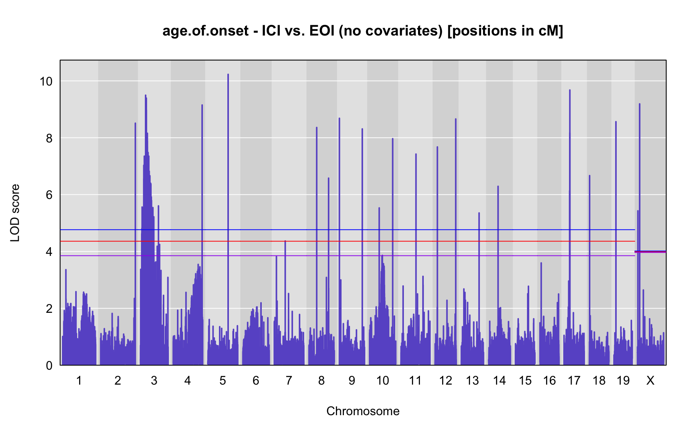
print("with normal kinship")[1] “with normal kinship”
outk <- scan1(pr.qc, covars["age.of.onset"], Xcovar=Xcovar, model="normal", kinship=kinship)
plot_lod(outk,gm$gmap)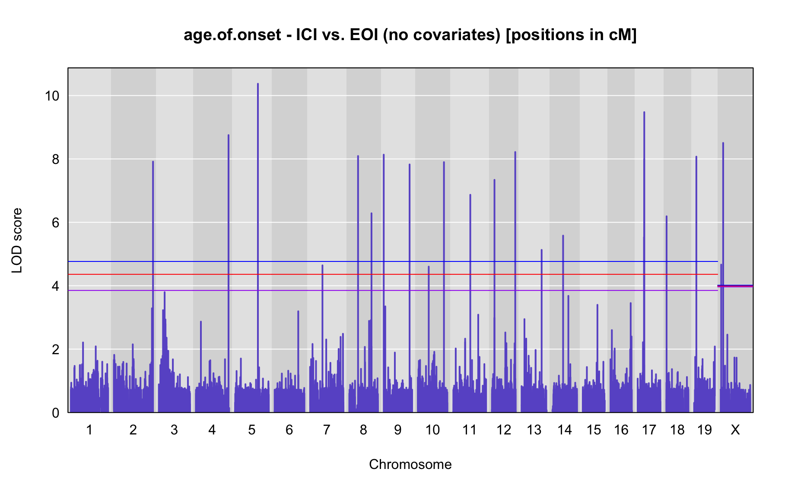
print("with loco kinship")[1] “with loco kinship”
out <- scan1(pr.qc, covars["age.of.onset"], Xcovar=Xcovar, model="normal", kinship=K)
plot_lod(out,gm$gmap)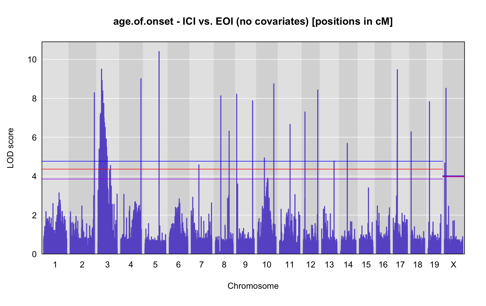
print(paste0("number of samples in analysis = ", as.data.frame(attributes(out)$sample_size)[1,]))[1] “number of samples in analysis = 266”
LOD peaks
Centimorgan (cM)
peaks<-find_peaks(out, gm$gmap, threshold=summary(operm,alpha=0.05)$A, thresholdX = summary(operm,alpha=0.05)$X, peakdrop=3, drop=1.5)
if(nrow(peaks) > 0){
peaks$marker <- find_marker(gm$gmap, chr=peaks$chr,pos=peaks$pos)
names(peaks)[2] <- c("phenotype")
peaks <- peaks[-1]
rownames(peaks) <- NULL
print(kable(peaks, escape = F, align = c("cccccccc"), "html")
%>% kable_styling("striped", full_width = T)%>%
column_spec(1, bold=TRUE)
)
#plot only peak chromosomes
plot_lod_chr<-function(out,map,chrom){
for (i in 1:dim(out)[2]){
#png(filename=paste0("/Users/chenm/Documents/qtl/Jai/",colnames(out)[i], "_lod.png"))
#par(mar=c(5.1, 6.1, 1.1, 1.1))
ymx <- maxlod(out) # overall maximum LOD score
plot(out, map, chr = chrom, lodcolumn=i, col="slateblue", ylim=c(0, ymx+0.5))
#legend("topright", lwd=2, colnames(out)[i], bg="gray90")
title(main = paste0(colnames(out)[i], " - chr", chrom, " - ICI vs. EOI (no covariates) [positions in cM]"))
add_threshold(map, summary(operm,alpha=0.1), col = 'purple')
add_threshold(map, summary(operm, alpha=0.05), col = 'red')
add_threshold(map, summary(operm, alpha=0.01), col = 'blue')
#for (j in 1: dim(summary_table)[1]){
# abline(h=summary_table[j, i],col="red")
# text(x=400, y =summary_table[j, i]+0.12, labels = paste("p=", row.names(summary_table)[j]))
#}
#dev.off()
}
}
} else {
print(paste0("There are no peaks that have a LOD that reaches suggestive (p<0.05) level of ",summary(operm,alpha=0.05)$A, " [autosomes]/",summary(operm,alpha=0.05)$X, " [x-chromosome]"))
}| phenotype | chr | pos | lod | ci_lo | ci_hi | marker |
|---|---|---|---|---|---|---|
| age.of.onset | 2 | 103.87200 | 8.283984 | 103.842 | 103.874 | UNCHS008007 |
| age.of.onset | 3 | 5.41900 | 4.641604 | 1.997 | 5.454 | UNC4809586 |
| age.of.onset | 3 | 5.56200 | 4.628356 | 5.541 | 5.576 | UNC4813186 |
| age.of.onset | 3 | 6.09900 | 5.377113 | 6.039 | 6.109 | UNC4820379 |
| age.of.onset | 3 | 6.75100 | 5.374316 | 6.569 | 7.187 | UNCJPD001170 |
| age.of.onset | 3 | 7.72300 | 5.282348 | 7.647 | 7.743 | ICR5263 |
| age.of.onset | 3 | 8.63800 | 5.308476 | 8.511 | 8.983 | JAX00516812 |
| age.of.onset | 3 | 9.21300 | 5.406111 | 9.086 | 9.418 | UNC4875653 |
| age.of.onset | 3 | 9.61500 | 5.282349 | 9.490 | 9.799 | UNCHS008193 |
| age.of.onset | 3 | 10.00200 | 5.467133 | 9.955 | 10.163 | UNCHS008209 |
| age.of.onset | 3 | 10.37100 | 5.476961 | 10.309 | 10.436 | UNCHS008215 |
| age.of.onset | 3 | 10.50800 | 5.479157 | 10.492 | 10.519 | UNCHS008219 |
| age.of.onset | 3 | 10.57500 | 4.614170 | 10.541 | 10.581 | UNC4901083 |
| age.of.onset | 3 | 10.72700 | 5.764046 | 10.606 | 10.730 | UNCHS008229 |
| age.of.onset | 3 | 10.75000 | 5.752252 | 10.745 | 10.759 | UNCHS008234 |
| age.of.onset | 3 | 10.77500 | 5.764038 | 10.761 | 10.783 | UNC4909519 |
| age.of.onset | 3 | 10.81800 | 4.781413 | 10.812 | 10.829 | UNC4912288 |
| age.of.onset | 3 | 10.88900 | 6.638477 | 10.832 | 10.924 | UNC4915446 |
| age.of.onset | 3 | 11.02900 | 7.124373 | 11.018 | 11.064 | UNCHS008260 |
| age.of.onset | 3 | 11.25600 | 6.581877 | 11.251 | 11.361 | UNC4923398 |
| age.of.onset | 3 | 11.38900 | 6.368819 | 11.367 | 11.398 | JAX00517674 |
| age.of.onset | 3 | 11.77000 | 6.687328 | 11.581 | 11.792 | UNCHS008271 |
| age.of.onset | 3 | 12.19400 | 4.411439 | 12.187 | 12.199 | UNCHS008281 |
| age.of.onset | 3 | 12.37900 | 6.658424 | 12.353 | 12.522 | JAX00105649 |
| age.of.onset | 3 | 12.55000 | 7.226194 | 12.531 | 12.576 | UNC4938565 |
| age.of.onset | 3 | 12.58200 | 7.088407 | 12.579 | 12.585 | UNC4945186 |
| age.of.onset | 3 | 12.60000 | 6.687331 | 12.587 | 12.673 | UNC4947492 |
| age.of.onset | 3 | 13.50400 | 6.700653 | 13.074 | 13.512 | UNCJPD001198 |
| age.of.onset | 3 | 13.91000 | 6.815926 | 13.623 | 13.954 | UNC4957859 |
| age.of.onset | 3 | 14.26600 | 6.565439 | 14.191 | 14.276 | UNC4959266 |
| age.of.onset | 3 | 14.30700 | 6.565498 | 14.288 | 14.311 | UNC4960612 |
| age.of.onset | 3 | 14.32400 | 6.927625 | 14.319 | 14.392 | UNC4961542 |
| age.of.onset | 3 | 15.53200 | 6.741557 | 15.504 | 15.595 | UNC4979914 |
| age.of.onset | 3 | 15.65600 | 6.666098 | 15.625 | 15.687 | UNCHS008338 |
| age.of.onset | 3 | 15.83300 | 7.196359 | 15.759 | 15.851 | UNC4990111 |
| age.of.onset | 3 | 15.88200 | 7.213337 | 15.851 | 15.900 | sanger2496q |
| age.of.onset | 3 | 16.01300 | 6.572329 | 15.996 | 16.043 | JAX00518911r |
| age.of.onset | 3 | 16.17700 | 6.741557 | 16.090 | 16.236 | UNCHS008363 |
| age.of.onset | 3 | 16.41400 | 9.500681 | 16.361 | 16.429 | UNC5008656 |
| age.of.onset | 3 | 16.58100 | 6.615097 | 16.514 | 16.684 | UNCHS008379 |
| age.of.onset | 3 | 17.33800 | 7.387071 | 17.328 | 17.393 | UNCHS008409 |
| age.of.onset | 3 | 17.45000 | 8.162278 | 17.438 | 17.471 | JAX00106210 |
| age.of.onset | 3 | 17.87500 | 8.274828 | 17.483 | 18.168 | UNC5046545 |
| age.of.onset | 3 | 18.22500 | 8.714702 | 18.222 | 18.293 | UNCHS008432 |
| age.of.onset | 3 | 18.34400 | 8.279895 | 18.294 | 18.346 | UNC5055259 |
| age.of.onset | 3 | 18.43700 | 8.463615 | 18.355 | 18.441 | UNC5062524 |
| age.of.onset | 3 | 18.52400 | 8.925203 | 18.444 | 18.532 | UNC5068215 |
| age.of.onset | 3 | 18.65300 | 8.472659 | 18.610 | 18.693 | UNC5076935 |
| age.of.onset | 3 | 18.73500 | 8.826848 | 18.709 | 18.750 | UNC5082757 |
| age.of.onset | 3 | 20.64400 | 7.254185 | 20.613 | 20.677 | UNC5173293 |
| age.of.onset | 3 | 20.91900 | 8.381985 | 20.849 | 21.528 | UNC5193970 |
| age.of.onset | 3 | 21.57900 | 5.623374 | 21.549 | 21.583 | UNCHS008609 |
| age.of.onset | 3 | 21.68800 | 8.090676 | 21.679 | 21.776 | UNCHS008614 |
| age.of.onset | 3 | 21.78500 | 7.679200 | 21.782 | 22.131 | UNCHS008627 |
| age.of.onset | 3 | 22.79300 | 6.145923 | 22.733 | 22.802 | UNC5257268 |
| age.of.onset | 3 | 23.13700 | 7.581101 | 23.045 | 23.163 | UNC5262472 |
| age.of.onset | 3 | 23.30000 | 6.611526 | 23.280 | 23.306 | UNC5264696 |
| age.of.onset | 3 | 23.43867 | 7.674533 | 23.393 | 23.458 | JAX00522922 |
| age.of.onset | 3 | 23.55900 | 7.674533 | 23.494 | 23.666 | UNC5267813 |
| age.of.onset | 3 | 23.88300 | 7.725012 | 23.745 | 24.416 | UNC5270225 |
| age.of.onset | 3 | 24.74700 | 7.673296 | 24.620 | 24.827 | UNC5277061 |
| age.of.onset | 3 | 25.09600 | 7.723899 | 24.828 | 25.112 | UNC5282259 |
| age.of.onset | 3 | 25.37600 | 7.671113 | 25.335 | 25.399 | UNC5287977 |
| age.of.onset | 3 | 25.71500 | 7.731083 | 25.496 | 26.460 | UNC5301460 |
| age.of.onset | 3 | 26.56700 | 6.114991 | 26.533 | 26.583 | UNC5309136 |
| age.of.onset | 3 | 26.62900 | 6.799982 | 26.594 | 26.732 | UNCHS008725 |
| age.of.onset | 3 | 26.75000 | 6.563870 | 26.742 | 26.751 | UNCJPD001276 |
| age.of.onset | 3 | 26.81400 | 6.563823 | 26.751 | 26.973 | UNC5321559 |
| age.of.onset | 3 | 27.01300 | 7.007405 | 26.995 | 27.331 | UNC5322455 |
| age.of.onset | 3 | 27.42600 | 6.592749 | 27.363 | 27.723 | UNC5329171 |
| age.of.onset | 3 | 28.60000 | 6.563597 | 28.547 | 28.612 | JAX00524205 |
| age.of.onset | 3 | 28.72850 | 6.721333 | 28.667 | 28.810 | UNCHS008803 |
| age.of.onset | 3 | 28.88800 | 4.716318 | 28.882 | 28.898 | UNCHS008808 |
| age.of.onset | 3 | 28.92200 | 6.701291 | 28.911 | 28.946 | UNC5354724 |
| age.of.onset | 3 | 29.00200 | 6.746794 | 28.984 | 29.021 | UNCHS008815 |
| age.of.onset | 3 | 29.05400 | 6.492881 | 29.027 | 29.075 | UNC5359394 |
| age.of.onset | 3 | 29.12700 | 6.136904 | 29.092 | 29.144 | JAX00107980 |
| age.of.onset | 3 | 29.23800 | 6.137263 | 29.147 | 29.264 | UNCHS008834 |
| age.of.onset | 3 | 29.30600 | 4.646299 | 29.304 | 29.322 | UNCHS008838 |
| age.of.onset | 3 | 29.52700 | 6.293927 | 29.329 | 29.572 | JAX00108068 |
| age.of.onset | 3 | 29.61900 | 5.272502 | 29.602 | 29.739 | UNC5375208 |
| age.of.onset | 3 | 29.85700 | 6.246392 | 29.812 | 29.869 | ICR5311 |
| age.of.onset | 3 | 29.92900 | 6.508079 | 29.926 | 29.979 | ICR5317 |
| age.of.onset | 3 | 30.01300 | 4.967314 | 30.003 | 30.018 | JAX00524828 |
| age.of.onset | 3 | 30.06000 | 5.542485 | 30.028 | 30.091 | JAX00524918 |
| age.of.onset | 3 | 30.24500 | 6.324587 | 30.204 | 30.345 | UNC5423271 |
| age.of.onset | 3 | 30.56900 | 5.978951 | 30.464 | 30.740 | UNCHS008928 |
| age.of.onset | 3 | 30.76200 | 5.288989 | 30.752 | 30.768 | UNC5433945 |
| age.of.onset | 3 | 30.81400 | 5.955427 | 30.789 | 30.842 | UNC5435874 |
| age.of.onset | 3 | 31.06000 | 5.979183 | 30.861 | 31.155 | UNCHS008948 |
| age.of.onset | 3 | 31.26500 | 6.163699 | 31.216 | 31.380 | UNCHS008953 |
| age.of.onset | 3 | 31.49000 | 6.404004 | 31.459 | 31.749 | UNCHS008959 |
| age.of.onset | 3 | 31.80500 | 6.499390 | 31.764 | 31.890 | UNC5454839 |
| age.of.onset | 3 | 32.01900 | 5.649133 | 31.982 | 32.065 | UNCHS008973 |
| age.of.onset | 3 | 32.20200 | 5.987300 | 32.199 | 32.206 | UNCHS008987 |
| age.of.onset | 3 | 32.22000 | 5.812323 | 32.219 | 32.230 | UNCHS008991 |
| age.of.onset | 3 | 32.31100 | 5.555571 | 32.230 | 32.445 | UNC5472822 |
| age.of.onset | 3 | 32.55700 | 5.434887 | 32.554 | 32.560 | ICR1325 |
| age.of.onset | 3 | 32.76100 | 5.120011 | 32.649 | 32.842 | UNCHS009031 |
| age.of.onset | 3 | 32.90500 | 5.434900 | 32.842 | 32.981 | UNCHS009034 |
| age.of.onset | 3 | 33.02600 | 5.503953 | 33.025 | 33.140 | UNCHS009036 |
| age.of.onset | 3 | 33.19500 | 5.927295 | 33.185 | 33.215 | UNC5523265 |
| age.of.onset | 3 | 33.63100 | 5.637469 | 33.627 | 33.654 | UNC5532424 |
| age.of.onset | 3 | 33.72300 | 5.441674 | 33.717 | 33.741 | ICR5348 |
| age.of.onset | 3 | 33.76800 | 5.854569 | 33.750 | 33.792 | UNC5553882 |
| age.of.onset | 3 | 34.31800 | 5.613075 | 34.307 | 34.328 | UNCHS009087 |
| age.of.onset | 3 | 34.58700 | 5.441653 | 34.559 | 34.693 | JAX00527291 |
| age.of.onset | 3 | 34.83100 | 5.366677 | 34.829 | 34.836 | UNC5589260 |
| age.of.onset | 3 | 34.89000 | 5.683524 | 34.869 | 34.927 | UNC5598889 |
| age.of.onset | 3 | 34.98600 | 5.620345 | 34.934 | 35.012 | JAX00527587 |
| age.of.onset | 3 | 35.43000 | 5.608628 | 35.404 | 35.444 | UNC5623239 |
| age.of.onset | 3 | 35.89100 | 5.503715 | 35.857 | 35.910 | UNC5639830 |
| age.of.onset | 3 | 36.07100 | 5.901882 | 36.023 | 36.123 | UNCHS009167 |
| age.of.onset | 3 | 36.53200 | 4.777000 | 36.521 | 36.647 | UNCJPD001355 |
| age.of.onset | 3 | 37.37200 | 4.645885 | 36.653 | 37.401 | UNCHS009207 |
| age.of.onset | 3 | 37.82000 | 4.579637 | 37.413 | 37.821 | UNCHS009250 |
| age.of.onset | 3 | 37.88200 | 5.483042 | 37.882 | 40.123 | JAX00529221 |
| age.of.onset | 3 | 40.51700 | 5.020757 | 40.516 | 50.564 | cr15snv123 |
| age.of.onset | 3 | 54.23700 | 4.551253 | 54.229 | 82.082 | UNCHS010004 |
| age.of.onset | 4 | 87.00200 | 9.010408 | 86.879 | 87.009 | UNC8530763 |
| age.of.onset | 5 | 61.79700 | 10.401609 | 61.775 | 61.820 | UNC10044126 |
| age.of.onset | 7 | 34.11000 | 4.579567 | 34.109 | 34.111 | cr31snv88 |
| age.of.onset | 8 | 24.43500 | 8.127430 | 24.422 | 24.443 | UNC14618634 |
| age.of.onset | 8 | 59.46100 | 6.310336 | 59.431 | 59.475 | UNC15524531 |
| age.of.onset | 9 | 1.14400 | 8.209383 | 1.132 | 1.145 | UNCHS024593 |
| age.of.onset | 9 | 68.49900 | 7.868198 | 68.485 | 68.551 | UNC17203137 |
| age.of.onset | 10 | 29.17200 | 4.937440 | 29.145 | 29.186 | UNCJPD009532 |
| age.of.onset | 10 | 68.83000 | 8.744289 | 68.824 | 68.859 | JAX00023062 |
| age.of.onset | 11 | 46.81000 | 6.663424 | 46.809 | 46.813 | JAX00029420 |
| age.of.onset | 12 | 8.46100 | 7.294754 | 8.453 | 8.471 | UNC20730998 |
| age.of.onset | 12 | 62.54600 | 8.429571 | 62.535 | 62.589 | UNCJPD005186 |
| age.of.onset | 13 | 54.32900 | 4.777409 | 54.287 | 54.345 | UNCHS036964 |
| age.of.onset | 14 | 30.15600 | 5.684123 | 30.149 | 30.175 | UNC24056202 |
| age.of.onset | 17 | 18.43300 | 5.725122 | 18.432 | 18.433 | UNCrs50895484 |
| age.of.onset | 17 | 19.04400 | 8.062140 | 19.043 | 19.049 | JAX00075411 |
| age.of.onset | 17 | 19.15300 | 9.469003 | 19.149 | 19.154 | JAX00437865 |
| age.of.onset | 18 | 2.93800 | 6.275793 | 2.907 | 2.946 | UNC28655293 |
| age.of.onset | 19 | 8.78500 | 7.826988 | 8.783 | 8.832 | UNC29919321 |
| age.of.onset | X | 3.79300 | 4.671684 | 3.779 | 3.805 | UNC30627130 |
| age.of.onset | X | 8.88600 | 8.515107 | 8.862 | 9.020 | JAX00177266 |
if(nrow(peaks) < 50 & nrow(peaks) > 0){
for(i in unique(peaks$chr)){
#for (i in 1:nrow(peaks)){
#plot_lod_chr(out,gm$gmap, peaks$chr[i])
plot_lod_chr(out,gm$gmap, i)
}
} else {
print(paste0("There are too many peaks (",nrow(peaks)," peaks) that have a LOD that reaches suggestive (p<0.05) level of ",summary(operm,alpha=0.05)$A, " [autosomes]/",summary(operm,alpha=0.05)$X, " [x-chromosome]"))
}[1] “There are too many peaks (140 peaks) that have a LOD that reaches suggestive (p<0.05) level of 4.36007328588575 [autosomes]/3.99296593331486 [x-chromosome]”
Megabase (MB)
peaks_mba<-find_peaks(out, gm$pmap, threshold=summary(operm,alpha=0.05)$A, thresholdX = summary(operm,alpha=0.05)$X, peakdrop=3, drop=1.5)
if(nrow(peaks) > 0){
peaks_mba$marker <- find_marker(gm$pmap, chr=peaks_mba$chr,pos=peaks_mba$pos)
names(peaks_mba)[2] <- c("phenotype")
peaks_mba <- peaks_mba[-1]
rownames(peaks_mba) <- NULL
print(kable(peaks_mba, escape = F, align = c("cccccccc"), "html")
%>% kable_styling("striped", full_width = T)%>%
column_spec(1, bold=TRUE)
)
plot_lod_chr_mb<-function(out,map,chrom){
for (i in 1:dim(out)[2]){
#png(filename=paste0("/Users/chenm/Documents/qtl/Jai/",colnames(out)[i], "_lod.png"))
#par(mar=c(5.1, 6.1, 1.1, 1.1))
ymx <- maxlod(out) # overall maximum LOD score
plot(out, map, chr = chrom, lodcolumn=i, col="slateblue", ylim=c(0, ymx+0.5))
#legend("topright", lwd=2, colnames(out)[i], bg="gray90")
title(main = paste0(colnames(out)[i], " - chr", chrom, " - ICI vs. EOI (no covariates) [positions in cM]"))
add_threshold(map, summary(operm,alpha=0.1), col = 'purple')
add_threshold(map, summary(operm, alpha=0.05), col = 'red')
add_threshold(map, summary(operm, alpha=0.01), col = 'blue')
#for (j in 1: dim(summary_table)[1]){
# abline(h=summary_table[j, i],col="red")
# text(x=400, y =summary_table[j, i]+0.12, labels = paste("p=", row.names(summary_table)[j]))
#}
#dev.off()
}
}
} else {
print(paste0("There are no peaks that have a LOD that reaches suggestive (p<0.05) level of ",summary(operm,alpha=0.05)$A, " [autosomes]/",summary(operm,alpha=0.05)$X, " [x-chromosome]"))
}| phenotype | chr | pos | lod | ci_lo | ci_hi | marker |
|---|---|---|---|---|---|---|
| age.of.onset | 2 | 181.949841 | 8.283984 | 181.896228 | 181.953482 | UNCHS008007 |
| age.of.onset | 3 | 19.239884 | 4.641604 | 6.735048 | 19.300441 | UNC4809586 |
| age.of.onset | 3 | 19.486223 | 4.628356 | 19.450945 | 19.509623 | UNC4813186 |
| age.of.onset | 3 | 19.960171 | 5.377113 | 19.860068 | 19.976141 | UNC4820379 |
| age.of.onset | 3 | 20.880840 | 5.374316 | 20.534245 | 21.268463 | UNCJPD001170 |
| age.of.onset | 3 | 22.876954 | 5.282348 | 22.437824 | 22.989141 | ICR5263 |
| age.of.onset | 3 | 23.372725 | 5.308476 | 23.348076 | 23.442997 | JAX00516812 |
| age.of.onset | 3 | 23.795038 | 5.406111 | 23.601025 | 24.108394 | UNC4875653 |
| age.of.onset | 3 | 24.409399 | 5.282349 | 24.217431 | 24.689830 | UNCHS008193 |
| age.of.onset | 3 | 24.999463 | 5.467133 | 24.927357 | 25.245612 | UNCHS008209 |
| age.of.onset | 3 | 25.563143 | 5.476961 | 25.468891 | 25.662030 | UNCHS008215 |
| age.of.onset | 3 | 25.826157 | 5.479157 | 25.768904 | 25.863246 | UNCHS008219 |
| age.of.onset | 3 | 26.059610 | 4.614170 | 25.942432 | 26.080189 | UNC4901083 |
| age.of.onset | 3 | 26.464570 | 5.764046 | 26.169453 | 26.472706 | UNCHS008229 |
| age.of.onset | 3 | 26.582733 | 5.752252 | 26.550415 | 26.646783 | JAX00517344 |
| age.of.onset | 3 | 26.759662 | 5.764038 | 26.660777 | 26.812074 | UNC4909519 |
| age.of.onset | 3 | 27.057748 | 4.781413 | 27.013258 | 27.108249 | UNC4912288 |
| age.of.onset | 3 | 27.349132 | 6.638477 | 27.120097 | 27.457124 | UNC4915446 |
| age.of.onset | 3 | 27.763038 | 7.124373 | 27.718425 | 27.910018 | UNCHS008260 |
| age.of.onset | 3 | 27.960656 | 6.581877 | 27.959521 | 27.999502 | UNC4923398 |
| age.of.onset | 3 | 28.018212 | 6.368819 | 28.003389 | 28.024244 | JAX00517674 |
| age.of.onset | 3 | 28.275874 | 6.687328 | 28.148245 | 28.290965 | UNCHS008271 |
| age.of.onset | 3 | 28.563899 | 4.411439 | 28.557374 | 28.571295 | UNCHS008281 |
| age.of.onset | 3 | 28.825123 | 6.658424 | 28.788297 | 29.027295 | JAX00105649 |
| age.of.onset | 3 | 29.066064 | 7.226194 | 29.039964 | 29.324998 | UNC4938565 |
| age.of.onset | 3 | 29.516906 | 7.088407 | 29.407615 | 29.554860 | UNC4945186 |
| age.of.onset | 3 | 29.691281 | 6.687331 | 29.574105 | 29.947252 | UNC4947492 |
| age.of.onset | 3 | 30.351115 | 6.700653 | 30.228033 | 30.353561 | UNCJPD001198 |
| age.of.onset | 3 | 30.467266 | 6.815926 | 30.385270 | 30.479998 | UNC4957859 |
| age.of.onset | 3 | 30.569243 | 6.565439 | 30.547674 | 30.594168 | UNC4959266 |
| age.of.onset | 3 | 30.693283 | 6.565498 | 30.633711 | 30.705175 | UNC4960612 |
| age.of.onset | 3 | 30.747348 | 6.927625 | 30.732121 | 30.947954 | UNC4961542 |
| age.of.onset | 3 | 32.027756 | 6.741557 | 31.963442 | 32.170175 | UNC4979914 |
| age.of.onset | 3 | 32.307341 | 6.666098 | 32.236358 | 32.376408 | UNCHS008338 |
| age.of.onset | 3 | 32.706610 | 7.196359 | 32.539600 | 32.747330 | UNC4990111 |
| age.of.onset | 3 | 32.818589 | 7.213337 | 32.747330 | 32.859127 | sanger2496q |
| age.of.onset | 3 | 33.115028 | 6.572329 | 33.074847 | 33.182663 | JAX00518911r |
| age.of.onset | 3 | 33.484001 | 6.741557 | 33.288147 | 33.617812 | UNCHS008363 |
| age.of.onset | 3 | 34.019613 | 9.500681 | 33.900624 | 34.055268 | UNC5008656 |
| age.of.onset | 3 | 34.111945 | 6.615097 | 34.090757 | 34.210083 | UNCHS008379 |
| age.of.onset | 3 | 35.866646 | 7.387071 | 35.841439 | 35.997429 | UNCHS008409 |
| age.of.onset | 3 | 36.300748 | 8.162278 | 36.215642 | 36.445091 | JAX00106210 |
| age.of.onset | 3 | 36.599358 | 8.274828 | 36.532077 | 36.854743 | UNC5046545 |
| age.of.onset | 3 | 36.908324 | 8.714702 | 36.905615 | 36.972349 | UNCHS008432 |
| age.of.onset | 3 | 37.218426 | 8.279895 | 36.973387 | 37.230431 | UNC5055259 |
| age.of.onset | 3 | 37.762567 | 8.463615 | 37.285826 | 37.785479 | UNC5062524 |
| age.of.onset | 3 | 38.143162 | 8.925203 | 37.804674 | 38.171450 | UNC5068215 |
| age.of.onset | 3 | 38.633789 | 8.472659 | 38.470366 | 38.783305 | UNC5076935 |
| age.of.onset | 3 | 38.923762 | 8.826848 | 38.844788 | 38.958074 | UNC5082757 |
| age.of.onset | 3 | 46.151173 | 7.254185 | 46.093688 | 46.254422 | UNC5173293 |
| age.of.onset | 3 | 47.600691 | 8.381985 | 47.456615 | 48.845360 | UNC5193970 |
| age.of.onset | 3 | 48.948638 | 5.623374 | 48.887661 | 48.956447 | UNCHS008609 |
| age.of.onset | 3 | 49.619917 | 8.090676 | 49.408904 | 50.691453 | UNCHS008614 |
| age.of.onset | 3 | 50.718737 | 7.679200 | 50.710562 | 51.204914 | UNCHS008627 |
| age.of.onset | 3 | 51.889766 | 6.145923 | 51.831378 | 51.899210 | UNC5257268 |
| age.of.onset | 3 | 52.227835 | 7.581101 | 52.137624 | 52.253753 | UNC5262472 |
| age.of.onset | 3 | 52.388607 | 6.611526 | 52.368865 | 52.393749 | UNC5264696 |
| age.of.onset | 3 | 52.524723 | 7.674533 | 52.479513 | 52.543277 | JAX00522922 |
| age.of.onset | 3 | 52.595514 | 7.674533 | 52.563536 | 52.648179 | UNC5267813 |
| age.of.onset | 3 | 52.755372 | 7.725012 | 52.687185 | 53.038567 | UNC5270225 |
| age.of.onset | 3 | 53.222116 | 7.673296 | 53.151880 | 53.262718 | UNC5277061 |
| age.of.onset | 3 | 53.524514 | 7.723899 | 53.262896 | 53.545666 | UNC5282259 |
| age.of.onset | 3 | 53.889338 | 7.671113 | 53.835028 | 53.919023 | UNC5287977 |
| age.of.onset | 3 | 54.819603 | 7.731083 | 54.249886 | 55.125711 | UNC5301460 |
| age.of.onset | 3 | 55.337593 | 6.114991 | 55.162024 | 55.417042 | UNC5309136 |
| age.of.onset | 3 | 55.657168 | 6.799982 | 55.477054 | 56.208134 | UNCHS008725 |
| age.of.onset | 3 | 56.313632 | 6.563870 | 56.265747 | 56.315733 | UNCJPD001276 |
| age.of.onset | 3 | 56.386738 | 6.563823 | 56.315733 | 56.450248 | UNC5321559 |
| age.of.onset | 3 | 56.466293 | 7.007405 | 56.459210 | 56.785971 | UNC5322455 |
| age.of.onset | 3 | 57.009722 | 6.592749 | 56.890286 | 57.386365 | UNC5329171 |
| age.of.onset | 3 | 58.553365 | 6.563597 | 58.470901 | 58.572449 | JAX00524205 |
| age.of.onset | 3 | 58.756052 | 6.721333 | 58.659755 | 58.884084 | UNCHS008803 |
| age.of.onset | 3 | 59.007878 | 4.716318 | 58.997877 | 59.023406 | UNCHS008808 |
| age.of.onset | 3 | 59.061417 | 6.701291 | 59.042696 | 59.098017 | UNC5354724 |
| age.of.onset | 3 | 59.186472 | 6.746794 | 59.157742 | 59.277556 | UNCHS008815 |
| age.of.onset | 3 | 59.574730 | 6.492881 | 59.337846 | 59.752495 | UNC5359394 |
| age.of.onset | 3 | 60.135901 | 6.136904 | 59.874552 | 60.257390 | JAX00524417 |
| age.of.onset | 3 | 60.706694 | 6.137263 | 60.278211 | 60.801872 | UNCHS008834 |
| age.of.onset | 3 | 60.953219 | 4.646299 | 60.947585 | 61.010137 | UNCHS008840 |
| age.of.onset | 3 | 61.292774 | 6.293927 | 61.035391 | 61.341755 | JAX00108068 |
| age.of.onset | 3 | 61.393825 | 5.272502 | 61.375303 | 61.526126 | UNC5375208 |
| age.of.onset | 3 | 61.916655 | 6.246392 | 61.607716 | 61.995796 | ICR5311 |
| age.of.onset | 3 | 62.408437 | 6.508079 | 62.391679 | 62.798722 | ICR5317 |
| age.of.onset | 3 | 63.163762 | 4.967314 | 63.058661 | 63.209659 | JAX00524828 |
| age.of.onset | 3 | 63.658732 | 5.542485 | 63.315837 | 64.019276 | JAX00524918 |
| age.of.onset | 3 | 66.065486 | 6.324587 | 65.490175 | 66.196891 | UNC5423271 |
| age.of.onset | 3 | 66.477015 | 5.978951 | 66.346136 | 66.731642 | UNCHS008928 |
| age.of.onset | 3 | 66.949250 | 5.288989 | 66.854820 | 67.011279 | UNC5433945 |
| age.of.onset | 3 | 67.245596 | 5.955427 | 67.212787 | 67.281610 | UNC5435874 |
| age.of.onset | 3 | 67.565981 | 5.979183 | 67.306307 | 67.690028 | UNCHS008948 |
| age.of.onset | 3 | 67.832958 | 6.163699 | 67.769242 | 67.982235 | UNCHS008953 |
| age.of.onset | 3 | 68.125680 | 6.404004 | 68.085776 | 68.463689 | UNCHS008959 |
| age.of.onset | 3 | 68.536022 | 6.499390 | 68.483153 | 68.646380 | UNC5454839 |
| age.of.onset | 3 | 68.814147 | 5.649133 | 68.766920 | 68.877353 | UNCHS008973 |
| age.of.onset | 3 | 69.250770 | 5.987300 | 69.221690 | 69.285828 | UNCHS008987 |
| age.of.onset | 3 | 69.426123 | 5.812323 | 69.415768 | 69.522341 | UNCHS008992 |
| age.of.onset | 3 | 69.840253 | 5.555571 | 69.526423 | 70.162040 | UNC5472822 |
| age.of.onset | 3 | 71.043331 | 5.434887 | 70.945831 | 71.123435 | ICR5325 |
| age.of.onset | 3 | 73.192676 | 5.120011 | 72.568110 | 73.285890 | UNCHS009032 |
| age.of.onset | 3 | 73.338566 | 5.434900 | 73.285890 | 73.401554 | UNCHS009034 |
| age.of.onset | 3 | 73.438963 | 5.503953 | 73.437910 | 73.533777 | UNCHS009036 |
| age.of.onset | 3 | 73.579124 | 5.927295 | 73.570827 | 73.596217 | UNC5523265 |
| age.of.onset | 3 | 74.163450 | 5.637469 | 74.114817 | 74.447311 | UNC5532424 |
| age.of.onset | 3 | 75.295904 | 5.441674 | 75.226821 | 75.515168 | ICR5348 |
| age.of.onset | 3 | 75.711287 | 5.854569 | 75.629040 | 75.744643 | UNC5553882 |
| age.of.onset | 3 | 76.730162 | 5.613075 | 76.605322 | 76.836708 | UNCHS009087 |
| age.of.onset | 3 | 77.447996 | 5.441653 | 77.416124 | 77.572701 | JAX00527291 |
| age.of.onset | 3 | 78.149252 | 5.366677 | 78.121212 | 78.199977 | UNC5589260 |
| age.of.onset | 3 | 78.797844 | 5.683524 | 78.565427 | 79.109418 | UNC5598889 |
| age.of.onset | 3 | 79.310408 | 5.620345 | 79.133656 | 79.401409 | JAX00527587 |
| age.of.onset | 3 | 80.438201 | 5.608628 | 80.387983 | 80.463849 | UNC5623239 |
| age.of.onset | 3 | 81.503929 | 5.503715 | 81.392789 | 81.565523 | UNC5639830 |
| age.of.onset | 3 | 81.955000 | 5.901882 | 81.864954 | 82.050578 | UNCHS009167 |
| age.of.onset | 3 | 82.571467 | 4.777000 | 82.558057 | 82.719304 | UNCJPD001355 |
| age.of.onset | 3 | 83.784492 | 4.645885 | 82.727247 | 83.870530 | UNCHS009207 |
| age.of.onset | 3 | 85.737279 | 4.579637 | 83.909638 | 85.739085 | UNCHS009250 |
| age.of.onset | 3 | 86.779551 | 5.483042 | 86.776676 | 91.912141 | UNCHS009280 |
| age.of.onset | 3 | 93.869683 | 5.020757 | 93.867937 | 117.281751 | cr1snv123 |
| age.of.onset | 3 | 123.461854 | 4.551253 | 123.459017 | 158.745139 | UNCHS010004 |
| age.of.onset | 4 | 155.695464 | 9.010408 | 155.641372 | 155.698101 | UNC8530763 |
| age.of.onset | 5 | 121.347301 | 10.401609 | 121.284594 | 121.415602 | UNC10044126 |
| age.of.onset | 7 | 60.379063 | 4.579567 | 60.368115 | 60.389171 | cr31snv87 |
| age.of.onset | 8 | 43.574805 | 8.127430 | 43.510568 | 43.616326 | UNC14618634 |
| age.of.onset | 8 | 113.430254 | 6.310336 | 113.398684 | 113.445482 | UNC15524531 |
| age.of.onset | 9 | 3.406661 | 8.209383 | 3.369866 | 3.410051 | UNCHS024593 |
| age.of.onset | 9 | 116.305490 | 7.868198 | 116.286532 | 116.373801 | UNC17203137 |
| age.of.onset | 10 | 57.446352 | 4.937440 | 57.392222 | 57.474287 | UNCJPD009532 |
| age.of.onset | 10 | 120.920534 | 8.744289 | 120.912467 | 120.960841 | JAX00023062 |
| age.of.onset | 11 | 79.354717 | 6.663424 | 79.349507 | 79.387816 | JAX00029420 |
| age.of.onset | 12 | 24.076057 | 7.294754 | 23.912906 | 24.275293 | UNCHS032933 |
| age.of.onset | 12 | 115.590206 | 8.429571 | 115.519395 | 115.874633 | UNCJPD005186 |
| age.of.onset | 13 | 102.204967 | 4.777409 | 102.144333 | 102.227537 | UNCHS036964 |
| age.of.onset | 14 | 57.450881 | 5.684123 | 57.434906 | 57.489033 | UNC24056202 |
| age.of.onset | 17 | 34.732558 | 5.725122 | 34.731841 | 34.732603 | UNCrs47191360 |
| age.of.onset | 17 | 36.636109 | 8.062140 | 36.629849 | 36.685517 | UNCJPD006614 |
| age.of.onset | 17 | 37.796386 | 9.469003 | 37.755718 | 37.809525 | JAX00437865 |
| age.of.onset | 18 | 4.868823 | 6.275793 | 4.813576 | 4.883820 | UNC28655293 |
| age.of.onset | 19 | 13.389238 | 7.826988 | 13.378814 | 13.596563 | UNC29919321 |
| age.of.onset | X | 8.325334 | 4.671684 | 8.295563 | 8.351654 | UNC30627130 |
| age.of.onset | X | 13.939143 | 8.515107 | 13.917229 | 14.062892 | JAX00177266 |
if(nrow(peaks_mba) < 50 & nrow(peaks_mba) > 0){
for(i in unique(peaks_mba$chr)){
#for (i in 1:nrow(peaks_mba)){
#plot_lod_chr_mb(out,gm$pmap, peaks_mba$chr[i])
plot_lod_chr_mb(out,gm$pmap,i)
}
} else {
print(paste0("There are too many peaks (",nrow(peaks_mba)," peaks) that have a LOD that reaches suggestive (p<0.05) level of ",summary(operm,alpha=0.05)$A, " [autosomes]/",summary(operm,alpha=0.05)$X, " [x-chromosome]"))
}[1] “There are too many peaks (140 peaks) that have a LOD that reaches suggestive (p<0.05) level of 4.36007328588575 [autosomes]/3.99296593331486 [x-chromosome]”
QTL effects
For each peak LOD location we give a list of gene
if(nrow(peaks) < 50 & nrow(peaks) > 0){
for (i in 1:nrow(peaks)){
#for (i in 1:1){
#Plot 1
g <- maxmarg(pr.qc, gm$gmap, chr=peaks$chr[i], pos=peaks$pos[i], return_char=TRUE)
#png(filename=paste0("/Users/chenm/Documents/qtl/Jai/","qtl_effect_", i, ".png"))
#par(mar=c(4.1, 4.1, 1.5, 0.6))
plot_pxg(g, covars[,peaks$phenotype[i]], ylab=peaks$phenotype[i], sort=FALSE)
title(main = paste0("chr: ", chr=peaks$chr[i],"; pos: ", peaks$pos[i], "cM /",peaks_mba$pos[i],"MB\n(",peaks$phenotype[i]," )"), line=0.2)
##dev.off()
chr = peaks$chr[i]
# Plot 2
pr_sub <- pull_genoprobint(pr.qc, gm$gmap, chr, c(peaks$ci_lo[i], peaks$ci_hi[i]))
#coeff <- scan1coef(pr[,chr], cross$pheno[,peaks$lodcolumn[i]], addcovar = addcovar)
#coeff <- scan1coef(pr[,chr], cross$pheno[,peaks$lodcolumn[i]], Xcovar=Xcovar)
#coeff <- scan1coef(pr.qc[,chr], gm$covar[peaks$lodcolumn[i]], model="binary")
#coeff_sub <- scan1coef(pr_sub[,chr], gm$covar[peaks$lodcolumn[i]], model="binary")
blup <- scan1blup(pr.qc[,chr], covars[peaks$phenotype[i]])
blup_sub <- scan1blup(pr_sub[,chr], covars[peaks$phenotype[i]])
write.csv(as.data.frame(blup_sub), paste0("data/ici.vs.eoi_",peaks$phenotype[i],"-no.covariates_blup_sub_chr-",chr,"_peak.marker-",peaks$marker[i],"_lod.drop-1.5_5.batches_mis_0.csv"), quote=F)
#plot_coef(coeff,
# gm$gmap, columns=1:2,
# bgcolor="gray95", legend="bottomleft",
# main = paste("chr", chr=peaks$chr[i],"; pos: ", peaks$pos[i], "cM /",peaks_mba$pos[i],"MB\n(",peaks$lodcolumn[i]," [scan1coeff; positions in cM] )")
# )
#plot_coef(coeff_sub,
# gm$gmap, columns=1:2,
# bgcolor="gray95", legend="bottomleft",
# main = paste("chr", chr=peaks$chr[i],"; pos: ", peaks$pos[i], "cM /",peaks_mba$pos[i],"MB\n(",peaks$lodcolumn[i],"; 1.5 LOD drop interval [scan1coeff; positions in cM] ) ")
# )
plot_coef(blup,
gm$gmap, columns=1:2,
bgcolor="gray95", legend="bottomleft",
main = paste0("chr: ", chr=peaks$chr[i],"; pos: ", peaks$pos[i], "cM /",peaks_mba$pos[i],"MB\n(",peaks$phenotype[i]," [scan1blup; positions in cM] )")
)
plot_coef(blup_sub,
gm$gmap, columns=1:2,
bgcolor="gray95", legend="bottomleft",
main = paste0("chr: ", chr=peaks$chr[i],"; pos: ", peaks$pos[i], "cM /",peaks_mba$pos[i],"MB\n(",peaks$phenotype[i],"; 1.5 LOD drop interval [scan1blup; positions in cM] )")
)
# Plot 3
#c2effB <- scan1coef(pr.qc[,chr], gm$covar[peaks$lodcolumn[i]], model="binary", contrasts=cbind(a=c(-1, 0), d=c(0, -1)))
#c2effBb <- scan1blup(pr.qc[,chr], gm$covar[peaks$lodcolumn[i]], contrasts=cbind(a=c(-1, 0), d=c(0, -1)))
##c2effB <- scan1coef(pr[,chr], cross$pheno[,peaks$lodcolumn[i]], addcovar = addcovar, contrasts=cbind(mu=c(1,1,1), a=c(-1, 0, 1), d=c(0, 1, 0)))
##c2effB <- scan1coef(pr[,chr], cross$pheno[,peaks$lodcolumn[i]],Xcovar=Xcovar, contrasts=cbind(mu=c(1,1,1), a=c(-1, 0, 1), d=c(0, 1, 0)))
#plot(c2effB, gm$gmap[chr], columns=1:2,
# bgcolor="gray95", legend="bottomleft",
# main = paste("chr", chr=peaks$chr[i], "pos", peaks$pos[i], "(",peaks$lodcolumn[i],")")
# )
#plot(c2effBb, gm$gmap[chr], columns=1:2,
# bgcolor="gray95", legend="bottomleft",
# main = paste("chr", chr=peaks$chr[i], "pos", peaks$pos[i], "(",peaks$lodcolumn[i],")")
# )
##last_coef <- unclass(c2effB)[nrow(c2effB),2:3] # last two coefficients
##for(t in seq(along=last_coef))
## axis(side=4, at=last_coef[t], names(last_coef)[t], tick=FALSE)
#Table 1
chr = peaks_mba$chr[i]
start=as.numeric(peaks_mba$ci_lo[i])
end=as.numeric(peaks_mba$ci_hi[i])
genesgss = query_genes(chr, start, end)
write.csv(genesgss, file=paste0("data/ici.vs.eoi_",peaks$phenotype[i],"-no.covariates_genes_chr-",chr,"_peak.marker-",peaks$marker[i],"_lod.drop-1.5_5.batches_mis_0.csv"), quote=F)
rownames(genesgss) <- NULL
genesgss$strand_old = genesgss$strand
genesgss$strand[genesgss$strand=="+"] <- "positive"
genesgss$strand[genesgss$strand=="-"] <- "negative"
#genesgss <-
#table <-
#genesgss[,c("chr","type","start","stop","strand","ID","Name","Dbxref","gene_id","mgi_type","description")] %>%
#kable(escape = F,align = c("ccccccccccc")) %>%
#kable_styling("striped", full_width = T) #%>%
#cat #%>%
#column_spec(1, bold=TRUE)
#
#print(kable(genesgss[,c("chr","type","start","stop","strand","ID","Name","Dbxref","gene_id","mgi_type","description")], escape = F,align = c("ccccccccccc")))
print(kable(genesgss[,c("chr","type","start","stop","strand","ID","Name","Dbxref","gene_id","mgi_type","description")], "html") %>% kable_styling("striped", full_width = T))
#table
}
} else {
print(paste0("There are too many peaks (",nrow(peaks_mba)," peaks) that have a LOD that reaches suggestive (p<0.05) level of ",summary(operm,alpha=0.05)$A, " [autosomes]/",summary(operm,alpha=0.05)$X, " [x-chromosome]"))
}[1] “There are too many peaks (140 peaks) that have a LOD that reaches suggestive (p<0.05) level of 4.36007328588575 [autosomes]/3.99296593331486 [x-chromosome]”
Additive covariates
Significance thresholds
operm <- scan1perm(pr.qc, covars["age.of.onset"], model="normal", addcovar=addcovar, n_perm=10, perm_Xsp=TRUE, chr_lengths=chr_lengths(gm$gmap))
summary_table<-data.frame(unclass(summary(operm, alpha=c(0.01, 0.05, 0.1))))
names(summary_table) <- c("autosomes","X")
summary_table$significance.level <- rownames(summary_table)
rownames(summary_table) <- NULL
summary_table[c(3,1:2)] %>%
kable(escape = F,align = c("ccc")) %>%
kable_styling("striped", full_width = T) %>%
column_spec(1, bold=TRUE)| significance.level | autosomes | X |
|---|---|---|
| 0.01 | 17.33971 | 13.19911 |
| 0.05 | 16.26629 | 12.57377 |
| 0.1 | 14.92117 | 11.75602 |
Genome-wide scan
plot_lod<-function(out,map){
for (i in 1:dim(out)[2]){
#par(mar=c(5.1, 6.1, 1.1, 1.1))
ymx <- maxlod(out) # overall maximum LOD score
plot(out, map, lodcolumn=i, col="slateblue", ylim=c(0, ymx+0.5))
#legend("topright", lwd=2, colnames(out)[i], bg="gray90")
title(main = paste0(colnames(out)[i], " - ICI vs. EOI (ith additive covariates) [positions in cM]"))
add_threshold(map, summary(operm,alpha=0.1), col = 'purple')
add_threshold(map, summary(operm, alpha=0.05), col = 'red')
add_threshold(map, summary(operm, alpha=0.01), col = 'blue')
}
}
print("with no kinship")[1] “with no kinship”
outfa <- scan1(pr.qc, covars["age.of.onset"], Xcovar=Xcovar, model="normal", addcovar=addcovar)
plot_lod(outfa,gm$gmap)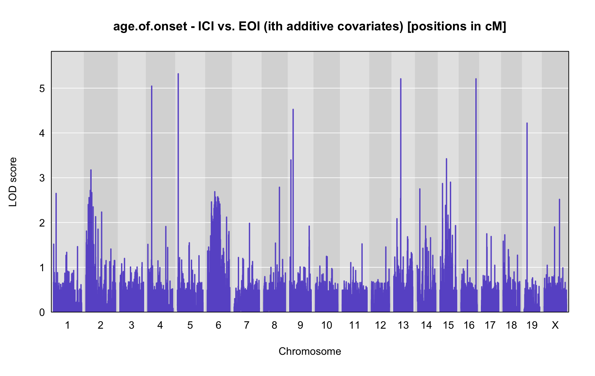
print("with normal kinship")[1] “with normal kinship”
outka <- scan1(pr.qc, covars["age.of.onset"], Xcovar=Xcovar, model="normal", addcovar=addcovar, kinship=kinship)
plot_lod(outka,gm$gmap)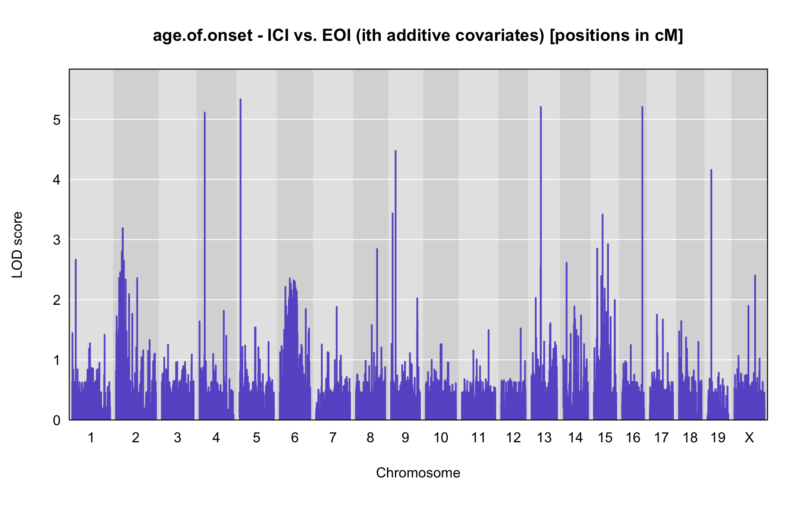
print("with loco kinship")[1] “with loco kinship”
outa <- scan1(pr.qc, covars["age.of.onset"], Xcovar=Xcovar, model="normal", addcovar=addcovar, kinship=K)
plot_lod(outa,gm$gmap)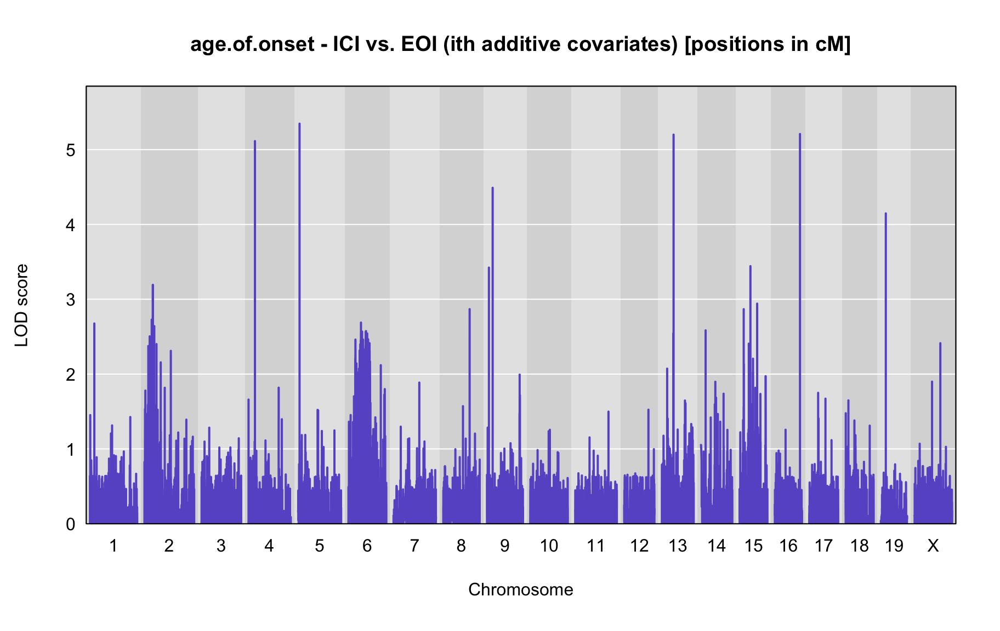
out = outa
print(paste0("number of samples in analysis = ", as.data.frame(attributes(out)$sample_size)[1,]))[1] “number of samples in analysis = 266”
LOD peaks
Centimorgan (cM)
peaks<-find_peaks(out, gm$gmap, threshold=summary(operm,alpha=0.05)$A, thresholdX = summary(operm,alpha=0.05)$X, peakdrop=3, drop=1.5)
if(nrow(peaks) > 0){
peaks$marker <- find_marker(gm$gmap, chr=peaks$chr,pos=peaks$pos)
names(peaks)[2] <- c("phenotype")
peaks <- peaks[-1]
rownames(peaks) <- NULL
print(kable(peaks, escape = F, align = c("cccccccc"), "html")
%>% kable_styling("striped", full_width = T)%>%
column_spec(1, bold=TRUE)
)
#plot only peak chromosomes
plot_lod_chr<-function(out,map,chrom){
for (i in 1:dim(out)[2]){
#png(filename=paste0("/Users/chenm/Documents/qtl/Jai/",colnames(out)[i], "_lod.png"))
#par(mar=c(5.1, 6.1, 1.1, 1.1))
ymx <- maxlod(out) # overall maximum LOD score
plot(out, map, chr = chrom, lodcolumn=i, col="slateblue", ylim=c(0, ymx+0.5))
#legend("topright", lwd=2, colnames(out)[i], bg="gray90")
title(main = paste0(colnames(out)[i], " - chr", chrom, " - ICI vs. EOI (with additive covariates) [positions in cM]"))
add_threshold(map, summary(operm,alpha=0.1), col = 'purple')
add_threshold(map, summary(operm, alpha=0.05), col = 'red')
add_threshold(map, summary(operm, alpha=0.01), col = 'blue')
#for (j in 1: dim(summary_table)[1]){
# abline(h=summary_table[j, i],col="red")
# text(x=400, y =summary_table[j, i]+0.12, labels = paste("p=", row.names(summary_table)[j]))
#}
#dev.off()
}
}
} else {
print(paste0("There are no peaks that have a LOD that reaches suggestive (p<0.05) level of ",summary(operm,alpha=0.05)$A, " [autosomes]/",summary(operm,alpha=0.05)$X, " [x-chromosome]"))
}[1] “There are no peaks that have a LOD that reaches suggestive (p<0.05) level of 16.2662869578467 [autosomes]/12.5737713719847 [x-chromosome]”
if(nrow(peaks) < 50 & nrow(peaks) > 0){
for(i in unique(peaks$chr)){
#for (i in 1:nrow(peaks)){
#plot_lod_chr(out,gm$gmap, peaks$chr[i])
plot_lod_chr(out,gm$gmap, i)
}
} else {
print(paste0("There are too many peaks (",nrow(peaks)," peaks) that have a LOD that reaches suggestive (p<0.05) level of ",summary(operm,alpha=0.05)$A, " [autosomes]/",summary(operm,alpha=0.05)$X, " [x-chromosome]"))
}[1] “There are too many peaks (0 peaks) that have a LOD that reaches suggestive (p<0.05) level of 16.2662869578467 [autosomes]/12.5737713719847 [x-chromosome]”
Megabase (MB)
peaks_mba<-find_peaks(out, gm$pmap, threshold=summary(operm,alpha=0.05)$A, thresholdX = summary(operm,alpha=0.05)$X, peakdrop=3, drop=1.5)
if(nrow(peaks) > 0){
peaks_mba$marker <- find_marker(gm$pmap, chr=peaks_mba$chr,pos=peaks_mba$pos)
names(peaks_mba)[2] <- c("phenotype")
peaks_mba <- peaks_mba[-1]
rownames(peaks_mba) <- NULL
print(kable(peaks_mba, escape = F, align = c("cccccccc"), "html")
%>% kable_styling("striped", full_width = T)%>%
column_spec(1, bold=TRUE)
)
plot_lod_chr_mb<-function(out,map,chrom){
for (i in 1:dim(out)[2]){
#png(filename=paste0("/Users/chenm/Documents/qtl/Jai/",colnames(out)[i], "_lod.png"))
#par(mar=c(5.1, 6.1, 1.1, 1.1))
ymx <- maxlod(out) # overall maximum LOD score
plot(out, map, chr = chrom, lodcolumn=i, col="slateblue", ylim=c(0, ymx+0.5))
#legend("topright", lwd=2, colnames(out)[i], bg="gray90")
title(main = paste0(colnames(out)[i], " - chr", chrom, " - ICI vs. EOI (with additive covariates) [positions in cM]"))
add_threshold(map, summary(operm,alpha=0.1), col = 'purple')
add_threshold(map, summary(operm, alpha=0.05), col = 'red')
add_threshold(map, summary(operm, alpha=0.01), col = 'blue')
#for (j in 1: dim(summary_table)[1]){
# abline(h=summary_table[j, i],col="red")
# text(x=400, y =summary_table[j, i]+0.12, labels = paste("p=", row.names(summary_table)[j]))
#}
#dev.off()
}
}
} else {
print(paste0("There are no peaks that have a LOD that reaches suggestive (p<0.05) level of ",summary(operm,alpha=0.05)$A, " [autosomes]/",summary(operm,alpha=0.05)$X, " [x-chromosome]"))
}[1] “There are no peaks that have a LOD that reaches suggestive (p<0.05) level of 16.2662869578467 [autosomes]/12.5737713719847 [x-chromosome]”
if(nrow(peaks_mba) < 50 & nrow(peaks_mba) > 0){
for(i in unique(peaks_mba$chr)){
#for (i in 1:nrow(peaks_mba)){
#plot_lod_chr_mb(out,gm$pmap, peaks_mba$chr[i])
plot_lod_chr_mb(out,gm$pmap,i)
}
} else {
print(paste0("There are too many peaks (",nrow(peaks_mba)," peaks) that have a LOD that reaches suggestive (p<0.05) level of ",summary(operm,alpha=0.05)$A, " [autosomes]/",summary(operm,alpha=0.05)$X, " [x-chromosome]"))
}[1] “There are too many peaks (0 peaks) that have a LOD that reaches suggestive (p<0.05) level of 16.2662869578467 [autosomes]/12.5737713719847 [x-chromosome]”
QTL effects
For each peak LOD location we give a list of gene
if(nrow(peaks) < 50 & nrow(peaks) > 0){
for (i in 1:nrow(peaks)){
#for (i in 1:1){
#Plot 1
g <- maxmarg(pr.qc, gm$gmap, chr=peaks$chr[i], pos=peaks$pos[i], return_char=TRUE)
#png(filename=paste0("/Users/chenm/Documents/qtl/Jai/","qtl_effect_", i, ".png"))
#par(mar=c(4.1, 4.1, 1.5, 0.6))
plot_pxg(g, covars[,peaks$phenotype[i]], ylab=peaks$phenotype[i], sort=FALSE)
title(main = paste0("chr: ", chr=peaks$chr[i],"; pos: ", peaks$pos[i], "cM /",peaks_mba$pos[i],"MB\n(",peaks$phenotype[i]," )"), line=0.2)
##dev.off()
chr = peaks$chr[i]
# Plot 2
pr_sub <- pull_genoprobint(pr.qc, gm$gmap, chr, c(peaks$ci_lo[i], peaks$ci_hi[i]))
#coeff <- scan1coef(pr[,chr], cross$pheno[,peaks$lodcolumn[i]], addcovar = addcovar)
#coeff <- scan1coef(pr[,chr], cross$pheno[,peaks$lodcolumn[i]], Xcovar=Xcovar)
#coeff <- scan1coef(pr.qc[,chr], gm$covar[peaks$lodcolumn[i]], model="binary")
#coeff_sub <- scan1coef(pr_sub[,chr], gm$covar[peaks$lodcolumn[i]], model="binary")
blup <- scan1blup(pr.qc[,chr], covars[peaks$phenotype[i]])
blup_sub <- scan1blup(pr_sub[,chr], covars[peaks$phenotype[i]])
write.csv(as.data.frame(blup_sub), paste0("data/ici.vs.eoi_",peaks$phenotype[i],"-additive.covariates_blup_sub_chr-",chr,"_peak.marker-",peaks$marker[i],"_lod.drop-1.5_5.batches_mis_0.csv"), quote=F)
#plot_coef(coeff,
# gm$gmap, columns=1:2,
# bgcolor="gray95", legend="bottomleft",
# main = paste("chr", chr=peaks$chr[i],"; pos: ", peaks$pos[i], "cM /",peaks_mba$pos[i],"MB\n(",peaks$lodcolumn[i]," [scan1coeff; positions in cM] )")
# )
#plot_coef(coeff_sub,
# gm$gmap, columns=1:2,
# bgcolor="gray95", legend="bottomleft",
# main = paste("chr", chr=peaks$chr[i],"; pos: ", peaks$pos[i], "cM /",peaks_mba$pos[i],"MB\n(",peaks$lodcolumn[i],"; 1.5 LOD drop interval [scan1coeff; positions in cM] ) ")
# )
plot_coef(blup,
gm$gmap, columns=1:2,
bgcolor="gray95", legend="bottomleft",
main = paste0("chr: ", chr=peaks$chr[i],"; pos: ", peaks$pos[i], "cM /",peaks_mba$pos[i],"MB\n(",peaks$phenotype[i]," [scan1blup; positions in cM] )")
)
plot_coef(blup_sub,
gm$gmap, columns=1:2,
bgcolor="gray95", legend="bottomleft",
main = paste0("chr: ", chr=peaks$chr[i],"; pos: ", peaks$pos[i], "cM /",peaks_mba$pos[i],"MB\n(",peaks$phenotype[i],"; 1.5 LOD drop interval [scan1blup; positions in cM] )")
)
# Plot 3
#c2effB <- scan1coef(pr.qc[,chr], gm$covar[peaks$lodcolumn[i]], model="binary", contrasts=cbind(a=c(-1, 0), d=c(0, -1)))
#c2effBb <- scan1blup(pr.qc[,chr], gm$covar[peaks$lodcolumn[i]], contrasts=cbind(a=c(-1, 0), d=c(0, -1)))
##c2effB <- scan1coef(pr[,chr], cross$pheno[,peaks$lodcolumn[i]], addcovar = addcovar, contrasts=cbind(mu=c(1,1,1), a=c(-1, 0, 1), d=c(0, 1, 0)))
##c2effB <- scan1coef(pr[,chr], cross$pheno[,peaks$lodcolumn[i]],Xcovar=Xcovar, contrasts=cbind(mu=c(1,1,1), a=c(-1, 0, 1), d=c(0, 1, 0)))
#plot(c2effB, gm$gmap[chr], columns=1:2,
# bgcolor="gray95", legend="bottomleft",
# main = paste("chr", chr=peaks$chr[i], "pos", peaks$pos[i], "(",peaks$lodcolumn[i],")")
# )
#plot(c2effBb, gm$gmap[chr], columns=1:2,
# bgcolor="gray95", legend="bottomleft",
# main = paste("chr", chr=peaks$chr[i], "pos", peaks$pos[i], "(",peaks$lodcolumn[i],")")
# )
##last_coef <- unclass(c2effB)[nrow(c2effB),2:3] # last two coefficients
##for(t in seq(along=last_coef))
## axis(side=4, at=last_coef[t], names(last_coef)[t], tick=FALSE)
#Table 1
chr = peaks_mba$chr[i]
start=as.numeric(peaks_mba$ci_lo[i])
end=as.numeric(peaks_mba$ci_hi[i])
genesgss = query_genes(chr, start, end)
write.csv(genesgss, file=paste0("data/ici.vs.eoi_",peaks$phenotype[i],"-additive.covariates_genes_chr-",chr,"_peak.marker-",peaks$marker[i],"_lod.drop-1.5_5.batches_mis_0.csv"), quote=F)
rownames(genesgss) <- NULL
genesgss$strand_old = genesgss$strand
genesgss$strand[genesgss$strand=="+"] <- "positive"
genesgss$strand[genesgss$strand=="-"] <- "negative"
#genesgss <-
#table <-
#genesgss[,c("chr","type","start","stop","strand","ID","Name","Dbxref","gene_id","mgi_type","description")] %>%
#kable(escape = F,align = c("ccccccccccc")) %>%
#kable_styling("striped", full_width = T) #%>%
#cat #%>%
#column_spec(1, bold=TRUE)
#
#print(kable(genesgss[,c("chr","type","start","stop","strand","ID","Name","Dbxref","gene_id","mgi_type","description")], escape = F,align = c("ccccccccccc")))
print(kable(genesgss[,c("chr","type","start","stop","strand","ID","Name","Dbxref","gene_id","mgi_type","description")], "html") %>% kable_styling("striped", full_width = T))
#table
}
} else {
print(paste0("There are too many peaks (",nrow(peaks_mba)," peaks) that have a LOD that reaches suggestive (p<0.05) level of ",summary(operm,alpha=0.05)$A, " [autosomes]/",summary(operm,alpha=0.05)$X, " [x-chromosome]"))
}[1] “There are too many peaks (0 peaks) that have a LOD that reaches suggestive (p<0.05) level of 16.2662869578467 [autosomes]/12.5737713719847 [x-chromosome]”
Interactive term
Significance thresholds
operm <- scan1perm(pr.qc, covars["age.of.onset"], model="normal", addcovar=addcovar, intcovar=addcovar, n_perm=10, perm_Xsp=TRUE, chr_lengths=chr_lengths(gm$gmap))
summary_table<-data.frame(unclass(summary(operm, alpha=c(0.01, 0.05, 0.1))))
names(summary_table) <- c("autosomes","X")
summary_table$significance.level <- rownames(summary_table)
rownames(summary_table) <- NULL
summary_table[c(3,1:2)] %>%
kable(escape = F,align = c("ccc")) %>%
kable_styling("striped", full_width = T) %>%
column_spec(1, bold=TRUE)| significance.level | autosomes | X |
|---|---|---|
| 0.01 | 14.19900 | 21.07245 |
| 0.05 | 13.37278 | 19.58416 |
| 0.1 | 12.33743 | 17.63793 |
Genome-wide scan
plot_lod<-function(out,map){
for (i in 1:dim(out)[2]){
#par(mar=c(5.1, 6.1, 1.1, 1.1))
ymx <- maxlod(out) # overall maximum LOD score
plot(out, map, lodcolumn=i, col="slateblue", ylim=c(0, ymx+0.5))
#legend("topright", lwd=2, colnames(out)[i], bg="gray90")
title(main = paste0(colnames(out)[i], " - ICI vs. EOI (with interactive covariate) [positions in cM]"))
add_threshold(map, summary(operm,alpha=0.1), col = 'purple')
add_threshold(map, summary(operm, alpha=0.05), col = 'red')
add_threshold(map, summary(operm, alpha=0.01), col = 'blue')
}
}
print("with no kinship")[1] “with no kinship”
outfi <- scan1(pr.qc, covars["age.of.onset"], Xcovar=Xcovar, model="normal", addcovar=addcovar, intcovar=addcovar)
plot_lod(outfi,gm$gmap)outf.new <- outfi-outfa
plot_lod(outf.new,gm$gmap)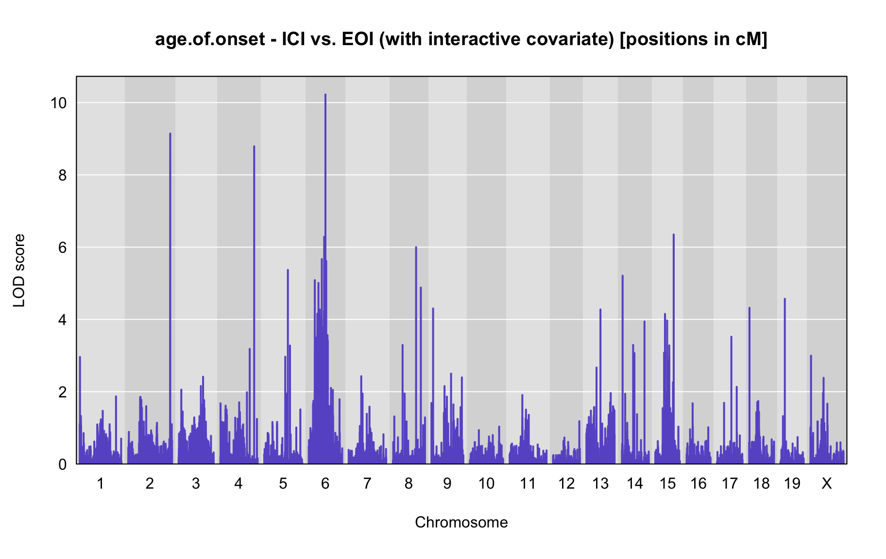
print("with normal kinship")[1] “with normal kinship”
outki <- scan1(pr.qc, covars["age.of.onset"], Xcovar=Xcovar, model="normal", addcovar=addcovar, intcovar=addcovar, kinship=kinship)
plot_lod(outki,gm$gmap)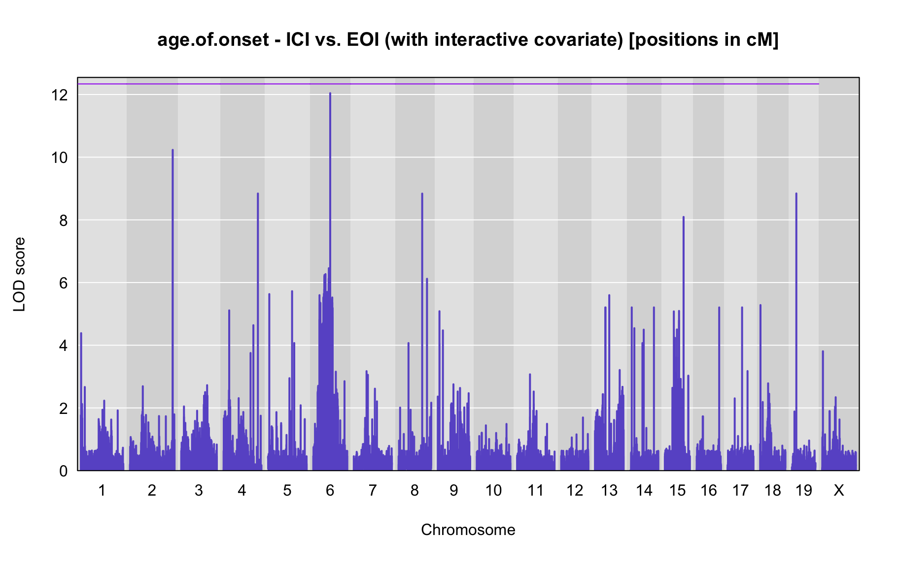
outk.new <- outki-outka
plot_lod(outk.new,gm$gmap)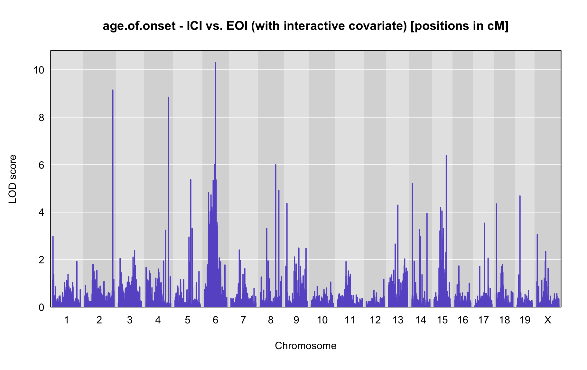
print("with loco kinship")[1] “with loco kinship”
outi <- scan1(pr.qc, covars["age.of.onset"], Xcovar=Xcovar, model="normal", addcovar=addcovar, intcovar=addcovar, kinship=K)
plot_lod(outi,gm$gmap)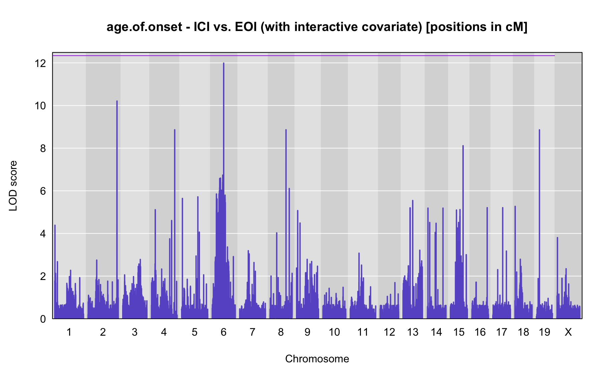
outi.new <- outi-outa
plot_lod(outi.new,gm$gmap)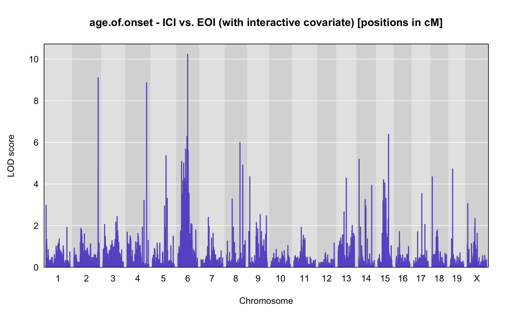
out = outi.new
print(paste0("number of samples in analysis = ", as.data.frame(attributes(out)$sample_size)[1,]))[1] “number of samples in analysis = 266”
LOD peaks
Centimorgan (cM)
peaks<-find_peaks(out, gm$gmap, threshold=summary(operm,alpha=0.05)$A, thresholdX = summary(operm,alpha=0.05)$X, peakdrop=3, drop=1.5)
if(nrow(peaks) > 0){
peaks$marker <- find_marker(gm$gmap, chr=peaks$chr,pos=peaks$pos)
names(peaks)[2] <- c("phenotype")
peaks <- peaks[-1]
rownames(peaks) <- NULL
print(kable(peaks, escape = F, align = c("cccccccc"), "html")
%>% kable_styling("striped", full_width = T)%>%
column_spec(1, bold=TRUE)
)
#plot only peak chromosomes
plot_lod_chr<-function(out,map,chrom){
for (i in 1:dim(out)[2]){
#png(filename=paste0("/Users/chenm/Documents/qtl/Jai/",colnames(out)[i], "_lod.png"))
#par(mar=c(5.1, 6.1, 1.1, 1.1))
ymx <- maxlod(out) # overall maximum LOD score
plot(out, map, chr = chrom, lodcolumn=i, col="slateblue", ylim=c(0, ymx+0.5))
#legend("topright", lwd=2, colnames(out)[i], bg="gray90")
title(main = paste0(colnames(out)[i], " - chr", chrom, " - ICI vs. EOI (with interactive covariate) [positions in cM]"))
add_threshold(map, summary(operm,alpha=0.1), col = 'purple')
add_threshold(map, summary(operm, alpha=0.05), col = 'red')
add_threshold(map, summary(operm, alpha=0.01), col = 'blue')
#for (j in 1: dim(summary_table)[1]){
# abline(h=summary_table[j, i],col="red")
# text(x=400, y =summary_table[j, i]+0.12, labels = paste("p=", row.names(summary_table)[j]))
#}
#dev.off()
}
}
} else {
print(paste0("There are no peaks that have a LOD that reaches suggestive (p<0.05) level of ",summary(operm,alpha=0.05)$A, " [autosomes]/",summary(operm,alpha=0.05)$X, " [x-chromosome]"))
}[1] “There are no peaks that have a LOD that reaches suggestive (p<0.05) level of 13.372776654663 [autosomes]/19.5841584798716 [x-chromosome]”
if(nrow(peaks) < 50 & nrow(peaks) > 0){
for(i in unique(peaks$chr)){
#for (i in 1:nrow(peaks)){
#plot_lod_chr(out,gm$gmap, peaks$chr[i])
plot_lod_chr(out,gm$gmap, i)
}
} else {
print(paste0("There are too many peaks (",nrow(peaks)," peaks) that have a LOD that reaches suggestive (p<0.05) level of ",summary(operm,alpha=0.05)$A, " [autosomes]/",summary(operm,alpha=0.05)$X, " [x-chromosome]"))
}[1] “There are too many peaks (0 peaks) that have a LOD that reaches suggestive (p<0.05) level of 13.372776654663 [autosomes]/19.5841584798716 [x-chromosome]”
Megabase (MB)
peaks_mba<-find_peaks(out, gm$pmap, threshold=summary(operm,alpha=0.05)$A, thresholdX = summary(operm,alpha=0.05)$X, peakdrop=3, drop=1.5)
if(nrow(peaks) > 0){
peaks_mba$marker <- find_marker(gm$pmap, chr=peaks_mba$chr,pos=peaks_mba$pos)
names(peaks_mba)[2] <- c("phenotype")
peaks_mba <- peaks_mba[-1]
rownames(peaks_mba) <- NULL
print(kable(peaks_mba, escape = F, align = c("cccccccc"), "html")
%>% kable_styling("striped", full_width = T)%>%
column_spec(1, bold=TRUE)
)
plot_lod_chr_mb<-function(out,map,chrom){
for (i in 1:dim(out)[2]){
#png(filename=paste0("/Users/chenm/Documents/qtl/Jai/",colnames(out)[i], "_lod.png"))
#par(mar=c(5.1, 6.1, 1.1, 1.1))
ymx <- maxlod(out) # overall maximum LOD score
plot(out, map, chr = chrom, lodcolumn=i, col="slateblue", ylim=c(0, ymx+0.5))
#legend("topright", lwd=2, colnames(out)[i], bg="gray90")
title(main = paste0(colnames(out)[i], " - chr", chrom, " - ICI vs. EOI (with interactive covariate) [positions in cM]"))
add_threshold(map, summary(operm,alpha=0.1), col = 'purple')
add_threshold(map, summary(operm, alpha=0.05), col = 'red')
add_threshold(map, summary(operm, alpha=0.01), col = 'blue')
#for (j in 1: dim(summary_table)[1]){
# abline(h=summary_table[j, i],col="red")
# text(x=400, y =summary_table[j, i]+0.12, labels = paste("p=", row.names(summary_table)[j]))
#}
#dev.off()
}
}
} else {
print(paste0("There are no peaks that have a LOD that reaches suggestive (p<0.05) level of ",summary(operm,alpha=0.05)$A, " [autosomes]/",summary(operm,alpha=0.05)$X, " [x-chromosome]"))
}[1] “There are no peaks that have a LOD that reaches suggestive (p<0.05) level of 13.372776654663 [autosomes]/19.5841584798716 [x-chromosome]”
if(nrow(peaks_mba) < 50 & nrow(peaks_mba) > 0){
for(i in unique(peaks_mba$chr)){
#for (i in 1:nrow(peaks_mba)){
#plot_lod_chr_mb(out,gm$pmap, peaks_mba$chr[i])
plot_lod_chr_mb(out,gm$pmap,i)
}
} else {
print(paste0("There are too many peaks (",nrow(peaks_mba)," peaks) that have a LOD that reaches suggestive (p<0.05) level of ",summary(operm,alpha=0.05)$A, " [autosomes]/",summary(operm,alpha=0.05)$X, " [x-chromosome]"))
}[1] “There are too many peaks (0 peaks) that have a LOD that reaches suggestive (p<0.05) level of 13.372776654663 [autosomes]/19.5841584798716 [x-chromosome]”
QTL effects
For each peak LOD location we give a list of gene
if(nrow(peaks) < 50 & nrow(peaks) > 0){
for (i in 1:nrow(peaks)){
#for (i in 1:1){
#Plot 1
g <- maxmarg(pr.qc, gm$gmap, chr=peaks$chr[i], pos=peaks$pos[i], return_char=TRUE)
#png(filename=paste0("/Users/chenm/Documents/qtl/Jai/","qtl_effect_", i, ".png"))
#par(mar=c(4.1, 4.1, 1.5, 0.6))
plot_pxg(g, covars[,peaks$phenotype[i]], ylab=peaks$phenotype[i], sort=FALSE)
title(main = paste0("chr: ", chr=peaks$chr[i],"; pos: ", peaks$pos[i], "cM /",peaks_mba$pos[i],"MB\n(",peaks$phenotype[i]," )"), line=0.2)
##dev.off()
chr = peaks$chr[i]
# Plot 2
pr_sub <- pull_genoprobint(pr.qc, gm$gmap, chr, c(peaks$ci_lo[i], peaks$ci_hi[i]))
#coeff <- scan1coef(pr[,chr], cross$pheno[,peaks$lodcolumn[i]], addcovar = addcovar)
#coeff <- scan1coef(pr[,chr], cross$pheno[,peaks$lodcolumn[i]], Xcovar=Xcovar)
#coeff <- scan1coef(pr.qc[,chr], gm$covar[peaks$lodcolumn[i]], model="binary")
#coeff_sub <- scan1coef(pr_sub[,chr], gm$covar[peaks$lodcolumn[i]], model="binary")
blup <- scan1blup(pr.qc[,chr], covars[peaks$phenotype[i]])
blup_sub <- scan1blup(pr_sub[,chr], covars[peaks$phenotype[i]])
write.csv(as.data.frame(blup_sub), paste0("data/ici.vs.eoi_",peaks$phenotype[i],"-interactive.covariate_blup_sub_chr-",chr,"_peak.marker-",peaks$marker[i],"_lod.drop-1.5_5.batches_mis_0.csv"), quote=F)
#plot_coef(coeff,
# gm$gmap, columns=1:2,
# bgcolor="gray95", legend="bottomleft",
# main = paste("chr", chr=peaks$chr[i],"; pos: ", peaks$pos[i], "cM /",peaks_mba$pos[i],"MB\n(",peaks$lodcolumn[i]," [scan1coeff; positions in cM] )")
# )
#plot_coef(coeff_sub,
# gm$gmap, columns=1:2,
# bgcolor="gray95", legend="bottomleft",
# main = paste("chr", chr=peaks$chr[i],"; pos: ", peaks$pos[i], "cM /",peaks_mba$pos[i],"MB\n(",peaks$lodcolumn[i],"; 1.5 LOD drop interval [scan1coeff; positions in cM] ) ")
# )
plot_coef(blup,
gm$gmap, columns=1:2,
bgcolor="gray95", legend="bottomleft",
main = paste0("chr: ", chr=peaks$chr[i],"; pos: ", peaks$pos[i], "cM /",peaks_mba$pos[i],"MB\n(",peaks$phenotype[i]," [scan1blup; positions in cM] )")
)
plot_coef(blup_sub,
gm$gmap, columns=1:2,
bgcolor="gray95", legend="bottomleft",
main = paste0("chr: ", chr=peaks$chr[i],"; pos: ", peaks$pos[i], "cM /",peaks_mba$pos[i],"MB\n(",peaks$phenotype[i],"; 1.5 LOD drop interval [scan1blup; positions in cM] )")
)
# Plot 3
#c2effB <- scan1coef(pr.qc[,chr], gm$covar[peaks$lodcolumn[i]], model="binary", contrasts=cbind(a=c(-1, 0), d=c(0, -1)))
#c2effBb <- scan1blup(pr.qc[,chr], gm$covar[peaks$lodcolumn[i]], contrasts=cbind(a=c(-1, 0), d=c(0, -1)))
##c2effB <- scan1coef(pr[,chr], cross$pheno[,peaks$lodcolumn[i]], addcovar = addcovar, contrasts=cbind(mu=c(1,1,1), a=c(-1, 0, 1), d=c(0, 1, 0)))
##c2effB <- scan1coef(pr[,chr], cross$pheno[,peaks$lodcolumn[i]],Xcovar=Xcovar, contrasts=cbind(mu=c(1,1,1), a=c(-1, 0, 1), d=c(0, 1, 0)))
#plot(c2effB, gm$gmap[chr], columns=1:2,
# bgcolor="gray95", legend="bottomleft",
# main = paste("chr", chr=peaks$chr[i], "pos", peaks$pos[i], "(",peaks$lodcolumn[i],")")
# )
#plot(c2effBb, gm$gmap[chr], columns=1:2,
# bgcolor="gray95", legend="bottomleft",
# main = paste("chr", chr=peaks$chr[i], "pos", peaks$pos[i], "(",peaks$lodcolumn[i],")")
# )
##last_coef <- unclass(c2effB)[nrow(c2effB),2:3] # last two coefficients
##for(t in seq(along=last_coef))
## axis(side=4, at=last_coef[t], names(last_coef)[t], tick=FALSE)
#Table 1
chr = peaks_mba$chr[i]
start=as.numeric(peaks_mba$ci_lo[i])
end=as.numeric(peaks_mba$ci_hi[i])
genesgss = query_genes(chr, start, end)
write.csv(genesgss, file=paste0("data/ici.vs.eoi_",peaks$phenotype[i],"-interactive.covariate_genes_chr-",chr,"_peak.marker-",peaks$marker[i],"_lod.drop-1.5_5.batches_mis_0.csv"), quote=F)
rownames(genesgss) <- NULL
genesgss$strand_old = genesgss$strand
genesgss$strand[genesgss$strand=="+"] <- "positive"
genesgss$strand[genesgss$strand=="-"] <- "negative"
#genesgss <-
#table <-
#genesgss[,c("chr","type","start","stop","strand","ID","Name","Dbxref","gene_id","mgi_type","description")] %>%
#kable(escape = F,align = c("ccccccccccc")) %>%
#kable_styling("striped", full_width = T) #%>%
#cat #%>%
#column_spec(1, bold=TRUE)
#
#print(kable(genesgss[,c("chr","type","start","stop","strand","ID","Name","Dbxref","gene_id","mgi_type","description")], escape = F,align = c("ccccccccccc")))
print(kable(genesgss[,c("chr","type","start","stop","strand","ID","Name","Dbxref","gene_id","mgi_type","description")], "html") %>% kable_styling("striped", full_width = T))
#table
}
} else {
print(paste0("There are too many peaks (",nrow(peaks_mba)," peaks) that have a LOD that reaches suggestive (p<0.05) level of ",summary(operm,alpha=0.05)$A, " [autosomes]/",summary(operm,alpha=0.05)$X, " [x-chromosome]"))
}[1] “There are too many peaks (0 peaks) that have a LOD that reaches suggestive (p<0.05) level of 13.372776654663 [autosomes]/19.5841584798716 [x-chromosome]”
R version 3.6.2 (2019-12-12)
Platform: x86_64-apple-darwin15.6.0 (64-bit)
Running under: macOS Catalina 10.15.7
Matrix products: default
BLAS: /Library/Frameworks/R.framework/Versions/3.6/Resources/lib/libRblas.0.dylib
LAPACK: /Library/Frameworks/R.framework/Versions/3.6/Resources/lib/libRlapack.dylib
locale:
[1] en_AU.UTF-8/en_AU.UTF-8/en_AU.UTF-8/C/en_AU.UTF-8/en_AU.UTF-8
attached base packages:
[1] stats graphics grDevices utils datasets methods base
other attached packages:
[1] abind_1.4-5 qtl2_0.22 reshape2_1.4.4 ggplot2_3.3.5
[5] tibble_3.1.2 psych_2.0.7 readxl_1.3.1 cluster_2.1.0
[9] dplyr_1.0.8 optparse_1.6.6 rhdf5_2.28.1 mclust_5.4.6
[13] tidyr_1.0.2 data.table_1.14.0 knitr_1.33 kableExtra_1.1.0
[17] workflowr_1.6.2
loaded via a namespace (and not attached):
[1] httr_1.4.1 bit64_4.0.5 viridisLite_0.4.0 assertthat_0.2.1
[5] highr_0.9 blob_1.2.1 cellranger_1.1.0 yaml_2.2.1
[9] pillar_1.6.1 RSQLite_2.2.7 backports_1.2.1 lattice_0.20-38
[13] glue_1.4.2 digest_0.6.27 promises_1.1.0 rvest_0.3.5
[17] colorspace_2.0-2 htmltools_0.5.1.1 httpuv_1.5.2 plyr_1.8.6
[21] pkgconfig_2.0.3 purrr_0.3.4 scales_1.1.1 webshot_0.5.2
[25] getopt_1.20.3 later_1.0.0 git2r_0.26.1 generics_0.0.2
[29] ellipsis_0.3.2 cachem_1.0.5 withr_2.4.2 cli_3.0.0
[33] mnormt_1.5-7 magrittr_2.0.1 crayon_1.4.1 memoise_2.0.0
[37] evaluate_0.14 fs_1.4.1 fansi_0.5.0 nlme_3.1-142
[41] xml2_1.3.1 tools_3.6.2 hms_0.5.3 lifecycle_1.0.1
[45] stringr_1.4.0 Rhdf5lib_1.6.3 munsell_0.5.0 compiler_3.6.2
[49] rlang_1.0.2 grid_3.6.2 rstudioapi_0.13 rmarkdown_2.1
[53] gtable_0.3.0 DBI_1.1.1 R6_2.5.0 fastmap_1.1.0
[57] bit_4.0.4 utf8_1.2.1 rprojroot_1.3-2 readr_1.3.1
[61] stringi_1.7.2 parallel_3.6.2 Rcpp_1.0.7 vctrs_0.3.8
[65] tidyselect_1.1.2 xfun_0.24